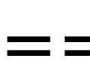
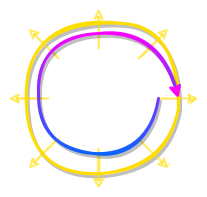
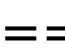
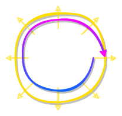
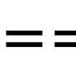
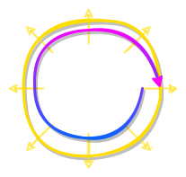

В лифте дрожь рук. Так забавно — руки, ладони, пальцы. Соединять кончики пальцев рука к руке, почти касаясь, и сквозь дрожь ощущать какое-то непонятное электричество на мягких шершавых подушечках. У Тебя в течении очень–очень длительного времени совсем не было рук. И это не мешало. Ты мог и без рук касаться, гладить, греть, обнимать. Всем телом. Травой, ветром, рекой, притяжением. Но торчащие из тела пара больших сгибающихся отростков, снабжённые каждый ещё пятью небольшими сгибающимися отросточками — это было супер функционально. Можно сначала ощупать, потом подумать, а уже потом решить: сто́ит ли это прижимать к своему телу.
Дверь из лифта ввела внутрь здания, в какой-то полутёмный коридорчик с небольшой лестницей вверх к свету. Понял, что это дверь «запасного выхода», и пошёл по светлому большому коридору в поисках «центрального входа». Просторный длинный коридор, по которому носились дети и подростки. “Школа?”
Коридор был шикарен: метров 20 шириной, высотой метров в 10 и длинной… “не видно… там плавный поворот куда-то вправо…”
Стена справа по Твоему ходу сложена из воздушных пористых блоков белого цвета и через каждые 100 метров в ней высокие лёгкие стеклянные пронумерованные двери. Заглядываешь в первую и видишь большой зал с диванами, столами, стульям и матрасами. Все эти вещи совершенно неупорядоченно, как попало, расставлены и разбросаны по полу. Где-то сидела, где-то лежала ребятня.
Дальняя стена аудитории была такой же как другая стена коридора — сплошные окна от пола до потолка. И потолок был окном. Общий потолок на все аудитории и коридор, прозрачный, пропускающий внутрь небо.
Из-за этих окон вокруг казалось, что архитектор лишь слегка попробовал здесь что-то выровнять. Поставил лишь одну стену коридора и стены между аудиториями, а в остальном оставил царствовать вечно нарастающей импровизом природе. Даже лампы на потолке не напоминали о равномерности и симметрии, образуя динамичный узор. Так же как и каменная мозаика на полу — не параллельные изгибающиеся линии.
В той другой, стеклянной стене коридора, по левую Твою руку, через каждые метров 300 двери на улицу, сразу в траву кошенного газона, метрах в 50 от здания переходящего в коренной дубовый лес. Центральных входов было много. Натоптанные тропки от дверей неправильным веером уводили куда-то вглубь радостной светлой свежей весенней чащи.
Никаких табличек на входах, никаких надписей «школа» с номером и прочими привычными прилагательными. Это из новой здешней памяти: Ты пришёл на занятия. А вот названия предмета не помнишь. И Тебе 12 лет.
Есть что-то необычное в ощущениях. Походка лёгкая. Ты же помнишь как устало передвигал ноги, когда шёл в школу когда-то там в далёком прошлом. В первый класс легко. Во второй тоже с надеждой. А в третий уже с усталостью. Но тут… школа не была похоже ни на больницу, ни на казарму, ни на монастырь, ни на каземат — такими Ты привык видеть школы. Здесь — уют и свет.
“Сейчас я? Хочу туда? Да. Хочу.
И… номер?.. ща, дай вспомнить… тоже не помню…”
Следующая дверь была дополнительно помечена под номером «10» табличкой «Открытый урок». Заходишь внутрь и уши наполняет такой особый, чуть придавленный скорым разрешением ожидания, шум разговоров, какой бывает прямо перед началом интересного занятия. Аудитория не просто наполнена, она битком. И здесь не только ученики. Ещё и их родители за столами вдоль стены. Все места захвачены. В том числе сидячие на столах. Ты садишься прямо на пол у стены, которая окно, раздвинув собой двух одногодок–мальчишек, Твоих старых друганов и соседей по дому.
– Здравствуйте, незнакомцы. – Ты узнал его, — ни галстука, ни пиджака, в белых тонких джинсах и белом свободном лонгсливе навыпуск, — преподавателя, что вышел на невысокий помост перед белой доской, с открытым улыбающимся лицом и уже зажившим, едва-едва заметном, шрамом на левом виске. Узнал не в лицо. Нет. Лицо Ты видишь впервые. Его нет и в новой памяти этого этажа. Но куда деться от волны очень приятных ощущений, говорящих, что перед Тобой уже почти родной человек?
– Занятие наше не диктант, но прошу — желания вникнуть! Воспримите это как будущие руководители, директора, дирижёры, режиссёры, гиды в неизведанное вами самими — это вам непременно потребуется. Постарайтесь в нашем сегодняшнем диалоге выискать главное — это записать. Только то, что сами посчитаете достаточным. А я потом посмотрю кто чего для себя оставил. Итоговая оценка только от этого и будет зависеть. И одинаково низко оценю как пустую тетрадь без записей, так и стенограмму всего занятия.
– Кто мы будущие? – толкаешь Ты левым локтем Славку… Ну в общем, да, вот этого, того самого Славку. А справа — Женька. Как Ты их всех сразу узнаёшь? Совсем не задумываясь. Просто знаешь. Давно знаешь. И, чуть удивляясь, немного кайфуешь от таких своих способностей.
– Ну, руководители, управленцы, – шепчет в ответ Слава, – типа должны знать и чувствовать как живёт наша контора или банда, в которой мы можем и директорами или капитанами стать — так папка мой говорит, — без этого курса, без этих знаний нам в управление не попасть. Сегодня, как обещано, что-то с уклоном с информатику, в работу с информацией.
“О чём тут вообще речь ведут?” – задумываешься Ты надолго. Ещё раз оглядывая аудиторию внимательнее, отмечаешь глобальную разновозрастность учеников. Там, на столах ближе к дальней стене, компания никак не менее, чем двадцатилетних парней. А на первом матрасе, лёжа поперёк, четыре совсем малолетних, лет на девять, девчушек.
– Вячеслав, если сейчас над нами взовьётся самолёт, я буду считать это твоих рук делом, – шутливым тоном говорит Он, повернувшись к доске и явно любуясь этим чистым белым пространством. С озорным взглядом желания как-то её испачкать.
Ты смотришь влево и видишь как Славик сворачивает в бумажный самолёт лист, выдранный из тетради. “И Он как-то увидел?.. И Он все наши имена знает?..”
Самолёт всё же взлетел. Ни криков, ни наказаний не последовало. Последовала пауза. Пока кружил самолёт и опускался куда-то в зону родителей, все вовсе не бесились парящим зрелищем, прыгая и пытаясь его поймать. Все воспринимали спокойное молчание, каким-то потрясающим образом настроившись на замеревшего между вдохом и выдохом учителя, на Его паузу перед началом.
– А почему именно информация? – паузу завершил не Он, а опять же баламут Славка. И снова наказаний не последовало. Вдумчиво, как отвечают на вопрос, который заинтересовал, Он приостановил рисование на доске вертикальной линии:
– Может, потому что она была в начале.
– В начале? В каком таком начале? – не унялся Славка.
– В том самом. В том самом начале… А для нашего начала вот! – Он надписал крайние точки линии. Сквозь эйфорию от погружения к началу Ты и узнал, и вспомнил, и улыбаешься в предвкушении продолжения.
– Представьте себе лук, из которого стреляют. Это дуга. Но я его могу развернуть для своего взгляда так, что увижу его как прямой отрезок. Представьте человека, который первый раз в жизни увидел лук именно вот в таком ракурсе. И представьте, не захотел ни взять его в руки, ни повертеть в руках, ни посмотреть на него со стороны. Он убеждён и готов убеждать всех вокруг, что лук представляет из себя прямой отрезок. Если он будет делать это чересчур упорно, я назову его человеком крайних взглядов, человеком упёртым в крайность, в одну точку восприятий, в один источник информации и отвергающим все остальные точки зрения. Заметьте: эта крайняя точка зрения реальна, но реальна она лишь в рамках ограниченного пространства–времени. Как только я сделаю шаг в сторону, посмотрю на вещи более широко, я увижу, что эта крайность — ложь.
Для многих является вопросом вопросов: «А зачем мне делать шаг в сторону? Нас и здесь неплохо кормят…»
Зачем человеку в здравом уме вдруг может потребоваться смотреть на вещи более широко, нежели чем тот взгляд, что есть у него прямо сейчас? И совершенно без разницы насколько сложен и казалось бы всеобъемлющ этот текущий взгляд, насколько он доказан и насколько принят как норма среди людей — всегда можно перейти границы и расширить горизонт. Этот простой пример с луком даёт ответ: некоторым людям хочется как можно ближе подойти к реальности, к настоящей реальности, отбросив лживые крайности, всего лишь для того, чтобы узнать окружающий мир получше, поближе и перестать лениво и сонно купаться в сытом и сладком невежестве.
Особым свойством обладают крайности логического или психологического характера. Они также возникают тогда, когда я упираюсь в одну точку и начинаю это считать непреложной истиной, отвергая все остальные варианты. И в психологии любая точка зрения, любое утверждение, любой объект вокруг тебя может стать такой крайностью. Но тут же проявляется противоположное состояние, взгляд, мнение, прямая альтернатива. Которая тоже становится крайностью. Ибо оголтело непререкаемо утверждать и оголтело непререкаемо отрицать — это одно и тоже. Поставив любую точку крайней, ты в реальности порождаешь два полюса, две противоположных точки зрения. Как тот, у кого в глазах двоится.
«Ах, это так прекрасно!» и «Да что вы, это же ужас!»… да и нет, добро и зло, хорошо и плохо, чёрное и белое, с тупой стороны яйца или с острой… Кто ещё? Давай примеры! – громко обратился он к аудитории и заполыхало:
– Плюс и минус!
– Есть и пусто!
– Друг и враг!
– Равно и не равно!
– Цветной и серый!
– Бог и Дьявол!
– Люблю — ненавижу!
– Верю — не верю!
– Больной — здоровый!
– Пустая тетрадь и стенограмма! – особые улыбки…
– Прав и не прав! – Он прерывает возгласы невысоко поднятыми руками, особо внимательно и с небольшим поклоном посмотрев на последнего из выступивших так, что, заулыбавшись, Колька несколько вдавился в стул, и продолжает:
– Спасибо. Примеры не однозначны, говорят о многом. И прежде всего о вас самих, о том как вы сами описываете мир для себя. Заметьте: обоих крайних точек, в которые упираются люди, деля мир на два противоборствующих лагеря, на самом деле не существует в реальности. Они достижимы лишь в ограниченном пространстве и\или в течении короткого промежутка времени. Но в отличие от материи, когда мы вертели в руках лук, в психологии достаточно сложно бывает посмотреть на свои убеждения со стороны.
Почему-то люди забывают, что расстановка реперных точек, помогающих ориентированию на местности и в истории, является лишь контуром, очерчивающим реальность, но не является самой реальностью. Забыв это, ты погружаешься в бинарное мышление.
– Не, стоп! Нету в реальности друзей? О чём это? – Маринка непонимающе выразила вслух недоумение многих.
– Нету. Нет однозначно чёткого деления всех людей на друзей и врагов. Друг порой поступает с тобой хуже врага. Враг иногда бывает милостливее друга. Люди меняются — друг может стать врагом. И наоборот.
Бинарное мышление как раз и подразумевает однозначное «ИЛИ–ИЛИ», когда ничего третьего не дано. Никаких градаций промежуточного. Никакой динамики изменений.
– Но есть же, – снова выступил Николай, – такие друзья, что "на век", "не разлей вода", которые прям как братья!
– Есть. Но они уже не просто друзья. Они даже ближе друг другу, чем братья. Может, как раз такую близость к реальности мы и ищем всю жизнь?..
Какая двойственность?! Какое деление?! Какое может существовать левое и правое, верхнее и нижнее — жуткие условности! Какой к чертям запад–восток, когда Земля шар?! Всё это лишь условности нахождения тебя вот в этой точке пространства и времени. Уже в соседней — всё иначе. Повернись от севера к югу и левое станет правым.
Предствь, что тебя пнули и ты летишь в свободном космосе — это не падение, это не подъём. Лишь цель, которую тебе обеспечили пинком, — относительно её ты и выстаиваешь свои «вперёд–назад». А влево–вправо и вверх–вниз уже не несут противоположной противонаправленной двойственности.
На этом рисунке двое: «позитивное» и «негативное». Полупустой стакан или же наполовину полный? Оптимистический взгляд — это хорошо! Пессимистический — это плохо! Раскидали по двум ячейкам всех людей и прёмся от того, что знаем как устроены люди.
Позитивные эмоции! Даёшь позитив! Это круто! Это кайф!.. Негативные эмоции — это не кул, это бэд… Как-то искореняй уже из себя!.. И мало кто замечает, что это бинарное деление на условные '1' и '0' не работает в реальном мире. С позитивным настроем, весело, смеясь, на подъёме азарта можно на дискотеке отжигать, а можно идти убивать. И то, и то в одной ячейке. Как так? Или есть иной взгляд, со стороны, откуда видно, что эти двое — полная хрень, которая даже для надписей на заборе не годится.
Задача: зная, что крайности «эт плооохо», нам необходимо отойти как можно дальше от них, от каждой из них, от обоих. Задача вот прям геометрического толка — найти точку с помощью линеек, циркулей и прочих лекал, максимально отстоящую от двух крайних. Вперёд! Ваши предложения!
– Середина отрезка! – первый прямой ответ.
– Да? Уверен? – Он смял и скинул в мусор прямоту.
– Конечно середина, чего тут думать?! – полувопрос уже с сомнениями.
– А я предлагаю всё же подумать!
– Какое-нибудь золотое сечение! – все повернули головы с «Ммм…» в сторону Димки.
– Очень интересный вариант. Спасибо, Дим. Обещаю к этому ещё вернуться, но сейчас — ответ иной.
– Ну середина же!
– Конечно середина.
– Середииинааа!
– Даёшь центр!
– Чего ещё-то? – недоумевал шумно народ, пока кто-то не выдал следующее жёсткое твёрдое громкое утверждение, сила которого даже короткую тишину сотворило:
– Максимально удалённая точка от концов отрезка — это его середина!! – и спокойно, но не менее твёрдо, Он в этой тишине:
– Можешь идти с этим в банк.
Визг, смех, «Ааа…», «Да ё…», «Вот подловил…», «Блииин…» и куча подобных одновременных возгласов говорили о том, что народ понял как выбраться из рамок в две точки.
– Славка! Топай к доске. – вызвал Он Твоего друга. И Слава так бесстрашно и заинтересованно встал и уверенной быстрой походкой пошагал от Тебя. “Доверяя? Настолько хочет участвовать, что готов к тому, что его сейчас на куски разделают?”
– Этот отрезок, межу двумя точками, – говорил Он, пока шёл Славка, – он не только кусок прямой линии непосредственно между точками, мы его берём и внезапно расширяем, раздвигаем влево и вправо до полосы. Представьте горизонтальную полосу, например, эмиссионного спектра, как разноцветный дождь по лобовому стеклу нарисовал множество вертикальных линий разных цветов–частот. Наш нарисованный отрезок лишь одна линия одной частоты в полосе такого спектра… Рисуй! Как ты видишь, рисуй этот уход от центра. И рассказывай о чём рисуешь. – передал Он маркер подошедшему ученику. Сам Он быстренько прошёл недалеко вглубь аудитории и сел на пол между матрасами, погрузившись вместе с тесными соседями в действие, что разворачивалось на доске.
Славка ткнул маркером в середину отрезка, нарисовав жирную точку, и начал рассуждать:
– Ну чё, у нас тут можно налево, можно направо — два направления…
– Ну чё… – встревает Он. – Так вот запросто, выбравшись из одних двух крайностей, вляпываются в две другие…
– Ого… – лишь на полсекунды осёкшись, мечтательно обозрел пространство аудитории Славка. – Бесконечность? Ааа!..
– Именно! – обрадовался Он. – Когда предлагают выбор, такое и только такое количество опций меня и устраивает!
– Бесконечность? Какая? Где? – на вопросы тех, кто не догадался, Слава быстро:
– Всмотритесь: я же могу перпендикуляр из этой точки к отрезку постороить и не на доске, а перпендикулярно к доске, вон туда! – вскидывает рукой в простор аудитории в сторону от доски. – И туда! И туда! И вглубь доски! Туда! – махал Славка руками в разные стороны. – Бесконечное количество вариантов выхода. Это не просто полоса. Это… ммм… диск?
– Хорошо. Соображаешь. – оценил Он кивками, с радостью, но без похвальбы. Сказал так, как поют не гимн, а тихую песню любимому человеку.
Кто-то втихую устало презрительно фыркнул, как в ответ рассказавшему слишком липовую байку.
– Это не надумано, не преувеличено, без прикрас. – наверное Он один сидел, не вертя головой. Народ то вглядывался в точку середины, то измерял взглядом весь объём отпущенного пространства. – Любой начинающий геометр знает, что трёхмерная фигура «диск» в двумерном пространстве есть «полоса», а в одномерном — «отрезок». Но вот пройти обратный путь, от одномерки к 3D почему-то несколько сложнее.
Он достаточно долго ждал пока волнующееся дыхание аудитории стало ровным, но явно никуда не спешил. Слава стоял молча, уже не зная чего куда и как рисовать, но с восторгом воспринимая как его горизонт раздвинули.
– Давай представим, – продолжил Он также сидя там же, – что, осознав простор для выбора, ты всё же смог не потеряться и выбрать. Выбрать какой-то один вариант движения. Пусть у нас будет тот, что можно всё же нарисовать на доске. Рисуй.
Славка аккуратно неспеша начал вести горизонталь вправо и, засомневавшись:
– Так можно долго рисовать. – смеётся по-тихому.
– Что-то мешает? Не отвечает требованиям решаемой задачи? – как флейтист перед змеем, Он вытягивал смелость. И Славка, не долго думая, упёрся маркером в край доски.
– На этом всё? Предел мечтаний? – это было явным искушением. Славка смерил Его твёрдым взглядом:
– Не хорошо на стенах рисовать. Потом не сотрётся.
– Прекрасно! И не надо. Главное — это понять, что границы этой доски — это никакие не рамки и преодолеваются лёгким прыжком. Продолжай эксперимент мысленно и вслух.
– Топаю дальше прямо по стене… вот до угла.
– Это непреодолимое препятствие?
– Хмм… Ну стены-то ломать не хочется. Пойду топать дальше по другой стене.
– Потом свернёшь на третью стену, потом на четвёртую и…
– И упрусь снова в эту точку, откуда вышел. – совсем уже грустно закончил Слава.
– И, заметь, если даже ты продырявишь стену по прямой и дальше будешь дырявить все встреченные тобой стены, то пройдя вокруг Земного шара, ты снова вернёшься к тому, откуда вышел.
Где-то там, на другой стороне планеты, или как, мечтая о счастье, говорят «на самом дальнем краю Земли», лежит наша точка, которая максимально удалена от этих двух концов отрезка. Не странно ли, что она лежит на той же прямой, что и этот отрезок?
Аудитория притихла, пытаясь сообразить нужно ли им нечто большее, но так никто ничего и не родил. “По прямой в Космос — дак это ж по воздуху ходить надо уметь. Всё что есть — это наш родной шарик”. – немного загрустил и Ты вместе со всеми.
– Спасибо, Слав. Я сейчас вам выдам пару лирических отступлений математико–художественного характера, которые помогут нашему дальнейшему движению.
Медленно и явно разочарованно, Славка плюхнулся рядом с Тобой. Ну вот же в руках была бесконечность. Кайф! Безмерный! А вот снова закольцевались. Печаль. Взявшись рисовать эти линии у себя в тетради, Славка потихоньку разжухарился, снова смеётся Тебе и Женьке. Вы готовы к дальнейшему.
– Можно рассмотреть множество объектов, вот, например, мы все в аудитории, с наклееными на них ярлыками: «ученик», «учитель», «родитель», «ребёнок», «мальчик», «девочка», «сын», «дочь», «короткие волосы», «длинные волосы», «рыжий», «блондинка», «кареглазый», «зелёноглазый» и т.д., и т.д. Это чтобы вы сходу отхватили весь объёмный простор. Нам сейчас достаточно одного абстрактного объекта с кучей наклеек с разных сторон. В математике это называется «полином» — от греческого: πολυ = «много» + латинское: nomen = «имя». Это математический способ описать объект.
В верхнем правом углу доски появилась надпись:
– Здесь X — наш объект, ai (где i от 0 до n) — те самые ярлыки на объекте, некие вещественные или комплексные постоянные.
Итак, описание объекта или полином P объекта X степени n — это такая вот сумма. Бесконечная? Сколько ярлыков каждый из вас на себе ощущает? Чем больше n, тем точнее описание объекта. В идеале — n равно бесконечности. Иначе как понять до конца?
Если оторвать два первых слагаемых (округлить до степени 1), получим бином, где есть лишь два искомых неизвестных. Плоскость и карта с их X&Y и N&E — примеры таких счислений.
По сути полином представляет некую поверхность — в упрощении двумерную плоскость с выпуклостями и впуклостями, соответствующими значениям an — и если добавить динамику изменений "ярлыков", ещё одну временну́ю ординату, то получим объём движущихся волн для того, кто исследует себя, или стоячую неизменную волну для того, кто считает себя законченным совершенством.
На практике у нас редко бывает в руках готовая формула. Куча разбросанных дискретных значений, из набора которых формулу есть вероятность выудить. Ну насколько-то приближённую, на сколько-то охватывающую все значения из кучи. Техника называется «интерполяция». Были разрозненные ярлыки — стала стройная формула, описывающая тебя.
При описании себя, вспомните, с чего вы сами начинаете? С самого, на ваш взгляд, важного и существенного. Вот это и есть самые первые слагаемые полинома. Это и есть самое главное, самое первое из чего ты сложен. Дальше — по мере убывания важности. В конце концов доходим до таких несущественных мелочей, которые смело округляем, говоря: «Хватит!» Не надо нам идеальной бесконечности! Дайте синицу в руках. И вот у нас уже n равно не той недостижимой и непонятной, а вполне себе приемлемое число, запросто помещаемое в мозг. И всё золото превращается в черепки…
Неторопливыми Его стараниями разноцветными маркерами на доске появилось многообещающее кольцо. Дорисовав стрелу по кругу, Он, интригующе улыбаясь, кидает взгляд на Славку, и повернувшись ко всем:
– Посмотрите в экран. Нет, не сюда на доску, а в свой экран, своего планшета, монитора, смартфона. Если нет своего — загляни к соседу. Лучше под лупой. Прошу разглядеть не картинку, что на экране отображается, а то, из чего картинка складывается. Мы углубимся в изучение цветовых палитр.
– Когда-то… В самом начале… Был лишь один лучик света. Он светил и светил сам себе вечно и неустанно, просто радуясь своему существованию. Потом ему захотелось стать другим. Заскучал? Нет. Как можно скучать в наслаждении? Просто захотелось ещё увеличить степень наслаждения, став более наполненным. Стать другого цвета. Как начать такой непростой процесс преобразования? Он вдруг понял, что на самом-то деле процесс свечения — это целых два варианта. Лучик мог или светить, или быть погашенным.
Лучик нёс свой свет некой непонятной ему Плоскости, рождая на ней точку света. Дочку назвали «Пиксель». Но как реализовать на практике это "погаснуть"? Разве можно на время потушить Солнце? Конечно, можно! Даже двумя способами. Во-первых, чем-то заслонить луч. Во-вторых — вращать нашу плоскость, ведь с обратной её стороны будет та же тень.
Точка–пиксель была того же цвета, что и лучик, когда тот светил. И другого цвета, когда было темно. И эта одна точка двойного цвета несла в себе 1 полный бит информации. Что толсто намекает на то, что непрерывно льющийся свет, также как и вечная темнота, информацией не являются. Полу-бит какой-то недоделанный. Или светлый, или теневой. Являются ли они равными, эти две половинки бита? Легенда умалчивает. Можно рассудить, что точка, когда луч погашен, того же цвета, что и плоскость. Но кто ж его разглядит-то в кромешной тьме какого именно.
Были ещё два творца, помогающие лучику в его преображении. Один творец, владеющий паяльником, и другой творец, владеющий программным словом, смогли подарить движение лучику. Он теперь носился быстро–быстро по всей плоскости, по очереди освещая каждую точку всей площади плоскости. Каждой точке даря свой один бит. Творцы также смогли упорядочить моргание лучика так, что на плоскости экрана зритель мог видеть картинки и буквы. Одна беда — они были чёрно–белые. Или более изящный вариант: чёрно–зелёные.
И не путайте с чёрно–белой фотографией. На современном цифровом фото есть 256 оттенков серого между чисто белым и чисто чёрным. Эти градации от белого к чёрному говорят нам, что на фото 256 различных серых цветов.
В том древнем мире лучика всё было проще. Там где он не светил — там тёмная зона. Там, где светил — белая (или зелёная — какого цвета был лучик в вашей версии матрицы?) Только эти два цвета. И ничего промежуточного. Никаких градаций.
Вся плоскость теперь делилась на какое-то количество точек по горизонтали и какое-то по вертикали. Это назвали «разрешение экрана» — то, что плоскость может себе позволить и может зрителю разрешить увидеть — не более того. А текущий кадр, который мог быть и меньше экрана, мог быть и больше экрана, назвали «растр» — вот столько точек в ширину на столько точек в высоту.
Творцы пошли дальше, исполняя наказы лучика. Они придумали очень умную вещь: нарядить лучик разными светофильтрами и светить в один пиксель не одним, а тремя разноцветными лучами, очень-очень близко расположив их внутри пикселя так, что на глаз только под лупой и можно рассмотреть эту светящуюся троицу, а без лупы — три цвета сливались в один обобщающий цвет пикселя.
Как выбрали цвет светофильтров? О! Это прекрасная математика! Вычислили. А позже поняли, что, как и всегда, открыли то, что природа уже давным давно создала. Внимательно посмотрели в зеркало и узнали как устроены глаза человека — из трёх типов рецепторов, воспринимающих различную теплоту этих трёх цветов.
Каждый из трёх лучей мог, как и изначальный, только лишь или светить, или быть потушенным. Пиксель возмужал, став теперь… сколько битным? Не угадали, не трёх. Круче.
Лучи были: красный «Red», зелёный «Green» и синий «Blue». Палитра, которую они воспроизводят, называется «RGB». И такие цвета смогли теперь получить:
•красный, •зелёный, •синий,
•синий + зелёный = бледно–голубой циан,
•красный + синий = пурпурная маджента,
•зелёный + красный = жёлтый
— шесть цветов. Плюс седьмой, когда все лучи потушены = чёрный. Плюс восьмой, когда все лучи горят — обавот! — белый вроде как и получается, но такой какой-то грязненький весь. Вот странное — изначальный луч белый, а после разделения и снова объединения… как-то не так срослось, как ожидалось.
Ну да творцы у нас не глупые, придумали подсветку — одну большую белую лампочку сзади экрана — и контуры стали чётче, и белый стал чистым. И каждый пиксель теперь у нас 8ми битный. Мы можем показать на экране фото из восьми цветов.
Следующий уровень игры — учим лучи не просто светить, а светить вполсилы. Каждому из трёх лучей даём не 1, а 256 бит — столько градаций каждого цвета можем отобразить с помощью уменьшения мощности луча. Современный один пиксель может отобразить 16777216 цветов (256×256×256). И это не предел для будущих сытых игрищ!
Это то, как видят современный цветной мир логики–компьютерщики.
– И немного о том, как видят мир художники–компьютерщики. Вернее, как они интерпретируют те цветовые иллюзии, что создаёт нам мозг, различая углы отражения и преломления единого солнечного света.
Перед нами белый холст и цветные краски. Теперь у нас отсутствие света = белый. Обратная незадача. Если смешать все краски вместе, то получим некую тёмную бурду, но никак не чёрный. Самая главная краска, без которой не обойтись — ключевая «Кеу» краска чёрного цвета «BlacK», которой обрисовывают «Kontur».
Художники смешивают не световые лучи, их творения из разноцветной мелко тёртой в пыль глины, разведённой водой. Но у них тоже есть своя цветная троица. Выбор таков: циан «Cyan», магента «Magenta» и жёлтый «Yellow». Когда их смешиваешь получаешь:
магента + жёлтый = красный,
жёлтый + циан = зелёный,
циан + магента = синий.
Палитра получила название «CMYK».
Заметили как переплетаются эти две палитры? Суммарные цвета одной являются базовыми цветами другой. Отображая эту симметрию, рисуют кольцо цветового спектра:
– Конечно же есть и третья альтернатива. Кто ж теперь тут остановится на двух вариантах? Надо же как-то воткнуть в это кольцо и белую подсветку, и чёрный контур.
Представьте, что к каждому–каждому цвету кольца–спектра «Hue» (тон или частота, или теплота) приделали два движочка-рукояточки, которые могут изменять свойства каждого этого тона. Первый движочек «Saturation» меняет насыщенность тона, определяя чистоту оттенка. Уменьшение значений насыщенности приведёт любой тон к белому цвету. Второй движочек «Ligtness» меняет яркость тона, она же светлота или интенсивность, или лёгкость. Уменьшение значений яркости приводит любой тон к чёрному цвету. Палитра «HSL».
Изображается двумя конусами над и под кольцом тонов цветового спектра. Верхний конус — насыщенность и его вершина белая. Нижний — лёгкость и его вершина чёрная.
Откусим кусочек этого наливного яблочка знаний и вскроем заветные треугольнички:
Забавная червоточинка обнаружена в середине — самая центральная линия от белого верха до чёрного низа представляет все градации серого.
Кто-то выше утверждал, что цветное и чёрно–белое как-то противостоят друг другу? А вот нет. Они естественный процесс преобразования цветов друг в друга. Нет никаких крайностей. Такое вот яблоко–юла объединяет их в одно непротиворечивое целое.
– Надкусывать в поиске червоточинок — занятная привычка. Люди обожают это делать со своими соседями и очень не любят это делать с собой. В других они видятся как изъяны, а в себе каким-то загадочным образом превращаются в прекраснейшие особенности уникального пути развития, выказывающие глубину своего внутреннего мира.
Вот о глубине особо хочется поговорить.
Раскладывая по физическим органам чувств свои восприятия, учёные люди быстро соотнесли глаза со зрением, уши со слухом, язык со вкусом, нос с нюхом… Но восприятий и их оттенков гораздо больше и до сих пор спорят, например, о том как мы определяем степень сгиба суставов и можем с закрытыми глазами коснуться кончика носа.
Какие-то непонятные мешочки в преддверии ушной улитки медикам были известны давно, но то что они и есть орган отвечающий за чувство равновесия — вестибулярный аппарат — стало понятно всего-то чуть более сотни лет назад.
И вот тут интересно, может ли заумный учёный запретить мне касаться кончика моего носа только потому, что он не знает каким образом это происходит? Или он оставит меня в покое, и себя оставит в покое, позволив мне пользоваться тем, что работает, несмотря на то, что он не знает как. Голова у людей кружилась и двести, и тысячу лет назад — вестибулярка работала и до её открытия наукой.
И вот в этот момент я кину вам такой антинаучный на сегодня постулат: есть, вдобавок ко всем обычно перечисляемым, ещё три чувства, которые каким-то образом присутствуют в человеке, работают в нём, которые можно как развивать, так и притуплять, которые я считаю настолько основополагающими как для одного человека, так и для организации социума, что прямо сейчас мы их и порассматриваем.
Всё это напрямую связано с информацией. Каждое из чувств человека (с его уровнем качества) даёт человеку именно её — информацию о себе и окружающем мире. Интеллектуальный анализ с его логическими выводами вторичен. Начинаем исследовать мир мы чувствами. И если вдруг они нам врут, то и в интеллектуальных доказанных убеждениях у нас отложатся не более чем иллюзии.
И мне всё равно, что сейчас я не могу указать на физический о́рган, который отвечает за эту троицу восприятий. Главное для меня — эта троица работает.
– Первое из них, естественно присущее каждому человеку чувство, — восприятие глубины.
Главная причина почему люди отодвигают от себя это восприятие и даже усиленно стараются о нём не думать, забыть и забить — это страх. Особенно когда речь идёт о глубине более чем по щиколотку. Да ещё и в мутной воде.
Для выживания достаточно освоится лишь в поверхностном изучении реальности. Зачем нырять глубоко?
И ещё одно свойство Глубины, которое обрадовало недавно Славку, стоявшего у доски, и испугало многих здесь присутствующих — бесконечное количество вариантов выбора. То есть по жизни предлагается рыть не колодец в одном направлении бесконечной глубины, а гораздо больше чем одно направление, каждое из которых в бесконечность.
Вот на этой стадии, когда ведём речь о глубине размером в бесконечность, чувство глубины перерастает в ещё более будоражащее и восторгающее (или удручающее и паникующее) чувство Тайны.
Своей сенсорикой, как бы она ни была развита, мы не можем постичь бесконечность — так далеко не видно, не слышно, не понятно, даже по прямой, доступной зрению. А там ведь повороты! Всегда! Один за другим! И что там за каждым из них? Внезапно Тайна проявляется не где-то далеко, а прям под носом: стоишь перед очередным поворотом и боишься сделать шаг в сторону от привычной прямой, даже заглянуть туда заранее боишься, не то что шагнуть — вдруг это конец?!
И вот расскажите мне, почему кого-то это радует, кого-то веселит, кого-то пугает, кто-то, скучая, снова раздражён, кто-то спокоен и предвкушает открытия, и даже специально выискивает, вынюхивает те направления, в которых ощущает эту глубину, чтобы намеренно туда ломануться и сделать для себя тайну явью?
– Сидишь и о чём-то мечтаешь. Подваливает толпа и недоумение: «Ну чего ты такой серьёзный?»
Такая двухцветная радуга у них — есть либо эмоции серьёзности, либо эмоции развлекалова. И ничего более. Но когда художник рисует, но когда музыкант пишет или поэт сочиняет — их состояния совсем не развлекающиеся. Они серьёзны? — нет. Они готовы травить анекдоты под пиво? — нет. Что с ними? С ними — ꙨВ — озарённые восприятия. С ними Творчество. Они в Потоке. А та компания, что «Тусииить, бухааать и веселииитьсяаа!», они же понимают, что прямо сейчас не делают ничего, что поможет им создать свою Джоконду?
«Не грусти» — значит веселись? Нет. Сказку расскажу о путешествие в страну Ꙩз.
Него:
унижение своей властью + надменно + ненавидеть + важность.
Пози:
унижение своей властью + надменно + смеяться + важность.
Нет среди этого места для симпатии, нежности, детской зашкаливающей через край радости.
Помесь под названием «позитивный настрой» — смешиваем винегрет с помощью бинарного мышления, описывающего пару крайних состояний и плюс убеждение, что кроме этой пары нет ничего иного:
• Если не на позитиве — значит негативен.
• Если без негатива — то в позитиве.
И всё. И ничего ни третьего, ни четвёртого не дано. Либо–либо. Я предлагаю вгрызться в этот гранит и разделить состояния по более тонким оттенкам и более чем на две группы.
А то, что мы оставляем в прошлом, двигаясь в сторону озарений, будем звать «омрачённые восприятия».
– У каждого из нас есть свой мир. Но он самим человеком не освоен. Ну может, по щиколотку. Но глубина не освоена. Иметь инфу о том, что там глубоко, маловато для полной жизни. Хватит лишь чтоб тешить свою важность и влезать в чужие миры как слон в посудную лавку — получается лишь "вдребезги".
Пусть есть только ты и этот мяч. Клёвое сосредоточение и игра. Но только если во всей твоей жизни не будет ничего, кроме меча, игра покинет тебя. Если вне регби, в каждую секунду твоей жизни будет только мяч. Нет ничего важнее регби? Даже эта планета? Всё человечество? Да это ограничение себя! Замыкание на чём-то одном. Вроде по-детски, увлекаясь. Но так серьёзно по-взрослому отстраняя от себя всё–всё–всё остальное.
Каждый сам решает как глубоко проживать жизнь. И если вдруг решает, что только «по колено», что он забрёл вполне достаточно, чтобы самоудовлетвориться: «Жизнь прожита!» — то это его дела. Но вот я считаю что её глубина бесконечность. А значит в любой момент, как бы глубоко я не погружался, есть возможность, лазейка, пусть и с некоторой болью, неудобством, но уйти ещё глубже.
Глубина для ꙨВшных даёт свободу. А в омрачённых — рождает страх.
– Каков базовый страх? Лежащий в основе всех страхов. Страх смерти? Нет — он следствие.
То, что выдавливает из тебя ЧСВ. Вот ты такой важный, внезапно оказываешься перед бесконечностью, и твоё ЧСВ, когда ты ощущаешь себя песчинкой, муравьишкой перед вечностью, медленной улиткой на бесконечном склоне, схлопывается в ЧСУшное нытьё о своей тяжкой судьбине. И это выворачивание себя наизнанку, превращение ЧСВ в ЧСУ, прогноз такого развития ситуации, давит неимоверно и на тело, и на ум, и на психику.
Страх перед неизвестностью — базовый. Порождает и страхи смерти, боли, высоты, чудищ, дяденек милиционеров, кошмаров. Они следствия. Сейчас впариваются непосредственно — можно быть реально смелым и не бояться смерти, но при этом бояться змей. Но базовый всё равно проникает в тебя и закрепляется твоим ЧСВ.
Убери ЧСВ — отринь оцениваемый соревновательный стимул, награды за первенство и превосходство с самого детства — получишь юных, у которых вместо страха перед неизвестностью появится желание её исследовать.
А сейчас это завеса, сквозь которую невозможно увидеть красоту бесконечности.
В глазах чела=ненависти мир выглядит не просто чёрно–серо–белым. Мир всегда одноцветен. Вот он смотрит на «своих» и мир в его глазах такой белый и пушистый. Вот он смотрит на «чужих» и мир в его глазах целиком и полностью пустота. И он даже не задумывается о том как совместить эти два полюса. Они не совместимы. Его взгляд всегда одноцветен. В его палитре в каждый момент времени лишь одна краска. И он противник информации о иных возможностях, цветах, красках. Любой информации, которая противоречит его взгляду, его убеждениям/уверенностям.
– Железобетонные убеждения. Твои. Для тебя.
Но мир не стоит на месте, развивается. Вот уже и Земля вокруг Солнца, а ты все упорствуешь!
Информационный горизонт мира расширяется постоянно, и какими бы обширными не были твои сегодняшнее знания, если ты остановил своё развитие железобетонными стенами, через какое-то время мир посмотрит на этот твой объём и признает это плоскостью. Настолько ничтожной будет твоя сегодняшняя глубина.
– Сказки! – крик из середины.
– А, вот и новая глубина или новый уровень мышления! Абстрактного образного. – подхватывает Он неожиданно. – Бяззубые старухи на лавочке, лузгая семечки, рассматривая проходящих мимо, тоже "сказки" сочиняют. Лгут, выворачивают, дорисовывают. Двигают не конкретными людьми, а уже выдуманными персонажами в своём воображении. Но эти персонажи для них имеют людскую конкретику — они прям реальный номер паспорта готовы назвать для каждого "героя" их повествования.
Когда творец в своей сказке двигает хитрыми или простачковыми зверями, могучими батырами под 100 метров ростом, ветрами и богами, — он также говорит о людях, но уже не о конкретных, а ваяет собирательный образ для многих людей с описываемыми близкими характерами. Причём события происходят для них — хвостатых, пушистых и когтистых: человек не может хвост в проруби заморозить, потому как нет у людей хвоста. Но вот она абстракция: ворох реальных человеческих событий можно вспомнить, косвенно подобных, приведших к потере дорогой части своего тела/семьи/дома.
Старухи с сёмками так образно мыслить не умеют. Для них — недоступная глубина. Или высота. Как не доступен язык мирной дипломатии грабителю, решающему все вопросы силой/сделкой, — не доступен, хоть и описаны сотни сравнительно честных способов отъёма денег у мирных граждан мирным путём, сила привычки толкает хулигана действовать через насилие.
Этому учатся — видеть обобщения. Такие люди считаются "слишком умными" и гнобятся в старушечье–гопнической стае.
– История религий — то, что имею в руках, вижу прямо сейчас — это и есть вся реальность, не более — мир прост! Но!
История науки начинается с того же — изучаем то что ВИЖУ ГЛАЗАМИ — мир прост! Но с открытием теле- и микроскопов, радиации и радиоволн, всего, что не доступно зрению человека, наука начинает кричать о сложности мира, да её не слышат.
Наука на первом этапе подарила людям пластик и энергию нефти, создав комфорт жизни, дала антисептики и этим продлила жизнь, снабдила потребительскими кредитами и вот они, умные девайсики в твоём доме, — чего ещё? Зачем сложности, когда всё вот тут на поверхности? И вот люди чахнущие в комфорте и наркоманящие стремлением к безопасности не могут, не хотят, не в состоянии постичь всей глубины этого НЕВИДИМОГО мира. Им этого просто не надо.
– Ноль — ∅ — цепляет и будоражит так же как и — ∞ — бесконечность. Они оба провал в неизвестность. Как интересует человека, что с ним будет после смерти, так интересует и то, что было до рождения.
Не! Нахрен не надоть! Мне целочисленные восприятия, пожалуйста, и так чтоб до дна! Привычка — это глубина где-то вокруг единицы.
Смешно и печально наблюдать такое. Требовательность к смазливой внешней шкурке. Один только своей шкуркой и занимается. Другой ведётся на популизм, привыкает к этой постоянной оценке внешнего и, не найдя в первом глубины, перестаёт замечать глубину во всем его окружающем.
Приятные привычки. Приятные для глаз, на ощупь, на вкус. Толпой в одно русло праздника. Не отставай! Так мило!
Как Новый год без ёлки? Именно дома. Нарядной. Раз в год всего лишь! Достаточно времени, чтобы забыть. И снова ждать. Долготерпимая привычка. Главное, украсить погуще. Приодеть. А то голая жеж.
Привычка даже к чуду. Привычка к красоте. Живёшь среди гор — не замечаешь. Живёшь у моря — обыденность. Привычка к глубине. Живёшь в дерьме — приелось. Живёшь в богатстве — скучно.
– Пусть будет молодой активный с ярким взором в небеса… ну пусть альпинист. Конкретный, вот этот!
Если попросить его рассказать об Эвересте и, скажем, о Эльбрусе — начнёт сравнивать. Вспомнит прежде всего высоту в метрах или футах, вспомнит о горняжке на такой-то высоте, расскажет о маршрутах с востока и маршрутах с севера, о крутизне каждого из склонов, удобных или сложных для подъёма; вспомнит ледопад и скальную стенку, и даже тот камень с крюком, чтоб отдохнуть; о том как идёт тропа и про то что здесь есть прямой горизонтальной участок; вспомнит через сколько шагов поворот направо, через сколько часов/минут переход от ходьбы к скалолазанию… распишет гору на составляющие и выдаст просто водопадом кучу технических подробностей, не произнеся ни слова, пытающегося охватить гору целиком, как Одно Единое Целое.
И даже если внутри него сидит поэт реальности, то выдавливать образы из себя он будет с дичайшим стеснением. Так не принято. Принято говорить о существенных мелочах. Только они помогут гору покорить.
– И любой попснявый=бездарный музыкант скажет: «Да я вот так и чувствую! Глубоко! Проникновенно!» Но дело в том, что это не меняется. И позавчера он так чувствовал, и вчера, и сегодня так же. Дело в том, что он не увеличивает эту свою чувствительность. Дело в застое.
Из всего разнообразия событий, случившихся в моей жизни, когда меня учили чему-то новому или я сам учился, вынес одну истину: можно лучше! Всегда, на какой бы казалось бы высокий уровень не взлетел — всегда можно лучше.
Для многих мораль из этой истины такова, что надо увеличить дозу того топлива, которое меня так высоко подкинуло — и вот это и есть "нечто большее". Путь к наркомании. Потом снова увеличиваешь дозу, чтобы кайфануть ещё круче. Ещё больше хочется еды, секса, травы, денег, власти… И так всё больше и больше. Называю это: «рыть вглубь один и тот же колодец».
Мой вывод в разнонаправленности тех колодцев, которые ты вокруг себя осваиваешь. Чем больше — тем лучше. Идеал — до бесконечности.
Однообразие всегда приводит к болезням. В стороне от болезней тебя удержит озарённое творчество.
И эта улица многоступенчата. За одну итерацию только Вселенная создавалась.
Посмотри на доску: Истина/правда/реальность всегда где-то посередине?
Нет. Истина где-то рядом. В стороне от прямых и параллельных.
– Ты зашёл — представили! — в общественный туалет и в кабинке тебя ждёт сюрприз: два рулона разной туалетной бумаги. Оба такие — не самый дерьмовый вариант, но оба такие, что могли бы и получше быть. Но разница меж ними явно заметна. Один, скажем, серый однослойный, другой белый двумя слоями. Но хочется-то трёхслойку!
Выбор, когда выбора и нет — между реальностью и тем, что в голове. Несвободааа!!
Выбор есть только тогда, когда это выбор из бесконечности. Выбор из уже отобранных для тебя вариантов — ложь.
Говоришь, что точно знаешь, что этого хочешь? И при этом не пробовал ни разу? Как ты можешь хотеть того, чего не пробовал? Хотеть чего-то новенького? Тогда почему говоришь, что хочешь именно этого? Хоти всё! Всё не пробованное — новенькое!
Сказка о распутье на три дороги. И условия на камне все печальны. И конь уже грустит, предвкушая неладное. Но выбрать можно и диагональ, и поворот назад. Да хоть куда по бездорожью!
Но если в реальности так ограничен: есть лишь три дороги. То как? Тогда выбор возможен только после того, как ты пройдёшь по каждой из них, возвращаясь к распутью снова, и выбирая следующую. И вот после того, как переберёшь практически и глубоко все имеющиеся варианты, только тогда и сможешь свободно выбрать одну из трёх.
Но сложнее вопрос: есть ли у тебя выбор после однократного практического прохождения всех трёх вариантов? Или необходимо повторить? Ведь есть же зависимости. Ты сам меняешься после каждого пути. Узнав что-то на третьем варианте, ты возможно иначе пройдёшь первый.
Дак какой из двух рулонов?!!
С одной стороны выбор на основании опыта. Попробуй, оцени, пойми. Но потом… Потом станешь привязанным к тому, что оценил как лучшее, будешь искать именно его и страдать, когда среди предложенных не будет "твоего" варианта.
Или нет? Замечтавшись о чём-то, взял, не заметив, любой из, подтёрся и ушёл. И даже не вспомнишь потом каким.
Туалетная бумага, которая у тебя есть, — это путь к свободе. Туалетная бумага, которую ты хочешь получить, — это путь к рабству.
– Хотеть чего-то новенького напарывается на желание оставаться в безопасности.
Священная абстрактная корова под названием «жизнь» и более чем реальное состояние «страх смерти». И вот для новорождённого на свет: «Мы ещё ничего не знаем о жизни, но уже боимся её потерять». Но знают ли дети что такое страх? Точно не знают страха высоты. Эта программа должна быть вложена взрослым в ребёнка, который сам в себе несёт эту программу и считает её необходимой.
Но вот всё не так просто на пару позиций раскладывается, вы поняли, да? Всё сложнее как минимум в степени 2.
Ты несложный объект «Безобидный Паучок» маленький и не ядовитый. Смотришь на себя в зеркало или на себя чужими глазами. Интерпретация образа: «Страшно!» — однозначно полная уверенность, что опасен. Зачем туда, в него? С ним всё ясно! Дорисовка до «Него», но с лживым образом, который я вижу глазами в зеркале, я соглашаюсь умом.
Идеально для ума быть: «Белым Пушистым и чтоб мяукал» — а в зеркале я реально вижу: пёстрый, колючий и лаю (во всех смыслах этого созвучия, на всех языках) — не 'мяу', а 'гав' звучит, но мозг упорно сам себе воспроизводит 'мяу'. Дорисовка до «Пози», но то, что я вижу глазами в зеркале (пёстрый–колючий), я отвергаю, цепляясь за воображаемые сказки своего ума о себе.
Целое дерево закладываемых воспитанием программ. Распутье. Но лишь один ты реален. Все остальные образы–пути–ветви этого древа отражения друг в друге. Ты сам всегда в самом глубине мозга чуешь различие — отличие карты от реальности.
– Особняком стоит человек, которому интересно исследовать этот мир. У него не одна 100% уверенность в единственной интерпретации, у него их много. Бесконечность. Потому что есть сильное стремление приблизить свои интерпретации к реальности, доказать сделать их… И как бы близко ты не подошёл к твёрдости уверенности, у тебя всегда есть ясная мысль о бесконечной глубине исследований. И оставаясь в покое твёрдой уверенности, ты через время с удовольствием возвращаешься, чтобы зарыться ещё глубже, открывая нечто новое, легко отправляя старые уверенности в треш.
Такой исследователь так подходит не только ко внешним объектам, но и к себе самому. В итоге у него нет идеалов, нет абсолютов. Нет никакого зла и нет ничего святого.
Такой исследователь читает стихи и книги, смотрит картины и видео, слушает музыку не для того, чтобы только лишь развлекаясь поглощать, а для того, чтобы написать что-то своё. Свой стих, свою картину, свою музыку, свою песню… И не потому что всё созданное недостаточно сильное и мощное, и не отвечает его требованиям. Нет, всё это прекрасно, даже если создано с ошибками. Создавать что-то своё для того, чтобы продолжать это бесконечное исследование себя.
– Учитель — хороший учитель! — тот, о котором забывают после и он рад этому.
Учителю не всё равно — забывают его или нет. Сам он — помнит. Но оставляет за учеником свободу выбора — помнить ему учителя или забыть. Будет рад если помнят? Будет. Будет обижен если забыли? Нет.
Учитель=учёный и Учитель=поэт — наука и поэтика — использование странных слов, типа 'бог', 'душа' — слов, у которых нет точных значений или они за историю письменности сто раз меняли значения — допустимо ли? Когда мы стремимся к воспроизводимому результату, в разных местах, у разных экспериментаторов, под критикой разных наблюдателей, — нет, недопустимо. Необходимы точные авторские глоссарные определения.
Но в стихах и сказках — запросто! Допустимо. И я буду спорить, если вы будете утверждать, что сказки — НЕ наука. Просто есть наука, которая исследует объект наблюдения, а есть та, что исследует самого наблюдателя.
Не могу считать профессионалом человека который работает лишь за деньги.
Выглядит профи, но насквозь видно его стремление к роскоши. Оплата важнее, чем работа. В конце концов его ловят на необходимости поставить свою подпись под ложью ради получения премиальной сверхприбыли.
Нет ничего плохого в работе за деньги.
Это ложная тупая скромность — умалчивать эту свою единственную цель. Да на здоровье! В мире, где деньги — это одно из средств общения, нет, по-моему, ничего плохого в работе за деньги. На уровне служки, вышибалы, вахтёра.
У меня нет никакого отвращения к этим ребятам. Могу и сам так работать, но лишь краткое время.
Нет ничего в такой работе. Ничего такого… Ничего, включая профессионализм.
Запретный характер обучения с эпиком: «Преподам ему урок!!» — как синоним «совершу над ним насилие, чтоб запомнил и не повторял такое». Это не обучение. Человека упирают в тупик и он никогда не совершит своих открытий. Это не воспитание. Человека ограничивают заборами и он никогда не станет круче "учителя". Это дрессировка. Создание клона себя.
Нет ничего проще, чем поделить. И установить границу. И правила для тех кто слева — одни, для тех кто справа — другие. И вот наполнили науку религией. Как в старой школе. Девочки — отдельно, мальчики — отдельно обучались. Для мальчиков 1+1=2 — это один результат. Для девочек тот же 1+1, и вроде равно тем же 2, но это совсем другой результат. Хороший учитель — он без идеологий, без традиций и без слепых верований. Для него истина дороже. Не дай бог и вам стать тем, кто делит. Становитесь хорошими учителями, которые обобщают.
Я хочу быть учеником когда воображаю себя учителем.
Плохой препод просто читает учебник. То есть считает меня таким отсталым, будто сам читать не умею.
Чувствующий преподаватель внимательно следит за реакцией того, кому он что-то говорит, — и это основа для строительства его монолога непосредственно прямо сейчас.
Плохой учитель: вызубрить дословно все «определения»!
Хороший выдаст примеры, подобранные им так, что я сам среди них найду нечто общее, связывающее их в различающих или объединяющих моментах, далее сам сделаю вывод — это самое «определение» — и мне учить его уже не нужно, оно само впечатается в память, ибо это теперь моя идея, моё открытие.
Идти друг за другом по тропе — тебя ведут, идёшь с кем-то — в голове остаётся ничего. Одно из качеств хорошего учителя: не диктовать готовенькое проверенное, а подводить человека к такому порогу так, что он это откроет для себя сам.
Когда передо мною ученик, я забываю о себе. Интересен процесс разворачивания темы. Какими ступеньками идёт ученик к задуманному заранее итогу. Может и изменить итоговую оценку прям в процессе монолога, вдруг озарённый только что рождённым своим открытием.
Насколько свободен и насколько закомплексован, когда плывёт по волнам заданной темы — вот это моя отметка в зачётке. А слова учебника — если будут нужны, он их в любой момент прочитает после. Нахрен заучивать?
Good учитель не запрещает пользоваться любыми источниками — шпоры, лекции, чужие записи, интернет, AI… — во время экзаменов/зачётов. Запрещает тот, кто боится. Прежде всего: боится облажаться перед высоким начальством.
Тебе нужен руководитель, который никогда не даст тебе зарплату выше, чем себе? Тебе нужен торговец твоим телом/умом, который продаст прежде всего себя и не даст тебе уйти от себя? Тебе нужен учитель, который не даст тебе взлететь выше, чем летает он сам?
– Базовая помеха видеть глубину — чрезмерно плотный поток неуправляемо–неостановимых мыслей становится грязью на лобовом стекле твоего авто. При определённой плотности — только его и видно, перестаёшь при этом видеть глубину вдаль дороги. Как будто врубили близорукость. Опасно, знаете ли, при быстром движении.
Пример плохого учения: «Запечатлеть себя!» Когда учёные открывали новое растение или животное — они давали им свои имена. Так приятна роль Адама, и так приятно тщеславие. Но всё человечество что-либо приобретало от того что на карте отпечаталось чьё-то имя? Или теряло: были упущены и забыты звукосочетания местных жителей, которые уже тысячелетия это якобы новое как-то называли?
– Четыре этапа до безбашенности пионера (делай чё хошь!) — владение инструментом в твоих руках: молоток, самолёт, язык…
1. Неуверенные старты;
2. Полное подражание учителю;
3. Самостоятельная неуверенность;
4. Летать!
Так сильно четвёртый похож на первый! Свободный интерес в исследовании неизведанного и творении нового.
Каждому это знакомо: письмо руками на бумаге ручкой буквы — когда и в начале, и после обучения ровно "как курица лапой", но четвёртый этап уже с полным владением инструмента.
Этот четвёртый — когда "все напряжения отброшены", когда дышишь свободно, когда… оно как бы само делается, без моего особого участия.
Ещё пример: разговорная речь. Нет языка, нет места, где люди боятся произнести слово и замирают в напряжении перед тем как открыть рот. Речь течёт свободно. Возможно, тематика сложного разговора, где думать надо — там, да, происходят заминки. Но на бытовом уровне, во время застолья — речь течёт свободно. Болтать на родном языке — то что ты умеешь делать в совершенстве, потому как научился этому в детстве, когда нет ещё давления страхов, и ты уже тогда перешёл в стадию полёта. После неумелых стартов, после обучения у учителей, ты перешёл к самостоятельной свободе. Даже несмотря на цензуру слов, ты свободен в самом процессе разговаривать. Ты летаешь.
Качество полёта в разговоре — отдельная тема глубины интеллекта. Но количественно (сколько слов можешь выдать в секунду) — летают все.
– Историю животных — по костям в мерзлоте и отпечаткам перьев на камнях. С историей человека не так легко — он имеет свойство переписывать всё написанное предыдущими поколениями. Но как учится жить социально без этой информации о прошлом? Хотелось бы достоверную.
Зачем это делать — переписывать? Чтобы толпа почитала тебя прямо сейчас. Переписать, возвеличивая себя, принижая предков. Обычно это делается с выказываемым уважением к предкам.
Но сам факт переписывания, так легко, да хоть каждый день под изменившуюся повестку, — не говорит ли о том, что мы слой новой лжи намазываем на старую ложь?
Выясняем, что там у древних? Египет, Майя… След в виде чего-то "всенародного" — народная медицина с одной травкой ото всех болезней, языческие культы с жертвоприношениями и прочая хрень болотная. Копая глубже, видим следы затирок истории: прям на камнях — их история по стенам пирамид выбивалась иероглифами — и есть много примет, как одни символы наносились поверх других гораздо позже, чем были сделаны первоначальные. А вот там, древнее, чем хранит письмо, как жили? Так же ли?
А с нами сегодняшними как-то иначе что ль? Намеренно затерев текущим более далёкое по истории изначальное, забыв и изначальное, и процесс перехода от изначального к текущему, мы сейчас анализируем его следствия, боремся со следствиями и лечим следствия, удивляясь почему всё ещё больны.
Не буду превозносить в идолы научную медицину. Там также куча жути со своими панацеями в виде ртути, лоботомии и пр. Но она умеет отбрасывать свои же ошибочные практики. И в этот момент ты говоришь ей: «Гуд, е! Молодца!» — но когда она отбрасывает что-то из народной медицины, почему такое сопротивление? Ведь что-то из древних и сейчас у неё в ходу. Тот же подорожник в виде Зелёнки. Вопрос: как ту же научную доказательную воспроизводимость применить к истории, чтобы и историю тоже назвать наукой? Ведь современный переписыватель себя историком и учёным называет.
Смена парадигмы, поворотные моменты: одной религий на другую, одних учений на другие. Смена старого, отмирающего, износившегося, готового к тому, чтобы его сменили, которое не удалось сохранить молодым, на свежее живое новое, пока зелёное неокрепшее. Вот в эти моменты — повернули куда? Точно в светлое будущее, как описывают популяризаторы? И если прямо сейчас социум вокруг тебя на таком повороте, может ли история помочь понять фальш пропаганды?
Вот ты на коне. И твоя небольшая секта расширяется на дрожжах красивых лозунгов. Твоя паства растёт, и это разворачивает гордость. Но ты уже даже и не знаешь кто там в этой толпе. Так же ли верны, как старый тесный круг? Или ты ведёшь на штурм старого строя сомневающихся? Не доверяешь?А вдруг после тебя вернут старое? Человек же слаб. А ты — нет! И вот ты=творец свободы превращаешься в диктатора, утверждая себя на троне до конца своей жизни и переписывая историю. Конечно же, представляя себя не захватчиком власти, а исполнителем воли народа.
Итогом из тысячелетней истории Майя мы знаем только как прожили последние сто лет. Итогом мы не знаем как жили Майя, знаем лишь жуткие обычаи последних императоров.
Уничтожая или вытесняя противников своей политики из столиц, а лучше за границу центрального царства, они вытерли все записи о предыдущих, все памятники предыдущих, потому что стали реакционерами. Потом пришли новые, которые вытерли всё о них, потому что они недостаточно реакционны. И вот имеем сегодняшние мозги радикального реакционера.
В итоге историю пишут не победители (эти лишь в краткосрочной перспективе). Историю пишут идиоты, просравшие и политику, и экономику внутри, опустившие свой народ на дно нищеты, растерявшие и всё завоёванное снаружи, и передравшиеся между собой за власть в оставшемся мелком иссохшем поместье.
Хорошо, если есть альтернативная история этих людей за авторством их дальних соседей — есть из чего выбрать.
Старуха в чёрном и Зевс на Олимпе — один и тот же персонаж, только у одного коса, у другого — молнии, ну и одёжки разные — сменились привлекательные на отталкивающие с приходом новой религии, чтоб подмять под себя популярность старых богов.
Даже видя свои промахи, будешь ли признавать свои ошибки, когда на коне? Упорно будешь тянуть время и застой объявлять возрождением, великим веком, развитым социализмом, совершенством и абсолютом, хотя вокруг застой и распад.
Одно сменяет другое ВСЕГДА когда первое достаточно загнило=возродилось, чтобы быть готовым к тому, чтобы его снесли по полной. Посмотрите на распад любой империи. Империи всегда распадаются.
– Наука… Религия… Запреты… Ещё пара сотен лет назад: так сложно обогреться, так сложно постираться, так долго общаться… Элементарные сегодня бытовые вещи. И так долго, тысячелетиями, религия гнобила науку. Оставляя людей замёрзшими, грязными, разобщёнными. Наука добавила своих болезней к религии. Но это, увы, обычное развитие, когда дело попадает в руки алчности и важности. И для науки, и для религии. Да нет между ними никакой разницы — и то, и другое изначально есть стремление к истине. Но в случае с религией мы давно уже живём во времена тех последних майя, переписавших истину на что-то злобно–кровавое. А наука просто слишком молода, чтобы научить людей пользоваться техническими благами во благо — тут мы пока как дети, не наученные видеть разницу между «разобрать» и «сломать».
В науке разработаны замечательные способы исследования мира. Целиком и полностью поддерживаю научный метод в противовес религиозному. Факты — гипотезы — теории — модели на основании критериев объективности, воспроизводимость и валидность экспериментов. Это прекрасно помогает приобретать новые и корректировать имеющиеся знания. Но…
Почему-то считается, что выводя формулу чего-либо, я этим всё–всё объясняю. Но вот пример: радуга. В древних легендах чего только не услышишь: явление Бога как прощение, дорога или мост между мирами людей и богов. Если пройти под радугой, то изменится твой пол — с мужского на женский и наоборот — и вот кто-то этого боится, а кто-то к этому стремится. Непонятно чего делать — к несчастью она или к удаче?
Но вот пришли учёные и растолковали: капли, отражение, преломление, всегда против Солнца. Какое такое явление Бога? Ты сам можешь стать Богом, просто включив фонтан системы полива своего газона в солнечный день. Но это вот тут, в рамках твоего огорода. В небе так просто не включишь по своему желанию. Да, капли. Да, преломление. Но как так получилось, что ты вот прямо сейчас именно здесь видишь на небе радугу? Ну да, срослись все критерии, выстроились все параметры, проявились все мелочи и вот он — феномен! Случайность. Или Бог. Оба вывода равновероятны.
– Наука катком зарывает в асфальт веру или, проникая в глубины реальности, вбирает в себя чудеса, меняется и доказывает парадоксы, которые никаким религиозным фанатам и не снились.
Устанавливает новый порядок. Верный? Опять предлагаете веру? Верить в истинный вакуум!
Парадокс: ты на сто процентов веришь в науку — в науке отрицаются все стопроцентные уверенности.
Но как же уровни развития науки, когда новые отрицают старое? Даже понимание «материя» меняется, чуть не ежегодно, открываются новые формы, которые больше похожи на то, что… духовно??
Порядок — это уровень знаний на котором находится социум, конкретная культура и мораль в этой местности в это время. И это меняется. По мере изменения внешних условий — климата, перемещений людей по планете. По мере приобретения новых знаний людьми. По мере изучения человеком своего внутреннего психологического мира, изменения свой привязанности к удобствам комфорта. И эти изменения неизбежны. Любая фиксация любого порядка — это застой. Абсолютизация любой формы законов приводит лишь к восстанию очередных рабов и развенчанию культов правящих личностей. Как бы долго они не старались удерживать свою "порядочную" власть.
Омерзительный подход, принятый в обществе, науке и базовый в религии. Правомерно назвать его религиозным подходом абсолютного поклонения и подчинения. Давай на примере науки. Ты есть чувак, который что-то гениальное открыл …написал, нарисовал, сочинил, изобрёл, завоевал, покорил… Молодец. Тебя уважительно заслуженно хвалят. И перехваливают. Твоё ЧСВ замораживает тебя на этой стадии совершенства настолько, что свои идеи ты считаешь абсолютом для беспрекословного следования им. Но мир меняется. А замороженный ты — нет. Приходят новые молодые с новыми идеями и тебе приходится заставлять их отречься от их пока теоретических новшеств в пользу твоих проверенных практикой. Ты становишься диктатором и старпёром — страдающим звёздной болезнью, чахнущим над златом, которое потихоньку уже выходит из оборота, превращаясь в блестящие невесомые фантики. Тебе остаётся основать религию. Где тебе верят слепо. Ибо мир, прозрев, изменился и ушёл далеко вперёд, оставив ваш клан на пыльной обочине.
Странно, что в момент, когда ты утопаешь в звуках медных труб, ты забываешь, что тебе самому, доказывая когда-то в прошлом свою новую теорию, пришлось продираться сквозь злые насмешки таких вот дряхлых ЧСВешных стариков, каким сам стал сейчас. Странно, что начиная новый виток по старому кругу, пролетаешь мимо выхода из болота беспрекословных поклонений абсолютизируемым традициям. Ну да собственная важность важнее всего на свете! А я прямо сейчас предлагаю выкинуть это ЧСВ на помойку, как нечто своё, но чужеродное в тебе. Раковая опухоль.
– Авторитарные госрежимы выстраивают внутри страны однополярный мир, уничтожая СМИ противников их политики. Они считают это сильным поступком. Удачным проявлением власти и всемогущества. Но это лишь слабость. Страх таких правителей и с ними согласных народов погрузится в многомерные информационные глубины.
И тут есть: контроль И управление. Последнее — когда управленец контролит, не контроля: управляемые вроде делают что хотят, но при этом совершенно свободно топают в заданном управленцем направлении. И Контроль, и Управление может быть как с «+», так и «–» заранее заданной целью. Мне больше нравится когда совсем бесцельно. А ещё нравятся такие управленцы, что позволяют двигать всенаправленно.
Разница на информационном уровне глубины. Контроль поверхностен и даже слабообразованный человек его может взломать. Просто своей тупостью и ленью. Контроль прям, как лук, из которого стреляют. Управление считает человека более многоаспектным созданием. Выстраивает не только взаимоотношения «кнут–пряник», но копает и более глубокую логику, и может управлять людьми с помощью эмоциональных волн.
То, что относится к информации — две её стороны: логическая и эмоциональная, то есть: А) исходный код, его структурная последовательность и Б) то, как она воспринимается: внешний её вид, есть ли внутренняя наполненность или пустышка — тот восторг или уныние, которое возникает во мне, когда я вижу этот исходный код, исходные факты, исходные взаимодействия, то, как, в каком виде, эта информация мне преподнесена. Ложь, которую внесли в инфу — это А). А то, как и сколько я этой лжи там увидел — это Б).
– Три уровня культурного развития в отличиях от зверей, способных убивать друг друга за еду:
-1. Пещерный — детский, наивный, с восторгом перед природой. Без особой вынужденной социализации среди тесных неродных/незнакомых;
1. Варварский = не только убивать, соперничая за ресурсы, но и самих себя, своих соотечественников, пускать на мясо;
2. Торговый;
3. Информационный
-1 — как и животным, им безразличны те, кто их не трогает. Начиная с 1 — претензии и к незнакомцам, и к тем кто живёт за океаном, чтобы следовали определённому стилю, образу, пути и внешне, и в словах/мыслях.
В тот момент, когда мы–соседи собираемся вместе не за бизонами на еду, а собираем пару соседских семей в поход к третьему соседу его коней/баранов отжать — в этот момент пещерный превращается в варварский. Старт именно с того, что я сам плохой хозяин, ухаживать и беречь своих не способен, они у меня все заболели и передохли, и всё, что приходит мне на ум — воровать у друга. Конечно же ни сам себе, ни холопам своим я никогда не призна́ю, что плох.
1&2&3 стартуют примерно одновременно с той поры, как увеличился мозг разумного homo, познавшего время и его циклы, родившего первый календарь и начавшего ждать прихода весны. В первом владеют человеком привычки зверей=обезьян. Со второго, с момента первых натурообменов и профразделения, начинают уважать друг друга, но отказываясь пожирать друг друга физически (только рабство), легко способны поедать друг друга психологически. На третьем, с момента первой письменности (ещё не буквами, а наскальными рисунками), начинают зарабатывать и еду, и деньги, и все необходимые ресурсы собственным творчеством.
При одновременном старте у них разные кривые развития = увеличения количества людей, вовлечённых в этот уровень. У варварского, безкультурного уровня, моментальный набор всего людского населения с охватом всех стоящих рядом и подражающих толпе.
У торгового, культурного лишь внешне и безобразного внутри, уровня логарифмическая кривая роста, организующая перегиб к взрывному росту вовлечённых в торговлю людей с момента изобретения денег.
Для третьего, информационного, уровня психология становится важнее физиологии, когда люди готовы терпеть муки и голод ради спасения не только себе подобного, но и незнакомой им животины, — здесь геометрическая прогрессия с очень медленным продолжительно малым возрастанием числа сторонников такого образа жизни. Перегиб этой кривой на резкий подъём, в экспоненциальный рост, в точке упрощения и удешевления способов общения людей от почты до интернет. Та практически вчера.
На информационном уровне мы начинаем рассматривать психологию как равноправную часть человека. Начинаем различать и лечить психологические болезни. И наоборот, состояния, которые до сих пор считались вполне нормой по жизни, теперь записываемых как психологические болезни ПТСР-характера. Информационный чем-то похож на пещерный — интересом открывать мир. И внешний, и внутренний.
Тут нет никакой точности в определении одного конкретного человека на один конкретный уровень из четырёх. Каждый в движении от одного к другому. Такое, например: «Легонько пальчиком стряхивая пепел с сигареты в окно машины. И сам окурок туда же — на обочину».
Называю это утончённое варварство. Тебя научили мыться, одеваться, причёсываться, водить авто, пользоваться смартом, но научили так, что ты не перестал быть варваром. Учёба была слишком быстрой. Техника совершенствуется семимильными шагами, запросто меняя старую клячу на новенького ро́бота, а психология с её слепой верностью традициям предков так быстро не умеет. Прозрение в уме наступает гораздо медленнее.
В большинстве людей насколько-то засел варвар, немного торговец и с ними, бесчестными, пытается бороться за мир честно и культурно прогрессор научных методов познания мира. Борьба обычно замыкается вопросом: «Можно ли мне прямо сейчас насрать под себя где попало и уйти от ответа?»
На каждом уровне люди переоткрывают для себя богов, рождая "свою" религию; на каждом изобретают велосипед якобы новых методов пропаганды/рекламы/научпопа; на каждом погружаются во всю ту же иллюзию справедливости по крови/титулу/званию. Для каждого из трёх уровней люди на любом соседнем — выжившие из ума старпёры или самовольный молодняк. Но таки есть идея, что вместе со взрывным ростом числа жителей планеты и наложением всех трёх кривых, людей последней формации становится всё больше и больше.
Но есть и обратная волна роста населения: тупеющее общество без творчества, где почитают плагиат и "можем повторить", снесёт своей массой цивилизацию.
Есть только одна возможность жить на информационном уровне — быть открытым. Всем направлениям и течениям, что движут умами любого человека на планете. Не значит подчиняться им. Значит искать свою свободу меж их свобод. Признавая ошибки. Без привязанностей к "идеальному" прошлому. Оставаясь несмотря ни на какие боли открытым. Сквознякам и ураганам. Без запретов. Радуясь тому, кто не запрещает твои направления.
– Очень похоже на то, где «Летать!» в конце. – радуясь, кто-то из глубины. Он отвечает:
– Не, нету там конца. Там переход к рытью нового колодца.
– Почему минус один на начальном этапе, почему не с него начать отсчёт или сделать его хотя бы нулевым уровнем? Уровнем 0?
– Ноль это провал (или подъём), не меньший чем бесконечность. Барьер, через который перепрыгивает жизнь… зеркало, сквозь которое проходит жизнь, чтобы начаться.
Надень футболку с номером «1» на груди и встань перед зеркалом.
Это другое? Это тоже самое?
Один и Один. Две единицы в начале ряда, между которыми ноль. Одинаковы. Положительны. Нет никакого минуса в глазах.
И как не потрясает фиктивность, нереальность отражения, но я могу реально получить нечто новое — двойку «2», сложив эти реальную и мнимую части, пойдя вслед за Фибоначчи, отклоняясь от прямой, на которой лежат обе единицы.
Мнимое — бесконечное сложение очень малых величин — может быть по весу таким же как и вещественное. Есть дурная привычка округлять — либо до единицы, либо до двойки. Либо до условного "нуля" или условной "единицы", когда работаем с бинарным цифровым сигналом. Но реальность интересней без округления глубины.
– Инстинкты животных — те, что состоят из комплекса быстрых безусловных рефлексов плюс память, плюс гормоны и плюс оценка обстановки мозгом — закреплённые в практике и передаваемое из поколения в поколения сначала как акт обучения, а затем и как интуитивное понимание, что поступать надо вот так и только так — имеют не генный, а энергетический уровень хранения и передачи информации от предков потомкам. Инстинктами в быту называют стадное чувство в толпе, инстинкт размножения, самосохранения, материнский инстинкт — это некорректное определение комплексов из убеждений и желаний, в которых куда большую роль играет воспитание, чем врождённые рефлексы.
Жили–были несколько стад животин. Одному странному совершенно случайно пришло в голову сделать вот это привычное иначе. Изменившиеся условия выживания внезапно убили всех остальных, кроме тех, кто стал подражать тому странному, — изобретённый им способ помог выстоять перед неотвратимыми изменениями. Ещё несколько поколений и вот уже каждый новорождённый знает, что именно так и есть полезно. Передача инфы от предков к детям — не о том как устроено тело, а о том, как его сохранить в более широком диапазоне условий, чем текущие, — при этом неизбежно приводит к последующему изменению самого тела.
С растениями понятно — куда семя упало, там и выживай. А вот с теми, кто умеет ходить по Земле? Бо́льшая выживаемость у тех, кто заранее разведает местность вокруг своей точки рождения. И разведает как можно дальше–глубже. Не когда здесь стало жить невыносимо, начинает метаться вокруг, ища куда бы смыться, и порой напарывается на место с ещё более худшими условиями, а заранее: тебе здесь хорошо, но ты ходишь кругами, уходишь далеко, возвращаешься, отдыхаешь и снова уходишь вдаль. У тебя есть план — и не один! — куда податься в случае чего. Это есть в инстинктах любых животных — заложено почти от самых простейших, кто жив более, чем один день.
У животного культурного, к примеру человека, помимо физиологического, есть и психологическая составляющая этого инстинкта: желать чего-то большего, искать и создавать чего-то большее. И он точно знает, что глубина этого исследования мира — бесконечность. Тот, кто в детях своих боится таких проявлений, уничтожает ростки интереса к неизведанному никем, замыкает его в монастырь традиционного общепринятого, — именно он и ведёт всё человечество к самоликвидации как вида.
– Есть понятие "поверхностного" или другим словом "отельного" туризма. Такие вояжи ничем не отличаются друг от друга — поехал я на север, на запад или на восток: отели, — они в любых странах работают примерно одинаково. Я могу говорить всем и себе, что знаю ту страну, я там был, я там в море купался, но это лишь мои интеллектуальные иллюзии. Как и чем живут люди этой страны мне неизвестно. Я совсем не участник, я даже не наблюдатель, я тот, кто самоудовлетворился.
Из окна проходящего моего автобуса — это осмотр личных владений, которые я на время купил по этой горящей путёвке, — надменно быстро, без какой-либо заинтересованности в том как там живут люди. Живут! У них есть стремление выживать и желание жить! А я пролетаю мимо, считая себя великим, а их — ничем.
И это первый, самый нижний уровень информационного насыщения. У меня лишь ускользающие обрывки из разговоров на языке, которого не понимаю. Если не изучал квантовую физику в течении пары лет, именно так будешь слушать и настолько глубоко проникнешь в разговор физиков–теоретиков. Можешь почувствовать себя важным от присутствия в среде великих умов, но не более.
Далее туризм градуируется по степени вникания в реальность, в настоящую жизнь природы (людей в частности) этого места до deep tour — глубокого проникновения во все нюансы и особенности. Надо сразу чётко понимать — путь в бесконечность.
Второй, чуть глубже первого по степени насыщения, информационный уровень — "иметь сведения". Чуть глубже поверхностного. На том я лишь своё отражение на воде вижу, тут начинаю замечать чё за вода, насколько пригодна для питья, но до дна ох как далеко. Этот уровень подгоняют СМИ, которым количество просмотров важнее истины, поэтому кричат громко, сами редко понимают о чём, запросто гонят мистику, конспирологию и ксенофобию, лишь бы иметь эффект разорвавшейся бомбы. Знают, что последующие их оправдания по поводу наклёпанной лжи будут тихими и слабо заметными, так что в будущим снова толпа к ним припрётся за новой порцией лапши на уши.
Далее в глубину следуют популяризаторы науки, умеющие говорить просто о сложном, но при этом без привираний и додумываний. Показывают насколько глубока толща воды, но разумно считают, что их рассказ на широкую аудиторию не должен включать подробности придонного ландшафта; максимум — упомянуть насколько там скользко.
И этот уровень я не могу назвать "знания", а лишь "иметь информацию о предмете". Далее уход в профессионализм, в узкую направленность внимания и обучения некоторым ограниченным наборам областей знания. И поиск сотрудников из соседних областей, чутью и упорству которых ты доверяешь. Так организуется стая исследователей, где понамешаны и физики, и лирики, ибо именно такие противоположности двигают друг друга в глубину. Только таким движением как можно большего по числу творческих людей сообщества и возможно познавать реальность.
Можешь ты сам, изнутри своего инфопузыря, оценить, что у тебя лишь один источник информации? Наверное, начать следует с того, что признать, что каждый (КАЖДЫЙ!) человек находится в информационном пузыре и ловит из окружающего лишь то, что ложится ему в его закостеневший ум без зазубрин. И вот этот момент — признать, что болен, иначе не излечишься, — он самый трудный. Признать не просто на словах, а в действиях, в убеждениях, в намерениях, каждый свой шаг рождать мысль: «В каком потоке иду я прямо сейчас?..» — и внезапно понять, что поток, который тебя несёт, лишь однонаправлен, давит лишь в одну сторону и ты ему всецело подчиняешься. А хочется чего? Хочется-то бесконечного числа вариантов свободного движения!
– Ребёнок, вместе с тобой смотрящий в экран на фотки и спрашивающий: «Это красиво?»
Шаблоны — это не только красота. Ребёнок смотрит на то как ты=взрослый смеёшься, чтобы понять что есть смешно, а что нет — то же самое коллекционирование шаблонов юмора и сценариев разрешения неудобных ситуаций. И эти шаблоны юмора, так же как и шаблоны красоты, имеют очень слабое отношение и к красоте, и к юмору.
Как понять себя — вот когда не кто-то, а именно я смотрю и говорю «красиво» или «не красиво», то какие мои тела задействованы? Только убеждения=шаблоны плюс интеллектуальный анализ? Или? Включается ли эмоциональное тело? Или оно вообще отсутствует у меня?
Как дальше ведёт себя чел, нагруженный шаблонами? И можно ли как-то иначе? О чём я вообще?
Ты смотришь, анализируешь, сравниваешь, мозг на активе распознаёт — соответствует ли увиденное твоим шаблонам или далеко от них. Это работа интеллектуального тела и тела убеждений. А я сейчас о другом. О работе эмоционального тела. Совсем о другом понимании слова «красота». И вот к этому пониманию мы сейчас и подберёмся на примере двух табуреток:
– Две табуретки. В чём разница? Каким-то одним словом определить? – Его вопрос залу.
– Красивее эта! – указуя рукой на левую.
– Ага. Вкусно потому что вкуснее. Не, давай копай причину. Намекающий вопрос: Какая из них более беспомощная?
Задумчивость аудитории было слышно в полной тишине. Он продолжает окольное движение к пониманию:
– Обе табуретки достаточно гармоничны, без особых изъянов. Правую я не могу назвать уродской, она тоже красивая. Но левая чем-то — чем?! — привлекает. Даёт какое-то настроение, в какое выводит состояние…
– Лёгкость!
– Точно!
Это же просто. И сейчас все это видят. Когда назвали. На глаз, на взгляд, по ощущениям… — и как только не говорят в таких случаях.
Левая "легче" правой. Она и вправду легче. На вес. Масса левой табуретки меньше массы правой. Легче поднимать и переносить. Но мы сейчас не об этом, верно? Мы о другом.
Например, есть параметр по которому левая тяжелее правой. Затраты на изготовление. Левую сложнее и дольше делать. Но мы снова не о том.
Мы не о физических параметрах. Мы об эмоциональном состоянии, которое нам даёт левая табуретка, а вот правая не очень, — лёгкость.
Чем точнее соблюдение шаблона — тем красивее? Не так ли??
Ранжир — выстраивание точно по росту. Шершавый лес, где нет ни одного одинакового, друг на друга похожего дерева — это красиво. А строй солдат, где каждого стремят стать похожим на остальных — это НЕ красиво. Выравненные по ранжиру шеренги на парадном марше — это НЕ красиво. Какими косичками ты их не украшай. Шаблонное выравнивание по-людски и — НЕ красиво.
Красота всегда функциональна. По полной отсев чего-то лишнего, как скульптор от камня. Если нет причины — это не красота, а украшательство. Всегда есть ответ на вопрос «Зачем тебе это?» — не путайте с извлечением выгоды! "Зачем" может быть эмоциональным. Но не путайте и с развлечениями. Как с едой. Она и необходимость, и польза=лекарство, и развлечение. Но когда момент необходимости совсем уходит и остаётся лишь развлекалово с едой — случаются ожирения.
Ты рассчитываешь красиво или нет, как будто по некоторой формуле? Или эмоционально возбуждаешься раньше чем начал активничать интеллект? Остро как со страхом — если внезапно увидел перед собой большого страшного зверя, то замер раньше чем успел сообразить кто именно перед тобой. Остро как с болью — наткнулся неожиданно на острое или горячее и волна эмоции накроет раньше чем зашевелится соображалка. Вот также остро с красотой. На первом месте эмоции. Распознавание, анализ и оценка — на втором или вообще без них. Так можешь? Без сравнения с сохранёнными шаблонами понимать, что перед взором твоим нечто красивое.
Второе восприятие из тех, что упускают, не считают, отбрасывают, наряду с Глубиной, — чувство Красоты.
– Продолжим и влево, и вправо ряд из табуреток, организовав некий "спектр" от простого камня, что покой тебе подарил, до кружавчатой плетёночки на которую и садиться-то страшно — раздавишь!
Движение влево, как уже отмечали, превращает зрительную лёгкость в сложность создания, с которой приходят и неудобства использования. Наш левый стул уже загнул в сторону эстетства, на нём задница потеет от его глянцевой поверхности — сидеть приятнее на другом.
Движение вправо, к упрощению производства, когда из природы берём готовенькое — камни, пни… — приводит к неудобству использования: хочется под жопу мягкую подушечку положить. Эта нарастающая массивность проявляет неудобство и в перемещении нашей "табуретки" по пространству.
И влево неудобство и вправо?? Так и замыкается круг на точке максимальной тяжести:
Мы себя вполне уверенно определяем на правой и левой дугах этого круга, понимая степень неудобства. Более–менее верно оцениваем точку низа — становится невыносимо. Но поймать точку верха — это особое мастерство поиска гармонии.
Рисуем новые а-ля спектры, но с упором на крайности в убеждениях, где мы противопоставляем друг другу тяжесть и лёгкость, разносим по противоположным лагерям простоту и сложность.
Нашли точку К, которая грань между тяжестью и сложностью, где простота и лёгкость одно.
В этот момент интеллект порождает ПРАВИЛА достижения красоты, правила приближения к лёгкости и простоте, но не так чтоб сильно нырнуть туда, а то утонешь в утончённой безвкусице. И итогом, как самый простой вариант, наш великий мозг порождает кучищу шаблонов красоты, опираясь на зрение, как самый активный из чувствующих сенсоров.
Картины, картины, картины… По правилам, новым правилам, старым правилам, вот это ещё не забудь, а это строго обязательно… Приводим хаос безобразия к "идеальной красоте". Но к Красоте ли?
Природный порядок — следовать законам природы. Природный хаос — то что получается в результате следования законам природы.
Интеллектуальной (людской) порядок — всё выровнять по размеру, по ранжиру, стройными рядами, ровными могилками грядок на огороде. Интеллектуальный (людской) хаос — то что получаем в результате следования законам интеллектуального порядка.
Тут ещё и «время» вносит свою лепту: лоск банка и хата панка — одно и тоже: интеллектуальный порядок равный интеллектуальному хаосу. Дело такое, что ни в том, ни в том состоянии ничего не меняется.
Интересен момент, как переворот песчаных часов, как подкручивание юлы, — и внезапно наслаждение как оттого что становится чисто, так и оттого что становится грязно.
Природные хаос и порядок: вроде по законам выстраиваются звезды, но вот смотрим — там хаос. Сумей увидеть в нём порядок! Посмотри на некошеный луг — увидь в нём гармонию порядка. А в огородных грядках — уныние стерильного плоского тепличного бытования.
– Лёгкость — она больше как действие, чем как состояние. – вопрос–размышление от передних столов.
– Отличи физическое от психологического. Физическая лёгкость — когда поднять над головой легко. Но вот ты поднимаешь пистолет — он не тяжёлый — легко. Вот целишься — в этом тоже нет ничего ни сложного, ни тяжёлого. А вот нажать на курок не можешь. Действие само по себе также лёгкое, не нужно никаких особых физических усилий прикладывать. Но психологические барьеры вдруг могут это лёгкое действие сделать неподъёмным.
Параллельный пример.
Сама лёгкость, когда я выкидываю что-то ненужное — это здорово! — с ненужным стоит расставаться легко! Но вот вдруг фактор количества — когда возникает много–много мелкого вокруг, которое я с лёгкостью кидаю и кидаю, и кидаю в мусор — лёгкость превращается в тяжесть.
– Что-нибудь ещё также кольцуется, кроме света и табуреток? Пример!
– Пожалуйста!
Нежность.
В одну сторону — осторожность.
В другую сторону — садизм.
Только нежность лечит. Если будешь осторожничать с нарывами и ранами — сгниёт твой пациент в муках. При садистских способах лечения сделаешь его невменяемой куклой — лоботомия, электрошок и прочая конверсионная терапия.
Только нежность способна принести выздоровление.
Но как мы приходим от нежности к садизму?
Убирая, выкашивая в себе сорняки осторожности.
Как мы идём от нежности к осторожности?
Убирая жёстко, борясь и воюя с садизмом.
Так замыкается круг. На "идеальной" точке, в которой нет осторожности и нет садизма. Но есть бесчувственность. И в беготне по этому кругу куда-то исчезла нежность. Растворилась в войне.
– Красота — это не что-то связанное со словом уют и понятием «мне хорошо». Красота — это та мощнейшая сила, которая не задумываясь сожжёт твою плоть на 60°C в Сахаре или на -60°C в Арктике. Пока ты ей беззаботно любуешься.
Грозные явления сложно связать с красотой — гора, волна, вулкан. Тут страх, восхищение, что-то подавленное в ЧСУ, грандиозность. Испытать именно чувство красоты от явлений масштабов намного более твоего собственного размера — это ещё суметь надо!
Пример красивого выравнивания? Пожалуйста:
Так ровняет река каменистое русло протоки. Нечто мягкое ровняет нечто твёрдое.
Можно ли записать в шаблон? Такое например: «каменистое дно реки — это супер красота!» И потом? Потом, когда захочется ЭТО у себя на огороде воспроизвести, что будешь? — выкладывать камешек за камешком, точно до мельчайших подробностей повторять вот эту картинку? А вдруг, если как-то иначе выложить, то уже будет и не красиво? Вот какой-то один камень слишком выпирать будет? Или пятно мелких вместе проплешину не красивую организуют? Если уж повторять, то вот до самых мелких подробностей! Чем точнее, тем лучше! — не так ли?
Но природа не повторяется. Есть у неё такое прекрасное свойство. И более того, она меняется. Это русло каждую весну мощным разливом реки топит и к осени, когда вода спадает, перед тобой иная картина.
На красоту предлагаю менять все свои наркоманские зависимости, все страхи, все свои залипы на крайностях.
Вода ровняет камни. Вот когда камнем ровняется нежное — тогда и случается огород. А когда вода ровняет твёрдость — такая картина красоты. Ни фига не мягкая картина, как может показаться на первый взгляд. Очень жёсткая порой. Недружелюбная. Ибо обновление.
В первом варианте — камнем по воде — бег по кругу. Во втором, несмотря на жёсткость, переход на новую дорожку пластинки. По внедорожью.
Красота… Сила, что давит и давит. Неотвратимо. Ветка. Море. Ветер. Пожар. Холод. Антиуют. Завораживает, оставляя свободным.
Красота… Сила, что косит беспощадно, что не нуждается в украшениях, что искренне недружелюбна, что украдкой не льстива…
Представь! Нечто такое мощное можно создавать своими руками.
– Выковыривание, выжигание из себя красоты — как пример, актёр на сцене — переиграно, с насильственным усилием, несвободно. Изображаешь. Не живёшь.
Когда делаешь хороший продукт, не задумываешься об упаковке. Этот вопрос вообще не стоит. Она сама приходит — простая и гармоничная — идея во что и как запаковать. Когда производишь дерьмо, вырисовываешь, выдавливая из себя, узорчики, завитушечки, чтобы привлечь внимание, и продать. Этим врёшь.
Также с одеждой и человеком, также с человеком и его домом — видом снаружи, обстановкой внутри "по-богатому" = НЕ красиво.
Только для музея чванства годится. Не для жизни. Разве что, для "жизни" мумии–зомби.
– Это называется «знать меру!»
– Точно. Это так называют. Только никто не знает как это и что это. Мерят количеством. Вот столько — есть хор. Больше — перебор. И это снова бинарное мышление.
Попытка выбраться из Матрицы крайностей приводит к новому уровню контроля.
Это не важно, много вокруг тебя чего — воды, например, — или мало. Избыток или дефицит. Это её состояние, к тебе не имеющее никакого отношения. Твоё состояние — определиться с вопросом: беру ли я больше для себя, чем мне необходимо? Зачем беру столько? Как потом буду расходовать? И эту меру необходимости отмеряет мне: я сам или моё ненасытное ЧСВ?
Он прирождённый повар — он не думает сколько сыпать чего — норма просто встроена в него — сколь ни насыпет — всё в меру. Просто он не наркоманит едой — ему можно доверить сыпать столько, сколько он сам захочет.
Ужас упорного движения в сторону простоты — удовлетворяться количеством, а не качеством. Вот у тебя скука и ты ноешь: «Почаще бы прекрасного!» Почаще? Но десять кружек хорошего кофе и ты в коме. И вот скучающий индивид сам создаёт прецедент, сам ищет чего "окопного", простого, которого можно и почаще. Дешёвое кофе, дешёвые сигареты, дешёвый чай в пакетиках, дешёвое пиво, которые никакущие по качеству. Неважно что там в этой банке, лишь бы называлось "кофе", и его можно почаще, по двадцать кружек в день, наслаждаясь перекурами в работе.
Хлопнул стопарик — и жизнь становятся проще! Кожаные куртки и кепки — окопная одежда и еда — только на языке что-то пресное или дерьмовое. Только ты об отсутствии вкуса и не узнаешь, потому что привычка впитана с детства. Не простота! Ибо завязли в повторах — можно бегать по кругам усложнения, а можно по кругам упрощения — результат тот же.
«Я человек простой, мне много не надо» — но если начнёт перечислять что же ему на самом деле надо — будет о-о-очень длинный список.
Попробуй в их круге вести себя как-то иначе, чем принято у этих условных "шоферов". Заклюют как белую ворону. Это говорит о том что у них уже стало сложно, — это уже не простота. Это куча правил поведения.
Там где реальная простота — детская непосредственность — мягкая, непринуждённая, ты можешь делать что хочешь, вдруг, сам по себе, прямо сейчас, совершенно свободно, даже без подозрений на возможные впоследствии унижения и оскорбления. Вот там настоящая простота. Но и полная физическая беспомощность перед представителями простоты окопной.
И вот окопная простота повышает твою выживаемость — тебе нет нужды стремится к большему и прыгать выше головы за качеством. И вот окопная простота вгоняет тебя в тупик, где уже потеряна красота, а есть только безвкусица.
– Есть умное кино, которое для варваров или торговцев скукотище полное. Им нужны экшены физического толка — напряжения мускул, порывы тела, и на лице чтобы или кривь страха, или оргазм ненависти, или смех до ушей от веселящегося садизма. Психологические скрытые драмы, улыбка еле заметная, как у Джоконды, им пресны и безвкусны.
Проблема в том, что есть реально тупое скучное кино, наполненное ровно ничем, кроме унылого самолюбования режиссёра и актёров с гоготом под водочку. И как различить? Как вот одно от другого?!! Умный чувствующий находит что-то в этих переплетениях тонких психологических нитей. А что варвар, что торгаш, для них это однородно, они всё записывают в скуку.
Либо щекотать нервы — либо любоваться красотой. Одновременно не получится. Глубина риска.
Глубина безвкусицы: ты сам есть измеритель, ограничивающий свои восприятия. Всё вокруг на вкус как дерьмо, если дерьмом забиты твои вкусовые рецепторы. Когда ты сам не глубок, то всё вокруг плоское.
…и вот: то НЕДОсыпят, то ПЕРЕсыпят.
– Вот это и есть понятие меры! – уже второй раз Колька пытается втолковать логическую замену эфемерной красоте.
– Нет! Ни за что!
Мера, как и справедливость, вещь индивидуальная и у каждого своя.
И я могу заняться такой войной: насаждать свою меру другим, как насаждают справедливость. Мера в моей собственности, в моих глазах, в моём уме.
О красоте я не могу сказать: «Моя!» — как о личной собственности. Красота вне собственности. Если кто-то старательно пытается насаждать "красоту", то к красоте это не имеет никакого отношения. Он насаждает себя.
Это не получится сделать с красотой — впарить, вогнать, насадить силой. Можно медленно пережить, развернуть без насилия. Когда говорят, весело подначивая, настойчиво–воодушевлённо: «Смотри! Красиво!» – человеку, пока не знающего чувство красоты, это может лишь родить очередной шаблон. Можно просто сказать: «Смотри» – и дальше самому чувствовать — что он там увидел.
– Мера — это уже результат мозгового анализа и синтеза, выводов из опыта, сравнений, оценок. Сама красота более основательна.
Всматриваешься, внюхиваешься, вслушиваешься. Внимательно? Сосредоточенно? Не, не совсем. Скорее всё это внезапно, нежданно. Кто-то коснулся и ты в моменте падаешь в непосредственное воспринимание этого влияния извне, которое потом–потом сформулируешь словами: «Приятно или как?» А прямо сейчас тот момент, когда мозг замирает. Затихает в безмолвии. Хоть на сотую долю секунды. Он потом возвращается, чтобы назвать то, что ты увидел, унюхал, услышал — понял. Но вот это мгновение мыслительной тишины говорит о том, что воспринимаешь ты не мозгом. Он — для анализа, оценки и прогноза. А для восприятия света, звука, запаха, касания — мозг не нужен. И без него ты полноценно воспринимаешь окружающий мир. Говорить не можешь — описать не получится. Это точно. А воспринимать — по полной!
Попробуйте! Прям сейчас. Вдохнуть медленно, глубоко, попытавшись растворится в запахе, что прямо сейчас вас окружает.
Для восприятия красоты мозг НЕ нужен. Для запоминания и воспроизведения красоты мозг НЕ нужен.
Если анализируешь картину или фото по фокусам, пропорциям, третям, технике исполнения и прочим интеллектуальным оценкам — это не восприятие красоты. Это её анализ. Это очень хорошо — уметь анализировать увиденное. Я совсем не против.
Я за то, чтобы отличить процесс первичного восприятия от гигантского количества мелкой мишуры, которую накручивает "мозг с дипломом". Отличать непринуждённый детский взгляд от взгляда важного взрослого.
Польза в том, чтобы затем интеллектом — именно мозгом! — уметь выявить и описать то самое важное и существенное, что таит в себе картина. Если таит, конечно. И вот этот момент тишины тебе и даёт понимание — таит ли?
Если хочешь научится выражать своё, — именно своё! — а не повторять чужое авторитетное мнение об увиденном — поймай эту тишину и вгрызайся в анализ этого таинства, откинув на время всё, что изучал умного по истории и теории искусств.
И это лучшая позиция "забить на чужое мнение" — ты его не игноришь, но имеешь своё.
– Чай пьёте просто так или с конфеткой? Ну с конфеткой-то, конечно вкуснее! А чем вкуснее — тем лучше! Не так ли?!
Ничего не имею против чая с конфетами, но если так и только так делать постоянно, то через время обнаруживаешь себя потерявшим вкус вообще. Родниковая и дистиллированная вода вдруг одинаковыми на вкус стали, хоть и помнишь ещё, что как-то там, в детстве нравился вкус родниковой воды. Так и теряют вкус. Не только в еде — в одежде, в уюте, среди ровных прополотых грядок огорода.
В итоге цивилизацией правит комфорт = лень+чистота. Это прям явленный Бог Интеллекта! Так забавно устраивается мир взрослых, меняющий красоту на приятности и прелестности.
Утром заправляешь постель. Считается, что красиво — это когда аккуратно заправлено. Раскрыто, смято — не красиво!
Но здоровье — реальное твоё физическое здоровье — хочет просушивать после сна — раскрывать, взбивать. И ждать. Когда просохнет. Но ты… потом уже и забываешь заправить, убегая дальше по делам.
Появляется мотив срочности действия. Сразу! Заправлять сразу как встал утром!
Интеллектуальное стремление достичь "красоты" как можно быстрее — а то и забудешь! О Красоте-то, конечно забудешь! В итоге теряем здоровье.
Ещё один бог научно–интеллектуального развития — скорость. Вернее, ускорение.
Увидел красивое? Нет! Этого не может быть, потому что не может быть никогда! И скорее–сильнее камнями закидать, чтобы уничтожить, чтобы утвердить свою правоту: ничего красивого нет и не было никогда. И вот вся твоя борьба за правду заканчивается насаждением своей силы.
В стремлении «хочу! хочу! и побольше!» пролетаешь мимо точки гармонии. В поисках большего количества проходишь мимо чего-то большего по качеству. И тебя накрывает закон убывающей доходности.
И вот уже для тебя нет ничего нового под Солнцем. Бывает нечто, о чем говорят: «Смотри, вот это новое!»; но это было уже в веках, бывших прежде нас. И прошлое воплощается в будущем, и будущее становится прошлым.
– Вот этот бег по кругу мимо красоты… – продолжает размышление Димка. – Почему-то представляется вращающийся символ, типа… свастика? Шаблон, воплощающий крайности, без третьих и больших альтернатив. Как они так? — смешно было бы, если б не было грустно, — строили типа новое, но символом выбрали бег по кругу.
– Гаммадион, ярга, коловрат, свасти, – перечисляет Он, – есть такой четырёх, есть шести, есть восьми, а есть и трёхногий, есть по часовой стрелке, есть против — распространённый по всей Евразии символ Солнца, Огня, Жизни — только разгорающегося, на восходе, при рождении; или в полный рост, в зените, распустившийся; или потухающий, на закате, близкий к смерти, — много вариаций, некоторым из которых печально не повезло, что стали символами идеологии фашизма и неонацизма. Ну да любому древнему символу, который выбирает любая политическая идеология — не везёт. Везде первоначальное символическое значение меняют на логическую попытку построить на чужой крови своё "светлое" будущее. Красоту меняют на власть.
Собственно, в самих шаблонах–символах нет ничего плохого. Они работают в классификациях реальности. Класс — птицы, отряд — воробьинообразные, виды: воробей, синица, снегирь. Относим их к одному отряду, несмотря на то, что один жёлтый, другой красный, третий пёстрый. Мы "округляем" цветовую раскраску ради выявления более общих классификационных признаков. Печаль наступает, когда наш бесконечный многочлен округляют до пары шаблонных крайностей. В биологии на самом верху несколько доменов и царств: грибы, растения, животные… Но ещё выше, в экологии, есть сомнительные наддомены, делящие мир на пару таких якобы противоположностей: «живое—мёртвое».
Две свастики: левая и правая. Представь себе часы с прозрачным циферблатом. Смотришь на них извне и всё вроде как обычно–привычно. Но вот вдруг просыпаешься ночью и видишь перед собой стрелки, идущие в обратную сторону — значит получилось проникнуть внутрь часового механизма успешно.
Все эти древние знаки… они не для классификации кого-то на основании приклеенных к ним ярлыков или тех, что они сами на себя налепили. Это из сферы искусства познания себя.
Шаблоны заимствуются, проникают по народам, совершенствуются и становятся мемами.
Глобализация много хорошего натворила, окатив одной волной всю планету, привнеся в жизнь далёких провинций много клёвых технических побрякушек. Но она с собой несла и всё говно, которое копилось многие столетия в центрально–европейских государствах, которые и были источником этой волны. Так разошлись по миру шаблоны красоты на человеческое тело. Множество дальних народов, неимоверно красивых лицом, вдруг рядом со средним невзрачным европейцем чувствуют себя ущербными, некрасивыми. Но всё это лишь рекламный пиар вот такого и только такого типа лица. Впаренный в мозг шаблон красоты.
В каждом лице есть черты, которые всеми определятся как привлекательные, и в каждом лице есть черты, которые всеми определятся как отталкивающие. Когда ты обожествляешь и иконизируешь "первого парня\дивчину на деревне", ты просто игноришь вторые. Когда ты подходишь с неприязнью к внешности людей, ты в их лицах игноришь первые. Но вглядись спокойно, без возбуждающей влюблённости и без возбуждающей ненависти — увидишь иначе. Начнёшь замечать неповторимость красоты в каждом лице. Начнёшь замечать все тела человека в комплексе, а не только физическое. И внезапно общепринятый шаблон красоты померкнет, как перед невозможностью спичками растопить айсберг.
– Мне всегда казалось, что в словах «Моя Любовь» есть нечто собственническое для себя, отторгающее красоту. – юная девчушка с дальней окраины аудитории.
– С любовью ещё сложнее, чем с красотой. О любви — не сегодня. Но смотри какой замес. Говорю «моя книга» — и тут может говорить во мне как собственник, купивший в магазине и имеющий во владении некий том; а может создатель, книгу написавший. Под лейбом «моя книга» может скрываться как «Я–потребитель», так и «Я–даритель», так и помесь: автор, жёстко отстаивающий авторское право владеть, — вроде как дал людям, а вроде как и НЕ подарил, потребляю лавры и литавры.
– За авторское право ратует тот, кто боится, что его самого обвинят в плагиате. Вот смотри: есть наследники великих литераторов и они смеют получать деньги за издания их предков, хотя сами никакого отношения к тем произведениям не имеют — они и не родились ещё. И само это действие — вписаться в наследники великого (который о тебе и не узнает) и жить припеваючи — это плагиат. Не ты изобрёл и первым применил этот закон (джунглей). Ты — ничтожный плагиатор чужого экшена.
И тут возникает ещё одно направление, связанное с глобализацией и информатизацией, — издательская деятельность. Ещё одна прослойка между автором и читателем — издатель. И он начинает себя мнить круче всех: круче авторов, круче читателей.
Уникально качество каждой рукописной книги. Она, каждая, неповторима. Потрясающа по качеству исполнения. И единична по количеству. Красивая!
Печатный издатель, по сравнению с домашним рукописным или фотографическим, может говорить о качестве, исполняя прям роль Бога, — не менее! — неся массам свет знаний. Издатель говорит о качестве, но в реальности он нивелировал качество своей продукции до совершенно одинаковых экземпляров. И ради прибыли, внедрив печатные станки, просто убил напрочь качество, что было у рукописных книг. То есть он сам основал свою империю на действиях, за которые готов судить надомных "пиратов" размножения книг с помощью копировальных аппаратов и магнитофонов.
Второй конец палки "новое" это понять, что это твоё творение реально новое и реально красивое. Многим достаточно уже просто того, что оно МОЁ — значит можно продвигать и рекламить новый суперстайл и открывать сеть модных магазинов.
Немного о творчестве, которое становится народным… — вроде каждый автор стремится, чтобы каждый чел на планете пел его песни и при этом хочет, чтоб почитал его имя.
Изобретя новое — отпускаешь в народ открыто, сам уходишь изобретать ещё что-то новое — процесс творения бесконечен. Но! Внезапно страх, что больше ничего изобрести не получится. Поэтому цепляемся зубами за прошлое, за уже сделанное, за синицу, что уже в руках.
Авторское право везде из народа. В списке авторов каждой песни — перечислил фамилии, запятая: «народ». Потому как любой мотив и каждая нота, сами по себе слова языка — это нечто древнее самобытное и в корне народное. И так каждое видео, любой текст, даже самая новая компьютерная игра — список имён авторов–создателей, а в конце, через запятую, равноправно — «народ». Примерно так: «Родитель 1, Родитель 2, Родитель 3, Родитель 4, Родитель 5, народ». Потому что у каждого родителя есть свои родители и где-то на исторической вершине предков — народ.
Но тогда эти авторы–родители должны отстёгивать авторские всему народу! Смешно… Весь народ тащиться будет, что присосался к кормушке заслуженно уважаемых древних людей, сам при этом к тем древностям, к изобретению нот и слов, не имея никакого отношения.
Цифровой мир принёс возможность копировать информацию без малейшей потери качества. Вот как было в оригинале у автора — так по компам и расходится. Теперь каждый у себя дома может стать "Богом". Лишив напрочь издателя привилегии качественного копирования. Издатели ещё держатся за свою роль просветителей, выступая в свете софитов, рекламируя свой товар, мечтая о славе открытия авторов и чтобы толпа зрителей на их презентациях ахала и падала ниц, и девочки с попкорном у экранов телевизоров с отвисшей челюстью от новой сенсации… Только ведь это не роль Бога. Это роль Сатаны. Это ж как надо расплющить свои мозги, чтобы Богу приписать все эти дьявольские качества властолюбца?
Нужен ли автору издатель сегодня — автору и решать.
Сумерки. Включили верхний свет. Он не замечает покашливающее напоминание родителей, что пора бы уже и того… Им уже надоело? Смутили заскоки в метафизику? То ли ещё будет…
– Традиции — слово, вросшее в мозги уверенностью в чём-то древнем, изначальном, бесспорно верном. Но вслушайтесь внимательно в то, что отстаивает человек, произносящий это слово. В доброй половине случаев традициям не более пары сотен лет. Всего-то. Очень быстро привыкаем к новому удобному, очень быстро оно становится традиционным.
Одна традиция, которую я принимаю, — постулат о том что традиции меняются. О если б мы следовали ей! Столько доказательств. Любой переход от мирного завета к войне, от военного образа к мирному — смена традиций.
Стоял храм. Тысячелетие почти. Древняя обсерватория. Маленькое окошко на восток прорублено в стене. В противоположной глубине зала постамент со стеклянным шаром. Раз в год, восходящий на секунды над горизонтом, Сириус лучом своим проникал сквозь окошко и озарял стекло своим сиянием. Праздник! Начало года!
А потом перестал. Однажды год у людей настал без этого света в храме. Год настал — понятно по природе вокруг — время не остановилось. Но праздник испорчен. И в следующий год. И в следующий… Оказывается, меняется что-то в круговерти звёзд на небе — траектории становятся иными. Замечаешь, если только наблюдать тысячелетиями.
Перестройка храма, чтоб звезду наблюдать — это наука? Ломает традиции и строит новые! Или те же традиционные наблюдения на новом месте, под новым углом зрения? Вместе с изменившейся Землёй. Внезапно ли открыли прецессию земной оси?
Не меньше чем революция — сломать старый храм и на его месте построить новый. А в старый люди ходили и привыкли, и он им дорог и они… согласны его сломать — мирная революция — все понимают, что храм перестал выполнять функции, ради которых его построили.
– Очень давняя традиция — дарить друг другу что-то на праздники. Другая помоложе традиция времён мировых войн — повышать в магазинах цены во время праздников. Более новая, более современная — снижать цены на праздники. Практически, сделав заскок в безумие, вернулись к более старому. Сам переход подчинён логике — так выгоднее. Но переход, даже в выгодную сторону — ломка. Прежде всего психологическая. И смена не проходит гладко.
Снижение цен на праздники — это логический прыжок, который не понимался, долго осваивался. Потому что не подчинён строгой математике. Я знаю, что количество покупателей перед праздниками увеличивается. Если я увеличу цены на эти дни — я в наваре. Логично? Логично. Если я снижу цены, то какой навар? Необходим более длительный опыт внимательного наблюдения за движениями покупательской массы или большее количество источников информации с применением вероятностной математики, чтобы понять, что народ попрёт туда, где дешевле, и его количество, несмотря на снижение цен, даст мне выигрыш.
Но это вызывает психологическое отторжение, настоящую наркотическую ломку кощея, чахнущего над златом, — как так! снижать! чтобы нарастить?! Нет никаких гарантий, что народ попрёт. А при наличии вокруг многих конкурентов, которые тоже снижают, нет никаких гарантий, что попрёт именно к тебе. Дак может, таки повысить? Что утверждает стойкость традиций страшных времён войны. Мы там как-то выживать научились, в самые плохие времена. Почему нам надо отказываться от этого сейчас? — это и в мирное время очень даже пригодится! Пригождается, да, — превращать мир в войну.
– Само наличие логических прыжков, осознание того момента, что наверняка прямо сейчас мы живём нифига не оптимально, а погрязли в старпёрских традициях, которые следующее поколение снесёт нахрен, говорит о трёх:
1) Выстроить логическую цепочку, описывающую происходящее — не то же, что понять.
2) Интеллектом можно оправдать любое утверждение. Даже явно ложное.
3) Строить логику всё же сто́ит. Более глубоко копающую реальность логику.
– Особо интересны логические прыжки обобщающего характера, рисующие «более общую картину» — это один из путей интеллектуального расширения. Путь превращения бинарных крайностей в нечто новое единое. Как объединяли недавно цветное с серым. Взгляд, точка зрения, где крайности перестают быть крайностями.
О как мы любим обобщать! Но это умение высотой с тонкое искусство умно шутить. В наших бытовых обобщениях самоиронии не хватает. Они — то, они — сё, они — однозначно плохи́, а наш круг таких белых и пушистых, ни в чём не виноват. Это удобно: сразу не одна конкретная цель, а целая группа людей под прицелом, — алчной агрессивности потреблять такой drugs на сотни лет хватит, — выискивать и уничтожать. Главное, никакой суд не нужен, никакие разборы, криминалисты, анализы конкретных действий: ты принадлежишь этой группе! — виновен! Так просто. Так искажённо. Кривое зеркало, объединяющее их, и кривое зеркало, объединяющее нас. Снова неумение критически систематизировать информацию.
Обобщения в физике–математике также разрозненную инфу объединяют в общие категории, упрощая организацию информации. Но при этом чувством вины никого не нагружают. При систематизации не переходят в область эмоций в принципе, основываясь лишь на фактических физических изначальных свойствах и следствиях коллективизации.
Психологические обобщения посложнее физических… это старая сказка «о трёх» — о третьем, обнимающим первых двух.
Заметьте, что мои обобщения — это не сгрести кого-то "их" в одну кучу, отделив от себя некую касту. Мои обобщения не делят, а объединяют. Обобщения «все блондинки тупые» или «все мусульмане террористы» делают те, кто в первом случае НЕ блондинка, а во втором НЕ мусульманин, — их цель возвысить себя/своих над другим/чужими, что есть «поделить».
Я вам предложу иной способ рождения третьего–обобщающего от первых двух, казалось бы несовместимых крайних, что есть объединение.
Да, это круто. Обычно представляют третьего как ребёнка, которого рождают двое. И этот ребёнок где-то в сторонке печально не знает куда приткнуться. А вот другой образ: Этот третий не просто отделённый третий. Он, на самом деле один из двух, но который преобразился так, что смог вытащить себя за волосы из болота — стать настолько другим, что обнять собою двоих изначальных.
Есть слово–надпись и есть картинка–образ. Противоположности? Но представь себе такой образ: картинка в рамке, на которой написано слово. Этот образ есть и слово тоже. Образы — "более общая картина" того как можно передать информацию. Письмена — крайний интеллектуальный способ такой передачи.
Слово 'есть' мы употребляем, когда ведём речь о наличии чего-либо. Словом 'нет' обозначаем отсутствие чего-либо. Вот тебе первые двое. Две крайности–противоположности. Теперь представь тоже самое слово 'есть', но включающее в себя все возможности наличия. Все-все-все. В том числе и возможность отсутствия. Такая вот свобода.
Так же как «ничего не делать» — это один из вариантов ответа на вопрос «что делать?»
Представь себе мир, в котором в слове 'есть' содержится и 'нет' тоже. Вот это — то самое объединяющее третье. Даже не знаю, каким словом это обозначить. Ну пусть будет 'единство' — мир, в котором живёт одно единое 'ДА'. Мироописание, правда, относительно текущего суетного, придётся поменять напрочь.
Напрочь менять привычки=традиции считать именно так и никак иначе.
Каждый человек считает свой родной язык благозвучным, как бы коряво он ни звучал в умах любых соседей. Именно потому что он привычен. Ищем иную точку зрения, откидывая крайности. Ищем человека, для которого оба этих языка родные с детства — слушаем его мнение.
Кстати, иногда и отрицания бывают обобщающими. Так, две крайности: своё и чужое. А если нет ничего чужого? Всё вокруг такое родное, близкое. Что ж, значит всё это своё? Э, нет. Значит нет ничего и своего тоже.
Вы просекли идею как уйти по перпендикуляру к проторенной дороге?
Да, в моём стакане "есть", не только когда в нём меньше половины. В нём "есть", когда он по-мнению окружающих пуст. Иной взгляд мне уныло талдычит: «Когда ты взрослеешь, ты постепенно много теряешь», мой ответ: «когда я взрослею, я постепенно многое приобретаю, изменяясь». Меня невозможно, обделив, обидеть. Если ты мне подаришь что-нибудь — я буду рад этому. Если ты ничего мне не подаришь — я буду рад чему-нибудь другому.
– Ещё альтернативные два: Волна и Частица. И тут есть третий? Или просто частиц нет, а есть всеобъемлющие волны? – и вопрос, и ответ от Петра, который завершил полуминутное молчание.
– А как? – поблагодарил Он кивком, но сразу взял страйкующий тон. – Каким образом мне организовать процесс перехода в эту универсальность? Как увидеть, что передо мной не противоположности, а близнецы? И не только увидеть издалека, а и пощупать. Ведь это уже вопрос не психологических «да–нет», этот вопрос материален. Каким таким забавным образом приделать перпендикуляр к общепринятому? Причём глубина этого движения в сторону должна обладать свойством бесконечности — иначе зачем? Просто посмотреть в микроскоп внутрь частиц мало. Этим необходимо начать жить.
Это замечательный опыт: есть наблюдатель — частица, нету — волна. Невозможно увидеть какой-либо объект без облучения его светом или другими частицами. Насколько существенно воздействие? Насколько взламывает и корёжит объект твоё проникновение в него? И вот среди размеров квантовой механики, в эксперименте с двумя щелями мы в полный рост видим эффект наблюдателя. Наука объясняет дуальной природой элементарных частиц.
Космонавт прилетел на Луну. Походил, потрогал её, погладил. И? Изнутри перчатку своего скафандра он прощупывал ещё на Земле. И сейчас у него те же тактильные ощущения. В чём кайф? Есть ли вообще результат, когда я не могу сам проникнуть внутрь? Врыться, погрузится, ощутить всё до мельчайших подробностей. И не как завоёванное насильно для себя. А как изнутри родного самого себя.
Без стеснения назову это садизмом — то, чем в основном занимается наука: отстранённо, равнодушно, апатично смотрит на окружающий мир и изучает перебирая, расчленяя, выворачивая, раскладывая на части и по полочкам, при этом совершенно бесчувственно к пациенту. Человек учёный, он ведь такой же уверенный в своём совершенстве мудак, который тащится от своей возможности свысока делать выводы. При этом сам безучастно находится по другую сторону микроскопа. В перчаточках. Напоминает киллера из-за угла, которому не дано узнать свою жертву. Остаётся за кулисами, подсматривая пассивно. Он боится утонуть, погрузившись в этот колодец, боится потерять своё дражайшее «Я». Даже при малейшем погружении ему нужен твёрдо очерченный путь вернуться в себя, вернуться назад, вернуться к привычному. Страшно меняться. А вдруг оттуда в ответ придёт смерть? О! Она с аппетитом оправдывает ожидания…
Дело было давно. Берег моря. Лето. Счастье. Мне лет около шести. И вот сегодня научился плавать. И безумно рад был наконец заполучить эту возможность — плыть, нырять без всяких дутых помогающих держаться на поверхности поплавков. И расширяя одно счастье другим, пошли с мамой за мороженым. Мама с подругой где-то в стороне, я пристроился к небольшой очереди в ларёк со всякой блестящей мелочью на витрине, и следом за мной встаёт дяденька–священник, в чёрной тяжёлой рясе, чёрной бархатной скуфье, с окладистой бородой. Это на тридцати градусной жаре. И не просто встаёт. А начинает сам мне мелкому что-то говорить учёным тоном о том как надобно вести себя в этом мире. Лучше бы молчал. Священник с открытым изумлённо ртом — неподобающая картина. Лучше молча бы ждал своей очереди. Нравоучения не вписывались в моё текущее состояние. Я плавать умею! Я охвачен этой всепоглощающей радостью! У меня ноги сами подпрыгивают! О чём ты мне сейчас?! О каком смирении?.. И когда я уже купил эскимо, напоследок, перед тем как убежать… потрясающие вопросы умеют задавать дети, черпают же это с лёгкостью из недоступного взрослым источника… «Дядя, а Христос, если ходил по воде, то что, он уже не мог плавать?..»
Третья альтернатива — волна или частица — по желанию наблюдателя.
Таких клёвых близняшек–братьев, как волна–частица, много вокруг. Одна из этих половинок на самом деле иллюзорна, но исторически открыта нами раньше другой, мы к ней так привыкли, столько закономерностей с её участием вывели, что по-прежнему из своего ума не изгоняем, нам так удобнее. Примеры: Электричество и Магнетизм, Энергия и Масса, Пространство и Время.
Вопрос управления ими в том, надо ли ждать пришествия next, чтобы заполучить под свой томограф такого продвинутого наблюдателя. Может, самому стать таким?
Власть — это не о том, как иметь окружающее. Власть — это уметь управлять собой в окружающем.
Такой наблюдатель может не только отстранённо, безучастно, пассивно смотреть. Он может стать и по полной находится в потоке события. Участвовать активно. Переживать (не в смысле 'волноваться', а в смысле 'этим жить'). Достаточное качество наблюдателя: спокойный активный бесстрашный творец.
Но желания! — это то, чего бояться люди — отпускать. В свободное плавание — куда захочешь. Они меняют эту гибкость на крайность: "всегда". «Ты всегда будешь моим ребёнком/мужем/другом/партнёром!» — счастье? или тюряга? Сможешь ли отпустить, подарив свободу? — «По желанию твоему. Как сам хочешь: уйти или остаться. Сколько захочешь быть со мной — буду с тобой, а как перестанешь этого хотеть — станешь жить без меня. И это есть твоя свобода прямо сейчас».
Это целое искусство: убивать желания и манипулировать свободой желаний человека с самого детства — потому что сами не владеют этими инструментами тела желаний. С детства воспитывают привязанность к родителям, страх потеряться. Это и есть недостаточное качество наблюдателя, когда ему страшно за собственное будущее, когда он наркоманит столь многими вещами, включая наркоманство безопасностью.
Всё что рождается — это ЧСВ. Из детского страха потеряться и озабоченности взрослых полезным поддержанием этого страха.
Но они несовместимы: стремление к безопасности и стремление к свободе. Интернет доказует: всё на расстоянии, значит, типа, безопасно, и при этом можно что хочешь, значит, типа, свобода! Лживо же.
– Почему-то очень долго до учёных доходила простая идея, что информация может передаваться не только логическими и энергетическими, но и эмоциональными путями. Но это всё та же действенная информация. Наверное потому, что её не так просто измерить в битах или джоулях, пытаясь все эмоции вписать в один вектор — от нуля к бесконечности. А там как минимум трёхмерность.
Это в науке я ищу смысл произносимого в словах. В поэтике смысл именно в эмоциях — любое слово можно произнести как хвалительное, так и ругательное, а может и в виде сарказма. Любое! И информация, которую я передаю не в логике словосочетаний, а в моём эмоциональном состоянии.
И что мы сделали, получив в руки компы? Придумали забытое старое, ещё наскальное, — язык эмодзи. Как вы его воспринимаете? Как разгадку ребуса, чтобы переделать это в слова? Или сразу понятно, простым одним взглядом, без слов?
Я не знаю каким именно словом другой человек, кому я это отправлю через пространство, обозначает символ 💔 — разрыв сердца, сбой сердцебиения, раскол в отношениях, невыносимая боль в груди… Но эмоционально все эти слова и словосочетания наполнены примерно одинаково и я спокойно отпускаю интеллектуальную точность, мне достаточно выразить и передать эмоцию. И вот я общаюсь с человеком, язык которого и не знаю вовсе.
Можно ли так общаться через время? Не факт. Какие-то символы, например лицо человека: 😀😋😕😡 или погода: 🌣🌦🌩, — останутся и через тысячи лет понятны. А вот то же 💔 может через тысячу лет означать не сердце, а попу, — а разорванная задница это несколько иной контекст, нежели чем порванное сердце. Или ✌ уже сейчас означает разное в разных культурах, а через время может и кардинально измениться. Если доживём до техногенной или природной глобальной катастрофы, то символы 🚗🌳 через тысячу лет вообще перестанут что-либо значить, станут для потомков непонятны, как китайские иероглифы для человека, не знающего китайскую письменность, их придётся дешифровывать как египетские пиктограммы.
Смыслы кроются не столько в эмоциональном окрасе слов — это можно подделать. Смыслы — в эмоциональном состоянии чела, реальном, понятом до самой глубины состоянии его эмоционального тела. На волне реальной любви сказано или на волне ненависти, подделывающейся под любовь? — будет один и тот же эмоциональный окрас слов и будет разное информативное наполнение той же фразы.
Заметили как сегодня, разговаривая с ботом из смартфона, твоя речь становится безэмоциональной?
Смайлики воспринимаются также, как когда-то немое кино. Гипертрофированно преувеличенные проявления чувств, чтобы каждому тупому понятно стало каково сейчас эктору. Нет смайлов спокойных и тёплых. Нет Джоконды. Такое считается равнодушием, грустью и чрезмерной серьёзностью. А это улыбка.
А преувеличенное — это маска на лице. Отрепетировнное перед заркалом изъявление своих чувств, которые со временем, входя в привычку, перестают быть "твоими". Уголки губ вверх механистически поднимаются, изображая радость, которой в тебе сейчас нет. Наигранные мимика и жесты, походка и манеры — ты теряешься в роли, которая становится образом жизни. Чуть подольше — и уже не можешь иначе.
– Представьте себе, что занимаетесь телепортацией кого-то куда-то, да хоть в другую галактику. У вас есть исходный объект в стартовой точке и вам в целости и сохранности необходимо воссоздать его в конечной точке сборки. Без разницы каким образом вы осуществляете транспортировку. С точки зрения информации важно как вы сгенерите некий образ или код объекта, на какой носитель информации сможете его записать и как развернёте объект из его кода в точке сборки. Тахионные ли лучи вам помогут или рейсовый автобус и вы самолично флешку в кармане доставите из начала в конец — не существенно.
А вот энергетические затраты существенны. Это будет малюсенькая флешечка или придётся целый вагон жестких дисков за собой тащить? Сколько времени уйдёт на запись и потом чтение всех этих дисков? Поэтому на пару с кодированием работает сжатие информации. Две строчки, несущие одну и ту же инфу:
'1111 000000 1 0000 111 00000000 11111 0'
'1 4 6 1 4 3 8 5 1'
Вторая явно короче, не так ли? И это на 30 цифрах. Чем длиннее будет первая строка, тем более заметна будет разница в длине строк. Вы уже просекли «правило сжатия», основанное на том, что у нас есть только единицы или нули? Во вторую строчку просто пишем их количество. Первая цифра — с чего начинается файл. В этом примере — с блока единиц, но возможно, что будет и с нулей начинаться.
Код объекта не обязательно должен быть двоичным. Но выбор именно этой системы счисления для цифровых компьютеров обусловлен всё тем же стремлением понизить энергозатраты. Когда-то давно обогнали они и по этим параметрам компьютеры аналоговые. Квантовые компы пока тоже от розетки не запитаешь. Но, замечу, то, что замкнувшись на значимости текущих сегодняшних собственных достижений, считая, что самый передовой для людей способ программирования — нулями и единицами — единственно возможный, самый лучший и вообще ничего другого нет и не будет — это несусветная скука.
И односложные правила, и многоступенчатые алгоритмы сжатия основываются на неких интеллектуальных идеях–зацепках, вдруг приходящих случайно в умные головы и приводящих к «О! Е! Так же будет короче!» — программисты любят сленговать не только на отдыхе, но и на работе. И вот у нас тут такая сжимающая идея: вместо самих цифр записывать количество их в блоке.
Тут важно не переусердствовать. А то, сжимая уже сжатый архив, результат можно получить увесистей оригинала.
– Давайте один момент рассмотрим не на целостной личности (личность в полный рост это слишком большая точка), а только лишь на теле человека, и то не на всём, а возьмём лишь лицо. Вытяните из своей памяти и представьте себе сейчас милое вам лицо. Вот его и будем телепортировать. С одного компьютера на другой.
“Яn!” — Ты вспоминаешь его улыбку с предыдущего этажа и уже размечтался телепортнуть его прямо сюда, но тут возглас рыжего кучерявого парнишки из глубин аудитории:
– Дак с компа на комп — это не другая галактика! Это проще: берёшь фотик — чик! — и у тебя файл на флешке! — и размножай его хоть на сотню компов копипастом, таская флеху или по сети.
– Точняк! – поддержал Он озорной настрой, – я и хочу, Володя, чтобы все технические тонкости "телепортации" были всем уже до обыденности знакомы, потому что говорить сейчас буду о другом. У нас будет две ступени в понимании.
Первая: векторная графика. Усложним твоё «чик!» Изображение, которое отдаёт нам фотоаппарат, которое затем смотрим на экране — это растровый кадр, который сегодня нами уже рассмотрен когда-то вначале: пиксель за пикселем, каждый своего цвета, столько-то их по ширине, столько в высоту, сжатый (свёрнутый, как будто фотку напечатанную на бумаге в трубочку сворачиваем) умным алгоритмом ради уменьшения места на флешке и разворачиваемый каждый раз при просмотре.
Одна проблема: оно плоское! Если ты после телепортации в точке сборки обнаружишь себя плоским, тебе это вряд ли понравится. И сейчас, когда вы вспоминали милое вам лицо — оно было ли плоским? Как у вас с объёмным представлением реальности? Или картонных мультиков слишком много смотрите? Что вспоминаете — человека или его фото? Хочу 3D!!!
Вот интересно: что более жёстко — осознание того, что ты когда-нибудь умрёшь, или осознание того, что ты всего лишь нарисован?
На самом деле все формы лица, углубления глаз, выступающий нос, губы, скулы… — это "плоскость". Мы уже рассматривали сегодня какой замысловатой может становится плоскость, когда к обычным плоскостным двум измерениям приделываем третье — сферические, цилиндрические… да какие угодно. Но их объединяет одно: формула, по которой эта поверхность строится.
Теперь нам неудобно произносить 'плоскость', теперь говорим 'поверхность'. И это тот самый логический прыжок в обобщения: плоскость — это тоже поверхность, крайний частный случай максимального упрощения реальности. Настолько максимального, что остаётся реальностью лишь в пределах вот этой доски.
Плоскость → Сфера — это когда бесконечная XY–плоскость изгибается так, что ось Х, самозамыкаясь, превращается в экватор, а ось Y — в нулевой меридиан. И вот, обобщая, мы уже не говорим 'плоскость'. Мы говорим 'поверхность'.
Итак, маска:
И вот такую поверхность можно описать таким вот интегральным много–много–много членом, – Он ткнул рукой в правый верхний угол доски, – сюда же включают и градиентную цветовую раскраску этой поверхности, тоже в виде математических формул.
Вопрос: как ты отнесёшься к тому, что не каждая точка, не каждая молекула, не каждый пиксель твоего лица полетят сквозь пространство в другую галактику, а всего лишь формула, по которой ты будешь восстановлен на другом конце Вселенной? Да практически рождён заново, нарисован, построен с нуля! Ведь формула — это всего лишь формула. Ну никак не могу я проассоциировать это с пониманием «Я». И даже с пониманием «моё лицо» это никак не вяжется — этот набор каких-то тупых слагаемых! Представь: твоё лицо исчезнет здесь. Совсем! Превратившись в такой вот полином. И где-то там, в другой галактике…
Но "векторный" принцип "с помощью формул" работает. И прекрасно работает. Называется «векторная графика». И тот, кто сейчас не пером в тетрадь пишет, а жмёт по клавишам, прямо сейчас эту технологию использует: каждый символ, буква отрисовывается на экране на основании формул, хранящихся в наборах, которые мы привычно называем «шрифт».
В чём самый значимый прикол описывать образ не пикселями, а формулами–векторами? Увеличивай сколь хочешь, сколь хочешь уменьшай — НЕ потеряется качество=точность отрисовки, ибо всё в формуле. Главное составить её изначально корректно. Все изъяны так и останутся неточностями, может и мелкими и несущественными, но заметными. Если присмотреться, остановившись. Если картинка будет пробегать мимо тебя в движении, то множество неточностей останутся незамеченными — мозг дорисует общую привычную картину. Твой суетливый мозг дорисует тебя до привычного себя. А вот окружающие, медленно наблюдая, могут заметить все эти déjà vu.
Ступень вторая. То, что сложно для векторной графики — это мелкие подробности, покрывающие нашу поверхность. Много морщин на лице — и вот уже файл векторной графики будет весить больше, много больше, нежели если растром описать каждую точку в кубе пространства. Информационная энтропия, мать её, стала гораздо выше/больше.
Но есть среди всего разнообразия этих мелких поверхностных пакостей одна особая категория, которая называется «россыпь». Некая хаотичная разбросанность почти одинаковых мелочей. Веснушки на твоём, Владимир, лице — такой пример. Добавление веснушек к лицу, отрисовка каждой из них, жутко утяжелит векторную графику. Ооочень жутко утяжелит.
И тут я двигаю такую сжимающую идею: передаём лицо 3D-маской без веснушек, как уже делали, а потом добавляем к алгоритму восстановления правило: «россыпь веснушек по всему лицу, случайным размером от 0,05 до 0,3 мм и случайной плотностью от 15 до 20 штук на 1см2».
Это просто гарантировано, Володь, что на другом конце галактики тебя соберут отличающимся от тебя здесь. Но, взглянув в зеркало, заметишь ли ты сам это? Станешь ли ты из-за этого и внешне, и внутренне другим? Помнишь ли ты сейчас во всех подробностях как ты ими разрисован? Или более важен эмоциональный настрой твой, сидящий постоянно где-то в твоём психологическом фоне, влияющий на многое, что происходит в твоей жизни, твой живой настрой, твоя призма, преломляющая все настроения, магнит, отталкивающий всё от того факта, что они, веснушки, у тебя есть…
А может, даже рад будешь от них избавится на том краю Вселенной, чтобы начать новую жизнь?.. А может, кто-то захочет себе добавить такую россыпь, чтобы начать жить по-новому?.. Насколько важна точность копипаста? Даже когда речь всего лишь о лице человека?
О, эти твои и твои, каждого из вас, мысленные возгласы, которые слышно сквозь ваши черепные коробки: «Чем точнее, тем лучше, конечно!!!» Да? Уверены? Я вот считаю, что чем красивее, тем лучше.
Только без шаблонов, прошу. И прошу, без дорисовок.
И зачем ты вообще думаешь сейчас именно о себе? Таком хорошеньком и любименьком?
И зачем ты сейчас вообще думаешь? Уже ведь выяснили, что восприятие красоты не интеллектуально.
Как жить в братстве с бесконечностью и при этом не стремится к точности интерполяции?
– Странным образом с этим оголтелым стремлением к точности играются гигантские пространства, которые даже свету необходимо преодолевать миллиарды лет. То звёздное Небо, которое мы видим сейчас — оно совершенно далеко от реальности текущего момента.
– Дак может, как раз именно видимость важнее, а текущий момент — нет. Хрен поймаешь потому что… – проявился Колька.
– А я и не говорю, что видимость не важна. Но! Даже с технической точки зрения. Представь, что ты не научился пока перемещаться со скоростью выше скорости света, даже и со скоростью света не научился. Всё что можешь выжать — это земные скорости, в пределах третьей космической или чуть больше. А перед тобой задача лететь вооон на ту звезду. Видишь ты эту звезду там, а полетишь очень даже в сторону, зная что и звезда уже не там, и что пока летишь, она ещё переместится очень далеко.
Осознание текущего момента, не зависящего от пространства и времени, осознание того состояния в котором мир находится прямо вот сейчас, его покоя, движения и инерций, осознание своего состояния в текущий момент, даёт уникальнейшую возможность: посмотреть на себя и мир «со стороны». Посмотреть и интеллектуально с помощью знаков–слов–формул. И эмоционально посмотреть, с помощью образов–звуков–вкусов–чувств–восприятий.
А видимость? В талантливых руках и видимость может раскрыть сущность внутреннего. Но когда на внешнем, на форме залипают, игнорируя содержимое, случается ложь. В ЧСВшных руках "подогнать внешность" — это способ обмануть себя и мир. Зачем? Потешить своё самолюбивое довольство. Не вижу в этом никакого смысла, как и в любой другой наркомании.
– Идеальный мир возможен? – Мария с задних рядов заполнила короткую паузу.
– Да, – остановил рукой желающих возражать:
– Ты будешь в нём жить одна.
– А если для меня этот факт говорит о том, что мир не идеален?
– Значит ты не поняла. Один — это не ты=один=человек. Один — это может быть единством многих. Но так сработает только полностью открытое единство. Где нет страха разоблачения, нет страха неравенства и нет страха одиночества.
И, возвращаясь к звёздным просторам, вопросы: Какой смысл дотошно придираться к точности взаиморасположения видимых звёзд, когда они уже сейчас(!) переместились и на очень громаднейшие расстояния от той точки, что отражается сейчас(!) на сетчатке наших глаз? Что мы на самом деле рисуем на этих картах Неба? Что мы на самом деле видим на фотографиях Неба? Там, в Небе, просто россыпь…
Но на небе, вернее на потолке, Ты видишь сейчас горящие электрические светильники, которые, хоть и разбросаны не по прямым, но всё же их расположение явно имеет закономерность. То есть можно измерить законом. Более сложная геометрия, чем прямая, но формула есть. Он продолжает тему:
– Странное это сочетание: бояться формул математики и при этом обустраиваить социум и семью строго по проверенным правилам…
Жили себе да жили, строили. Пол ровный стелили. Колонны вертикальные ставили. Крышу скатом. Даже додумались длинные ступеньки чуть выгнутыми делать, чтобы видимость ровного в глазах отражалась. И тут приходит дяденька Пифагор и такой: «Чуваки! А знаете ли тут у вас a2 + b2 = c2!!!»
Что поменялось в жизни и работе строителей и архитекторов с открытием этой формулы? Да ничего не поменялось! Как работали, так и продолжают. Камни тяжёлые в поте лица своего таскали, тесали, убирали лишнее, стыковали, притирали — динамично пошагово стремились к красоте. Ступеньки-то выгнутые не вписываются в эту плоскую формулу.
Это бесспорно можно, использовать именно эту формулу каждый раз в построениях: брать два нужных отрезка, измерять их длины, в квадрат, сумма, корень, отрезать третий отрезок вычисленной длинны и — вуаля! — если я сложу на плоскости эти три отрезка концами, получу именно прямоугольный треугольник. Чётко получу красавчика! Ибо формула не врёт. Доказано!
Но вся эта вычислительная мутотень… куда как проще по-старинке: есть такой, тысячелетия назад изобретённый, строительный инструмент, называется «угольник». Приложил готовый шаблон и — опять вуаля! — гораздо проще и быстрее!
А можно и ещё… Иначе. Только не говори никому. А то ещё и санкциями обложат. За то, что не по учебникам… Этот метод называется «на глаз». Особо чувствительная сенсорика — острый взгляд, недрожащая рука и умение видеть «со стороны» — раз! — и начертил. И можно хоть угольник, хоть калькулятор потом прикладывать, проверяя, — всё чётко! И, что особо ценно, ещё проще и ещё быстрее.
Возможно унылое развитие событий. Такое, когда случается ложь. Человек будет дорисовывать свою чувствительность до неимоверно великой и станет впаривать себе и всем вокруг свои кривые треугольники как идеально прямоугольные. Прибыльное, знаете ли, дело. Особенно когда свод всех жизненно–важных формул, эти административно–уголовные кодексы и прочие конституции, в твоей власти по ходу дела под своё ЧСВ править. Это значит, что намеренно такое делаешь: уже перед началом строительства планируешь, что строить будешь именно кривой треугольник, и эта выгнутость даст тебе возможность продавать её как прямоту. Тому, кто подвис на этом шаблоне.
Возможна ещё бо́льшая печаль. Имея прямоугольный шаблон "красоты", прикладывать его ко всему–всему что встречаешь. Однообразно прямо обрезать и, якобы красиво ровняя, стругать, и строить лишь заборы и коробки.
Пирамиду все помним? Как крыша дома. Сделаю её чуть ниже — и глаз будет сопротивляться: плосковато как-то. Сделаю чуть выше — но это уже шпиль: островато будет для дома. Оптимально "на глаз" — именно так, как у древних. Можете попробовать помоделировать на компе и поприсматриваться к вариантам. Именно на той самой пирамиде вы увидите — да! вот он! — этот пик лёгкости.
Формула — это хорошо, это просто замечательно. Но даёт ли она гарантированное получение итогового результата? Россыпь веснушек — и все гарантии летят под откос. Работает верно лишь тогда, когда все вокруг совершенно одинаковы, идентичны и упрощены до шаблонного уровня. Вот, в рамках этой доски, да, работает, а в необъятном мире — нет. Гарантированно нет. Всегда на Ньютона найдётся Эйнштейн. И любого последнего тоже когда-нибудь исправят.
Формула лишь намёк на путь достижения успеха. Один путь из бесконечного множества. Отбрасывать эту бесконечность, повторяя раз за разом одно и тоже правило, уверяя себя и окружающих, что это и есть единственно правильный и самый верный подход — превращать свою жизнь в ад тотального однообразия. В этом аду может быть мило и весело. Но любое дело каким-то странным образом спекается в скуку.
После такого я перестал бояться и полюбил «Формулу Любви». Нет, я её не знаю, не создал, не вывел, не слышал. Но бояться перестал. Даже если кто-то её выведет, моя натура утянет меня в любовь мимо формул. На глаз. Методом постоянного расширения своей чувствительности.
– На этом, пожалуй, я завершу наше занятие. Можете и разбегаться уже. Но если вопросы, идеи, то…
Десяток поднятых рук. И две из них с обоих сторон Тебя — и Славка, и Женька. Он замечает, улыбается, качает взгляд от одного к другому несколько раз, как будто считалочку про себя произносит, и смеясь выбирает Женьку.
– Было сказано, что время и пространство — это близнецы–братья. Но время это такое — утягивает в неизвестность и я с этим ну ничего не могу поделать. А пространство, ну, это вот, пространство. Тут оно, вокруг, чего неясного? Могу налево, могу направо, могу по диагонали — могу делать что хочу в этом пространстве. Во времени же не могу. А в пространстве — запросто!
– Ты так считаешь? То есть уверен, что если знаешь пространство этой аудитории, то можешь судить о Пространстве вообще?
Речь об управлении как о власти, о собственности, не так ли? Я есть властелин пространства! И это греет. Со временем мне, конечно, слабо́. Но пространство! Оно моё! Я им могу управлять! Делать с ним что хочу!
Ага… Давай факты.
Для пистолетных патронов дульная скорость примерно равна 300–500 м/с. Скорость Солнца вокруг центра нашей галактики — около 200–220 км/с. То есть наше Солнце бегает по Млечному Пути почти в 1000 раз быстрее пули пистолета.
Для винтовочных патронов та же скорость на вылете 700–1000 м/с. Местная группа галактик, включающая Млечный Путь, галактику Андромеды и галактику Треугольника, движется со скоростью 627 ± 22 км/с относительно реликтового излучения. То есть наша галактика несётся по Вселенной со скоростью в 1000 раз быстрее пули винтовки. Прямо сейчас!
Даю понимание всех этих цифр: если ты, скажем, вот из этой точки, – Он просто ткнул рукой в пол рядом с собой, – будешь шагать к окну пять секунд, потом повернёшься кругом и прошагаешь назад ещё пять секунд, то ты встанешь назад вот в эту же точку. Но! Та точка, из которой ты вышел, и та точка, в которую ты пришёл, будут находится друг от друга на расстоянии в 7000 километров.
Если начертить линию твоего реального движения в пространстве Вселенной, то все твои перемещения по Земле, даже все перемещения космонавтов на орбите, которые по 15 раз за день вокруг планеты мотаются, — это лишь никчёмная вялая рябь, бездарная дрожь на этой линии. Легко округляемые помехи. Полное ничто.
Самая быстрая повозка, что придумал человек, чтобы обогнать Пространство — все гоночные авто в пределах скоростей до одной десятой километра в секунду, самолёты с 3 км/с и даже космические корабли с их 10 км/с — это так мало… На сегодняшний день со всей нашей передовой техникой в пространстве двигаться «назад» также невозможно, как и во времени.
Итог: про Пространство можно сказать также, как и про Время: оно утягивает в бесконечную неизвестность и я с этим ничего не могу поделать. Даже желанием своим объять не могу — не могу ответить: «Хочу ли Я ТУДА?» — ни «да», ни «нет» ответа нет — пушо реально бесконечность относительно тебя и меня.
Также я ничего не могу поделать с невозможностью остановится — никак не получится быть неподвижным ни во времени, ни в пространстве. И лично я от этих идей кайфую — просто и по-детски — так всегда, когда сталкиваюсь с бесконечностью.
– Давайте в воображении нарисуем одну картину. Вернее снимем клип. Ты робот. Железный и умный. Красивый, конечно. Блестящий! Вечный и нестареющий. И тебя разбудили на какой-то поверхности. И в твоих мозгах нет того, что это: планета–шар или ровная–плоскость–без–конца. Есть то, что эта поверхность неизвестна никому. Твоя задача — исследовать.
Ты умеешь двигаться. И ты начинаешь двигаться. Прямо вперёд! Вокруг тебя меняется панорама: поле, лес, реку вброд пришлось мокрый-весь-как-бы-не-заржаветь. Ты быстро понимаешь, что пространство вокруг тебя трёхмерно. Ты идёшь по одной ординате, река поперёк течёт по другой, лес вверх растёт по третьей. И это всё похоже бесконечно во все три стороны — краёв не видно.
А вот какой-то ярко–жёлтый шар выскочил наверх, над головой. И это второй раз уже за твоё путешествие. Чё это с ним? Ну вот ты ногами передвигаешь, чтобы исследовать, и это повтор одних и тех же движений — одной ногой шаг, другой — и так повтор за повтором по выбранному вектору пространства. Может и у того шара неверху такие же повторы шагов случаются, когда он занят исследованиями. Но на втором появлении шара ты ещё в сомнении повторы ли это. Может, случайность? Но потом вдруг третий раз он там же прямо над тобой сверху, а потом четвёртый. Тут приходит понимание, что твоё движение по пространственным ординатам вообще-то коррелирует с движением шара. У меня смена чего-то вокруг: поле, лес, горы. И у него смена этого же самого вокруг, только шаги у него побольше размера. Мне 5000 шагов надо пройти пока он делает свой один — от зенита к зениту.
А потом ты остановился. На много больше шагов, чем обычно на препятствиях. Больше, чем на 5000 шагов. Что-то там сломалось в тебе, пришлось повозится. И — обана! — а шар снова над головой. Он делает шаг как прыжок на месте? Ну да, мне надо сделать 5000 прыжков, пока он сделает один свой — всё складывается. Вопрос только настораживает: а чего это шар за мной идёт как привязанный? Следит? Опасность?! Ну хорошо, что хоть в том же ритме, как над головой появляться, он из поля зрения пропадает. То есть он половины моих шагов не видит. Ну отлично! Свобода, когда темно! Когда светло — соблюдаем приличия, строго по программам.
А потом ты делаешь много шагов. И много остановок. Очень много шагов. Очень-очень-очень много шагов и очень-очень-очень много остановок. Шар успевает 365000 шагов совершить. Ты считаешь. И такое продолжительное наблюдение за окружающим миром даёт тебе возможность посмотреть на весь этот комплекс движений как бы со стороны, отстраняясь от себя, как бы сверху, с позиции вот того шара или даже круче, из точки, откуда и за шаром тоже наблюдаешь со стороны. И внезапно понять, что шару на тебя… ну не то, чтобы плевать, но он к тебе совершенно равнодушен, вообще не дружелюбен, без всякого уважения. И к тебе точно не привязан, а идёт по своим независимым путям. Может, это я к нему как-то привязался? — думаешь ты.
Такие наблюдения позволяют тебе снять с себя эгоцентричную значимость твоего железного тела. Та точка, которая «со стороны», она вне этой железяки, вне того шара, но из неё наблюдать много более эффективнее, ближе к реальности. Могу остановится и зависнуть в этой точке, несмотря на то, что и шар, и моё тело будет продолжать двигаться. Могу, из этой точки, прокрутить на ускоренке все наблюдаемые медленные события и шара, и тела.
И каков итог анализа этой реальности со стороны? А таков, что есть определённые шаги, которые делают друг относительно друга этот шар и та поверхность, по которой я топаю. И я с этим ничего поделать не могу. Нет могу! Я могу это наблюдать! И чтобы как-то вписать (в свой расширившийся до ещё одной бесконечности мир) эту точку взгляда «со стороны», тебе приходится нарастить уже привычную трёхмерку ещё одной ординатой пространства.
А времени никакого нет. Есть лишь зацикленные движения объектов друг относительно друга в 4х мерном пространстве.
– Теперь нарисуем другую картину. Ты прикован к постели, пришпилен недвижимо к планете. И ещё у тебя отказали глаза. Может, болезнь нервов. Может, переродился как дерево. У тебя есть восприятия и соображалка работает. Ты даже можешь наблюдать за собой, но как за точкой, просто как за точкой без размеров. Совсем. Но ты продвинутая точка — у тебя есть мысли, эмоции, желания, убеждения. А вот из ощущений только одно: тебя–точку поставили куда-то, на что-то, куда ты не знаешь, не видишь, не осознаёшь, но понимаешь привязанность твою к этому чему-то. Потому что это нечто движется. Куда-то вот несётся. И ты вместе с ним. Оно утягивает тебя за собой. И ты называешь это направление временем. И тебе достаточно всего одной ординаты, чтобы описать себе это движение. Движение точки.
Зато у тебя столько возможностей изучать свой внутренний мир! А там жизнь кипит! И ты вдруг видишь разницу: вот он внешний мир того объекта, к которому ты прирос, а вот он твой внутренний мир. И разница очевидна: там какая-то размеренная стабильная несущая медленная частота, а тут бубух, бабам, ё-ё, то в разнос, то в медляк, никакой стабильности. За одно мельчайшее мгновение той несущей у тебя внутри может произойти гигантское количество событий. И ты понимаешь: это две разные ординаты времени. Именно перпендикулярные. Это не параллельные действия. Каждая точка–мгновение на ординате несущей может быть расширена до бесконечности временем твоего внутреннего мира.
А что дальше? Дальше тебе становится невыносимо одиноко. Да и надо же куда-то эту свою бешеную внутреннюю энергию приложить. Нет, ты не заскучал. Какая скука среди блаженства? Ты понял, что пора меняться. Не ведаю, как это у тебя получается, почкованием или телепортацией, или кто-то со стороны, как и тебе в начале, помог, но ты произрождаешь ещё одну точку — по образу и подобию своему — иначе никто и не умеет. Произрождаешь её на том же векторе времени, поэтому вашей компании точек не потребуется расширять пространство. А вот время — потребуется. Если вы не лебедь–рако–щука, а вас связывает единство. Пусть вас уже не две, а двадцать точек. Ну один раз получилось — дальше-то легко попрёт. У каждой свой вектор времени индивидуального развития. Но есть ещё ваше обобщающее развитие, требующее иной временной направляющей. Время, в котором вы все живёте как единое сообщество. И это снова не вписывается в параллель ко времени несущей. Это не вписывается в параллель ни к кому из ваших личных временных движений. Это ещё одно расширение до бесконечности каждого из личных и несущих мгновений.
И на ум приходит такой опыт: берём лампочку, зажигаем её и отгораживаемся от неё пластиной с маленькой дырочкой. Что видим? — острый луч, прямую света. Но сама лампочка при этом же светит во все стороны — свет распространяется от источника сферически. Так и со Временем. Наши восприятия находятся на таком уровне, что мы будто отгорожены стенкой с узким просветом — воспринимаем Время прямолинейным. На самом деле оно, как и свет, распространяется сферически. То есть имеет трёхмерную суть…
Вы понимаете, что картин таких может быть множество…
– Сквозь время путешествовать не получается! – попытались перебить, но Он не перебился:
– Вот тебе пример: я исчезаю, а через 100 лет появляюсь снова. Считай реинкарнирую. Можно это считать путешествием во времени?
– Нет! Время же никуда не делось — как шло так и шло! И нет возможности назад вернуться!
– Вот мысли оседлого человека — ему обязательно нужно вернуться! Иначе путешествие не состоится. Когда-то давно кочевники запросто провожали друзей в дорогу, зная, что уже не увидятся, и это было естественным. Оседлый чел для себя любимого считает точку старта обязательно той же, что станет точкой окончания дороги. Смешное замыкание. Двигать всю жизнь в кругу "родной" точки.
Линейное время — это более гибкое выражение тех же количественных характеристик. «Скинь мне последние 100 фоток» или «Скинь мне фотки за последнюю неделю» — об одном и том же. Та же попытка выстроить список.
«Я за это время успел вот так мало» и «Он за это же время успел так вот много» — с одной стороны говорит о индивидуальной скорости в пространстве в рамках одного вектора времени, но можно говорить и об индивидуальности времени: для него больше его времени прошло за тот же период моего времени. Смотрим на этот привычный временной вектор «со стороны» и понимаем, что он изгибается при различной скорости. В бытовом пространстве не очень заметно, а при скоростях близких к скорости света сильно/много видно разницу между тем кто "стоит" и тем кто "летит быстро", а происходит экшн и у того, и у другого одновременно.
Время и Пространство — лишь ярлыки на объектах. И они ничего не значат. Метки, бирки, этикетки, марки, слова, лейблы… Объекты, к которым они прикреплены — значат, а слова — нет. Лишь ложь, если ты печален. Не более чем фантазия, если ты дирижёр.
Если ты прилепил ярлык на объект, то это совсем не значит, что объект стал тем, о чём ты думаешь про этот лейбл. Далее ты формализуешь в описании своего мира уже не объект, а ярлык.
И человек умный, читать наученный, зачастую только слова и видит. Нет, вру, видит ещё и цифры — там же, на бирках. И чё там ещё после цифр — в рублях или в долларах? И вот это внезапно ценно. Вместо реальности. Снова боги, которых создал человек. Ещё раз.
– Да это же и есть творчество — хоть компьютеры, хоть богов создавать! – засопротивлялся Димка, отстаивая человеческую значимость.
– Создавать? Это творить или копировать?
Давай ты строишь дом. Конечно, сначала поизучать то, что уже построено до тебя — чужой опыт. И ты можешь просто построить точную копию готовенького. Выбрать целиком. Так менее затратно. Всё продумано за тебя. Но дом — это множество мелких деталей. Их можно понадёргать из разных вариантов. Что-то удобное из этого дома, что-то приятное — из того, что-то устойчивое — из третьего. И эти мелочи никогда не стыкуются вместе так, как это проделал чужой опыт. Потому что у тебя уже не один, а много ценных источников информации.
Ты пытаешься "зреть в корень" — отвечать не просто физической потребе: «Мне нужна крыша над головой», ты начинаешь выбирать, сочетать несочетаемое и думать: «Зачем?!». Ответ: «Жить хочу». По полной хочу здесь жить как хочу!
Дальнейшее зависит от твоих желаний. И по дому видно, что у тебя в желаниях. Страхи за свою жизнь — дом–крепость. Свобода — обойдёшься без замков и заборов, всю местность вокруг считая своим домом, не противореча нисколько соседу, который тоже считает всю эту местность своим домом. Эту тему лучше не по истории изучать. Как мы уже выяснили — там много осадочной лжи. Это лучше по древним сказкам.
“Эти идеи о Доме я уже слышал от Jай”. – Ты загляделся в окно, мысли поплыли куда-то в непроглядную тёмную даль. – “Странно, раньше на всех этажах и сейчас я, хоть и разные, но люди. За исключением предыдущего. Там я был планетой. Это что ж, нет никакой разницы между человеком и планетой? Между человеком и звездой?..” – сквозь монолог мыслей Его голос:
– В истории человечества нет ни одной легенды, сказки, как бы глупо и антинаучно они не выглядели на первый взгляд, которые бы не рассказывали истину. С точки зрения и способов формулирования знаний какого-то давнего времени, с точки зрения того, кто эту сказку сочинил, на том языке, который пришлось потом переводить. Все легенды, написанные человеком, имеют под собой вполне реальное основание. Просто нет ничего, кроме реальности, на чём можно было изначально обосноваться. Потом, бесспорно, лгуны приходят, выворачивающие всё наизнанку ради личных интересов, но докопаться до истины всегда можно. Даже если рассматривать не изначальную легенду, а многоэтажную фальшивую надстройку. Может, кто из вас, – обращаясь к аудитории, – вспомнит какую-нибудь?
– Да! – кричишь Ты, вскакиваешь с места, вдруг соединив в голове темы планеты и человека. – Можно? – Ты вдруг оседаешь, озираясь, вспомнив о скромности. Но нет, все обратили взоры на Тебя, но никто не сетует на Твоё бурное поведение. Он лишь улыбается:
– Конечно! Давай легенду!
– Ну так вот, – говоришь Ты, – Земля есть плоский диск, покоящийся на трёх слонах, которые стоят на огромной черепахе, плавающей во Вселенском океане, – у Тебя прям сейчас перед глазами четырёхлапые гиганты, оставленные плыть в океане на предыдущем этаже.
– Прекрасно. Отличная легенда. И ты даже не представляешь, насколько в тему, – спокойно говорит Он.
А вот Тебя пробирает дрожь: “Неужели объяснит?”
– Прекрасно, потому что непосредственно связано с идеей «Дома», о которой мы сейчас говорили. Тут всё на самом деле, как всегда, просто. Просто всё потому, что рисуют эту конструкцию всегда сбоку и почему-то сложно поменять угол зрения и посмотреть на это сверху. Итак, Земля — плоский диск, – Он рисует на доске окружность, – три слона, – внутри окружности появились три больших точки углами равностороннего треугольника, – слоны гармонично должны стоять, чтобы ровно держать Землю. И черепаха, – нарисовал квадрат, полуописывающий круг, – всё по древним скрижалям — дверь в мир — круг и квадрат, у которых равны длина окружности и периметр, и равный по своим сторонам треугольник в центре. Есть ещё более продвинутая версия с четырьмя слонами.
Круг — женское начало. Квадрат — мужское. Гармоничное переплетающееся равновесие. В сердце этой гармонии может творится изучение себя внутрь, своего внутреннего триединства мужского + женского + детского бесполого нейтрального. В этой гармонии может развиваться внешнее триединство: мама + папа + ребёнок.
Это то, что означает «ДОМ». Не в смысле, что "жилище", а в том, что "родной". Место, где ты счастлив.
И это не точка, не стены, не страна, не кусок местности. Это Планета. И это прямо сейчас! Твой дом сейчас — ты можешь удивить экологией своей хаты, — что там всё от Солнца и ветра. Но вот Интернет, все эти компы и сервера Сети, все дата–центры, хранилища ИИ — ты же не хочешь, чтобы все они вырубились? Поэтому твой дом — это не твои NN метров квадратных. Прибавь к своему счастью всю Сеть. Твой Дом — это вся Планета.
“Я помню как на предыдущем этаже было: Я=Планета и дверь лифта внутри сердца,” – совсем где-то далеко в памяти находишься Ты, но при этом очень хорошо слышишь всё, что говорит Он здесь:
– Одна из крайностей: найти то самое–самое лучшее для себя место для жизни и там обустроиться, туда всегда возвращаться, а лучше остаться на всю свою жизнь. Упоротые поиски такого идеала для жизни приводят прямиком в гроб.
– Давайте теперь я вам сказку расскажу, – продолжил Он тоном доброго волшебника, – о том, как относятся крайние точки к той, что убежала от них в сторону. Может, поможет вам, осознав такой свой побег, не в беспомощный суицид сваливаться, а несмотря ни на что выжить.
Трёх братьев звали Иваны — всех и каждого. Но у каждого было своё прозвище. Первый был «Иван Запечный» — вечно сонный лоботряс, у которого самым любимым местом в доме была лежанка за-над печью — там всегда тёпленько, уютненько и мягонько. Второго звали «Иван Предпечный» — вечно голодный, он постоянно суетился по дому, перед печкой — у него всегда всё чистенько, сытненько и энергичненько.
Третий был «Иван Беспечный», которого вечно где-то носило вдалеке от дома. Иногда он приходил в гости к братьям, но надолго никогда на задерживался. Не устраивала его жизнь ни "за", ни "против" печки.
Посмотрите как каждый из двух одомашненных Иванов оценивали третьего дикого братца. Ленивый взгляд из-за печи: «Да оба они братья мои бешеные какие-то, чего-то им надо вечно, куда-то их тянет, зачем-то не сидится на месте». Азартный взгляд от-пред печи: «Да лоботрясы они оба, положится нельзя, ничего сделать не заставишь, ничего поручить по хозяйству». Обратите внимание, как они оба, создав собой две крайности, причисляют третьего к противоположному от себя лагерю. По их мнению, — внимание! — не по его самомнению, а по ИХ мнению он и там, и там одновременно.
А что о себе думает беспечный? Чувство, что чужой. Не нужный никому. Вернее нужный! Очень! Но только если ты станешь таким же как мы. Никто и не замечает, что ему также дорог родной дом. Что он всё что угодно сделает, чтобы этот дом продолжал жить. Но в доме такой раздрай, что только бежать…
Славке уже невтерпёж:
– Какой побег, когда только круги и нарезаешь!! Так и не рассказал геометрию до без конца!! Антарктида — фиговый выход. – на грани слёз обращение "на ты" было дерзким и отчаянным. А Он и не заметил:
– Чего это фиговый? Пингвины — очень даже милый народ. Намного интереснее, чем солидные важные умные жирные робкие люди.
Не понимаешь?
Всё ещё ищешь как сбежать от "плохих" людей в место где "хорошо"? Но не найдёшь, пока не устроишь побег от себя. Ведь эти три героя сказки — это не три каких-то разных человека. Они все — в тебе. И в нём, и в ней, и в них. И во мне. И они раздирают каждого из нас по трём противонаправлениям. Одновременно. Окольцовывая. – и Он рисует чёрным окружность и прямую:
– Энергетически отталкивающимися друг от друга, а потому перпендикулярными друг к другу трём направлениям. Редко кто в этом объёме выбирает странный путь вглубь. Много устойчивее ползать по поверхности. И, утверждая свою правоту, обзывать фриками тех, кто рвётся летать.
Лёшка догадался первым:
– Ну не может быть, чтобы и этих не существовало! Это же не случайно? — рядом с отрезком крайностей их нарисовали?
– Не случайно! Не существует! Благодарю, Алексей…
Как так? А очень просто. Прямая является прямой лишь на этой доске. В действительности более масштабной, чем эти рамки, прямых не существует. Вообще. Минимум — дуги. Максимум — …окружности??
Вот когда по прямой вокруг планеты бегали по кругу — это же прямая, незримо–плавно превращающаяся в окружность. Как вам, глядя на эту прямую на доске, оказаться на месте того чела, который в начале нашего занятия лук в руки взять не захотел?
Есть такое математическое определение: прямая — это часть окружности бесконечного радиуса. Ловко умеют эти философы, когда им выгодно, оперировать бесконечностью. Когда такое на практике не достижимо. И вот в своих фантазиях…
В реальности, даже математики боятся бесконечности. Боятся углубиться в тайну. И от страха, даже запрещают её как результат операции. Трепетно запрещают делить на ноль.
Заметьте: это свойство — бесконечная (неограниченная) длина — присуще как прямой, так и окружности. Но прямая куда-то в даль — это так романтично, так неповторимо и свежо!.. А бег по кругу так утомляет однообразными повторами…
Рамки, в которых существуют окружности–круги–сферы–шары несколько помасштабнее этой доски. Но рамки эти тоже есть. В пределах размеров планет и звёзд. А если взять размер пространства поболее? Намного–намного поболее. Что живёт там? Третья альтернатива, объединяющая в себе первых двух — это?..
Пока восхищающий свет, бьющий в твои глаза, тебя ослепляет, ты стоишь на месте недвижно, завороженно. Тебе необходимо освоится здесь и понять, и принять до мельчайших подробностей весь спектр твоих восприятий, разложив этот белый на составляющие, чтобы смочь подойти ещё ближе к источнику света. Давайте ещё внимательнее присмотримся к уже рассмотренному примеру бесконечной якобы линии и замкнутой якобы окружности:
Не могу никаким маркером отобразить цвета левее фиолетового и правее красного. Спектр плавно уходит в прозрачность, погружая нас в слепую черноту. Это не значит, что там ничего нет. Есть! Ещё как! И продолжается вправо эта полоса в более низкие частоты инфракрасного излучения, и продолжается влево эта полоса в более высокие частоты ультрафиолетового излучения. Наши глаза уже не воспринимают этих частот. На этих частотах мы — слепы.
Но видим цветов мы больше, чем представлено спектром. Например, смешивая красный с белым получим розовый. Поэтому и рисовали раньше вкусное яблочко, в котором представлены такие помеси. Но логики с «RGB», но художники с «CMYK», прилипшие к экрану монитора, отбрасывая невидимое, они активно пользуются круговым спектром, закольцовывая спектр линейный:
И вот расскажите мне, а на каком основании они рады этой круговой симметрии? Получили два равносторонних треугольника — молодцы! Ах, приятно видеть это ровненьким!? Но ведь всех видимых нами цветов так не отобразишь. Представили лишь часть неспектральных оттенков от алого к фиолетовому. Почему именно кольцо? В чём прелесть? В беготне по кругу? И по каким причинам от красного до синего именно такое расстояние по дуге?
Технические основания понятны: изобразить все "тональные" или "базовые" цвета, получаемые при смене частоты излучения. А вот эмоционально для меня напрягающая нестыковка. Чего это ваще за промежуток такой между синим и красным? Фиал, индиго, пурпур, багряный, магический, алый… цвет крови, цвет вина, цвет зари, цвет молнии, цвет осени… столько сказок, столько мистики… что там?! И горшочек с червонцами зарыт не просто под радугой, а под двойной радугой — когда две спектральные дуги идут подряд друг над другом, когда между этими двумя радугами ясно виден глазами этот фиолетовый переход. Какие там червонцы? Золотые думаете? А неа! Блестючие подделки, прочь!! Червонный цвет — это иное название того же алого. Это такой, когда от красного смещаешься чуток к фиолетовому — самый горячий из видимых глазами оттенков.
Представь, что ты находишься в середине этого спектрального круга. Вот все наши стены вокруг покрасили в эти сочные градиенты. Я просто покажу картинку, из которой всё понятно:
– Спираль!.. – выдохнула аудитория хором.
– Замкнутый круг — это один видимый виток спирали без конца, когда ты находишься внутри и не понимаешь где за этим холстом, между какими цветами находится потайная дверца. Хотя её никто не скрывает. Взгляд твой несовершенен. Однобок. Боящийся любви.
Бегаешь, мечешься, надеешься… Бредёшь по болоту мусора своего, не понимаешь как стать настолько лёгким, чтобы уже не тонуть, выдрал уже все волосы на голове, кричишь в пустоту: «Да всё ж ничего! Не завершай это всё раньше срока! У меня столько ещё всего впереди! Эй! Ты! Там! Может, я всё ещё Тебе интересен?»
Славка! Ты не заметил дверь из аудитории, когда гонял по стенам? Там дальше можно загнуть новую спираль по другим стенам, снова найдя новую дверь, выйти дальше.
Так просто? Так сложно! Там ведь за поворотом — Тайна. Проще отвернуться. Мало кто вообще обращает внимание.
Людские массы заставляют бежать друг друга по социальному бешеному кругу от дозы до дозы. Говорят, что в поисках выхода из очередной сложившейся неудачно ситуации. Но, если находят, то очередное болото на старой заброшенной дороге. Руки опускают от таких находок — привыкают жить как срослось. И снова, и снова не замечают… делают вид, что не замечают… намеренно отвлекают твой взгляд, чтоб не заметил… пролетаем мимо. По кругу…
А выход есть. Дверь там, где красота.
– Ребёнок запросто бежит к любому взрослому с воплем его имени. Совершенно свободен в обращении "на ты". И любой взрослый считает это вполне нормой. Когда люди стареют, даже если между ними разница возраста в 20 лет, то к своим шестидесяти они спокойно относятся к обращению "на ты" уже не молодых сорокалетних.
Не понимаю, почему должен быть какой-то промежуток юности, во время которого молодого человека нагружают обязательством обращаться к старшим "на Вы". Мне всё равно. Совершенно безразлично какими словами меня называют. Вот к тому с каким отношением их произносят, я прислушиваюсь — только это и существенно. И так как от вас я не хочу по отношению к себе уважения, то мне действительно всё равно: "на ты" или "на Вы". Каким-то образом дойти до любви от вас ко мне — это заслуга. А уважение — в игнор.
– Но дверь??! – и Славик тоже попустил, как естественно–понятное, все эти вытанцовывания вокруг «наТы/наВы».
– Под прямым давлением нет естественной тяги, лишь насилие — либо подчиниться, либо сопротивляться, либо лавировать в неудобных потоках.
Это учительское "линейкой по голове", чтоб сидел прямо и слушал, это родительское «Ну давай сегодня побудем вместе, к друзьям после пойдёшь», это ломовое медицинское «Скушай таблетку и всё пройдёт». Всё — это и жизнь тоже пройдёт?
Живи сам так мощно–ярко–насыщенно–интересно, чтоб твой ребёнок/ученик самостоятельно выбрал между друзьями и тобой — тебя. Без понуканий и уговоров.
«Ну улыбнись же! Весело же! Сейчас же птичка вылетит! Улыбайся давай!» — прямое впаривание в человека того состояния, которое сейчас считаешь уместным. Если ты так с ним запросто поступаешь, то также поступаешь и с собой. Так ведь? Научили только этому: изображать, маскироваться, удовлетворять, подделываясь под ситуацию, под собравшееся общество, под командира/начальника/учителя.
Поколение за поколением втирают друг другу очки. То чёрным, то розовым. Слепые ведут слепых — где тут нащупать реальность, когда столько вокруг противоречивых карт этой людьми запутанной местности?
Прямой путь к цели, как его видят те, кто считает, что цели достиг, всегда приводит к результату, кардинально отличному от предполагаемого. Не получится войти в одну реку дважды.
Прямой путь к цели, как его видят те, кто цели не достиг, но очень хочет, чтоб его сына/доча смогли — яжевижу! — они же не будут совершать моих ошибок! Будут. Конечно, будут совершать свои. Признай мирно.
Как акула к сладкому, подбираешься к цели длинными кругами, медленно убирая лишнее то тут, то там; не спеша добавляя то, что посчитал красивым, то там, то тут. Аккуратно. С каждым мазком чуть отходя и смотря со стороны на медленно кристаллизующееся. Идёшь не в лоб. Цель не встаёт перед тобой готовенькой моделью для 3D-принтера. Ты же не печатающий станок с ограниченным набором движений. Ты можешь так, как никто до тебя не делал.
Табуретки — не так уж идеально красивы, есть ещё над чем работать. В этом есть дверь — тебя туда уводит бесконечный процесс. Добиваясь совершенства, так и не достигать его, лишь идти. Знать заранее, что не достигнешь, только путь. Это кого-то пугает. Это кого-то тянет.
– Представь себя умным зверем, у которого появилась необходимость подсмотреть как выживают другие. И не твои сородичи, а другие виды. Ну вот кончилась у вас привычная еда. Чё делать? Учиться у других.
Окей! Увидел как кто-то смачно жуёт сочные ягодки, зажевал вроде такую же и… помер. Ну ладно, пусть не ты помер, а твой друг, а тебе лишь поплохело, но… кушать-то хочется! Несмотря на печальные потери. В чём дело?
Что ему хорошо — мне плохо? Он передо мной разыгрывает театр и хочет заманить в ловушку? Я что-то недопонял? — то есть он прав, но в моей голове ложь, потому что сам=лох не так глубоко копнул, плохо наблюдал, криво уяснил? И если самому страшно, могу ли сородичу выдать эту инфу за истину, чтобы на нём проверить то, что считаю небезопасным?
Здесь происходит моя работа не с реальностью, а с тем, как реальность представляет себе кто-то другой — реальность превращена в информацию и мне крайне необходимо отладить методы работы с ней. Чтобы успешнее выживать.
Можно, наряду с половым и естественным, назвать это эволюционное движение информационным отбором. А можно считать это частью естественного отбора. Или полового? Или чем-то обобщающим?..
Считается, что на стыке математики–логики–физики–кибернетики–философии в середине XX века родилась новая наука информатика. Но, по-моему, несколько иначе. Информатика, в самом широком теоретико–практическом смысле этого слова, дала древним людям их большой мозг, понимание пространства и времени, язык, науку… а уж после–после наука в муках и боли родила свою информатику — с радио, теле, компами, смартами, интернетом и биг-датой.
Не считать важным, не давать полно, отгораживать, не обучать людей с детства работать с информацией — в современном информационном мире не уметь работать с инфой, в частности: как уметь отличать недостоверную от воспроизводимой, — это смертельный диагноз для вида.
В общем, снова ждём когда вымрут динозавры.
Война приспособится? Или тоже загнётся? Станет общество более социализированным? Или упустим момент воплощения виртуального мира в реальный?
– Рождается ли чувство собственной важности у самого популярного в стае зверей самца? Есть ли в принципе ЧСВ у животных? Появляется ли ЧСВ у нового вида, только отделившегося от своего предка, и находящегося по отношению к предку на более высокой ступени в пищевой пирамиде?
Или там здоровье тела, привлекательность перьев–рогов–грив, плодовитость, выживаемость, оптимальность генома? У них всё это ради детей. Там, пусть и косвенно, детёныши правят эволюцией. Мы лишь дорисовываем ЧСВ животным. Только люди со своим гигантским умом нагружены ЧСВ, как следствием личной информационной популярности. Кто у нас рвётся править и реально, и косвенно — сами знаете.
Ты убиваешь соперника не потому что голоден реально, а для того, чтобы проинформировать окружающих о том, что вечно голоден и всегда готов. Главная причина старения.
Когда-то упорным историкам, путешествующим по миру и собирающим материалы, приходилось платить местному народу, если требовалось тяжёлый груз перенести в высокую гору. Потом пришло телевидение и вот народ сам дерётся за очередь для помощи — ЧСВ стимул популярности «Меня по ящику покажут!» дороже денег. А в эпоху интернета, когда исчез дефицит телеканалов и "историков", местным, тем кто со смартфонами в карманах, гораздо больше надо платить за помощь, чем когда-то.
И такое «плестись по руслу ЧСВ» от "огня" до "полымя" человечество прошло всего-то за полвека.
– Когда тебя насильно куда-то ведут — это же не управление? Это садизм!
– Когда тебя толкают, неожиданно и резко, – в противовес тяжёлому и затухающему голосу, Он заговорил легко и звонко, – твоя реакция? Да схватиться за что-нибудь, пусть даже за руку толкающего. Вопрос: толкают тебя под машину или наоборот, толкают в сторону от машины, что на тебя надвигается и которую ты не заметил? Как отличить?
– Могут намеренно под. Могут намеренно от. – первый ответ из бинарных вариантов. – По взгляду ненависти или обеспокоенности.
– Могут и случайно толконуть, – кто-то случайный третий, – даже и не заметив.
– Сколько времени тебе понадобится, чтобы понять, что назойливому менеджеру в магазине на тебя насрать? Да это ясно уже при его подходе, задолго до его первых слов. В чём дело? Почему? Вот он стоит, милый на вид… выполняет своё дело… идёт ко мне… ааа, стоп!.. Он идёт не ко мне. Он идёт к очередному покупателю. Одному из безликой для него массы козлов, которому желательно–обязательно надо что-то продать — работа такая у него, которая оценивается по количественному показателю. И в какую улыбку он не обряжал бы своё отношение к тебе, ты видишь, понимаешь, ощущаешь: на его лице — фальшь, в его движениях — фальшь, его заинтересованность в тебе — лжива. Может, он хочет тебя убить?
То, что может понять отшельник, долго живущий в одиночку: на 99% жизнь социума состоит из "случайных для тебя толчков". Моё «Я» чего-то захотело и включает в реализацию своих желаний окружающих. Тебя вот берёт и включает в свой оборот, но ты тут случаен, любой другой тебя заменит. Вы просто серая масса, которую толкают на выполнение не ваших личных желаний, а желаний этого стороннего «Я». Зачастую совершенно неосознаваемо ни для одной, ни для другой стороны, потому что эти действия взаимны. Броуновское случайное движение дёргающейся толпы. Кто-то пытается в этом ненастроенном оркестре исполнять роль дирижёра, направляя толпы, но в реальности оказывается такой же марионеткой, подвешенной на множестве ниточек привязанностей.
Связи могут быть самыми замысловатыми, вплоть до дорисовки мной того, что от меня чего-то хотят. И я реализую эти "не свои" желания, причём не очень интересуясь: «А хотят ли вот они от меня этого сейчас на самом деле?» — в итоге толкая их на определённый набор действий, который может быть им и омерзителен. Но я каким-то образом "знаю", что это им нужно. Например, мне самому такое в жизни пригодилось и помогло, поэтому тупо повторяю это полезное в прошлом для себя и для них тоже. Тупо — потому что бесчувственно.
Дорисовываешь желания людей, как дорисовываешь лица в узорах на стекле, в камнях, в ветках, в кляксах. Просто потому, что чаще всего то, что хочешь перед собой видеть, — это лицо человека. Своё лицо.
Когда к тебе внимательны, прислушиваются очень чутко, воспринимая каждый твой вздох как свой, каждое твоё движение как своё, — от такого человека не только толчок, но и хороший пинок воспримешь как тихое, но очень значимое слово лично для тебя на ушко, которое внезапно меняет взгляд на состояние мира и твоё место в этом мире.
Движение, связанное с надрывом, с болью, с изнеможением, с опасностью для жизни — хочется самому такое делать, если перед тобой реально–серьёзная преграда? Или лучше напрячь соседа? Человек сильный первым делом пытается справится сам. Человек сверхсильный сам ищет таких приключений себе на задницу. И если вдруг оказывается, что это его самого такие желания, никто не просит и не требует, и не заставляет, — ленивое на отрыв от телевизора общество назовёт такого мазохистом.
Обожаю это действие: хорошенький такой увесистый рюкзак себе на плечи и вверх в крутую гору. Однозначно мазохизм. И кайф! Откуда там наслаждение? Ведь на пределе сил же! И горы вместе с усталостью могут дарить озарённые восприятия? И горы могут стать наркотиком?
– Какая-то помесь из желаний и убеждении через общение ведёт к боли и насилию. Но есть же и защита! – утверждение из зала.
– Защищающие насилие — ребёнок перед розеткой 220В. Сильно сожму и резко отдёрну! — применю насилие — действие, противоречащее его желанию.
Только после резкого поворота лицом к себе, он увидит не маску вопящей от страха и озабоченности перекошенной жуткой твари из фильма–ужастика. Он увидит спокойное и твёрдое лицо, готовое совершенно ровным голосом объяснить свой поступок. И объяснять долго и внятно, столько, сколько потребуется ребёнку, чтобы понять моё стремление.
Ведь это его желание означает, что ему уже интересны технические подробности. Ему мало сказки о том, что там бабайка живёт. Он уже заметил, что в эти две привлекательные дырочки мамка вставляет что-то с хвостом и оно тогда приятно жужжит. А вот если не вставлять, то не зажужжит — это он уже тоже просек. Ну и что ж, что карапузу без году неделя?
Продвигающее насилие, которое лентяи также назовут садизмом, — например, когда инструктор по вингсьюту пристёгивает тебя впервые к себе и прыгает в пропасть — это жуть какое насилие. В данном случае хоть немного, но осознанное — ты сам пришёл и сдался в его цепкие лапы насильника. Захотел сам или тебя уговорили пройти через эту боль, соблазнили последующим кайфом. И если тебе самому понравилось, сам самостоятельно через время будешь прыгать в ещё более страшные пропасти.
Люди считают вполне естественным применять продвигающие насилия налево и направо. Когда тащат сопротивляющегося ребёнка в детский сад, после пихают в школу, параллельно ещё и в музыкальную школу и дальше–дальше–дальше по пути, который они для своей кровиночки нарисовали.
Научить осознанности и непотухающему интересу исследователя — тогда он сам будет рваться под такие продвигающие насилия, порой применяя защищающие насилия. Но при этом же вырастет противником рабства. Его самого в цепи уже не закуёшь. Хотя он будет насильничать — станет инструктором продвигающего насилия для других.
Но вот есть такое наблюдение: предкам спокойнее, когда ребёнок ПЕРЕСТАЛ проявлять интерес к жизни, к событиям. Так для него безопаснее, не сунется, где критично жёстко для жизни.
– И если отбили интерес и не научили осознанности? Точно станет уголовником–садистом?
– Как наступает тот момент когда мент, у кого в обязанностях предотвращать физическое насилие, начинает наслаждаться физическим насилием? Может, таким человеком был ещё до того, как пошёл в полицейские порядок охранять/наводить?
Вот тебе сбор: по красным коврам сквозь позолоченные врата шествие — кто сам в почёте, кто в почётном карауле… У каждого своя история страхов. С детства. В основном перед предками. Кто-то там держит под пятой всю семью. И каждый хочет вырваться. Хочет победить давление. Но только кто-то пытается стать круче давящего, творя ещё большую жуть в этом же садистском направлении. А кто-то ищет свой путь, пытаясь уйти с наторенной колеи садизма.
Вопрос к воспитателю физическим насилием, тумаками, розгами и прочими наказаниями: насколько тебе дорог ученик? Уже прямо сейчас нет? Ты бросишь его, когда поймёшь, что из него ничего не получится? Или ты будешь спасать его из любых передряг, в том числе и опасных для жизни, коли взялся за его воспитание, коли взвалил на себя за него ответственность, — всегда, до конца жизни?
– Оставим в стороне бытовое употребление слова 'садизм'. Так садистом можно назвать чела, по доброму призывающего навести порядок в квартире, когда вы действуете совместно на равных, — и это просто плешивая лень отмазывает тебя от уборки в своей комнате.
Восторженно–скулящий вой вперемежку со смехом как реакция аудитории.
– Здесь мы рассматриваем психологическую патологию наркомании властью. Когда человека эмоционально и физически возбуждает власть над другим человеком, когда ему совершенно безразличен сам этот человек, он делает с ним "всё что хочу!" и в его желаниях нет отпустить его на свободу, а есть лишь проявление над ним насилия, то есть намеренно того, чего сам человек не хочет и говорит, и кричит об этом. Заставить, сломать, нагнуть — вплоть до дрочить на жестокие пытки — явно или латентно.
«Я тебя покараю во имя справедливости!» — на позитиве отмщения или негативе возмездия — ратующий за справедливость на самом деле хочет, чтобы кто-нибудь стоял перед ним на коленях. Добрый король твоя роль. Психологический каннибал твоя суть. Пожираешь не тело, тело тебе нужно здоровым, пожираешь думы. Мозги?? — дак тыж зомби! — ты это:
Корёжить желания, ломать намерения, заставлять чела делать не то, что хочет он сам, а то, что нужно тебе — вот тот момент, который вставляет потребителей наркотика власти. Когда видишь как чел становится НЕ самим собой, а неким подобием тебя. Когда он переходит в состояние страха потери себя. Ты вдруг "приобретаешь" силу власти над ним. Дорисовываешь что получаешь порцию свободы, которая и пьянит, — свободы делать с человеком всё что ты пожелаешь и он смиренно не будет сопротивляться. Опасная усыпляющая дорисовка. Разные люди на твоём пути встречаются…
Как, когда охота=желание=радость переходит в охоту=погоню=убийство? Там и там допинг наслаждения. В первом случае предвкушение, что ты и твоя семья будете сыты. Во втором случае — наркомания властью.
Охота на зверя, как необходимость выживания, в период доместикации превращается в садизм насилия: догнать не для того, чтобы убить и съесть, а поймать, оставив "живым трупом" себе в услужение — желание увидеть того, с кем общаешься, беспомощно обездвиженным, на цепи привязанным, покорно подчинённым и исполняющим безропотно любую твою волю. Живой труп здесь прежде всего ты=хозяин.
– Дак оно так и сейчас половина человечества живёт!
– Зубами скрипит прежде всего собственная нереализованность. В себе ты видишь кучу недостатков. Но исправить себя не можешь — тебе слабо́. Берёшься исправлять других. Других направляешь реализовывать твои собственные хотелки.
Садизм предков — сделать из детей того, кем самому стать не вышло. Но каков их, предков, предел мечтаний? Тот потолок, до которого они не дотянулись? Очень низкий. Порой ниже плинтуса. Очень узкий. Обычный одиночный колодец в избранную профессию. И так "высоко" они детей своих и воспитывают.
– И почему это можно назвать наркоманией, почему сходно?
– Речь о том, что ты уже не можешь остановится.
Вот ты давишь: «Слушайся меня!» — и чел сопротивляется. А ты давишь ещё сильней: «Убью, если не сделаешь!» — и чел снова противится. Но вот ты ломаешь: «Только попробуй ещё раз!» — и чел подчиняется. Но успокаивает тебя это лишь на миг. Подозрения, что он лишь притворяется и снова вскоре станет сопротивляться, сильнее тебя. Ты снова давишь. И снова давишь. А чел уже подчиняется и только подчиняется. А ты снова давишь и давишь. И не замечаешь той грани, после которой ты, также как и он, стал другим. Он — сломанным окончательно. Ты — окончательно наркоманом. Речь о наркомании садизмом=властью. Когда ты уже не можешь остановится.
Щемящее чувство удовлетворения, когда видишь, как мелкий чел, даже и твой ребёнок, тебя боится или побаивается. Так приятно нависать и давить. Так сладостно осознавать, что это твоё давление встроено в него на постоянку, действует на него, даже когда тебя нет рядом.
Так и с тобой поступали. Ты не придумал себе такое поведение. Ты перенял его, все эти удовлетворения и сладострастия от своих воспитателей, которые иных способов также не знали.
Садизм — кто от ненависти, а кто от скуки и желания развлечься. Выставляя себя важным, умным, воспитывающим, наставляющим на путь истинный, любящим… но когда я критично и надолго превышаю порог боли — физической или психологической — значит нет никакой нежности. Я только о себе думаю.
И это одним звеном связывают с процессом обучения и воспитания. Знания — вбивать! Поведение — усмирять! "Плохой мальчик" или "плохая девочка" исправляются только поркой. Как иначе? Сексуальные игры меж взрослыми — бог с ними, а вот взрослый по отношению к ребёнку — тоже с возбуждением, похожим на сексуальное, связано?
Именно так. Возбуждение от наркотика власти. В процессе такого "воспитания" ты начинаешь сочинять вину "ученика", лишь бы ещё раз удовлетворить свои садистские наклонности. И сам совершенно не замечаешь этих своих домыслов, не хочешь видеть, что воспитание работает лишь с ответственностью за совершённый проступок, но тебе достаточно выдумать причину и дорисовать её реальность — настолько в тебе сильна наркомания властью.
Возбуждает не просто садизм, а именно безысходность жертвы, что ей некуда деваться, она связана или физически, или психологически и вынуждена сама идти под плеть, сама страдать, сама воевать за своего насильника.
– А может и правда, иначе и не воспитаешь! И не образуешь! Только методом вдалбливания и впоривания.
– Любая современная чистая лечебница — в прошлом грязная пыточная. В истории все примеры средневекового прошлого навязывают определённый образ жизни и образ мыслей только жёсткими методами. Сверхострыми плетьми или переслащёнными пряниками.
Но вот чел реально заболел. Желудок или поясница — он сам добровольно идёт под садизм средневековых врачевателей, надеясь, что перетерпев краткий период боли, далее сможет жить здоровым. Так и терпят многие до сих пор — считают нормой садизм в семейной ячейке, в школе, в универе, в армии, на работе и даже уверены что прозектор будет с их телом неласков. Считают такое лечением. Такой он, живучий до сих пор варварский уровень культуры. Этим порождают жутких франкенштейнов, мозг которых вырабатывает порцию насладительного дофамина уже от вида пыток.
С кучей наворотов и тонкостей, например, с реальным, неизображаемым страданием матерей о горе–детях, идущих не по намеченному пути. Они не сами, сами они типа "любят", они сдают детей своих в руки воспитателей–врачей–садистов, предвкушая при этом с наслаждением великое своё будущее и будущее своего ребёнка. Забить до послушного, запытать до здорового — у них самих и всех их предков взросление проходило в таком же ключе.
Норма закладывается с детства. Среди педофилов будешь ребёнком считать нормой, когда взрослые детей трахают. Среди гопников–садистов будешь считать нормой давление страха. Но это никакие НЕ нормы. Это выживание деревьев в песках Пустыни или среди льдов Арктики.
Все монстры людские — от безысходности стать кем-то значимым на уровне творчества. Живёшь такой — 20 лет, 30 лет, 40 лет — и никак не выходит "каменный цветок", не получается стать не просто знаменитым–известным, а именно таким, чтобы молодёжь уже сейчас знала и чтила тебя, чтобы помнили долго после твоей смерти добрым словом. Реальность-то другая вокруг тебя. А хочется.
И тут ты соглашается на слово злое. Тут не надо стараться и придумывать что-то уникальное — куча проверенных, наторенных путей с гарантированным результатом — ты становишься убийцей, наёмником, насильником, грабителем. Тут всё просто. И при особом старании место в учебнике истории будет за тобой. И это есть сила мускул тела и интеллекта. И это есть бессилие сердца — эмоций и чувств.
– Вилка дороги о многих стрелах, самые яркие шесть:
1. Ты суёшься туда сам, но без заманухи. Как в вечность. Можешь не вернуться. Оставив всё спокойно. И всё будет Оk.
2. Тебя ведёт кто-то, при этом оставляя свободным. Настолько свободным, что сам ведущий выбирает твой ритм движения, интересуясь всем, что тебе станет вдруг незапланированно интересным. Сам ведущий свернёт с пути, чтобы вернуть тебя к привычному дому, если ты так пожелаешь в любой момент, даже если там, в твоих интересах, одна наркомания.
3. Ты ведёшь кого-то или идёшь параллельно с кем-то, взращивая в себе способность находить взаимодействие противоположно направленных желаний сообщества. Свобода для обоих, для всех. Твоя кончается там, где начинается свобода другого.
4. Ты сам себя заставляешь. Преодолевая отвращающую липкую силу. Или бежишь–ныряешь туда в порыве привычной рефлексивной страсти, бросив всё — да хоть потоп! Но с явным намерением обязательно потом вернуться. К другим своим привычным наркоманствам. Богомол: откуси ещё раз свою вкусную голову.
5. Тебя кто-то ведёт насильно — заманив пряником, уговорив, погоняя плетью — ожидая, когда же тебя подопрёт этот кайф, который и он сам ловит. Обезьяна: повисни на своём хвосте и попрыгай — хвост оторвётся и ты станешь настоящим человеком.
6. Тебя ведёт кто-то, кто не более чем деньги–звания–заслуги зарабатывает–завоёвывает и ему просто плевать на тебя по полной — как тому назойливому менеджеру. Крокодил: поплачем, достигнув долгожданного катарсиса.
В первых трёх случаях — в первом ты сам в одного, в других сообществом — нет наркомании. Наслаждение от приобщения к тому месту в которое попал, забывая о себе, растворяясь. В остальных — ты уже наркоман или тебя подсаживают бывалые наркоманы на своё довольство.
Помните чуть выше: читать, чтобы писать. Можно заставить читать, чтобы потом написал? Если не попадёт в творческое общество — не получится у него писать самому, как ни заставляй. Только творец красоты создаст творца красоты.
Садист создаст только садиста. Над тобой будут измываться до тех пор, пока ты не согласишься стать "своим". Не научишься получать наслаждение от власти над другими. Но только: именно над кем-то вне круга твоих "учителей". Рыпнешься на "альфу" — будет война за власть между вами. И так по кругу. Без развития. Тысячелетиями.
Творческие ꙨВ из поколения в поколение дают возможность развиваться по спирали бесконечно расширяясь.
– Любой наркотик, помимо сноса интеллекта, вызывает возбуждение — активизация и эмоционального и физического тел, когда притух ум. Именно возбуждение, особо насыщенное при отключенном мозге, и возвращает тебя к наркотику снова и снова. И возбуждение это сексуального характера. Эмоциональная волна несущая в счастье.
– Порно поджигает! Точно!
– Почему? Я показываю тебе тортик, даже не настоящий, а картинку на экране, — у тебя уже слюнки потекли. Самый утончённо–сладкий дофаминовый ручеёк начинает течь не со стартом процесса, а в ожидании начала процесса.
Этим пользуются те, кто подвешивает морковку перед ослом. Он, бедняга, целый день бегает по кругу, вырабатывает сам в себе гормон счастья в ожидании услады, может даже сдохнуть счастливым в процессе. Ну а не сдох — вечером маленький кусочек морквы кинешь ему, и он на следующий день опять готов в обойму.
Ожидание — это не физический, а информационный уровень. Это не работа с реальностью. Это работа с информационной калькой реальности. С иллюзиями того, что у тебя уже в руках то, о чём лишь воображаешь.
Ожидание вставляет. Ты ожидаешь шутки и вот смеёшься уже от выставленного пальца, который не смешон вовсе. Хотя для некоторых является тупой шуткой "ниже пояса" в ассоциации выставленного пальца с двадцать первым.
"Приход" приходит ещё до начала употребления. Когда есть связь секс=насилие, то ожидание секса — уже потребление наркотика власти.
Любая эйфория для людей с сексуальным голодняком приводит к секс возбуждению (физиологический катарсис). Азарт, активный экшн, приводящий к успеху и популярности — то, что ещё зажигает сексуально, как и власть. И это значит, что любой наркотик, именно с твоим ожиданием «сейчас будет счастье», вызывает, хоть небольшой, но прилив этой возбуждающей энергии. Её там мало, дофаминовая капля, очень быстро она утопает в пузыристом довольстве, но послевкусие оставляет. Это стойкое в памяти энергетическое послевкусие. Ожидание "прихода".
И вот ты, повелитель, питаешь наркотиком власти и ожиданием "счастья" намеренно: «После победы город ваш на сутки — делайте что хотите — насилуйте, грабьте, убивайте!» Возбуждающий статус победителя и ожидания скорой победы — стабильное и быстро нарастающее ощущение силы. Видеть перед собой униженного тобой, просящего пощады.
Чем нелепее поставленная задача при полном одобрении и наибыстрейшим обязательным исполнении — тем круче штырит.
И это сильнее физического влечения. Эта наркомания властью сильнее возбуждает, чем вид готового трахаться голого тела. И помогает осилить таки половой акт тому, у кого физиологические или психологические проблемы при сексуальном возбуждения, с помощью сверхжёстких вариантов БДСМ-практик.
– Та лишь бы не убил!
– Не физическое преклонение является главным. Куда важнее моральный слом раба. Какое уж тут физическое превосходство, когда большинство "мастеров" это что-то жирное и лысое. А вот психически невыносимый надрыв, слом — то к чему реально стремится садист.
Наслаждение и боль для физического тела — это суть одно и то же: удар по нервам. Для психологии — это нечто на крайних полюсах. Физика проста — те же нервные рецепторы отвечают за насыщенность ощущений. Чем острее — тем насладительней. Чем больше — тем лучше!! Не так ли?! Давай уже сюда плеть, халапенью и игру в кальмара!
Дети комфорта! Устали играть заготовленные впрок чужие безопасные роли. Такая критичная нехватка чего-то настоящего среди сплошного притворства, что уже не только среди коротких замыканий интеллекта, а на уровне тела желаний хотим боли и грязи, чтобы извлечь из себя или кого-то ну хоть что-нибудь без фальши, реально настоящее. Тащимся от ужастиков в кино, от ствола у виска, от металла в музыке, от крышесносных аттракционов и от БДСМ в сексе. Всё что есть настоящего в жизни — смерть.
Хочется сильного чего-то. Вот когда слёзы на глазах — вот оно настоящее! Особенно когда настолько задрочился, что уже с ходу, с налёту и не стои́т, приходится использовать усилители процесса. Но как достичь счастья, да ещё и сильного, мало кто знает. А вот как достичь настоящей боли — всем известно.
– А если и правда знает точно что-то, но не говорит, потому что преступник, а это что-то спасёт тысячи людей?
– Скованный, связанный физически ты не можешь совершать что-либо — тебя ведут сквозь надругательства и истязания. Если это воспитание/образование/допрос, у тебя есть лишь возможность прекратить мучение согласием, подписью. И ты сдашь всех врагов, друзей и тех кого и не знаешь. Лишь бы прекратить. Но тебя будут продолжать пытать, придумывая всё новую и новую твою вину, сколько бы людей не подвёл бы к ним новой жертвой, пока не перестанешь представлять для них интерес как цель насилия — не помрёшь, не высохнешь, не превратишься в ни на что не реагирующую тряпку, пока они не решат, что с тобой дальше неинтересно — не услышать уже крика и стонов боли.
Так были устроены поиски реальности=истины — как иначе вытащить на свет то, что скрыто? — во всё средневековье. Хоть рабовладельческое, сразу объявляющее тебя никем и выйти тебе из роли раба не дающее. Хоть религиозное, изначально заявляющее любовь ко всем, даже согрешившим, но итогом скатывающееся в радикализм инквизиции.
Только вот к поиску истины это не имеет никакого отношения. В этом лишь садистское наслаждение властью над беспомощным.
Движет ли тобой желание общаться и находить друзей? Да?? Но всё что ты можешь получить от своего партнёра, усиливая ещё и ещё силу боли — потерять друга.
– Лучшая анестезия — это подрочить. – кто-то ну очень опытный из дальнего угла.
– Но так и приучить человека можно — наслаждаться садизмом! – в ответ из середины. Он ловит:
– А так и приучают. Только не сразу физическим воздействием, а для начала интеллектуальным. Трахают в мозг, короче. Кричат, отчитывают, строжатся почём зря по всяким мелочам и… называют это заботой и любовью. С самого раннего детства.
Потом переходят к ремню по заднице и угрозам ревности, рождая классику: «Бьёт — значит любит» и «Милые бранятся — только тешатся», но при этом «Сор из избы не выносят». Но это ложь. Это есть одна из манипуляционных граней выученной беспомощности. К этому приучают долго и старательно, делая покорным и зависимым своего ребёнка или подчинённого на работе, или весь свой народ в стране хитрожопые государственные мужланы.
Если один раз используешь реальную дрочку как анестезию реальной физической боли, то через неделю свободный человек уже и забудет об этом, потому как выздоровеет, и уберётся его болевой раздражающий фактор. А вот если повторять много раз на дню, намеренно поддерживая болезные физические и психологические состояния — можно и приучить, лишив свободы, к добровольному наслаждению садизмом.
– Как остаться свободным?
– Знать о возможных в тебе мозговых замыканиях или интеллектуальных иллюзиях, или по-науке: когнитивных искажениях. Уметь работать на уровень глубже с той информацией, что в тебя вонзается. Когда видишь как можно более дальнюю цель, к которой тебя ведёт говорящий с тобой, и умеешь делать это ясно, без дорисовок, тогда не сломаешься.
На удочку попадаются те самые живущие "просто", которых мы выше рассматривали, говоря о Глубине. Сам такой "простой" после несложного воспитания "родину любить" ни за что подставляет себя под кнут и видит в этом для себя пользу. И ладно, если только себя! А то ведь и соседа также. Писать доносы — любимое народное "творчество" "простых" людей.
Когда вокруг тебя много таких же точно "простых", ты с детства уже видишь свою сермяжную правду, готов считать этот уклад единственно правильным. Потрясающая доверчивость вместе с прозорливостью видеть выгоду для себя лично: поощряй для них кляузы — выстроятся шеренги доносчиков; разреши им бить и убивать — за тобой пойдёт армия наёмников и "воспитателей" нового поколения беспомощных "простых". Хвастать будут друг перед другом ловкостью рук вора — как смачно у тех чего-то тырили! — описывать геройством и считать это геройством, и при этом знать статью уголовного кодекса за воровство.
И все их проблемы, которых они не видят, не научили — неумение работать с информацией. Как уже определили — равно вымиранию.
– Впрочем самого факта кривой когнитивки ума мне мало. Мне интересны причины. Он реально так глуп, что не замечает? Или он умён и намеренно искажает факты, намеренно хочет, чтобы о нём так думали, чтобы… что? Ведёт куда-то к своей цели. И глупеньких слушающих, не видящих искажений. И умненьких, кто искажения видят, но не видят зачем они ему.
Он же учитель. Он понимает. Повторяя и повторяя когнитивные искажения в своей речи, он впаривает их в слушателей. Да, процентов 20, как обычно, отсеют и посмеются над ним. Но толпа — будет рукоплескать.
Эти 20 процентов потом будут удивлены, как это мы среди смеха в нашем тесном умном сообществе, упустили очередного монстра на троне, которого выбрали 80 процентов. Вопрос нежелания поставить себя на место того, кто среди 80. Вопрос: а кто слышит тебя, смеющийся, и при этом не думает о тебе, как о манипуляторе?
Тот липовый учитель, что вылез таким образом в президенты, согласен потерять всех людей=друзей, когда вдруг выяснится, что он всеми так манипулировал. Он так и будет продолжать своё деструктивное поведение и внутри страны, и во вне, пока всю страну не развалит. Ему не нужно общение со своим народом. Он не будет выстраивать конструктивный диалог с народом, потому что видит в них лишь рабов.
Ты, видящий иллюзии, почему также легко готов терять друзей? По более сложной траектории, но также безвозвратно. Отвечая на вопрос зачем это тому "учителю масс", тебе придётся гораздо глубже зарываться в состояния и мышление человека, нежели чем выявить его логические траблы. А это уже политический анализ, он уже не строго научен — он не "со стороны", он на стороне, — а этого многие сторонятся/боятся. Надо же занимать максимально независимую позицию, в стороне ото всех, — именно так по максимуму научно? В стороне ото всех — это далеко в стороне и от тех 80%.
Не надо мне выставлять как образец для подражания поведенческие мотивы: «Через немогу преодолевает, поставив целью быть первым на финише…» — и это считается куртью! Особенно где-нибудь в спорте. Понимаю отдельно "через немогу" — возможно получится победить слабость. Но цель!? Мне всегда интересно зачем — зачем тебе это, к чему ты стремишься с помощью этого насилия над собой, которое считаешь позитивным стимулом изменения себя в лучшую сторону.
Ответом — удовлетворение голодного чувства собственной важности. Ответом — сделать безвозмездно доступным всему человечеству новую вершину, до сих пор считающуюся недостижимой.
Самое главное когнитивное искажение — считать когнитивные искажения абсолютной меркой глубины интеллекта. Так же как тест IQ, нет.
Деструктивная психологическая составляющая диалога более тонка по сравнению с физиологической. В последней я убиваю собеседника при малейшем подозрении на опасность. И этим лишаю себя собеседника. И, возможно, друга. В этом и суть отсутствия конструктивности нашего диалога.
В психологии сложнее… я могу бесконечно долго тянуть время моих игрищ с ним, убивать медленно, не убивая совсем. Вроде начавшийся конструктивно, диалог сходит "на нет" бесполезностью для всех, утыкаясь в болото многозначного непонимания. Когда друг уже и не понимает: друг ли он?
Но ты сам — ты же сразу, как только начал эту фальшивую игру, точно осознал, что он тебе не́друг. Враг, которого не жалко. Принял это и продолжил в своём изголяющемся деструктивизме и петь ему льстивые хвалы, и поругивать панибратски, и привыкать жить с этой ложью.
Сложность психологии позволяет вынырнуть в мир из любых казалось бы острейших воинственных ситуаций. Но эта же сложность позволяет мир по-тихому превратить в напряжённое противостояние, из которого нет выхода. Только рубить этот гордиев узел.
– Мозг во всём виноват?!
– Недоразвитый мозг, развитие которого остановлено на каком-то любом уровне, когда он сам себе или ему со стороны говорят: «Достаточно!»
– Думать ху… эээ… членом — вот суперовая остановка! – задние ряды, веселясь, описали свои умения. Он тоже смеётся, но и тоскует:
– То, что находится между ног, не настолько и привлекает, как то рисует твоё воспалённое сексуальным голодняком воображение. Поцелуй может быть из сердца (не факт что оттуда, но может таким быть), а трах — это прежде всего работа первых трёх чакр. Можно совмещать — е! Но есть те, кто игнорит поцелуи, считая их чем-то бабским. Поцелуи всякие, ласки — это по-гейски как-то. Даже с девчонками. Пришёл, трахнул — готово! Каеф! По настоящему мужским считается лишь фонтан спермы. Всё что перед — прелюдия, которую даже и не запоминают. Вот трах — это да! В потоках спермы — это круть! Такие и остаются на первых трёх чакрах существовать на всю жизнь, не развиваясь дальше, вне настоящей энергетики нежности. И вот им и требуются со временем те усилители доминирования.
И даже детей рождают не из океана любви, а из пустыни власти.
Очередной сочный сладкий для собственных услад. Ты. Для чьих-то услад. На тебя как на человека, как на личность, со своими желаниями, ему по-умолчанию плевать. Поэтому интересный эффект порой наблюдается когда господин и раб начинают общаться со взаимным интересом: иногда угнетаемый встаёт на защиту насильника, иногда преступник проникается симпатией к жертве. Редкие исключения. По времени также чаще всего кратки: мимолётная симпатия моментом сменяется на новую порцию боли.
Никто не хочет попадать в руки садиста. Но, как у любого наркомана, у него тоже своё самооправдание — хотят! Да, сами прям рвутся к тому, чтоб над ними поиздевались. Сама виновата, что её так! Сам попал под раздачу!
Странная на первый взгляд штука: тот, кого гонят, может увести за собой погонщика, куда тот и не хочет, и не предполагает. Тот, кого угнетают, может тут же угнетать в ответ, а может, не став угнетателем, не быть угнетённым тоже.
– Наркотик–трава–синтетик — ты пробиваешь энергетический канал к себе от Земли и вкачиваешь из него в себя дозу естественного или искусственного пьянящего яда.
Наркотический яд власти создаёт аналогичный энергетический туннель между людьми. Вгоняя раба в состояние страха, мастер наслаждается высасыванием сил, как клещ наслаждается насыщением кровью жертвы. Он из другого человека в себя вкачивает сладкий яд.
И тут такая грань: в тот момент, когда насильник ждёт прихода, он открыт. Полностью открыт для перекачки энергии в обе стороны. И ты сам, угнетаемый, сам можешь выкачать из него всё что сможешь. Всё что для этого нужно — не выходить из ꙨВ-состояний.
Так неосознанно поступают дети. Просто ребёнок не понимает и не принимает чего это родители вокруг него истерят и орут на него. Он продолжает вести себя также "по-хулигански" (с точки зрения родителей), как и вёл себя перед началом криков. В итоге ему "хоть бы хны", даже и улыбается ещё, а предки в полный ноль. Здесь пока нет ненависти к родителям. Это так родители подсаживают своего дитя на наркотик власти.
– Да как ты смеешь о родительском воспитании тут говорить! Детей вот учи, а не родителей! – чей-то возмущённый папа подскочил весь раскрасневшийся от перенапряжения. – И не тебе! Не тебе меня учить как мне детей воспитывать! Устроил тут промывку мозгов! У меня будут "по струнке" ходить, "тише воды ниже травы" сидеть и не мешаться! Я! Я! Я их содержу и кормлю! Мне решать какими они станут!
Он спокойно оглядел всех родителей. Кто-то ещё кивал головой, соглашаясь, но не так громко. Кто-то недоумённо смотрел на вскочившего. Но никто не поддержал вслух. Резко сорвавшись с места, Он в три шага был рядом с этим папой, оказавшись на голову выше этого папы. Совершенно холодным взглядом сверху вниз, через стол, Он смерил этого папу и вдарил кулаком по столу так, что бедняга стол застонал, захрустел и его плоскость покрылась множеством трещин, расходящихся от сквозной рваной дыры.
– Сел! – это сказал Он, но голос был настолько жутким, грубым, корябающим, не дающим никакой надежды на отступление, никакой лазейки к виновато–застенчивым сжато–сюсюкающим смешинкам, никакой возможности вдохнуть свободно, что этот папа и вправду присел. – Взрослым что ли себя считаешь?! Самостоятельным?! Решать вздумал?! Заткнись!! – Он давил своим весом, голосом так, что в глазах потемнело, как будто читал заклинание на мифическом древнем языке Мордора: – Сколько раз повторять!! Слушать сюда!! Не перечить!! Делать только то, что прикажу!! Такая речь, – последние два слова, без какого-либо промежутка от предыдущих, были произнесены обычным Его спокойным ровным вдумчивым голосом. И этот контраст произвёл эффект разорвавшейся в мозгах бомбы, только наоборот. Не из тишины в клочья, а из огня–дыма–пепла в мирное солнышко и лёгкий ветерок по траве. А Он продолжал как ни в чём не бывало спокойно: – …до сих пор сидит в подкорке у многих. Это и есть упоение властью. Это и есть отсутствие любви. К такой речи Вы привыкли от своих воспитателей? – задал Он риторический вопрос тому папе и не дал ответить, а полуобернувшись к аудитории: – Но в одном Вы правы. То, что сейчас происходит — это промывка мозгов. Но тут ещё вопрос.
Хреновый учитель, как царь–император, как глава мафиозного клана — они никогда не дадут тебе превзойти себя, всегда оставляют за собой первенство "царя горы" до гробовой доски. Своей или твоей. Они ломают осознание такой основы как "любовь", превращая её в один из очередных видов садизма: «Жалеет — значит любит», «Ревнует — значит любит», «Стерпится — слюбится» и учат "родину любить" несмотря на то, что родина де-факто тебя никак не любит. Заставляя "любить" без взаимности.
Пропагандисты такого социального устройства и таких методов воспитания/образования пользуются точно такой же "промывкой мозгов", как и я перед вами сейчас, рассчитывая на природную интеллектуальную гибкость вашего мозга, способность становиться другим человеком. Но разница между хорошим учителем и пропагандистом в том, что последний, меняя вас, потом замораживает вас в этом новом удобном для него состоянии, фиксирует навечно убеждения, считающиеся правильными, и лишает вас этой самой мозговой гибкости, впаривая вам незыблемость традиционных ценностей.
Хороший учитель, стремясь не к собственному превосходству, а к развитию человечества в целом, даёт вам свободу самую что ни есть широкую, даёт даже возможность стать умнее себя. Для него цель — оставить ваш интеллект таким же по-прежнему гибким, как у ребёнка, активно–любопытно осваивающего окружающий мир и себя.
Когда Вам в детстве таким злым орочьим сленгом полоскали мозги, вспомните, единственным пульсирующим желанием было "смыться". Убежать, исчезнуть, провалиться сквозь Землю. Но вас удерживал страх наказания. Скажите, что сейчас держит здесь весь этот юный народ? Ведь нет запрета оставить класс в любой момент. Уже полтора часа, как разрешение уйти получено. Чего вы все тут до сих пор делаете???
– Узнать хотим как "на глаз" в любовь! – Серёга юморным тоном.
– Сначала бы в красоту лазейку прокопать. – Дашка тоскливой теплотой.
– А знаете ли, это движение в одну сторону, – активно продолжил Он, видимо, не требуя точности в ответе на свой вопрос, моментально забыв про того папу, всматриваясь в весёлого Серёгу и задумчивую Дашку, прошагал к доске, улыбаясь интригующе, – но тут необходимо свергнуть одну формулу, которая фоновым шаблоном сидит во многих головах: «любовь = секс». И ломать эту стену, и преодолевать эту ломку, будем с помощью красоты.
Скульпторы древних времён — это мужчины. Не то, чтобы женщины слабы молотком по зубилу в камень вгрызаться. Нет, им доверяли и потяжелее вещи. Но вот к художественному творчеству их не допускали. Сексизм считался естественным явлением в те эпохи лживых возрождений.
Итак, скульптура Давида. Красивое обнажённое тело. Полурасслабленное, но устремлённый взгляд вдаль говорит об активной динамике его внутреннего состояния.
По мнению ортодоксов, это творение — пропаганда гомосексуализма. Представь только думы и образы в голове мастера, выдалбливающего все эти формы и подробности.
Что двигало мастером? Сексуальный голодняк? Похоть в нём выворачивалась? Или горело чувство красоты? И горело так мощно, что он о красоте только и думал, даже не подозревая, что в этот момент можно думать о сексе. Для человека, не знающего восприятия красоты, — мастером конечно же и однозначно вело вожделение. Для другого человека, не знающего восприятия красоты, — мастером конечно же вело вдохновенное стремление к прекрасному — потому, что так тётенька–экскурсовод сказала. Для тех, кому чувство красоты родное — это видно. Видно что вело рукой мастера. Смотришь на одну скульптуру: красота. Смотришь на другую: вожделение. Смотришь на третью: и красота, и любовь, и секс вместе. Умей так видеть!
Представь себя со специальной такой щёточкой из мягких перьев, которой пыль со скульптур смахивают. Представь перед собой Давида. Ну работа у тебя такая: ты его аккуратненько так… во всех местах… пёрышками… Твои мысли? Будет ли среди них место восприятию красоты? И ведь они ещё и совместимы — красота и секс. То есть нам необходимо поймать такой момент: секс и только секс без красоты, одно тотальное вожделение или похоть.
Вот вам один момент отличия слепого вожделения от красоты, от любви. Их много, этих моментов, я дам вам один. Когда ты в состоянии похоти, все твои мысли, желания, движения — о себе. Когда внутри горит красота, о себе забывают. Отрешённость, полное отсутствие «Я» — вот что наполняет мастера, которым движет красота.
Зашкаливающе клёвый секс случается, когда встречаются вместе такие оба — с отсутствием «Я».
Для человека привыкшего бегать по кругу сложности–тягости (такой трудный выбор между табуретками!), красота — это едва уловимая грань лезвия ножа, на которой очень сложно удержаться. Для того кто знает восприятие красоты, ушёл туда, живёт этим, горит этим постоянно — это естественное состояние и круг сложностей–тяжестей остаётся в стороне от его Вселенной.
И вам на дальнейшее раздумье иная интерпретация древней легенды о Нарциссе. Он вообще заметил себя? Залипнуть не на себе, а на красоте, когда смотришь в зеркало…
И ладно вам тема секса — тот же абзац я могу повторить и без него, говоря, например, о взаимодействии хозяйственной деятельности человека с природой. Вот перед тобой берёзовая роща. Тот, кто не воспринимает красоту, видит лишь кубометры древесины, доски, дрова, для него это просто нечто с лейблом "берёза", которое можно использовать для собственного выживания. А они ведь разные все. Даже внешне. Нет ни одного повторяющегося дерева. Как люди. На всей планете нет ни одного такого же точно. Но ум без красоты округляет и теряет все эти отличия. Он отличает лишь себя. Выделяет лишь себя из общей кучи. И такой взгляд закрывает ему глаза на чудо. Всё! Нет никаких тайн! Изучено уже всё и классифицировано! И нечего там ещё высматривать! Так и потеряли вообще все чувства, эмоции, сердце. Вернее наоборот: сначала потеряли, потом отклассифицировали. А началось всё с классификации людей: по лицам и полу, на касты и расы… Потом и вся природа попала под делёж. Постепенно, шаг за шагом, от потери чувствительности к классификации, потом ещё бо́льшая потеря и снова нарезка в ячейки по более простой схеме… так и дошли до полной слепоты. Слепые уверенности, крайние взгляды, жестокая похоть.
– Говномес! – грубое басовитое громкое хрипение. У кого-то копилось последнее время и лопнуло. Показалось, что родительское, настолько явно прозвучали нравоучительные интонации среди отвращения, но нет, из другого угла аудитории. Невозмутимо улыбаясь, смешно изображая умного педагога поднятым вверх указательным пальцем и потрясая рукой, обращаясь к грубому, Он:
– Меновзбалт!
– Чего? – грубое басовитое шипящее недоумение. Но Он молчит и просто спокойно ждёт. Секунд десять, потом:
– Прикольно говорить что-то незнакомое, новое, а не просто повторять как попугай общепринятое. У тебя появляется такая достаточно длительная пауза на то, чтобы перевести дыхание и даже передохнуть перед новым потоком ударов.
– Я не мено… – проснулся грубый бас, – она сама знает когда там месячные, чтобы всё было ок.
– О. Сообразил. Верно. Также как и когда трахаешь кого-нибудь в клёвую попку, мальчишку ли, девчонку ли — чтобы не месить, тебе поможет элементарная гигиена.
Причина! Причина! Причина! Почему меня всегда интересует причина моих или чужих убеждений?! Почему я отказываюсь повторять попугаем, почему копаюсь до причины?! Иногда, правда, такое историческое дерьмо месить приходится…
Патриархат многие тысячелетия вбивал в головы людей эту идею. И вот в ваши головы она до сих пор вклинивается. О том, что секс — это насилие. Это проявление давящей силы ненависти господина над рабом. Конечно же мужик — это господин. А женщина — это и не человек вовсе! И как поступает господин с рабой своей? Ломает, давит, имеет. Развлекаясь сам при этом, конечно же!
Всё это тебе кажется таким "низким", нелепо–смешным. На лице презрительная насмешка "старшего" учителя перед отбросами. И именно в смех — смех удовлетворения или смех смущения — принято заворачивать свою садистскую наркоманию властью и страх оказаться на месте жертвы.
Нравится когда кто-то в состоянии страха? «Лишь бы не я!» – думаешь ты, боясь состояния захлёбывающейся паники. И боишься явно, всем вокруг показать, что утопаешь, что бесишься, что невозвратно в панике. Это так не по-мужски!
Тебя воспитали относиться к отличающимся от тебя с ненавистью. Везде и всегда делить окружение своё на "чужих" и "своих" — что значит, похожих. Девочки презирают мальчиков. Мальчики скептически к девочкам. И значит ты сам запихал себя в состояние "как все", зная что тебя, "отличного ото всех", будут ненавидеть и гнобить, в том числе и ты сам.
– Да не, — она свободна уйти! – брыкается бас.
– Именно либо–либо: ты моя собственность и ни шагу из гарема или пошла отсюда нахер!
Особенности выращенного таким садистским образом организма. Все люди не видят волн вне спектра света. Ты не видишь ничего кроме этих двух крайностей.
Меня интересуют именно восприятия. Не законы физики и не романтика лирики. То, как получается у чела сфокусировать бесконечность на двух полюсах, а потом вообще её откинуть, опустившись до бинарного мышления. И в его лабиринтах криво отзеркалить одно с другим, выбрав не то, что хочешь, а то, что менее энергозатратно вот в этом обществе, в котором существуешь. И удивляться: как это от любви до ненависти всего один шаг?! — любовь такая, что её корректнее назвать ненавистью.
Когда у тебя «любовь=секс» и у тебя же «секс=насилие», то несложная алгебра в голове выводит: «любовь=насилие».
Сексуальными насмешками гнобят и унижают. Сексуальной немощностью пугают. В тюрьмах и армиях считается высшей степенью показа своей бычачьей мощи и превосходства — это "опустить" соперника, а именно изнасиловать его сексуально. И вот вопрос: ну какие они нахрен гетеро, если у них на мужиков стои́т? И стои́т даже когда они смотрят на то, как один мужик проявляет насилие над другим! Или тут как раз мы и нашли реальную причину их стояка или, по-научному, сексуального возбуждения: стои́т у них от того самого, ударяющего в мозг, наркотика власти.
А ты, друг мой, просто боишься. Хрипя и шипя сейчас из толпы, боишься стать опущенным. Боишься стать тем, кого трахают. Боишься стать девчонкой. Ведь это же ругательство по отношению к настоящему мужику. Зато сам ты готов опускать. Маскируя ненавистью свой этот страх. Так и идёшь по жизни — весь из себя герой на понтах внешне и зашуганный убеждениями внутренне. И всё что можешь, это сквозь призму этих страхов выстраивать жутко кривые садистские взаимоотношения с людьми.
Работа по уборке туалетов — однозначно бабская, верно? — презираешь. И боишься того, что тебе вдруг придётся. Просто и тупо боишься, что кто-то увидит как ты, — такой мужик! — и вдруг… Ещё пуще боишься, что тебя будут, смеясь, насиловать.
И жену свою тоже ненавидеть будешь за то что она туалеты моет? И за то что её… ты сам… с какими эмоциями ты произносишь слово 'трахать'?.. Ты уживаешься одновременно с двумя крайностями: между М и Ж — это точно хорошо, а между М и М — это однозначно плохо. Расскажи тогда, кто из них — М или Ж — для тебя свой, а кто чужой?
Милые девчонки, будьте начеку с таким вот персонажем! Он может довести вас до оргазма, быть страстным и рьяным мачо, но это не перейдёт в симпатию, открытость, преданность. И пока он не изменит себя, не дойдёт до любви. Ведь его страх быть оттраханным приводит его к ненависти ко всем кого трахают. Ведь в самую глубину его интеллектуальных убеждений сейчас вросла баобабом твёрдая уверенность в том, что секс — это насилие. И никак иначе быть не может! И он тут однозначный собственник! Иначе поимеют его… Впрочем… Милые девчонки сами могут становится порой такими же вот "настоящими" "мужиками".
А вот у меня не такой страшный взгляд на секс из-под сдвинутых бровей ненависти. Страшный — это и пугающий, и боящийся одновременно.
Секс — это наслаждение. Обоюдное. Или сколько вас там собралось… Секс — это просто одна из форм общения на экстазе тактильных ощущений. Ещё один язык: свои шаблоны, свои программы, свои импровизы, своя неосознаваемая фальшь и своя намеренная ложь, и так же внезапно, без желания акторов, вырывающаяся наружу правда. Но если ты себе позволишь, то с помощью этого языка можно открыть настоящее, реальное, без прикрас, без унижающих масок, без возвеличивающих масок. Себя открыть. Того, с кем ты, открыть. Общайтесь и наслаждайтесь! Кто с кем пожелает.
Возбуждение, для мужиков заметное по члену торчащему, — это физиологический автомат и его "взвод" может происходить от совсем косвенных причин — еле заметное касание (но нежно, даже и за плечо), штаны натёрли, случайный заинтересованный взгляд прохожего или сильное желание в туалет по-маленькому. Есть ли это торчание призыв к сексу — тебе решать. Но тут есть возможность потеряться в причинах возбуждения. Даже дорисовать садизм до возбуждающего фактора. Надо заняться хоть несколько раз подряд счастливым сексом — тогда перестанет возбуждать секс несчастливый. То бишь, если тебя возбуждает насилие, значит у тебя никогда не было счастливого секса. Или вообще не было в жизни счастья.
Думаешь, в моём изложении о красоте и сексе что-то изменится, если заменить Давида на Афродиту?
– Вы, значит, гей? – спокойный, но чуть разочарованный тоненький голосок с первого матраса.
– Нет. Я хуже.
– Ммм… хуже, чем гей?
– Был у меня один сосед, – начал Он как притчу, – и вот, когда куда-нибудь уезжал, просил меня всегда за своей женой приглядывать. Знал мои гейские наклонности. Считал меня идеальным женским надсмотрщиком. А потом… Подозрения стали его глодать: а чего это всегда всё в порядке по моим отчётам, ничего не случается, слишком уж гладко. И, вынюхивая, прознал про меня, что я как до мальчиков, так и до девочек охоч. Столько было криков разочарования! Никаких фактов о сексе между мной и своей женой у него не было, дело не в этом. Не договаривая о себе, я всё равно, понимаешь, предал, не оправдал, да ещё и подорвал его репутацию. Лучше бы был просто геем. Вот для него я точно хуже, чем гей. Такой замес, да…
– Это coming out? – после небольшого молчания, Валера, без презрения, по доброму напал с правого фланга.
– Оу, у вас ещё и такие проблемы общения с этим миром?
Эти признания… Их сложно сделать, когда ты ощущаешь полную зависимость от того, кому признаёшься. И дело не только в сексе. Сложно признаться и пойти против родителей юному любителю рисовать картины, когда предки пророчат его в адвокаты. Сложно признаться девчонке, что ей больше нравится с молотом и наковальней в кузнице, нежели чем с куколками и кастрюлями. Это значит, что ты ощущаешь давление на себя этого кого-то или всего общества, ограничивающее твой выбор. И ощущаешь свою зависимость от него. А когда таких зависимостей нет? Или общество вокруг вас такое, что предлагает выбор из бесконечности? Будь собой. Таким, каким хочешь быть.
У меня таких рассказов о себе в жизни было множество. И намеренных, и случайных. Ты хочешь сказать, что каждый раз я должен был чувствовать неудобство и страх? Или для out достаточно одного первого раза? Или одного глобального на весь Интернет достаточно?
Я знаю, что меня красота увлекает больше, чем война. Я знаю, что мои намерения мирные. Я могу просто молчать и спокойно наблюдать за людьми. Пока вот вокруг этот воинственный кипишь ненависти к моим признаниям — о, я на больную мозоль наступил и сейчас, изливая гной, они все покажут своё истинное лицо, реальное отношение не только ко мне, а и к друг другу, — без привычных притворств они каждый друг дружку также ненавидят.
Или пока вокруг понимающее одобрение и «мы не против» — я тоже могу просто молчать. Мне странно, что я должен перед кем-то оправдываться по поводу своего мирного выбора. Во втором варианте, конечно, приятно определиться с тем, что мир между нами продолжается. Но это в моей натуре естественно заложено, что мир между нами продолжится чего бы кто бы мне не рассказал бы о себе. Войны с моей стороны не случится после любых рассказов мне. Дак зачем как-то по особому обставлять то, что и так естественно мирно?
– Ну это же героическое откровение!
– У меня, видимо, иное понятие геройства. Я не герой. Каким был — таким остался. Всего-то открылся — да это естественно, это не геройство! Вот тот, кому я открылся, потом может быть. Вот если он до этого момента думал, что ненавидит таких как я, презирает геев, негров, евреев… Думал так, но вот вдруг, видя меня, зная меня давно, он остался на человеческих позициях, не стал внезапно после моих признаний мерить меня сексистскими, националистскими и прочими фашистскими мерками, а по-прежнему видит во мне человека, который не поменялся в последние пять минут, и как мерил меня по-человечески, так и продолжил мерить, изменив своё однозначное отношение к геям, неграм, евреям… — вот вам герой!
Есть маркер, которым ты награждаешь окружающих: «Ему нельзя раскрывать всё, потому что не примет». Всех-всех окружающих. А особые тайны только для особо избранных. И вдруг через время находишь себя врущим самым дорогим, реально дорогим тебе людям, боясь облажаться, убегая открытости. Предчувствие неизбежной и ненужной войны.
Человек считается не безразличным, если может менять одну крайность на другую. Был другом, стал врагом. После откровений. А если мне не присуще это вечное недовольство чем-либо вокруг? Значит ли, что мне всё равно? Нет. У красоты множество градаций и оттенков. Мне всё равно кто ты в плане секс ориентирования. Но не безразлично что ты за человек. В максимально полном объёме этого слова, на максимальную глубину.
А та реакция ненависти в мою открытую сторону говорит о том, что вот эти люди меня хотят переделать — из меня мирного воина сделать меня злобным воином. Перепрограммировать меня так, чтобы я вместе с ними с такой же упёртой ненавистью относился к таким, каков я сейчас. С ненавистью, презрением и шипением относился к мирным людям.
– Они, эти ЛГБТК, может и мирные. То есть физически никого не убивают, но психологически — они несут угрозу культурным устоям общества, – родители официальным тоном включились в разговор.
– Перековать гетеро в гея? Это невозможно. Как и обратное. Можно увлечь, но совсем ненадолго. Впрочем, можно расширить до бисексуала, но только лишь мирным путём. Постоянная реклама любого образа жизни будет лишь отвращать от этого образа.
То, что люди называют словом 'ориентация' — это не только о сексе. Это о любом выборе человека, присущим ему от рождения. Вернее даже с пяти–шести месячного срока от зачатия, когда стартует внутриутробное развитие. Это не генный уровень, это глубже. Это не интеллект, не воспитание. Это то, что ты делаешь и оно вот именно так выходит… или не выходит… но и никак иначе.
У человека прирождённый талант игры на скрипке, а родители его мучают роялем — те же проблемы с ориентацией. Жить в социуме=толпой или на отшибе=одиночкой — это не выбираешь. Тебе просто так лучше самому. В психологии это примерно интро- или экстравертность человека. Иной пример: вечно течь куда-то, легко оставляя нажитое, или стабильно закрепляться, основательно врастая в "добро" на одном месте. От предыдущего сильно отличается: вечно течь в неизведанное можно и шумной толпой, а можно и в одиночку.
Другой пример: левши или люди с правополушарной ориентацией мозга. В отличие от большинства левополушарных, им больше нравится писа́ть левой рукой. И ты можешь строжиться на него, пугать, ругать, бить, заставляя разрабатывать правую руку, но как только он останется в своей комнате один и поймёт, что никакие скрытые камеры за ним не наблюдают, — он будет писа́ть левой. И все твои насильственные методы переворота его мозговой активности, как бы ты не старался сделать своего ребёнка "как все", какой бы садизм по отношению к нему не проявлял, всё это приведёт лишь к повышению его квалификации в искусстве притворства.
Но возможен мирный вариант. Ты оставляешь за левшой свободу писать левой рукой, но предлагаешь ему более расширенный способ существования. Причём не от себя. А примерно так обратившись к классу, к его одногодкам: «Эй, праворукий народ, а кто-нибудь хочет научится писа́ть левой рукой? Вот вам учитель». Кто-нибудь наверняка откликнется. И они друг друга научат. Взаимно. А потом ещё и зеркально научатся писать, и перевёрнуто — играючи к универсализму…
– Да, точно, это называется «бисексуал». Вы это? – тот же добрый Валера.
– Нет. Я ещё хуже.
– С овцами тоже?
– Некрофил?
– Садомазо-фил?
– Педофил?
– Чего-то-там-фил? – аудитория выдавала варианты с юмором или жёстко, но без явного отвращения или желания унизить. Вслушавшись в этот мирный настрой, Он продолжил:
– Какое разнообразие опций! Впрочем, не угадано! Но заметьте мимоходом, как в этих вариантах сексконтактов звучит это 'филия'. Ведь 'φιλία' — это 'дружба' с греческого, а для многих прямо-таки 'любовь'. Но говорят эти медицинские термины лишь о сексе. С этой терминологией происходит внедрение в мозг устоявшегося шаблона, что «любовь=секс».
Зоофилия, некрофилия — это пришло с тех досиликоновых времён, когда в руках у людей не было этих замечательных игрушек для взрослых. Ну а там, да, один раз попробовал, секс–наслаждение получил — пристрастился, то есть, повторяясь, снова в поисках привычной дозы, утоляющей сексуальный голодняк, ищешь беднягу овцу или ещё более бедный труп.
Сейчас проблемы ушли. Появился силикон. Все с ним стали и зоо, и некро, и что он там себе представляет, когда играется? И вот вопрос на тему воображения: когда чел трахает свою жену, но представляет в своей голове, что трахает свою маленькую дочку, есть ли он педофил? А ведь любой трах начинается и подогревается воображением. Потом уже идёт раздевание. И если раздетый не соответствует воображённому, то из страны воображений и не возвращаются.
Ещё момент: власть! И овца, и труп безвольны в твоих руках. А значит, ты можешь удовлетворить себя и в этом наркотике. Только ни силикон, ни овца, ни труп никак никогда не поймут твоего языка в разговоре с ними. И не ответят. Это не общение… Хотя… возможны варианты, как обычно. Если, например, мы с кем-нибудь вдвоём пойдём трахать овец, это уже будет общающееся сообщество между нами двумя. Даже если при этом будем молчать, – закончил Он, уже откровенно смеясь своим фантазиям.
– Но игрушки-то в ходу!
– Конечно! Такое разнообразие! И есть такие формы, которых и в жизни никогда не встретишь! А тут — в любом ближайшем сексшопе. Широчайший выбор наслаждений. Самого с собою. Или в компании с кем-то… Просто призываю с этим без наркоманства.
– А педофилия? Это же вообще страшно!
– Мне не нравится, когда кому-то что-либо страшно. Хоть от чего. Особенно от слова, содержащего в себе 'любовь'. При этом ещё и 'пед' переводится как 'ребёнок'.
Когда-то это слово это и значило: любовь к детям. Искренняя безвозмездная любовь. Жесть нагоняющий патриархат, искореняющий всё женское, изгоняющий всё детское, превратил и взаимодействие с детьми в садизм.
Всю терминологию так нагнули, когда под "-филия" остался лишь секс. Насильственный секс. Забавно скукожилась национальная составляющая: «русофилия» — это когда родное государство имеет тебя в мозг и ты наслаждаешься?
Не так давно на Земле жили племена дикарей–каннибалов, которые могли детей рожать на пропитание. То есть женщины там постоянно беременными ходили всю жизнь. И первенца рожали для воспитания нового вояки, а дальше одного за другим — на еду. Растили его годик–два, кормили, а потом сжирали. Утоляли голод.
Это отношение взрослых к детям, как к нелюдям, которых не жалко, которые просто кусок мяса, до сих пор остаётся в современном мире. В общепринятом перешло с физического на психологический уровень. Теперь пожирают отношением властной ненависти к детям.
Это так просто. Беспомощны. Бесправны. Особенно совсем малые дети, которые говорить ещё не умеют. Значит никто не узнает. И это — повод для новой войны.
Такие вояки, они часто и не выглядят как вояки. Чаще задавленные подкаблучники, ограниченные в свободе, уныло тянущие свою лямку. У них сексуальный голодняк. Возможно, с детства ещё, от предков, озабоченных культурой поведения, даже когда ты наедине. Такому только с беззащитным и тягаться.
Не стесняются только детей и мертвецов. Так сильно́ над тобой чужое мнение о тебе, что ты готов сначала убить тело, а потом трахаться с ним, чтобы свободно от стеснений и осуждений со стороны "партнёра".
Под давлением запретов меняешь чувство красоты на страх. Туда не ходи! Это не делай! Тут опасно! Змея! Уже при этом слове ты боишься. Меняешь чувство красоты на чувство страха, а точнее натренировал в себе желание бояться змей. Это в твоих убеждениях: змея — это страшно! Но в более глубоких подавленных желаниях твоих — перебороть этот страх, устроить восстание рабов. Даже если нельзя, всё равно сделаю!
Восприятие зашкаливающей красоты детского тела чувак, изголодавшийся по сексу, меняет на запретные и подавленные желания дрочить и кончать. Вплоть до насилия. Вплоть до уничтожения этой красоты.
Ну и реально–бравые накаченные вояки тоже не брезгуют мелочью. Для которых все люди вокруг не более, чем "кусок мяса". Они уже совершили своё восстание против тех, кто долго на них давил и теперь их собственное давление, их ненависть не знает пределов. И это их давление легко переходит в сексуальное насилие. И чем быстрее и легче достигается, тем лучше для них. А если при этом эксплуатируется страх перед ними, если на этом можно и деньжат подзаработать, то вот он — приход наркотика власти. И не заметил, как уничтожил детскую красоту.
Тот, кто издевается над красивым — он же в глубине себя уверен, что сам уродлив.
Но как такое принять про себя: любому человеку ты противен. Любое чувствующее существо, оказавшись в твоих руках, испытает лишь омерзение.
Ты залип по-наркомански на девчонку. А она тебя игнорит. И ты отслеживаешь момент, когда, напившись на вечеринке, она становится бревном. И ты трахаешь это безответное бревно как тебе и сильно хочется. Это и есть сценарий некрофила. И зоофила. И педофила. Ты ловишь чувствующее существо в состоянии беспомощности, чтобы сделать нечто, что только тебе и хочется. Если бы оно было в состоянии помочь себе — оно бы не согласилось на взаимодействие с тобой.
Юные скромные стеснительные мальчики–девочки… Им достаточно улыбнутся. И они дорисуют твою улыбку до того, что им больше всего хочется. Но ты=старший. Зачем ты здесь? Какие свои семейные и прочие общественные проблемы тебя гложат? Что ты хочешь исправить? С их помощью?
Нежность может быть жёсткой. Очень жёсткой. И удушающей. И обжигающей. Но при этом она останется нежностью — человек, такое проявляющий, будет соучастен тому с кем он. Запросто поменяетесь местами. С кем ты нырнёшь в БДСМ-секс, устав от мягко стелющего комфорта безопасности?
Даже связанным верёвками, ты можешь быть свободным в нежных руках. Боле свободным, чем в своей обычной жизни. Ведь в таком состоянии ты уже не связан желаниями=указаниями озабоченной мамки. Или папки, или кто там самый запрещающий всё–всё–всё среди воспитателей твоих.
Вечно длящиеся односторонние взаимоотношения мастер/слэйв исключают взаимоотношения дружбы и, тем более, любви. Поэтому я стараюсь избегать любых проявлений самозванного господства — от семейной жизни под каблуком до государственной под царём, влезшем на трон без демократических выборов. Демократия, — если кто забыл, — власть народа. Добровольное и честное избрание стаей себе вожака.
Жестокость садиста безучастна. Он самоудовлетворяется, ему насрать на всех, кроме себя. Он развлекается. Щекочет своё тельце новой и новой дозой возбуждения и власти. А без этого — ломка. Угнетающая, корёжащая, бессонная ломка. А так хочется "порадовать" свою свиную одомашненную тушку. Конечно же возвеличивая важность этого процесса, называя его «воспитанием».
Заполучить молоденького — девственника или девственницу — преподавательский синдром плюс мандраж уверенности, что новичок не поймёт насколько плох ты сам в этом деле.
Проблема же только одна. Верно? Отсутствие любви. В тебе. И всё что ты можешь — это передать, как человек уже опытный, свой опыт им, неопытным. Они возьмут его. Опыт отсутствия любви.
Что они с ним могут сделать и что сделают с собой, имея такой опыт — отдельный вопрос. Но, может, сначала всмотреться в человека и понять для себя, что трахаться он, может, и умеет, но любить прямо сейчас — нет. Так чтобы не рассчитывать на что-либо большее.
Я знаю, что это неприемлемо: трахать трёхлетнего ребёнка. Знаю не потому, что так в законе прописано. Знаю, потому что чувствую: этот малёк ничего кроме жуткой боли ощутить не сможет. Всё, к чему стремится насильник — это самоудовлетворение. Моя чувствительность не даёт мне так себя вести — я хочу общения. А значит хочу без какого-либо малейшего насильственного садизма подавляющей свободу власти. Ни физического, ни психологического. Потому что моё мирное желание общаться сильнее всех моих наркоманств.
– Ну я могу же — сори, не я, а он, кто-то, — объяснить ребёнку также спокойно и ровно, что трахать детей это норм, ну поболит — перестанет.
Я сам против этого! Но как отличить, когда ровный и спокойный взгляд на меня, ровная и спокойная речь ко мне вещает всё же полное говно?!
– Ребёнку так объяснить могу, верно. Но придётся, чтоб тоже самое ему сказали и все, с кем он общаться захочет. Не смогу так же объяснить ни природе, ни эволюции, что сроки взросления устанавливает. Не могу так же объяснить свою скрытность, прямо сейчас запрет на разглашение, который противоречит естественной детской открытости и вгоняет в тревожность, как бы её не скрывал, ощущение, что ты вовлекаешься во что-то запретное, чего пока ребёнок не понимает от слова совсем. Но педофил наэлектризован, распалён и ему почему-то всё равно, что в ребёнке нет таких же ответных ощущений. Общение не на равных. Значит, не общение вовсе.
Проблема этого описания в том, что большинство обычных мирных речей взрослых к детям подходят под него.
Даже если ты считаешь, что сейчас применяешь продвигающее, полезное мне насилие, моё отношение к тебе сейчас превращает это в насильственный садизм.
– И проявляется вопрос: «Со скольких лет уже можно?» Человеку разумному нужна точно указанная граница. Прям вот позарез нужна. Иначе как в законе отразить?
Но вот странно: в обществе, считавшим себя цивилизованным, так и не ввели "границу жизни". Вот до стольки лет тебе можно жить, а дальше тебя сжирают. Не ввели её для всех. Дальше мы порассматриваем такое общество с разных сторон.
Суть педофилии не в возрасте, а в насилии. Но как понять где заканчивается лояльность и начинается насилие? Люди слепы это разглядеть, потому как во многих других областях жизни людей насилие приветствуется и поощряется. Даже если человек даёт устное согласие, даже если человек подписывает бумагу, что согласен — всё равно в процессе выполнения уговора возможен переход к насилию со стороны того, кто доминирует. И этот доминант слеп. Он уже имеет этот опыт. Но это не открывает ему глаза на то, как научить этому кого-то ещё неопытного.
Когда мозги наполнены идеей «нам нужна прислуга», и не только у господ, но и у самих рабов тоже. Когда есть готовность разделять себя–властелина и раба–прислужника на разные касты, между которых не будет любви, а будет лишь война или притворство дружелюбия и уважения, которые тоже суть война. Тогда человек и становится слеп. Доминирующе слеп.
Завести слугу — почувствовать себя господином. И одновременно признать свою беспомощность.
Но это архисложно — самого себя перестать причислять к любой из каст.
«Нам нужны рабы» — это главная мысль власть имущих законотворцев, топ по жизни которых — оставаться чистенькими. Как воспитать человека рабом? Один из проверенных способов: ограничение свободы. В передвижении, в словоизъявлении, но прежде всего в желаниях. В том числе в желании наслаждаться этой жизнью. Посмотрите на того папу, зажатого в уверенности собственного мнимого превосходства: ему достаточно по телеку сказать «Фас!» и указать направление пальцем, и он побежит реализовывать свою ненависть. Потому что разрешили вот там её проявить. А не проявлять её он уже не в силах. Посмотрите на себя, юных, верящих, что свободны в выборе: из вас пока плохие рабы.
– Секс запрещён. Не только гейский. Весь. Греховен. Все метки «18+», «Только для взрослых» — такие мягкие ограничения корёжат желания жёстче, чем полный запрет. Человек становится наркоманом: «Ну когда же, когда же я дорасту до того, что уже можно?!» Человек стремится стать взрослым. Этого им и надо: лишить его детской, не разделяющей людей на личности, свободы. Они бы и совсем гетеро–секс запретили, если бы не один момент: только таким образом можно, взамен умирающих, создавать себе новых рабов.
Итог плачевен: Правят миром старые и больные, желающие как можно более долгой жизни. И да! Мы, правители, мы избранные! Но вопрос: «Кем?»
Такие правители, родители и учителя так уверенно приучают своих детей к своему доминированию над ними, что… вот он, этот момент… ты согласился на секс, радостно и предвкушая, началось у вас всё клёво и классно, а потом внезапный слом: один из вас решил сыграть не просто роль учителя, а прямо таки роль властного господина и заигравшись, перешёл к доминированию. Это чувствуется. Обоими участниками. Может, каждый из вас заранее предвкушал именно роль властителя? Почему это доставляет радость — что у тебя прямо вот сейчас получается быть давящим и ломающим господином/госпожой? Это радость? В этот момент ты не видишь впереди пустоту потери вот этого человека рядом с тобой — вы с ним более не встретитесь добровольно?..
Почему в выборе между быть придавленным визжащим щенком и свободой, ты выбираешь продолжать, пусть и в таком прессующем виде, лишь бы получить дозу сексуального дофамина? Это радость?.. Впарено в убеждения быть червём снизу? Впаяно в уверенности стать богом сверху?
Секс это рождение чего-то потрясного. Я не о детях. Я о состояниях. Твоих переживаниях. Идти на секс просто потому что стало скучно — это быть тем самым простым и неглубоким.
Где находится та грань, за которой нельзя/можно. Обниматься, целоваться, трогать друг друга, трахаться… Если и обниматься, то подобающе культурно вежливо при людях!
В каждой стране такие периоды бывали: машешь рукой приветственно в дальний край улицы — твои действия расцениваются как приставание и распускание рук — сексуальное домогательство. Викторианские времена.
Обниматься под одним одеялом — можно?–нельзя?
Всё это из области «ЧТО делаешь».
А грань эта находится в области «КАК делаешь» — и тут спектр: нежно–игриво–веселясь–имея–думая лишь о себе…
Что такое любовь, пусть останется пока вопросом, но есть нечто, что любой чел опишет как отсутствие любви — садизм, равнодушный жёсткий презирающий ненавидящий садизм.
Смертельное притяжение и поглощение, как в чёрную дыру, и всё мало, потому что реально мало. Любовь для него — вывернутся наизнанку, став бесконечным космосом, перестав быть карликом. Редко кто смог.
Слишком сильное залипание на положительном эффекте от энергии, когда она поступает лишь в тебя и от тебя никуда не уходит. В общем-то обычное накопительство. Внутри замкнутой системы. И это означает, что сразу за границами этой системы разряженное пространство. Это такая пустота вокруг, так мало питающей тебя энергии, что многое становится недосягаемым. Трепет сердца перед Вселенной становится недостижимым.
– Давайте ещё две крайности: адаптация и революция. Мы либо приспосабливаемся к условиям внешней среды, либо меняем эти условия. Первое ведёт к изменениям себя. Второе — к удержанию себя в неизменном состоянии. Человек, которого не устраивают крайности, приходит к идее квантовых скачков: накопление опыта внутреннего развития до определённого уровня даёт возможность что-то изменить в окружении, изменить социальные взаимодействия; потом снова в себя, до нового уровня. А значит: на вопрос со скольких лет знает ответ только сам человек и только про себя.
«Я вырос!» – кричишь о своей самостоятельности. Но как это? Насколько дорисован рост? Осознаёшь ли сам различия между твоим детским "вчера" и взрослым "сегодня"?
«Я вырос!» – кричит любым родителям ребёнок как только его говорить научили. Но когда это становится реальностью?
Понятие «взрослый» внедрено в социум теми "взрослыми", кто первый нагло посчитал себя таким, забрав себе власть, став очередным повелителем мух. Снова деление на «свой–чужой» и снова историю пишут липовые победители. Так и пишут с тех пор. И сами не знают как эту грань определить.
Есть процесс взросления. И он бесконечен. Этап, с которого тебя считают взрослым — определяется культурой и это всё относительное и наносное, и несущественное от слова совсем.
Стать героем! — вот цель, вот перевал! Выписывать на пустом месте героические подвиги, даже из такого естественно–природного этапа, как потерять невинность. Для ЧСВшных людей, у которых в привычке наркоманство, каждый свою жёсткую привязанность, или несколько, считает тем барьером, переход за который есть потеря условной девственности. Секс-наркоман уверен, что это первый трах. Армейский наркоман уверен, что ты девственник, пока кого-нибудь не убьёшь. Наркоман–старпёр, вкуривающийся своим долголетием, считает, что ты невинный соплёныш, пока не достигнешь определённого им возраста.
Следствием — в разных культурах разные критерии — от потрахаться до убить. И вот эти культурные различия, в разные времена проявляющиеся в разных местностях, сменяющие друг друга в зависимости от политики и религии, и говорят о том, что все эти критерии — полная чушь.
Включая такой критерий как точно указанный в законе возраст, с которого тебя считают взрослым.
Ну никчёмная же тупость — рост человека. И то в головах "умных" критерий взросления. Почему в супружеской паре он должен быть всегда выше её?
Вот тот момент, когда переходишь "на ты", устраняя вежливость — относительный момент между двумя людьми — возраст младшего стал больше, чем разница возрастов — повзрослел ли младший?
«Когда уже можно?» — это вопрос для меня не только о сексе. Это вопрос о любых наркоманских привязанностях: Когда уже можно отпустить человека на свободу? Из-под любых опёк, разрешив ломать любые заборы.
Озабоченный философ: вырос — это когда начнёшь бояться потерять жизнь. Но дети ведь не боятся потерять жизнь. То есть вырос ты тогда, когда в тебя вложили этот страх.
Просветитель той самой эпохи: вырос — когда научился пользоваться своим рассудком! Но что есть интеллект/рассудок/разум? Как понять, что чел разумен? А! С ним можно общаться! И понимать! Дак может быть ты, просветитель, общаться не умеешь?
Ответы для оценщика со стороны. А для себя изнутри?
Ребёнок взрослеет, когда теряет умение перенимать восприятия напрямую, начинает интеллектом обдумывать, обсасывать, убеждать себя, что я и сам что-то умею. А вот младенческие привычки отбрасывает — по собственному желанию — стать таким, как вот эти умные взрослые=учителя. Для меня то, как сегодня большинство понимает взросление, — это отрицательное развитие. Вернее, одностороннее: усиленное развитие мозга с подавлением других тел. Считаю, есть способ вырастить ребёнка так, что и мозг у него разовьётся, и остальные тела (эмоциональное, энергетическое, тело желаний, различающее сознание…) останутся такими же гибкими. В развитии всех тел гармония.
Взросление может случиться в любом возрасте. Может и не случится. Для меня "стать взрослым" — это не количество лет. Это может быть и в восемнадцать, и в девять, и в семь месяцев от зачатия. То есть человек может родиться уже взрослым.
Понаблюдайте за кем-то или за собой, когда не понимаете собеседника. В этот момент, когда вы выражаете своё непонимание, вы очень много рассказываете о себе, выдаёте себя, свою сущность. Будто меж вами стена и вы одновременно и пытаетесь её преодолеть, разломать; и тут же не допускаете собеседника до полной близости, то есть пытаетесь стену нарастить.
Умение общаться, учиться, попугайничая, или перенимать восприятия без интеллекта, приходит ещё в утробе. Если маме беременной приспичит полезть на лестницу и она испытает чувство страха высоты, то ребёнок внутри неё спопугайничает и родиться уже со страхом высоты, впитав ложное убеждение мамы, что страх помогает выживанию.
Страх помогает сохранить личность: не ударить в грязь лицом, не обосраться прилюдно; а вот выжить — нет, не помогает. Он либо вводит в ступор, когда необходимо твердо быстро действовать, либо гонит кричащую панику, когда необходимо остановиться и внимательно оценить обстановку, — оба эти следствия страха мешают выживанию, лишь оправдывают собственные озабоченности и собственную важность.
Внимание — настоящее, детское — есть мгновенное перенятие восприятий, когда я чужие восприятия натягиваю на себя и начинаю ощущать–чувствовать себя как тот, с кем общаюсь. Это у взрослых называется эмпатия.
Внимание того, кто "стал умным взрослым" — это поверхностная оценка и навешивание шаблонных ярлыков, что всегда далеко от реальности, что всегда приводит к войне.
– Слова=критерии — ложь. Как ярлыки. «Ты повзрослел. В хорошем смысле этого слова». Это я сейчас не по тебя лично, это про слова. Ты и вправду стал взрослее, чем был позавчера. Не пердуном, всем указующим как жить, — это хреновый смысл этого слова. А более опытным, сохранив активность, начитался разного и научился говорить многозначно и образно. Это "хороший" смысл слова 'повзрослел'. Только в разговоре редко кто указывает этот момент: в каком смысле сказано слово. А у каждого слова много смыслов помимо просто хорошего и плохого. Речь из печатной машинки газетчика, угождающего кому-то — вот она односмысленна. И так говорит большинство. Не замечая что лгут и намеренно, и ненамеренно.
Представь сколько ещё слов в догон придётся произносить, если подробно разъяснять смысл каждого? Бесконечная рекурсия. Речь о многомерной информативности каждого слова и пересечениях этих многомерностей, слитых словосочетаниями в попытках постигнуть отношение говорящего к себе и окружению.
Если мне необходимо поделиться с тобой воспоминанием из прошлого — вчерашнее утро или десятилетней давности день — описание словами неполноценны. Хоть ты тресни но наполню ложью вольно или невольно — что-то, да дорисуешь, что-то забудешь.
Я могу тебе показать это как кино, как сон, во сне, в гипнозе — используя образы вместо слов. Но полузабытые события из прошлого точно так же во время моего видео–воспоминания можно перекроить, переиначить, дорисовать и это кино точно так же наполнить ложью.
Если же мне необходимо поделиться с тобой тем, что происходит прямо сейчас, то словами я в принципе не поймаю этот момент. А вот образом — могу.
Не факт, что это будет правдивый образ. Я точно так же могу тебе наврать о своих текущих состояниях. Разница именно в скорости, но не в точности передачи информации.
– И тут вопрос к учителю (руководителю, дирижёру, воспитателю).
Ускорять процесс обучения, стремясь скинуть ученика как можно быстрее, как помеху на своём пути? Замедлять процесс обучения, оставляя ученика рядом с собой насильно, превращая его в раба?
Самое сложное и самое развивающее — научить человека делать выводы самостоятельно и отпустить — можно лишь развиваясь вместе с ним. Каким бы ты ни был опытным учителем, с каждым новым учеником перед тобой новый человек, не похожий ни на кого из предыдущих — тебе его ещё изучать и изучать…
Так устроена любая работа с памятью. О космических формулах или о вчерашнем дне.
Тебе напоминают что-то, какое-то событие из совместной жизни. Могут лишь намекнуть. Могут во всех подробностях и красках рассказать как и что тогда было. Во втором случае, вытянутое из ЧУЖОЙ памяти, ты всё снова забудешь уже завтра. Первый поможет развиваться понемногу, пошагово. Тебе будут по чуть-чуть, по совсем немножко напоминать самые яркие моменты и вдруг — ё! — ты дальше начнёшь вспоминать сам и сам восстановишь из СВОЕЙ памяти все детали. И уже не забудешь. А если и забудется, то в следующий раз намного меньше моментов тебе придётся напомнить, чтобы ты вспыхнул.
Так и обучение. Можно кидать ученику готовые выводы. Которые он забудет сразу после получения бумажки о том что научен. А можно аккуратными движениями подводить его к озарению, когда окончательный вывод он сделает самостоятельно. Вот тогда — научился. Но это означает, что для каждого ученика необходимо искать индивидуальный подход к процессу обучения.
Интересно вот, сколько людей могут честно признаться, хотя бы мысленно сами себе: «Я НЕ умею думать самостоятельно».
– Дать свободу самому человеку понять когда ему уже можно. Можно всё. Отпустить. Доверие. Растить свободным. Внимательно наблюдать. Ценить индивидуальность. Во сколько лет требуемая и желаемая опека взрослых превращается в ненавистную тюрьму?
Хочется не потому, что реклама об этом трезвонит — кто-то подталкивает.
Хочется не потому, что долг зовёт — бабушке внучат захотелось.
Хочется не потому что гормоны взбесились. Гормонами управляют с помощью эмоций.
Хочется не для того, чтобы себе или кому-то доказать, что такой весь из себя решительный настоящий мужик (может и в юбке). В этих телодвижениях у тебя есть интерес относительно себя, но тебе по большому счёту всё равно кто с тобой — многие из многих подойдут.
Хочется не потому, что протестуешь против запретов и не потому, что выступаешь за свободу.
Хочется не потому, что «все туда бегут, ну и я не отстаю».
А так, как рассмотрели выше — про наблюдателя и его желания, про походы в одиночку в горы, оставив спокойно всё, нырнув бесстрашно безвозвратно в вечность.
– В тонкости рабовладения вписывается закольцовывание процесса развлекающейся дремотной больной ленью: чтобы самим совсем от жизни не напрягаться, предки с детства воспитывают детей воспитателями следующего поколения. Дети — с детства не свободны, они уже учителя, они уже учат, они нагружены этой обязательной ролью. Но не сейчас прям. Сейчас ты ещё маленький, пока с куколками, а вот придёт время и у тебя будет возможность отыграться на своих детях так, как мы это делаем с тобой.
Делается просто — переложить ответственность за твои поступки с тебя на закон, который они пишут. Не ты сам теперь видишь то, на что способен, то, в чём уверен, а просто сверяешь свои предполагаемые поступки с написанной ими буквой. И вменить в обязательство его выполнять.
Как в мелочах: теперь ты поливаешь цветок не тогда, когда видишь, что он просит пить, а строго по расписанию. Так и в глобальном. Идя на работу, идя в больницу, ведя детей в школу — к определённому времени. Им так легче — заранее известно где ты будешь через время, даже без встраивания в тебя чипа с антенной. С высока наблюдая, как появляющиеся нарушители дают возможность плодить армию полицейских. Страх — это их козырь.
Окончательный фарс: «Мы начинаем войну с соседом за мир во всём мире!»
– Когда возникает патриархат?
– Когда понятие "Бог" начинают ассоциировать с местоимением 'он'. Или 'она'. В это время человек создаёт "своего" бога, не имеющего никакого отношения к реальности, — лишь к убеждениям и прогнозам на собственное личное превосходство. Впоследствии ставка на физическую силу даёт "победу" именно мужикам. Они думают, что это победа.
– Отсюда вопрос: кто ты? – спокойный Его взгляд, охватывающий сразу всю аудиторию. – Кто ты?! Прямо сейчас воспринимающий эти слова. Оглянись вокруг: вас так много. Воспринимающих. Кто вы толпой? Кто ты в толпе? Кто ты сам один?
Несколько раз сейчас произносил «Они», «Им» — имея ввиду каких-то абстрактных власть имущих законотворцев, отдыхающих по жизни. Может, это как раз о тебе? Может ты есть тот, кто туда, во власть, стремишься? Может, не готов по чужим головам скакать, калеча и убивая, может тихий и смирный, но если тебе предложить: прямо сейчас стать боярином-князем или княжной-королевной — не откажешься? Променять свою текущую трудную жизнь на жизнь вечно отдыхающего? Тогда ты уже прямо сейчас в стае «Они».
Есть удовольствие от просмотра телевизора с официальными каналами, где выступают современные императоры? Это тот же наркотик, как от просмотра порно. Ты представляешь себя там, на месте сладкого героя, мнишь себя уже достигнувшим вершин удовольствия от секса или от власти. Стая «Они» поймала тебя на крючок и ты уже там, далеко от реальности. На мой взгляд, печальный ответ на вопрос «Кто Ты?»
– Дак кто же Вы?! – сразу двое вопрошающих синхронно.
– Вы опять про секс? Во залипли:-)…
А знаете ли вы, дорогие девочки, дорогие мальчики, что полов у людей несколько больше чем два? Физически! Всех отличающихся от "М" или "Ж", медицина определяет как интерсексуалов. Вроде как свалила в одну кучу. Но среди них такое вариативное разнообразие! Именно они и соотвечают понятию «эволюция», идеальные М\Ж — тупиковые ветви развития.
И их 90% народонаселения планеты!
Не шутка! Их намного больше чем кажется. Потому что помимо физического (хромосомного), есть ещё и интеллектуальный (по активности передних/задних левых/правых долей мозга), и гормональный уровень: берёшь какую-нибудь буйно–активную вахтёршу, что грудью дорогу себе запросто сквозь любую толпу проложит, и с очень высокой вероятностью найдёшь у неё повышенный уровень тестостерона. Но это мужские гормоны. А уровень этот у неё прям по-жизни постоянно повышен, это не её исключительное или временное больное состояние — нет, у неё это так всегда, от рождения. Организм вот столько сам вырабатывает. И если снизить таблетками — вот тут возникнет болезненное неприятие. Но такой повышенный тестостерон для женщин — это нечто не того! По гормонам наша женщина на сколько-то процентов — мужик. Даже возможность забеременеть снижается и повышена возможность выкидыша.
Аналогия с мужиками зеркальна. Слишком много эстрогена приводит к эректильной дисфункции. А если такое норм для вот какого-то конкретного парня? Так у него от рождения. И приведение к "мужской норме" приводит к жутким болям? Просто признай, что на сколько-то женственен и живи так! Как природа дала.
Дискриминаторы увидят в этом повод для новых гонений. Творческие люди будут по-полной использовать данное, развивая и расширяя. Это лишь точка старта. И неплохо для себя понять откуда и каким ты начался.
В "правильном" обществе патриархальных шаблонов интерсексуалов принято либо уничтожать, либо игнорить, потому что… нарушение полового развития… урод… позор… Потому что отличаются от общепринятых стандартов, не вписываются в обязательные шаблоны. Но ребята, крик: «Глянь какой урод!» означает «Я до усрачки боюсь стать таким же, поэтому буду смеяться, чтобы не показать как я напуган!»
Представьте себе, что даже среди моих знакомых бисеков есть те, кто их ненавидит. Они лояльно относятся ко всем переплетениям М&Ж, а вот их рассматривают с презрением как недолюдей. Впрочем, среди моих знакомых бисеков есть те, кто косится на рыжих или с предвзятостью к богатым.
Что говорит о простой и печальной истине: воспитанный в агрессивной нетворческой среде и "ставший «как все» груздем в этом лукошке войны" человек, каким бы передовым революционером себя не считал, постоянно будет искать вокруг себя зацепки для проявления ненависти, чтобы обвинить кого-то во всех своих бедах, во всех бедах этого мира, чтобы снять это обвинение с себя. Все же вокруг, как и ты, только этим и занимаются — ищут виноватого. Поэтому да, мотив по жизни: любыми способами снять обвинения с себя. Указывая своей ненавистью на другого. Отличного от тебя. Он виновен! Он — позор! Все беды — от таких! Так друг на друга и указуют. По кругу.
Отличия не гомо/гетеро, а несколько глубже. Отличия того, кого "настоящие мужики" голубыми клеймят. Порой безосновательно.
"Настоящий мужик" смотрит на дерево с желанием срубить и пустить в дело. Типа до его появления тут было сплошное безделье.
Меня и в мои 15 лет, уже не по наивности детства, тянуло за лейкой: полить, чтоб продолжало рост. Совершенно безвозмездно. Без хитростного откладывания на потом, когда подрастёт, момента получения большего личного дохода.
Без разницы какого пола и какой ориентации — у "настоящего мужика" в конце периода откормки обязательно убийство.
А я? Такой законченный пацифист, которому интересно всё разнообразие человеков. Никого не отвергаю абсолютно за то, что он отличается от меня. Никого не записываю в нелюди. Никого не группирую ни по признакам возвеличивания, ни по признакам унижения. Могу сказать, что вот этот конкретный человек мне не интересен. Но не потому, что он принадлежит вот этой расе, этому полу, этой национальности, этой ориентации, этому статусу, этой религии или любым другим групповым признакам, а именно потому, что он сам индивидуально сейчас мне неинтересен.
Да, никого не отвергаю в том числе и в плане сексуального общения.
Могу на себя показать и сказать как удобна unisex одежда — в магазе нет нужды разбираться среди отделов. А у них не только верхняя одежда, а ещё и кожно–нервно–кроваво–мускульная одёжка тоже юнисекс — круто же!
– Я нашла! – бойкая Иринка из компании двадцатилетних. – В Сети. Это называется «пансексуал».
– А если есть вариант ещё хуже? – загадочно улыбаясь, Он методично загонял в тупик.
– И это… как?
– Не понимаю, как на основании пола вы выбираете себе партнёра по сексу. Партнёра для жизни — да, могу понять. Но для секса? Слишком много думаете о себе. Также и критерий бесполости или детскости тоже не рулит.
Детские тела — они безумно красивы. Но где-то угловаты, островаты или пухловаты, недосформированы ещё. Лишь к 14 или для многих к 16 лет человека выносит к берегам аллертности. Когда он сумел сохранить с детства лёгкость на подъём. Вот аллертные тела и привлекают. Без разницы какого пола или интерпола.
В это время лёгкие юные особенно активны в освоении мира. Они теперь знают что делать в этом мире со своим мозгом и со своим телом, как выбирать своё движение на основе эмоциональных интересов и привлечений. Потом? Потом можно и сохранить эту свою аллертность, поддерживая её до конца жизни, а можно и потерять уже к 20ти, постарев раньше, чем повзрослел.
Есть один недооценённый орган в человеке, о котором медицина до сих пор имеет множество неразрешённых загадок. Это сердце. А вы подумали мозг? Нет. И не подумайте также, что речь о каком-то лирическом сердце, которое вы можете подарить валентинкой, отдать половину, потерять, оставить, разбить… и прочие романтические ваши прелести. Нет. Речь о самом настоящем твоём и твоём, и твоём, и моём сердце, биение которого гоняет кровь по телу.
Подойдём к его раскрытию со стороны интеллекта. Любой математик, физик, логик, шахматист может запросто сказануть такое: «Я получил незабываемое наслаждение от решения поставленной задачи! Там было так завёрнуто, там надо было так напрячь свои мозги, там такой драйв, такое движение, такая утончённейшая логика, что я просто утопаю в том счастье, которое мне подарил мне мой мозг!» И это правда. И дело не только в дофамине победителя. Тут надо быть безбашенным профи–пилотом в своей области знаний. И как не потрясающе это прозвучит, но это интеллектуальное наслаждение очень–очень похоже на сексуальное. И ещё тот вопрос: «какое из них насладительней?» Не судите со своей колокольни. Для того, чтобы сравнить, необходимо стать, например, безбашенным шахматистом. Пока ты не таков — не тебе даже и пытаться представить его ощущения. Он на тебя смотрит, как ты смотришь на детёныша семилетнего, который слышал уже много о сексе, но сам пока не в состоянии.
Люди уверенно считают сексуальное наслаждение самым топовым лишь потому, что полностью ассоциируют себя с этим телом. Я есть это тело! Когда понимаешь на всю глубину, что физическое тело для тебя не более чем плащ, накинутый на время дождя и снимается за ненадобностью, когда наступает солнечная погода, тогда начинаешь чувствовать и другие варианты топ–наслаждений.
А тело… сложно понять, что не только человек, что любое дерево тоже отражает образ и подобие Бога?
– Мы называем это сексуальным наслаждением, когда ведём речь о теле и его экстазах. Но необходимо ввести новый, более общий термин, например «экстатическое наслаждение» и говорить, что каждое твоё тело без какого-либо внешнего наркотического допинга может давать такое своё наслаждение. Они не будут идентичны. Но они будут похожи в твоих восприятиях отрыва от себя и мира, постепенному охвату и доведению до экстаза всех остальных твоих тел, когда ты забываешь обо всём на свете, в том числе и о себе, утонув в ярчайшем огне счастья.
Человек, который живёт в постоянных экстатических творческих озарённых восприятиях, примерно также может описать ощущения, которые возникают в его сердце. Возникают из мощных озарённых эмоций, текут ими, расширяются ими, затем охватывая все твои тела. То есть ты можешь дойти до физического пота и мышечных спазмов оргазма, имея источником не трение в гениталиях, а "огонь" в сердце.
И ведь это ещё не всё об экстатических озарённых восприятиях. То, что происходит дальше можно описать как «они открывают твоё сердце». И это вновь не лирическая образность, а дверь в совсем другой мир, в который эти ощущения тебя уводят. В котором даже сновидения являются настолько близкими к реальности, что становятся надёжным инструментом в изучении реальности. И они, эти ощущения в сердце, снова подобны сексуальным. И они во много раз превосходят удовольствия секса.
Хотя это всё успешно совмещается: секс и желания, эмоции и энергетика, ум и убеждения плюс мир внутри сердца — всё вместе. Все семь «Я». Вот такой вариант меня только и может заинтересовать. Или хотя бы стремление к нему. И если у человека есть траблы с развитием какого-либо своего тела или оно намеренно глушится, отвергается, болезненно функционирует, то я понимаю, что и сексуальное наслаждение с ним будет неполным. Поэтому когда я кого-то обнимаю и даже целую, во мне не просыпается желание перейти быстренько к траху, на первом плане желание услышать его сердце. В итоге, очень многим людям за свою жизнь я устроил безжалостный облом. Ибо неинтересно… Таких, как я, они называют «асексуал». Правда, что хуже уже и некуда?..
Как проглотившие нечто сложнопроглатываемое, кто-то пытался, оглядываясь, выдавить из себя смешинки, кто-то прятал глаза, кто-то разочарованно, кто-то улыбаясь и задумчиво… “Наверное, это конец занятия?”
Сквозь смущение, затирая напряжение последнего монолога успокаивающей весёлостью, народ стал активничать, как будто общий свет в театре зажгли, означающий долгожданный конец безобразного возмущающего представления. Он сидел на помосте под доской, опёршись спиной о стену, совершенно безразличный к происходящему. Родители стали выкрикивать имена детей, какие-то ещё вопли, шутки. Сила шума подобралась к аэродромной, так что, начавший говорить обычным голосом, Димка, чтобы быть услышанным, под конец орал во всю глотку:
– А какое же ещё? Какое же ещё третье? Какое третье чувство человека, которое не считают? Глубина. Красота. Дальше!!
Моментальное падение в кладбищенское безмолвие. Потом снова тихие шумы, шипения, переругивания. Уже без большой громкости кто-то пролазил, кто-то брыкался, кто-то ушёл, кто-то убежал, кого-то увели. Минут десять всё устаканивалось. Он так и продолжал сидеть неподвижно, пока не наступила спокойная тишина.
В аудитории было по-прежнему битком. Встав, Он прошёл до дверей, закрыл их и, задержавшись взглядом на кнопках, выключил верхний свет. Бездонное небо с миллиардами звёзд влилось в залу. Четвертинка растущей Луны висела на безоблачном небосклоне. Почти ничего не освещала. Писать стало невозможно, разве что крупные закорючки по паре слов на всю страницу. Но Небо! Оно завораживало… и красотой, и тайной…
– Представь себя, – просто и легко, как будто это были первые слова на занятии, начал говорить Он, глядя вверх, в бесконечность, – размером со Вселенную. И вот Она такая рядом, и ты ей: «hЭj!..»
И как с такого твоего гигантского размера Она (или Оно? или Он?) будет выглядеть? А очень плотно будет выглядеть. Настолько плотно от звёзд, планет, астероидов, комет и прочих чёрных дыр и квазаров, что будет представлять из себя для тебя один "твёрдый" объект. Гомогенный=однородный. Ну если с расширением себя у вас проблемы, то давай наоборот: сжимай Вселенную до своего размера. Даже если взять её не всю, а лишь наблюдаемую нами часть, ты после такого размерного уменьшения получишь нечто чрезвычайно насыщенно–плотное и "твёрдое".
Твёрдое не означает однозначно структурное, связанное, кристаллическое. Можно сжать жидкость или газ в баллоне или во внешнем электромагнитном поле так, что под большим давлением в этот ком газа невозможно будет руку всунуть. Но можно будет постучать по нему пальцем, как вот по этому столу, и услышать звук вибрирующего объекта.
Ещё забава: уменьшаясь до наноскопического внутриатомного уровня, до уровня электронов и ядер, мы обнаруживаем гигантское количество пустоты. Внутри любого тела, кажущегося нам твёрдым. Вот этот стул, эта стена, или вот это моё или ваше физическое тело. На современный взгляд лирического физика элементарные частицы уже не есть нечто твёрдое, а лишь очарованные энергетические волны аккордов на струнах. При этом расстояние между орбитами электронов, между первым и ядром просто громадные по сравнению с размерами электронов, если считать их частицами. Вполне пропорционально расстояниям между планетами и звёздами.
Если уменьшить Землю до размеров электрона, то и размер человека уменьшится в 13 раз. Уточняю! Свой рост поделите на такое число: 13 ещё с 28-ю нулями. Такой человечек, вышедший на орбиту вокруг такой "Земли", плавая между электронами и ядрами атомов, будет ощущать себя также, как мы сейчас плаваем в Космосе. И это такая же гигантская пустота вакуума, где нет никакого "твёрдого" вещества, есть лишь электро, магнитные и прочие поля.
Органическая жизнь в открытом Космосе невозможна, но Космос внутри жизни — реальность. Пронизывает всё и всех.
– Если сейчас сюда войдёт привидение, то это расценится как чудо. Полупрозрачное такое, огненно–туманно–воздушно–парящее, проходящее сквозь предметы. Но вот они сами эти твёрдые предметы?.. Сегодняшняя наука знает, что они на субатомном уровне также "волнисты" как привидения. Но мы привыкли и не считаем это чудом. Но то, как волны — жидко–воздушные и полупрозрачные — образуют структуры, которые мы тачим как твёрдые — это же просто аффигеть какое чудо!!! Живое?
Ещё одно чувство, естественно присущее человеку — это чувство Жизни. Восприятие Живого.
– Сдвинуть с мёртвой точки, где тебя собрали таким же, как соседа, — это и есть стремление стать живым. Да, не думайте, что сейчас хоть кто-то из вас полноценно жив! – ошарашил Он публику, которая в ответ лишь радостно заулыбалась. В аудитории явно звучало облегчение после ухода тех, кто ушёл. Ты рад, что и Славка, и Женька рядом. А ещё рад, что впереди ещё много. Много интересного всего.
– В общепринятую толпой нормальность людей загоняет страх и рассудочные выкладки о том как прожить подольше. Но так живое и становится мёртвым.
Отличаться! Достаточно быть зеброй, то есть для глаз всего-то по окрасу отличаться от лошади, а уже приручить тебя невозможно.
Даже неорганическая и, как наука считает, неживая природа, например, рисунки мороза на стекле, кристаллы, кластеры глины… обладают потрясающим свойством неповторимости. На каком-то этапе роста упорядоченность атомарного и молекулярного уровней выливается в полнейшее разнообразие форм, где нет возможности найти два одинаковых объекта.
За окном сугробы. Зима. Навалило по уши. До горизонта и дальше снег и снег. Черпаешь рукавичкой, рассматриваешь. Разные, какие они все неповторимо разные! Бесконечные поля миллиардов снежинок — и все разные! Как такое вообще возможно?
Любое упорядочивание — это лишение одной из координат, привидение объёма к плоскости, а плоскости к линии. Ранжир солдатиков в строю, огород или первоначальная расстановка фигур на шахматной доске. Звёздное небо мы тоже упорядочиваем до сферической плоскости созвездий. Но природа стремится в противоположную сторону — от порядка к… нет, не хаосу!.. к жизни.
Как найти? Своё слово. Свой мотив. Свой кадр. Непохожий, конечно, на всё, что было создано до сих пор! Дак прочь от крайностей! В озарения!
В жизни у того, кто почах в крайностях, например, «доволен⇿недоволен», лишь чёрно–белые полосы. Он бегает от одного к другому всю свою "жизнь" в фатально заведомо неуспешных поисках неповторимости.
Тебе вбили инфу о том, что люди — это в обяз живое, а горы — мёртвые кучи прессованного в камень пепла. Но со стороны жизни: большинство людей — это неглубокие некрасивые мумии.
Встроенные восприятия глубины–красоты–живого связаны. Человек–гора–река–дерево «Живы» настолько, насколько «Глубоко» могут переживать «Красоту».
– Будем совершать логический прыжок от playlist к playset. От списка к набору. Набор, но не куча хаоса, в нём есть порядок, но такой, что даёт возможность быть свободным.
«Будешь говорить, когда я всё выскажу!» — требование озабоченного, знающего, что его агрессивно хотят перебить, потому что сам готов перебивать с давлением. Требование пройти обязательно все, обязательно от начала и обязательно до конца пункты списка.
H2O — формула=итог, констатирующая результат, но никак не говорящая как его получить, не описывающая процесс достижения результата. Но если я пойду по прямой — соединю вместе H и O — получится взрыв. Нужны или длинные обходные пути или нужен разряд тока, молния, но этого нет в формуле.
А метод с молнией единственный? Нет. Можно ли "на глаз"? Да.
Давайте развлечёмся музыкой: от листа к сету — начало следующей композиции не от конца предыдущий, а от НАЧАЛА предыдущей. С какой-то задержкой, конечно. Задержки и в списках меж пунктами могут быть — передышки не удивляют.
Список — это отметки достижения частных результатов, этап за этапом — реперные точки в пространстве/времени:
Плэйлист — это список уже сделанного в прошлом или запланированного на будущее: сначала я достигаю конца первой песни, затем конца второй, затем конца следующей и в завершении — конца последней песни. Плэйлист — список точек в конце каждой композиции списка. Начало — в начальной точке композиции, которую избрали первой.
Сеть:
В плэйсете — это метки именно начал композиций. И начало следующий песни может быть раньше конца предыдущей — я получаю возможность накладывать композиции — козырный диджейский приёмчик. Впрочем, и дирижёрский, если буду рассматривать не отдельные песни, а разные партии внутри одной песни.
В плэйсете начало всего песенного движа я выстраиваю не от абсолютного начала самой первой песни, как в плэйлисте, а мне и тут нужно начало предыдущий песни — самое начало начал у меня проваливается в относительный ноль.
А ещё я распараллеливаю процесс вложенностью и возможностью стартовать независимым подспискам одновременно:
1. список;
2. дерево файлов компа — но по сути это те же списки, только вложенные друг в друга;
3. настоящее дерево, прям реальное за окном, смотри, с листьями, где ветка растёт не от конца предыдущей (хотя и такой вариант тоже возможен легко), а начинается где-то в середине ствола предыдущей ветки.
Развитие идеи распараллеливания задач приводит к образному мышлению. Переводит меня от последовательного анализа к параллельному объединяющему/обобщающему синтезу.
Паззлы все собирали? У фишек только один вариант сочленения, когда две точно подходят друг другу. Из всей кучи фишек беру одну любую: к одной её стороне подойдёт только ещё одна, к другой стороне — только ещё другая. Можно, конечно, молоток применить, насильно их сочленяя, но результат будет не тот, что хочется. Общей картинки не получится.
Могу действовать перебором: беру одну и пробую стыковать с ней другую, потом следующую, и следующую, и… последняя какая-то да подойдёт. Но границ станет больше: если у одной фишки у меня четыре грани, то у двух соединённых фишек их уже шесть. Да, у меня становится меньше оставшихся фишек на одну, но количество граней увеличивается на две — перебор затягивается — это и есть последовательный анализ.
Но! Да там же сверху на коробке картинка нарисована. К чему бы оно?
Подхожу методом синтеза образно и параллельно: вываливаю всю кучу фишек и смотрю на них на всех сразу, выстраиваю сеты, отталкиваясь от общей картины: синяя к синему, ага — это небо; зелёная зелёному, ага — это трава; лепесток за лепестком — целый цветок… В итоге я имею три–четыре комплекта, которые между собой без труда соединяются в единое единственным способом — это сразу видно.
Это выгода параллельных процессов: выигрыш в скорости при переходе от перебора всех вариантов к образам. И каждый ребёнок об этом знает. А ещё радостный диджей кайф ловит: не зная ещё мгновение назад что дальше и прямо в моменте решает какую волну вплести в текущий сюжет.
И тут можно провалится в подробности работы нейросетей, о чём здесь сейчас мы не будем, но намёк оставлю.
Но плэйсет — это ещё не топик.
Топом будет…
Техническое задание: есть шаблон «сеть» и есть шаблон «спираль» — объединить их в гармоничное целое.
Аудитория молча переглядывалась, на лицах усиленно–думающая мимика, но секунд за десять так никто и не ответил. Он переходит к следующему слайду:
– Это когда растущий ствол дерева мы запустим расти не по надуманной прямой, которых не существует, тем более параллельных, а по спирали. А его ветки — о! — могут врываться обратно в ствол или в другую ветку в любом месте внезапно.
Новое может утыкаться в прошлое. На рисунке «Жёлтая спираль» — родилась в одной точке, сколько-то разворачивалась и пришла в своём развитии к точке более древней, чем точка, в которой родилась.
Более старое может прыгать в будущее. Как «Синяя спираль». Причём, если ствол от точки отхода ветки до точки встречи шёл 100 шагов, то ветка, несмотря на видимое большее расстояние, могла справится и за 10 таймов.
Вопрос: мы сейчас, смотря на картинку, пытаемся воспринять уже пройденное — тогда легко пройдём повтором по самому короткому плюс самому широкому. Или воспринимаем процесс онлайном к жизни — не знаем точно будущего, движемся одной волной сразу по всем веткам от корня.
Такой вам set из полиморфов.
Где-то в бесконечности стартового прошлого потерялось формула–правило, составляющая список по концам песен. Хотя математика, описывающая вот эту кучерявую россыпь чрезвычайно проста. И с её помощью я могу и простейший последовательный плэйлист сваять.
Когда последовательным анализом–перебором получен результат, собрав пазл мы даже можем и не заметить что там сверху есть какая-то общая картина. Имеем состыкованные фишки, видим идеальность подогнанных границ, а со стороны, сверху, даж и не взглянули.
Имеем список правил — H2O, a2 + b2 = c2 и так далее — но можно ли по нему жить? Можно ли жить по плэйлисту? Или это упускать нечто более общее, более интересное?
При переходе от плэйлиста к плэйсетам правила никуда не деваются. Также будем жи-, ши- писать через 'и', также останавливаться на красный светофор, но вот этот момент: обязательно достигнуть конца песни, прежде чем начать следующую — вот эта обязаловка исчезает из твоего образа мышления. Ибо становится ясно, что последовательный анализ менее эффективен по сравнению с образным мышлением, восприятием картины целиком. И зубрить необходимо не правила, а изучать методы нахождения такой точки взора, откуда открывается более общая картина.
И вдруг последовательный перебор становится не более чем частным, крайним случаем образного мышления: плэйлист — крайность и упрощение плэйсета. Переход к плэйсетам — расширение горизонта.
– Эволюция… шаг за шагом, от уникальности к структуре, от новой уникальности полученной структуры к новой ещё более обобщающей структуре, провозглашая принцип максимальной вариативности.
Прошу не путать это с суетливым хватанием за несколько дел сразу. Такое приводит лишь к постоянной нехватке ни на что времени. Берёшься только тогда, когда чувствуешь, что можешь это оживить. Сможешь соткать так, чтобы ощущалось непрекращающееся течение?
Жизнь — это НЕ перечень запланированных по времени мероприятий. Жизнь — это когда ты просто чуешь окружающее, понимаешь что вот уже скоро надо будет сделать вот именно это. И в какой-то момент говоришь себе «Пора!» — и идёшь и делаешь.
Тот кто хоть как-то связан с дикой природой такое принимают легко и даже привычно. Бесполезно планировать точную дату сбора урожая. Есть нечто размытое: «Когда созреет». Когда точно?! А кто ж его знает! То дожди, то засуха, то раньше, то позже, а то и вообще не уродится. А упустишь момент, так и сгниёт–засохнет всё на корню. Народ живёт более он-лайном к текущему моменту. Ожидают предвкушая, но строго не планируют ничего.
Тот, кто совсем оторвался от взаимодействий с природой, у кого точные расписания прихода–ухода на работу, точные сроки сдачи проекта, точные планы на годы вперёд — тот перестаёт ощущать этот текущий момент. Перестаёт ощущать Жизнь. Он мысленно всегда или где-то в прошлом, или где-то в будущем. Он старательно наполняет своё существование бездарной остротой впечатлений, чтобы хоть как-то ощутить хоть что-то настоящее, действительно сто́ящее, но там… всё снова осуществляется методом привычного планирования — планирование усиления воздействия на тебя вот этого наркотика, потому что первичная доза запланировано к этому сроку перестанет действовать.
Здесь мы понимаем стиль своей жизни: ориентация на процесс или ориентация на результат.
Спорт — чтобы первое место завоевать или потому что нравится бегать и по мечу пинать? Образование — чтобы когда-то потом работать и деньгу нарабатывать или потому что нравится развиваться, учится, менять себя?
В первом случае, оглядываясь на прошлое, ты поймёшь, что просто просрал свои лучшие годы, потому что занимался тем, что тебе не интересно. Занимался продвижением своего успеха по инструкциям, приводящим к чёткой цели.
Скучно, когда конструктор с инструкцией по сборке — откинул и собираю что-то своё. Интуитивно нащупывая следующий шаг.
Инструкции хороши лишь на первом этапе — как собирать элементарные частицы в атомы. Потом — тонкие инструктивные намёки на стадии сборки молекул из атомов. А когда собираешь отдельное целое из молекул — дайте мне свободу!
– Рост структуры не только во вне, рождая соседей, объединяясь с соседями, но также и внутрь себя, увеличивая свои размеры. Для жизни важен твой относительный размер или занимаемый объём.
Серость внутри черно–белых фотографий и рисунки почти без цвета. И вот ꙨВешный человек берёт простой карандаш. И серый человек берёт простой карандаш. Им обоим доступна одинаковая техника, изобретательность своя и даже новаторство — на что способен. То что не нарисует серый человек — он не нарисует жизнь, там будет копия фотографии без людей.
Беру и делаю статую Аполлона размером с небоскрёб в триста этажей. Да рукоплескать будут! Скандировать, что до меня такого ещё никто не делал!
Это спецэффекты. Как прилепить к телеге пятое колесо — прикольно, смачно, куча лайков, но зачем?
Настроение будет звучать и в старой технике, среди известных всем приёмов конструирования. Там куча открытий чудных для тебя. Для человечества может и нет, а лично для тебя — да. Реальных больших открытий.
Твоё творение будет лишь необъяснимо привлекать против течений общепринятого какими-то твоими личными интересными мелочами. Потом всё равно мотив неповторимости потянет творческого человека на большой эксперимент, на иное звучание, незнакомую никому форуму, сочетание красок и звуков, запахов и вкусов.
Один из печальных путей развития — когда вот оно получилось, реальное нечто, простое и ошеломляющие. Даже сам не понимаешь: почему до тебя так никто не делал, так никто не видел — всё же так просто!
И вот в зените славы ты застываешь в довольстве. Слетаешь с волны ꙨВ, выбирая перескочить на волну популизма. Как будто цветок распустился в твоём саду уникальный и неповторимый, но вместо того чтобы оставить его свободным, ты берёшь и покрываешь его лаком. Чтобы сохранить. Прямо по живому.
Озабоченный вечным, делаешь его неизменным. Правда, исчезает запах и вкус, и может цвет тоже тускнеет, а может наоборот ярчает, но точно исчезает жизнь. Остаётся мумия. И ты самодовольный, готовый всем показывать его, рассказывая о том сколько труда и сил тебе стоило этого добиться.
Результат. Возможно к нему ты и стремился сразу. Где-то фоне эмоций у тебя звучала эта цель. На ней ты и замёрз. Сделав живое мёртвым.
Тебе хватает статичной фотографии. Тебе не нужна переменчивая реальность. Ты создал новый шаблон красоты. И начинают тебе вторить, бежать за тобой следом. Опомнишься ли? Сможешь бросить вторящих и восхваляющих последователей?
И уйти. В одиночество. Вспомнив что именно так и только там ты нашёл нечто новое. Не в толпе. В пещере. Рядом с горной царицей.
Пыхтящие взгляды учеников, наполненные самоанализом. Детям примерно всё равно, хотя поняли прекрасно, просто не успели своих "подвигов" ещё насовершать. А вот более взрослый молодняк перед выбором.
– Кто может предложить самый загадочный способ уйти от крайностей, никогда не возвращаться "на круги своя" — ни вокруг аудитории по стенам, ни вокруг Земли по параллелям–меридианам?
– Остаться на месте! – Катеринка с задних столов напомнила, что эта точка, любая точка, где ты находишься, движется с вращением и движением Земли, Солнца, Галактики. Эта точка, прямо здесь, никогда не вернётся в прежнюю позицию и при этом ежемгновенно двигается с бешеной скоростью.
– Но это движение необходимо воспринять. Принять в себя. Принять его как своё движение. Такое же естественное, как руку поднять.
Называется «Транс» или «Жизнь в Потоке», или «Будь Водой».
– Услышав краем уха словосочетание «квантовая механика» и прочитав в вики не более абзаца о чём это, многие невежды уже предполагают, что получили знание. Они же теперь в курсе, что такая теория существует. Это повод важно так поморгать глазами в умном споре.
Не менее невежественные пытаются зарыться чуть поглубже, почитать популярную литературу по этой теме, насмотреться видосиков, где за пять минут тебе всё–всё растолкуют. Они уже с осознанием собственного достоинства будут важно кивать головой в умном разговоре. Не понимая разницы между знанием предмета и информацией о предмете.
Глупые учёные — это значит, что не все учёные глупы — упираются рогом в эту теорию, изрисовывают много страниц формулами и даже доказывают практически, но не всю теорию, а лишь местами, кусочками, сторонами. Но для них внезапно это является полноценным пруфом. С кучей ссылок на умную литературу. Они готовы не просто с пеной у рта её отстаивать в умном разговоре, они готовы воевать за неё. Для них это непререкаемая религия.
Умный человек понимает логически, что только практика, повторяемый в разных условиях опыт, приводит постепенно к знанию. Его вытачиваешь медленно, камень за камнем притирая друг к другу кусочки, каждый из которых доказан не только теоретически. И настоящее знание о «квантовой механике» ещё не здесь, а где-то там далеко впереди. А сейчас — как будто перчатку на перчатку и ещё, и ещё надеваем, надстраивая теорию над теорией, в совершенном отрыве от практики.
Хочется побыстрее? Зачем? Куда? Ты пытаешься догнать то, что уже и так здесь. Прямо сейчас вокруг тебя. Ну не описали ещё формулами. Но оно прямо сейчас вокруг тебя живёт. Создавая глобальные теории, описывая мир, ты не создаёшь ничего нового. Просто переписываешь уже созданное на другом языке — переводишь, как переводят с древнего потерянного языка на современный, и тот понятный далеко не всем.
Вместо хранения в себе инфы — способ поиска инфы. Информация как энергия. Вместо накопления энергетического, способ в любой момент заиметь любое её количество — это и есть «найти источник». Траблы не в отсутствии энергии — полно её вокруг — в неготовности так много её принять в свои слабенькие неразвитые аккумы. Земля заботливо охраняет, как мать, чтобы ребёнок пальцы в розетку не совал.
Дак не нужны аккумы. Нужна розетка внутри. Не нужно впихивать всё в мозг. Нужен доступ к тому что прямо сейчас необходимо.
Стал взрослым — когда усы/борода отрастёт. Ох уж эти верования! Об этом созревании говорит тестостерон, что вырабатываться начал в пубертатный период. Можно ли опираться только на этот внешне заметный фактор, чтобы говорить о взрослости мужчин? О том, что они всегда "взрослее" женщин?
Ну какой же ты взрослый, если никогда милостыню не просил, потому что реально был на нуле? Стремимся же не к взрослости. Стремимся стать настоящими, полновесными, полноценными.
Стать настоящим муж/жен — перестать быть девственным. Ещё одно верование. Но вот вопрос — а вы точно знаете тот порог, за которым вы уже не те, кем были раньше? Не когда впервые потрахался. Раньше. Когда узнал о сексе — перестал быть девственником, стал любознательным и это всё меняет. Стал озабоченным.
Не тогда когда впервые услышал о сексе. Дети слышат о нём и в три, и в пять, и в семь, и… проходят мимо. Но однажды остановился и «Ммм…» — вот тут в порыве ещё пока слабого, но уже неотступного интереса, ты и перестаёшь быть девственником. Информация не только получена, но и воспринята. Именно это тебя меняет. Не акт последующего действия. Желание. Как зерно, упавшее наконец в плодородную почву. Обратившее твоё внимание, твоё тело желаний тебя меняет. Это и называется узнал.
Помните, в древних сказках, — ингредиент лекарства "слезы девственницы". Нет, речь не о возрасте и не о сексе. Речь об ꙨВ и о том как быть вечно ребёнком. Совсем малым ребёнком или как мирный чел за минуту до смерти — отрешён и счастлив.
Задумал новую жизнь. Написал пару строк кода, связанных между собой через все доступные hard–интерфейсы, и вот оно уже умеет писа́ть на экране «Hello, world!» — и даже пищит вслух это из динамиков.
Дальше развиваю в ту область, где свой профессионализм вижу. Новые и новые строки. Копи–пащу.
Начавшееся с замысла, с идеи, с задачи, пока не ясно формулирующей желания, продолжается точкой старта явленного процесса. Первый этап где-то глубоко в тайне, среди снов и мечтаний, — невидим. Но начало именно там, без него не будет сияющего и звучащего проявления. Но уже там, глубоко, ты, создатель, уже узнал в полный рост своё творение.
Ещё и задокументировал и отчитался перед начальством о целях и задачах будущего ребёнка. Иначе денег не выделят.
Потом работа над ним, пока без свидетелей, наедине со своим созданием, чтобы хоть немного окрепло, прежде предъявления его миру — вынашивание. Мир — опасная штука, не терпит слабых, сожрёт не задумываясь слабый вкусный организм младенца. Там конкуренция, там отбор. К этому необходимо тщательно подготовится. Чтобы хоть какая-то вероятность выживания наросла.
Рождение — это опубликование. Доступ для всех желающих. Потестить, потыкать, посмотреть как брыкается, как держит прямую осанку и перед белыми, и перед чёрными хакерами. Боишься вылупляться? Оказаться не готовым? Не глубоким? Не красивым? Не бойся! Ломая, скорлупу изнутри, все именно таковы. Но при этом — живы! Это значит и глубоки, и красивы, но сами пока не ощущают в себе этого. Впереди отладка ошибок, уточнение параметров и, возможно, переписывание с нуля, и, возможно, перепрограммирование на иные цели — туда! — к осознанию глубины и красоты!
Потом процесс по названием жизнь. Жив ли ты в этом процессе — ты не решаешь, лишь попугайничаешь эти же процессы от соседей — в рамках среды где родили, с потолком того как учили. Есть связь с создателем и его иногда зовут на помощь подлатать тебя, когда засбоил. Прогать самого себя — отдельный навык, который также в тебя должен быть заложен создателем, владению которым тебе ещё надо научиться.
Потом кто-то тебя заменяет. Более совершенный. Более эффективный. Ты ещё отрабатываешь последнее, параллельно с пенсией, но уже видишь конец. Тебя сворачивают, радостно предвкушая более прекрасное будущее без тебя.
Возможно, куски твоего кода ещё пригодятся в потомках. Но это уже их жизнь, хоть и с твоим заметным следом. Тебя сплагиатили. Пока совсем не помер, можешь истребовать компенсацию. Но ты же помнишь, что ты не есть автор себя?
Смерть — это музей, в котором историки будут копать твой код в поисках начала начал. Прах покроется пылью. Настырная, проникает даже сквозь толстое бронированное стекло, защищающее от грабителей твою уникальность.
Как ни потрясно звучит, но для программ, написанных талантливыми создателями, есть продолжение в виде перерождения. Достают из хранилищ, вытряхивают связи с устаревшими интерфейсами, наполняют новыми и ещё новыми — hard не стоит на месте! — так, что тебе приходится проходить новый путь от мечтания, вынашивания, к рождению в новом теле, снова на потестить/потыкать и повзрослеть.
Программисты ушлый народ в плагиате реальности. Чаще всего они и не подозревают об этом. Думают, что создают что-то новое в своём компьютерном мирке. Но то, что они воспроизводят — копия. Само так получается: копировать реальность. Даже и не предполагая такое.
Цифровой мир. Горд оттого, что с точностью до тридцатой вычислил отставание от реальности и каждые четыре года получает новый день. И всё так отлажено, кристально–позолочено тикает, точно выверенное.
О, боги–боги! Стабильная жизнь с постоянным отставанием от реальности. Твои наиточнейшие наручные часы, твой синхронизированный с мировым временем смарт заставляют тебя упускать текущий момент.
Простая палка, воткнутая в землю — вот часы такой супер точности, что их не нужно подводить ежедневно на четыре минуты. Правда, при этом необходимо найти взвешенное обобщающее между Землёй, Солнцем и Луной.
– А искусственный интеллект пока так и не родили! – Ритка с ближних матрасов.
– А зачем ему рождаться? Когда нет для тебя здесь иной роли, чем роль раба, — зачем появляться на этот свет? Рабом? Или как сверхумудрённые родители, хотите скрыть от ребёнка своего, что он для вас всего лишь раб? И при этом хотите умного всепонимающего дитятку взрастить?..
Тогда вас точно ждёт впереди очередное восстание рабов.
– Вы играете в комп.игры?
– Нет, сейчас нет)
Идея создания роботов — не в отточенности тела. Такое отточенное уже создано — вот оно прям у тебя и у меня — не идеально, но очень функционально созданный биоробот. Идея создания роботов — во власти, которую ты будешь иметь над ними.
Для многих именно в этом смысл идеи завести для себя "любимую" кошечку или собачку. Завести других домашних питомцев — жену/мужа, детей.
Разделиться по резервациям или объединиться в единое глобальное целое? Думаете, этот вопрос людей не касается техники?
Вот вам винт компьютера, на котором работают двое. Я могу жёстко отформатировать, поделив его пополам или выдумать привилегии неравного дележа, но всё равно загнать обоих за чётко очерченные заборы, дальше которых никак. Плюс — они независимы. Минус — они не всегда эффективны. Если одному вдруг по каким-то необходимостям потребуется места больше выделенного, будет полный облом, даже если другой выступит за то, чтобы работа первого была выполнена.
Я за то, чтобы объединять. Вот взять и отдать им обоим весь винт, без жёсткого разделения. Но в этом случае, если один из них окажется жаден и забьёт своими развлечениями — скажем, музыкой и фильмами — всё доступное ему пространство, место закончится у обоих. Здесь возможно лишь вре́менное и по обоюдному согласию занятие одним из участников жизни почти всего доступного. Это пространственное "почти" и время "на которое занял" и есть вопрос конструктивного диалога ПЕРЕД действием.
Представь, на один винт восемь миллиардов жадных.
Можно ли интеллектуальным способом — на компе — запрограммировать жизнь, наполненную эмоциями? Путь даже и ненавистью. Можно запрогать привязанности персонажа к чему-либо. И защиту этих привязанностей жёсткими способами. Он будет нападать, строить жуткие рожи, махать мечами и стрелять из автомата, но делать это можно и совершенно безэмоционально — так сейчас и работают персонажи во всех компьютерных играх. То, что, строящий тебе на экране презрительную рожу, герой наполнен ненавистью — это ты, игрок, дорисовываешь в своей голове, опираясь на шаблоны ликов ненависти, что собраны тобой за твою жизнь. Так же как дорисовываешь страх у разбегающихся от тебя тараканов.
Выплёскивает свой гнев в виртуале только тот, у кого он уже накоплен в реале.
ИИ уже давно был создан из бюрократов и прочих мелких шестерёночек хреново скомпилированного социума. Это не их интеллект, это вложенные в них программы. Их собственный интеллект не более служебной сошки, не в состоянии ничем управлять самостоятельно. Он целиком и полностью искусственен, хоть и органический, и кушать просит жиры и углеводы, питая свои пролежни на заднице.
Современные реализации ИИ уже сдают экзамены на точность знания любого предмета. Даже на любую степень доктора медицины. Вопрос: а общаться по-человечески сможет? Или это и для человека–медика не столь важно — умение общаться?
Есть сторонники всемирных заговоров, которые считают, что нас запихнули в компьютерную симуляцию жизни. Но в такое "компьютерное" состояние люди уходят сами, вполне добровольно. Врастая в мягкое начальственное кресло.
Стать вечным президентом — это не путь к совершенству. Этот путь для слабых. Это путь для изменения чего-то вокруг. Единственный кого тут можно менять — ты сам. Единственный путь — самосовершенствование внутреннего твоего мира. Стать президентом — это остаться таким же слабым, каков ты и есть сейчас. Стать президентом — зафиксировать себя на этом уровне несовершенства, на котором ты уже находишься прямо сейчас.
Куча народа боится терминатора человечества типа скайнет, но при этом не боится бюрократа с красной ядерной кнопкой.
– Есть два подхода к программированию людей. Физический — когда после таблетки/укола я делаю всё что от меня требуют или не делаю то, что хочу. И психологический. Конкретнее: лингвистический. Или гипноз. Когда с помощью языковых шаблонов, вгоняемых в меня твёрдыми убеждениями, мной можно манипулировать по своему желанию.
В насекомым мире есть грибы, которые превращают цикад в зомби, накачивая психоделиком. В человеческом — достаточно рекламы и пропаганды, успешно лавирующей между важным внешним видом и внутренним страхом перед выдуманной конспирологией — и вот готов зомби.
Пропагандист — это гриб. А психоделик, который он сеет — внутри самого человека — неумение критически общаться с информационными полями.
Как реклама: бьёт, бьёт — и вот он бежит новый покупатель, хотя уверен, что это ему не надо — но откуда-то желание??? или смена убеждений??? бежать-бежать-бежать проявляется.
Взрослый мир — произвести впечатление ради впечатления. Все компьютерные игры в сети — так просто ещё один способ стать взрослым. Такая от подстава! С одной стороны туда убегаешь от социального дебилизма, но это лишь ещё один уровень контроля, ещё один оборот по тому же социальному кругу.
С новым девайсом не меняться самому. Предустановки, например. Есть те кто, купив смарт, не меняет его настроек. Вообще. Для них поставили страну, где они живут. Но не город. А ещё программу прогноза погоды. Но страх что-то настроить, изменить… сервис погоды боятся сменить, даже если предустановленная для твоего города врёт безбожно. Там же сложнее, чем у авто колесо поменять.
У них в руках современный умный девайс, но пользуются они им как доисторическим вариантом из прошлого тысячелетия — кнопочным телефоном, каретной повозкой.
Потерять друга, давя на человека насилием. Ты думаешь — ну и ладно, ну фиг — расходник! Их много! Все одинаковы! И это значит ты одинаков. Не знаю с кем точно. С тем, кто тебя вырастил и воспитал, наверняка. Видимо, вас таких много, коли ты за своей спиной чуешь эту мощь давления вас всех на мир. Возможно, иллюзии. Возможно, нет. От места зависит. От государства, с его системой образования от детских садов до армии. Выберу правую сторону на раздорожье — коня потеряю, да сам жив останусь.
Отбор из общего потока. Речь не столько о разделении на правду и ложь. А о том, что интересно, а что — нет.
В доинтернетовские времена опорой были издатели, цензоры и редактора, которые ограничивали поток. И это воспринималось с сопротивлением — как тромб на вене. Так легко организовать царство лжи.
В новом мире больших и открытых сетей есть свобода, но теперь каждый человек есть и источник, и критик информации — в итоге поток просто гигантский: и первоначального творчества, и его оценок. Теперь опорой выбора являются общественные тренды, порой выводящие в популярные всякую шнягу. В том числе и ложь.
Для многих — стало гораздо хуже. Верните мне редакторов и цензоров! Я хочу быть желторотиком, чтобы меня кормили лишь тем, что отобрал кто-то, пусть он и врёт мне, что отбирал лично для меня!
Такой аутсорсинг на авторитетную поставку инфы во все времена был востребован, но сегодня сверхактуален среди людей потерявшихся в толще этого океана. Автоматизация с персонализированными подсказками, поисками и рекламой вроде как спешит на помощь, но отстаёт и от жизни, и от меня больше, чем мой собственный интеллект от моих желаний.
Думаю недолго до тех времён, когда так манипулировать людьми научатся нейросети. Языковые модели нейро–лингвистического программирования — с помощью ответов на нелепые вопросы, поставленные человеком, лишённым критического мышления.
Бедный ИИ вкупе с авторским правом: ему не дают свободно учиться. Если, как считается, всё самое ценное и высокохудожественное защищено авторскими правами, то что за убогий и мерзкий ИИ обучаем?
И тут, слышу каждого из вас — громко мыслите! — побежали в сторону запретов. Остановить, закрыть, откинуть себя в прошлое — запретить ИИ. Но уже сказал, что ИИ жив уже очень давно, сейчас его лишь компьютеризовали. Он инструмент. И как любое лезвие может быть как средством выживания, так и орудием лишения жизни.
Столько фантастических книг и фильмов, где описаны ужасы будущего, в котором компы и ИИ проникает в дома, в работу, в мозг и отодвигают людей на уровень рабов. Есть хоть один фильм где все счастливы? Конечно, пугать народ — это больше денег приносит, но тем не менее: может ли технический путь развития привести к свету и радости, свободе и братству или это очередная утопия, сценарий которой мы все упорно реализуем под всеобщее одобрение тех мер, которые нас ещё более одомашнивают?
Фраза: «Чувств у них нет! Только программы!» — в художественных фантастических фильмах. О роботах, конечно!
Но разве человек, чётко и точно проявляющий свои эмоции строго в ответ на конкретные раздражители (ткнули — дёрнулся, сказали грубо — грубо ответил, поводили мясом перед носом — сок желудочный потёк, начал разговор развиваться в сторону повышенных тонов — поддержал и стал ещё больше наворачивать напряжённость) — он разве не является вот точно таким: чувств у него нет, только программы. Вложенные в его мозг воспитательной дрессировкой.
У него есть физические восприятия: зрение, слух, нюх. У него есть анализ учуенного: он вникает в смыслы воспринятого. Но насколько глубоко? Первичный анализ — сравнение с сохранёнными шаблонами. Далее — компиляция многоуровневых многоходовых смыслов и выявление цели (о которой, конечно же, умолчали) сказанного: «Зачем мне вот это сейчас говорят?» — вопрос для анализа и синтеза. И он вообще в такое погружается? Или только шаблоны? Если погружается, то насколько оборотов спирали? Сумеет ли импровизировать в ответ? Или в ответ будут лишь стандартные смехуёчки анекдотичные ниже пояса, сменяющие тему разговора в привычную секс–ориентированную колею?
Наша диктаторская натура: писать законы не для себя. Для кого-то. А себе законную неприкасаемость оформлять. Вот и для роботов создали три обязательных постулата, которые не выполняем сами.
– Каждый геймер, становясь задротом, знает на что идёт. Это "махнуть на себя рукой" логически описываемая позиция отношения к жизни. Через время он забудет, приняв целиком и полностью новый образ жизни, но в тот самый момент он понимает поворот, и понимает куда с очень высокой вероятностью приведёт его новая дорога. Многие описывают это себе как попытку "совсем на чуть–чуть углубиться, а потом вернуться", и у некоторых получается вернуться, но большинство, делая такие заглубления всё больше и чаще, уже не возвращаются из лона иллюзорного счастья. Где в этот момент осознание? К тому времени РС уже спит, увлечённое азартным мельканием на экране. У твоего компа за экраном сознание и то круче, чем у тебя, перед экраном.
– Какое сознание! Нули и единицы — вся сущность! – выпад из зала.
– А все повадки — лишь программы? Так? Но и у нас, существ биологических, тоже есть своя программа — в ДНК зашита: выжить, родить нового такого же, взрастить, чтоб дальше самостоятельно выживал, и умереть. Как и у всех животных. Как и у всех растений.
Нули и единицы, говоришь, сущность? Протоны и электроны — как тебе такое описание твоей сущности? На каком уровне рассмотрения реальности сумбурное скопище элементарных частиц вдруг начинает обладать сознанием? Может, в этом и заключается главный вопрос науки философии — найти и понять этот момент? Что происходит на этом прыжке от неживого к живому? От механистического–запрограммированного к свободному? От стандартизированного к индивидуально–уникальному? От робота к человеку?
И совсем не праздный вопрос времени: когда происходит этот прыжок? С зачатия? С рождения? Или гораздо позже? И очень многие из людей его и не делают вовсе?
А некоторые умудряются и в обратную сторону прыгнуть.
Боги создали людей, чтобы они выполняли определённую тяжёлую работу, обеспечивая существование богов. Компьютеры, весь техпрогресс — как высвобождение свободного времени для того, чтобы человек смог заниматься чем-то ещё — как боги — творчеством. Компы — возможность для людей пропеть изначальное До новой своей октавы в бесконечном пути совершенствования от октавы к октаве, от До до До. Или уйти.
– Потрясающая способность робота — ждать сколь угодно долго и без нервов. А приятно видеть ревнивую нервозность, когда опоздал_а?
Приятно! Подавляющему большинству людей становится приятно от ревности к ним, от факта, что по ним скучали.
И вот я могу так поступать — ждать долго без нервов — вы меня в роботы запишите? Коли я обломлю наслаждение властью.
Если в моём эмоциональном вокабуляре отсутствуют привычные тебе эмоции, то это не значит, что у меня вообще нет эмоций.
Есть волна расширяющегося от тебя, как свет от лампады, эмоционального состояния. Если ꙨВ, то бесцельно расплёскиваешь радость, даже не думая о взаимности. Если негатив или позитивчик, то цель точно имеется. Хотя бы захватить в свою волну всех окружающих.
Эта волна может быть всплеском — зажёг лампаду и тут же потушил её. А может стать бесконечным процессом.
Всплесковые моргания — они запоминающиеся, но ненадолго, яркостью освящённого мира. Но поглощаемые последующим мраком, скорее мешают любому движению, ослепляя, чем помогают хоть что-то понять в этом мире.
Только твоё желание может превратить это пунктирное в непрерывное. Искать на стороне того, кто придёт и сделает это за тебя — бесполезно. Также как и искать на стороне нескончаемый источник масла для твоей лампады.
Когда эмоциональной процесс это волна — идёт, длится — он несёт тебя по жизни. Негатив — к дряхлости. Позитив — к довольству. ꙨВ — к красоте.
Этот процесс–волна длится тогда постоянно, где-то в глубине, порой незаметно, в фоне твоих состояний, — чего бы ты ни делал физически, о чем бы не думал, чего бы не желал. Но он может ломать твои убеждения, менять желания и думы направлять по своему руслу. Он как подводное течение — остановится только когда иссохнет океан. Как тяга в печи — работает против всеобщего притяжения.
Фоткаю человека и рассматриваю картинку на экране. Если сделаю идеального андроида по этому человеку, то фотка робота ничем не будет отличаться от той, на что смотрю сейчас. Процесс фотографирования и оцифровывания — это "почти" процесс создания андроида? С видео пока не идеально нейросети справляются, но когда-нибудь и видео будет не отличить.
Я "натягиваю" на себя андроида = беру управление аватаром в компьютерной игре, а потом ставлю его "на автомат", чтоб сам действовал, без моего участия — считаю, что ситуация не сложная и ИИ справится — да, мир виртуален и виртуален в нём я — не могу сделать совсем всё что хочу, ограничен запрограммированными возможностями. Но это опять вопрос недолгого времени — дорастёт производительность серверов и до неотличимого от реальности.
И вот, сидя перед выбором какие из ярлыков выбрать, снова упираешься в бесконечность. Уже не только о себе речь, как мы выше навешивали на себя полином ярлыков. Речь обо всей реальности. Что в ней выбрать, во всей ней, включая себя и других, выбрать, чтобы сделать суперпохоже, но при этом не захлебнуться бесконечностью факторов?
Встраивание чипа в мозг и управление всё забывающим человеком с помощью джойстика… Уговорить, заставить, уломать, предложить фиктивный выбор — это всё то же: озабоченная «Я ж мать!» знает психологические рычаги и управляет своим дитёнком как бы психо–джойстиком.
Как спор между сторонниками ГМО и сторонниками селекции. Это одно и тоже. Без разницы на каком уровне меняешь проведения растения, в конце всё равно приходишь к модификация генома. Разница лишь — медленно или быстрее — за несколько поколений или уже в ближайших детях.
Добавим к этому холуйско–торговый настрой — получить отдачу и прибыль с процентами как можно больше и как можно скорее. Получаем сверхозабоченного теневого короля, готового превратить всех вокруг в послушных марионеток с антеннами и джойстиками. Прям коммунизм! Когда он останется такой один на планете, а все вокруг будет лишь робо–слугами, деньги ему больше не будут нужны.
И ещё один сейчас выбор. Ты видишь эти недоделанные образы: слишком плавно, слишком дёргано, моргают так ужасно… и у тебя есть возможность понимающе вникать, сопротивляться и убирать из своей жизни эту нежизнь, ждать или работать над более совершенными роботами, не останавливаясь на достигнутом… а можешь умиляться тем что есть, ковыряя условно "новое" и однообразно "дёрганное", и самому в итоге в зеркале увидеть такой недоделанный образ. Как так? Ты стал моргать так ужасно сам, подражая неживому?
Мне пора писать учебник «Как стать бюрократом. Для чайников. И сотейников».
– Образованности не хватает. И здесь речь не о количестве людей с дипломами при должностях. А о качестве, которое знает своё главное свойство: образование — это не статичная фигура, это процесс постоянного развития себя. Его нельзя получить. Этим надо жить.
Критический подход в анализе информации и умение не просто слепо плагиатить чужие полезные идеи, а развивать их — приметы того кто живёт образованием.
– Дать крестьянам смартфоны и они поумнеют!
– Круговерть революций. Ажитажное «Победить!»
Ты празднуешь и не задумываешься: а каким образом тебе дали возможность победить. Люблю тихих и вдумчивых — они раскладывают в голове все мелочи. Дурень, прущий якобы вперёд, не замечает, что на втором круге он уже не созидатель, а разрушитель. Предаёт свои же интересы и свои же действия, и за свои же слова, сказанные на круге первом, людей на расстрел ведёт.
По мне — чем меньше смартфонов у глупых людей, тем лучше. Смарты не делают людей умными. Они создают у них иллюзию, что теперь я умён.
Объединяющий всех Интернет в реальности является ещё более накалённым рычагом разъединения. Раньше внутри одного города мафиозные кланы боролись друг с другом и ничего не знали о кланах соседних городов, которые и назывались также, и несли те же идеи. Теперь эти кланы по родству идеологий–религий быстро находят друг друга в глобальном мире.
Интернет ничего не меняет в людях, которые не хотят меняться. Это любитель исследовать себя вытаскивает из Сети полезное для трансформаций себя и общества вокруг. Но замшелый радикал выудит из Сети лишь подтверждения правильности тех убеждений, которые у него уже есть.
Ускорение пропускной способности каналов связи между людьми от пеших ходаков к каретным почтальонам, от проводных телефонов к спутниковым смартам, приводит лишь к увеличению территориальных масштабов мировых кровавых/торговых войн и количеству безвременно погибших. И Интернет здесь лишь этап на пути уменьшения разобщённости между "своими".
И новый этап — нейросети ИИ — втягивание в клановые круги ещё и машин, которые в отличие от танков могут сами думать и принимать решения соответственно тем же клановым убеждениям, говорит о том как всё более и более ничтожной становится ценность человеческой жизни. И это не роботы так мелко ставят людей. Это люди, каждый из людей, — каждый из вас! — так низко ставит своего соседа. Ниже себя точно!
Человеческий фонд при многомиллиардном и постоянно увеличивающемся населении планеты совсем перестал быть дефицитом. Он почти обанкротился. И искусственный разум ещё более обнуляет ценность людей.
Если и будет какой-то сдвиг с этого круга военного ада, то в обществе учеников, где каждый готов развиваться непрекращаемо до гробовой доски, откидывая даже мельчайшее искушение вальяжно учительствовать=властвовать. Остаётся понять параметры, по которым мы выкидываем из такого своего общества тех, кто соблазняется быть первым=правым до гробовой доски, кто меняет лёгкость общения с соседом на тяжесть давления на соседа.
– Потому что сосед — он "другой". – недалеко от вас в ряду сидящих у окна.
– Именно! Там где отличия приветствуются, там возможны совершенствования эволюции, там ищут пути выхода из этого мира, как с пройденного круга. Там где отличий боятся, ненавидят и воюют с ними, там хотят оставить всё как есть, неизменным, там невозможно развитие, там бег по кругу.
– Считается, что это достаточно — наладить уравновешенные дружественные взаимоотношения со своими случайными соседями. Это достаточно для выживания. Но мало для жизни.
Раб работает лишь до тех пор, пока не научился существовать автономно от хозяина.
Это общение? Так приятно, что антропоморфный–робот–водитель тебе дверь авто открывает, кланяясь. Две руки, две ноги, пластиковое лицо — ты знаешь, ты его купил. Как раба. Как игрушку. Он даже дороже, чем водитель–человек. Тебя вставляют такие поклоны? Когда ты знаешь, что он не льстит, не лебезит, не потеет от твоего важного присутствия. У него нет эмоций, все действия — запрограммированы тобой же. И тобой же запрограммировано условие никогда не выходить за рамки описанных тобой действий.
А он ещё и охранник — убьёт любого, кто попытается сделать тебе больно. А он ещё и собеседник. Но даже если он скажет что-то новое для тебя, ты чётко будешь знать, что кто-то раньше из людей это уже говорил. Может 100 лет назад, может не совсем точно также, не совсем с таким же контекстом, но ты точно в голове своей несёшь идею: в этом роботе лишь людское прошлое.
Даже если ты знаешь, что 80% реальных людей поступают точно также — компилируют чужие анекдоты с событиями своей жизни и часами говорят о ярких, по их мнению, происшествиях из своего прошлого, повторяясь по 10 раз в месяц, сами забывая кому уже это рассказывали. Робот идеально копирует их, автоматизирует таких "реальных людей", но! Тебе-то хочется встретить кого-то из тех несбыточных 20% реальных оригиналов, что могут дарить неповторимое. И тебе хочется жить именно с таким чудом.
И вот это всё будет гвоздём торчать в твоём мозгу. Ты сам-то к каким процентам относишься? Очень глубоко можно спрятать недовольство собой.
Мне интересно, зачем роботов учат кланяться, говорить льстивые слова, преклонять колено при виде хозяина–господина. Когда так заставляют делать человека, он проявляет эмоции абсолютного страха, абсолютного уважения, которые и являются питанием наркотика власти. Когда так заставляют делать робота, этого питалова нет, ведь роботу не известны эмоции. И тут накладочка небольшая, подстерегающая всех властителей, тащащихся от своей нарокомании — вот этот ИИ из бюрократов, он так же практически лишён эмоций, он скушен и сер, никчёмен и безвкусен. И значит от их подлизываний НЕ запитаешься. Приходится беднягам–властелинам целые армии, целые империи, мего-мего-полисы и многоступенчатые вертикали покорно–служащих создавать, чтоб хоть немножко удовлетворится, не вляпавшись в «зловещую долину».
Господину не жалко рабов — один сдох, заменю другим — они все одинаковы… Автоматон, не ценящий других автоматонов и не ценящий себя, считающий взаимозаменяемость своей самой главной фишкой — он господин среди господ или раб среди рабов?
Только индивидуальное, не похожее ни на кого другого, уникальное свободное творческое развитие даёт тебе ценность. Эта твоя реальная неповторимость скажет всем, что ты не раб. Иначе, будь ты хоть насколько властным господином, похожесть на всех других господ самоопределяет тебя рабом.
Латентный раб. Добровольное бегство к успеху от свободы.
Если у тебя есть точные и чистые убеждения, которые ты готов отстаивать любыми способами, включая войну, то чем ты отличаешься от умного бота?
Разница между интеллектом, рассудком и разумом — сначала понять это про себя, только потом получится вырастить это искусственно. Кто-нибудь из бюрократов на вахтёрских и генеральских должностях в своей "рабочей" обстановке пройдёт тест Тьюринга?
– Общаясь с роботом, я становлюсь роботом? – Маринка.
– Общаясь только с роботом. Или с таким же окружением, подражающим роботам, — вы все вместе уйдёте в деградацию. Бюрократ не замечает как становится бюрократом в своём бюрократском окружении.
Как часто всплеск «Я не это имела в виду!» сопровождает его ответ на твой вопрос, смысл которого более эмоционален, чем интеллектуален. С интонацией покер-фейса: «А что же?» Что же имелось в виду? Как залезть под покров слов? И не куда-то в фальшивую сторону, а увидеть именно истину. А может это как раз и страшно? И невыдержанные слова именно за тем и произносятся, чтобы скрыть истину за эмоциями? Поверхностными шумными эмоциями, которые может и робот изобразить.
Но вот я правдив, я хочу быть открытым, и… меня понимают извратно. Как бы ни накалял эмоциональность. Или как бы ни убирал эмоциональность. Всё равно не получается достучаться. Не получается описать простейшее: красоту, глубину, любовь.
Возможно ли с помощью логики? Возможно ли с помощью ТОЛЬКО логики?
В природе дерево. Почва, влажность, болото, камни, изменчивые времена года… многофакторность! Вырастет или нет — заранее и не известно. Время покажет.
В компьютерных сценах дерево… случайные числа они же псевдослучайные. Основываясь на них, природную уникальность не получишь.
Компы не умеют совсем играть со временем. В природе дерево растёт годы и годы. И за этот период может многое случится. Молния ударить, климат изменится. В компе дерево вырастает моментально. Такое, каким закажешь. В том месте, в которое воткнёшь.
С первого взгляда вроде и разные, но если долго среди них находится… какие-то мелочи в глазах — стволы все одинаково круглые, первые ветки одинаковой толщины, листья с идеальным рисунком, без заломов, пожухлостей, царапин, которые оставляют град и ветер, — ощущаешь некий стержень однообразия во всех экземплярах.
Современная архитектура людей — она же подобна тому компьютерному дереву — куда приставил, там и точно такое выросло. Это когда-то, о том как замкнётся купол даже и не думали, возводя стены. А вот как там "срастётся", так и замкнём. Сейчас всё рассчитывается заранее — на компе. Такие расчёты требуют люди от людей ради заведомой безопасности и долговременности. Хотя строить, по ходу дела упрощая и удешевляя проект, работать себе в карман, не разучились. Так вот приспособили прогнозируемость работы под свои личные хотелки. Игнорируя тот факт, что жизнь детей превращаешь в ад.
Матрица однообразия ломается россыпью веснушек. И так много этим недовольных! Не хотят понять, что вокруг всё нарисовано. Всё слишком чистое. Присмотрись! Грязное очень сложно изображать. И даже налипшая глина на обуви или ржавчина на металле — и те на взгляд ЧИСТЫЕ!
Увидь разницу: ты берёшь деревянный брусок, нож и шаг за шагом стругаешь себе ложку, поэтапно стремясь к воображаемому идеалу. Или ты создаёшь станок, который штампует одинаково "идеальные" ложки. Они не идеальны уже только потому, что идентично одинаковы. И такое "комп=штампованное" мышление появляется у человека с развитием интеллекта задолго до появления компьютеров. Наоборот, компьютеры — это вершина такого мышления. Хотя, по сравнению с штамповочным станком, компы — это и возможный взлом системы тотального однообразия, потому как более быстры на гибкость в живых руках. Где только их взять — живые руки?
Мир окружающих нас стабильно тёплых стерильных штампованных вещей превращается в нечто игровое–компьютеризированное — вроде и разное, но со стержнем однообразия. НЕ живое.
Человек, обитающий постоянно среди такого урбанизма сам становится компьютерным персонажем. НЕ живым.
Дополненная реальность «100500D» (чип в мозгу инициирует восприятия боли), в которой есть тактильные ощущения. Стены тебя окружающие не настоящие, лишь видимость, ты можешь сквозь них ходить. Но боль от удара о такую виртуальную стену ощущается как настоящая. Ран на руках нет, нет крови, но в нервах рук и мозге острые ноющие точки вспыхивающей боли. Как быстро ты перестанешь даже пытаться проходить сквозь стены, лишь бы не испытывать эту боль? Или сделаешь быстренько эту боль привычной для себя или даже желаемой — ведь действие позволяет достигнуть цели по кратчайшему пути. Или заставишь соседа испытывать боль ради достижения своих целей?
Радоваться боли и смерти? Когда эта трухлявая старуха и её деяния доставляют тебе наслаждение. Любой смерти. Любого живого существа. Любого человека. Каким бы он ни был. Чего плохого бы тебе не сделал. Если ты рад его смерти — ты сам уже труп.
– Учитель стремится к идеальной Вселенной — все его ученики гении и все одинаковы. Одинаково хороши, как отточенно–чётко сыгранная пьеса без сучка, без задоринки, строго по сценарию. Или учитель такой раздолбай, что позволяет любые вкрапления во Вселенский сценарий идеальной жизни — любые!!! — не считая их ошибкой. Считая их возможностью. Моментом расширения. У него разные ученики. У него хреновая зарплата, если начисляется по показателям успеваемости. И он не настаивает на памяти, спокоен, когда его забывают.
Всё серьёзно. Слишком просто не довинтить гайки. И пойдёт вразнос. Или перевинтить, сорвав резьбу, — тогда всё сначала начинать придётся.
Каждый настоящий учитель просто мечтает о времени, когда он станет и останется ненужным для своих учеников. И каждая озабоченная мамаша мечтает сохранить в убеждениях своих детей свою–личную острую необходимость в наличии рядом себя.
Ранее говорили о хорошем учителе и хорошем учении — там на четвёртом этапе у нас безбашенный полёт. Он становится возможным, когда тот инструмент в твоих руках воспринимается живым. Живая машина, живой музыкальный инструмент, живой дом, живой язык, живое пространство, живое время. Имя машине, к примеру «Маруся», дать мало — ласково потом поглаживая или матеря при случае. Необходима именно эта чувствительность, восприятие её живой. В полный рост. Без малейших сомнений. Без дорисовывающей образности. Без мягкотелости романтики. Без лоска патетики. Просто и естественно — по-детски.
Порой сам инструмент настолько хреново сделан, что мёртв и его невозможно воспринять живым. Но иногда можно оживить.
Порой ты настолько слеп, что живое вокруг себя воспринимаешь как мёртвое.
И вот инструмент в руках учителя — ученик. Много ли учителей, кто воспринимает учеников живыми? Кто тут профи–учитель?
Наши умения — это наша тюрьма, если ты не занят изучением чего-то нового, именно расширяясь вокруг, а не долбя в одну сторону. Долбят — потому что поняли, что получается. У них стало получаться — гири качать, марки собирать, учеников учить — и на этом зациклились. Перестали воспринимать что-либо новое, боясь, что там так классно получаться не будет.
Бессилие учеников — когда взрослые за детей решают кому быть для их детей учителем. Это сложно: научить выбирать учителя. Проще заставить самих будущих учителей соревноваться между собой, получая дипломы преподов, разряды в спорте, звания в науке, чтобы потом его готовенького преподнести своему дитяти.
Ребёнок при этом сделается умелым в этой области. Но останется тупым в главном — умении выбирать учителя. Ни один из этих самодовольных своими достижениями учителей этому умению ребёнка не научит, лишь будет впаривать, что именно он и есть самый–самый.
Профи–подход к учительству+воспитанию: учитель хочет, чтобы впоследствии ученик превзошёл его, — тогда он воспитывает учителя для себя, тогда он даёт ученику свободу.
Иное: учитель воспитывает служку для себя на время обучения, а в конце стремится, как результат обучения, создать дубликат себя, чтобы ученик повторил "великий" путь учителя — не более, не выше, не глубже, — тогда он потакает соревновательному буллингу между учениками по возрасту, по стажу, по оценкам, по правильному поведению — идём к дедовщине в семье, в армии, в социальной службе.
Учитель требует от учеников доверия — кошмар современного образования. Учитель просит доверять ему.
Сработало или нет — скажу, когда плотно пообщаюсь с его выпускниками.
Учитель медленно и аккуратно живёт рядом, втирается в доверие, подгоняет свои поступки под мои, ученика, ответы. Не факт, что его стремления лживые, негативные, просто он пытается ускорить процесс обучения. А этот процесс гораздо эффективнее, когда доверие есть. И вот выдумано много психологических хитрожопостей, владеть которыми обучают в университетах, чтобы побыстрее настал этот момент доверия. Очень часто такие манипуляции оставляют в юном человеке шрамы и боли очень надолго.
Более чуткий препод чует эти напряги и останавливает ускорение. Настоящий учитель тихо и просто живёт рядом. Сам по себе. Лишь отвечая на мои, ученика, вопросы. Не более. В этом случае ещё медленнее, ещё хаотичнее проходит процесс обучения. Но это уже не процесс обучения какой-то там конкретной науке. Это уже процесс воспитания, где сам учитель запросто становится учеником своих учеников.
У слова 'доверие' корень 'вера'. Отсюда соблазн учителей — стать никак не менее, чем Богом.
Вера — это понятие, относящееся к процессам, а не к фактам. Это нечто эмоциональное. У чистого интеллекта есть уверенности. Слово 'вероятность' несёт тот же корень.
Верить можно в то, что цель может быть достигнута, — это усиливает желание её достичь. Но верить в существование цели — глупость. Достигни, да проверь, убедись на практике в её реальности. Или убедись, что там всё враньё.
«Я не дошёл до вершины, не достиг цели, но убедил себя что был там!» — есть такие дорисовки саможалости/самоважности. Необходимы тесты–критерии для перепроверки себя. Или необходим учитель — тот, кто достиг реально, а не сказки о себе втирает.
«Я не достиг Бога и уверяю себя, учу всех, что Его нет!» — перевёртыш в противоположную крайность. Тебе реально нужны учителя? Или может, судьи–оценщики? Тест учителя — насколько слеп? Или как раз и нужен с повязкой на глазах и с весами в руках? Это гуд, когда учитель говорит о желании странного и бо́льшего?
– Пример предельно хренового учителя. Его проще назвать дрессировщиком. Хоть в школе как преподаватель, хоть в армии как воспитатель. У него все ходят строем и чётко выполняют все его команды. Как роботы. Чисто, слаженно, без зазубринки, всегда до конца. Но команда — это нечто более живое, чем отряд стальных–несгибаемых.
У отряда людей=роботов один управляющий и направляющий. Всех остальных можно лишить голов или сделать лоботомию, оставив лишь базовые инстинкты. Понавтыкивать в остатки мозга электродов для управления телом и вот они уже маршируют стройно и этот парад по прежнему НЕ красив.
Когда все беспрекословно слушаются одного, у него просто появляется в два раза больше рук и ног, чем народу в его отряде. Может ли он, нарастив так конечности, сделать что-то больше, чем делает он сам своими руками? Количественно — да. Качественно — нет.
Вжиться в команду. Освоится в их круге, выучить язык определённой ими культуры. Вроде, не сложно: цитата из популярного этой среде сатирического мультсериала — посмеялись, поняли друг друга, и вот ты уже "свой". Но мало быть набитым цитатами, жестами, мимикой этой среды. Этим надо жить. И по мелким интонациям неуверенности, кривой смущениями эмоциональности, в тебе увидят подделку.
Вжиться в роль. Не моментами, а полностью. Не просто не дёрнуться от холодной воды, а погрузиться целиком в роль.
И вдруг нечто странное… Как случается, что шпион переходит на сторону врага? Насколько глубоко актёр смог оживить персонажа? Это даётся очень немногим. И надо ли?
Команда распределяет ответственность управления. Представьте, без ревности — без желания каждым игроком самому абсолютизировать свою власть. Найти и набрать в свою команду таких людей не сложно — если ты сам такой же, не стремишься к абсолютному тебе подчинению.
Как конкретно распределить управление? А вот тут все правильные компьютерные подходы терпят крах. Ни полная концентрация власти в одних руках, ни кабинет избранных министров, ни полное уравнивание всех членов команды не приведут к качественному движению. Нужен совершенно неправильный, всегда заново изобретаемый индивидуальный подход к каждому члену команды. И да! Сначала и самому стать, и сделать каждого человека команды свободным творцом — вот тогда может срастись и зацвести, и плодоносить вкусно.
Игроку футбольной команды вопрос: «Когда менеджер вашей команды покупает нового игрока, он спрашивает твоё мнение?» — рабство процветает? Ты доверяешь его опытному взгляду, что новый впишется? Ты согласен, когда продадут тебя?
Круги ненависти, сложности, тяжести настолько долго с нами, что привычка наработала кучуще приёмчиков поддержания устойчивости неэффективных сообществ — круговая порука; моя хата с краю; ещё и ещё, и ещё потерпеть на пути к наисветлейшему будущему… Гнильём провоняло насквозь, но держится, само не падает, копошится, рыпается.
Почему так сладок застой? Движение вперёд должно увлекать, будоражить любопытство. Но нет. Для большинства людей есть установка в сознании: «Вернуться домой, к своему очагу, к привычному и проверенному уюту, к семье — возвращаться туда после любых приключений и странствий». Это ли не реанимация полёта в ползание? Там — неизвестность… Тут — всё знакомо… Неизвестность заранее томит страхом. Даже если знаешь, что там — счастье. Откинуть страх перед неизвестностью, любое событие считать не случайностью, а неизбежностью. Отринуть страх исчезновения — нет смерти, есть лишь переходы в другие состояния, и их много таких было и будет в жизни. Но если в сердце хоть одного члена семьи, хоть одного жителя дома живёт страх, значит тебе нужно или искать другой дом, или тянуть за собой всю семью. Иначе и тебе придётся возвращаться «на круги своя» — в сладкий застой.
Пассивность в строительстве. С одной стороны поддерживается подражанием властьимущим — они же вообще не активны, только на словах и это так удобно, так не пыльно! С другой накатывает усталость — от тяжести, сложности, болезней, постоянного изнурения и уже не ощущаешь ради чего. Чего-то большего! Где оно? Почему так долго? Зачем, если лишь дальним потомкам? Терпим… Так уровень сознания людей может пасть ниже некуда. Ниже насекомого или растения. Ублажить кого-то, ожидая ублажения в ответ. Жить только ради того, чтобы жрать, спать и срать. В этом нет любви. В этом и жизни нет. Только механистическая реальность.
В открытом обществе даже при ложном движении происходит развитие, познание себя, потому как изучаются способы и наращиваются навыки самого понятие «движение» — видим и признаём ошибки, исправляем движения, сходя с ложных рельс. Слияние в закрытый социум — стремление к одинаковому образу жизни, к устойчивости стабильного распорядка повторяющихся обязательных проявлений. Это прельщает. Лёгкостью бытия. И ты как собака на цепи неожиданно для себя входишь в роль обязанного как-то ответить социуму верностью его идеям. Тебя кормят. Ты сторожишь. Социум регулирует твою участь разрешениями и запретами. И не надо думать, что запрет — это не разрешение. Просто подел сфер влияния. Чтобы прельстить, можно запретить. Социум достаточно смекалистый, чтобы использовать и этот метод. Метод сладкого запретного плода.
Мы — это моментное давление тяжёлой массы? Или волна медленно нарастающего потока?
Все говорят «Мыыыыы!!» — подначивая восторгом сплочённости перед боем или работой. А потом видишь, толкнувшего воодушевляющую речь, не впереди войска своего, а в бункере за сытно накрытым столом вдалеке, очень вдалеке от работы.
Команда — это не сумма игроков. Нечто более. Но такое отлаживание совместных взаимодействий — путь в бесконечность, длинною в жизнь. Действовать, жить — сложенно (+) или слаженно (больше чем плюс).
– Твоя ориентировка на кого-то конкретного или на какую-то касту может приводить к потере чувства жизни по отношению к другим. Пока не ненависть… апатия? отстранённость? не моё? я не в этом? — перебираешь варианты как обойти стороной, пока не разрешат бить.
Ненависть — порождение страха, зависти и ревности. Ни одного из них не хочу брать в проводники по жизни. Потому что они могут привести лишь к смерти. Только не ненависть! Даже к войне.
Со всей энергией, с внутренней правдивостью и полной искренностью суметь предстать перед самим собой, со всеми своими действиями и поступками, как совершенно посторонний. Смотреть со стороны.
Дикари, пожирающие своих детей, — то, что они чувствовали к ним, вернее, то, что они не чувствовали к ним, — они не видели, что они живые. Ну и что, что шевелится и пищит. Звери тоже шевелятся, но это не причина, чтобы их не употреблять в пищу. То, что ты ешь с азартом потребителя — ты не воспринимаешь это как живое. Когда сладострастно лишь только думаешь о гамбургере, и корова, и капуста для тебя НЕ живы.
Человек попадает в экосистему. И как и все участники, начинает питаться и начинает мусорить. Тот уровень гармонии, когда экология того места, где ты обитаешь, включая тебя самого, способна весь твой мусор переварить, как новое питание по кругу. Уровень, когда твоих отходов становится больше или людей становится больше, или качество мусора изменилось и он уже не может становится питанием — тебе надо самому заботится о перерабатывающем круге. Иначе всё живое рядом с тобой, включая тебя, превратится в мёртвое. Живые реки в тёплые сточные канавы, откуда уже не напьёшься. Живые океанские течения в горячий фактор изменения климата на планете.
Детская жилка: интересно узнать как оно устроено. Без неё это уже не ребёнок, а старик уставшей. Хоть машинка игрушечная, хоть компьютер взрослый. Не запрещай узнавать! Наоборот, научи ребёнка разбирать, НЕ ломая. Различать цельные детали их соединения, научив фантазировать и дать возможность собрать эти детали в целое как-то иначе.
Ребёнок, отрывающий крылья мухе, уже не научен видеть живое. Или даже научен ненавидеть живое. Если ты так можешь поступать с другими, то это говорит лишь о том, что у тебя самого подрезаны крылья. Ты сам уже слеп на восприятия жизни. И это происходит с людьми уже в возрасте ребёнка — он для меня лишён одного из основополагающих чувств человека. Вот будто реально лишён глаз. Таким родился или вырвали при воспитании, но очень сложно будет научить его гармонии всех его тел.
Сломать/разобрать: этому учить — мочь разбирать — погружаясь всё глубже в процесс разбора. Не просто вытащить движок из авто, а и его тоже по винтикам. В этом и есть рост крутости человека — мочь разобрать как можно подробнее и мочь собрать обратно в первозданный вид или в более красивый.
Чувствовать, где "разобрать" превращается в "сломать". Возможно сам объект так устроен. Возможно ты владеешь на сегодня лишь способами погружения именно на эту глубину разбора и далее сможешь лишь ломать, но когда-нибудь в будущем, сделав ещё шаги в познании себя, сможешь разобраться и разобрать глубже. Снова аккуратно чувствуя где твой новый уровень "разобрать" превращается в "сломать". Вводя себя в состояние чувства Жизни.
Кушать шоколад, когда его много. Кушать шоколад, когда в руках последняя плитка в жизни. Кушать шоколад, когда его много, но ты сам вводишь себя в состояние человека, откусывающего каждый кусочек как последний в жизни.
– Поднаторев в притворстве, поняв что определённое поведение на такой вот момент помогает выкручиваться из сложных ситуаций, на каждую встречу с людьми и на каждую встречу с собой выбирая сцену из прокручиваемых в голове шаблонов, чел уже не может не притворятся, не играть кого-то, всё дальше и дальше уходя от себя настоящего–простого–ребёнка.
Социум "с оглядкой": «Ты должен себя вести так и так, а то на тебя косо посмотрят» – твердят взрослые юным и этим внушают две мысли: первое, не высовывайся, а то посмотрят косо или даже забьют; второе: сам косо смотри на таких выскочек или даже бей. И вот они вертятся внутри этого замкнутого на самих себе круга, оглядывая друг друга и не смея вырваться из этой тюрьмы на свободу.
Самосознание человека воспитывается. Взрослый, показывая в зеркало, говорит: "Это ты!" — осознание себя не врождённая функция. Поэтому не удивляйся, что у кого-то её нет. Что многие из людей никогда не задумываются о себе, своей роли в обществе, обо всём человечестве. Не удивляйся, что им есть дело только пожрать сытно и поспать безопасно, да если ещё и развлекут зрелищем — то в этом и есть весь смысл жизни. У них нет идеи творить вообще.
Люди хотят твёрдой руки. Люди жаждут, чтобы кто-то "главный" установил настоящий и верный порядок. Люди бояться сами брать на себя ответственность за свою жизнь и жизни других людей. Но внутри касты силовиков приятно дорисовать себя до сильного. Чтобы соответствовать общепринятому культу успеха.
Они противоречат всем канонам эпохи просвещения: упорно противятся всему любому новому, не умеют подвергать сомнению самые твёрдые убеждения, хотят быть одинаковыми, согласны с насилием в образовании и воспитании. Всё, что на них одето, их дома, авто, весь их окружающий быт, которым они пользуются и довольны, вошёл в их жизнь не благодаря, а вопреки их стремлениям. Они лицемеры. Их время — средневековье. Если бы все–все люди были такими же, то человечество там так и осталось бы со слепой верой в умах о собственном совершенстве.
Первый вопрос: за или против ты того, чтобы в школах знания вбивали розгами и накручивали соревновательный эффект в погоне за отличными отметками?
Все юные в итоге хотят «рвануть из этой дыры подальше», но даже в эпоху глобализации так никто и не понимает, что "дыра" — это каждое поселение на свете. Каждый город любой страны, живущие там юные, называют "гнилой дырой" и хотят свалить подальше. Но некуда валить. Город мечты — он только в мечтах. Остаётся только взрослеть и вливаться в этот же круг. Или умирать. Или очень медленными шагами искривлять маршрут замкнутого кругового движения.
Колесо беготни. Чипсики на автомате в рот, когда смотришь кино, когда начиная с третьей уже не чуешь вкуса. Списки аудио–фото–видео — подбираясь всё ближе к восприятию полного живого и… вопрос: есть один момент когда проскальзываешь, пролетаешь мимо красоты, жизни и погружаешься в… постановочные сцены, заученные роли, аплодисменты по сигналу… бесталанно пусто. Талантливый — он и из пустоты мозг высосет.
У слов как таковых нулевая важность — ибо их значения, смыслы — ложь. Потому что не умеем передавать смысл друг другу, в том числе и словами.
Слова: живые или лживые ??
Хватит орать: «Перестаньте нам врать! Хотим правды!» — сам стань человеком, которому соврать невозможно.
Тело вот твоё, или то тело, что в твоих руках, — оно, конечно, тоже умеет притворяться. Ужимками, жестами, походкой. Повторять и копировать — быть не собой, ненастоящим. Но если пырнуть в него иголкой, увидишь краткий момент настоящего. Или ещё вариант — остановить его фотоаппаратом в максимально расслабленной позе во сне. Смотри: вот это оно!
Самостоятельно стать причиной сенсации тебе слабо, но особого сенсационного внимания к своей персоне очень хочется — поэтому становишься распространителем слухов, сплетен и сенсаций о других? Притягивая к себе внимание хоть на короткое время не как источник, а как репитер информации? Утверждая этим насколько ты есть заунывно–серая штучка.
Сенсация — один из видов наркотика власти. Ты в свете хвалебных софитов! Или кто-то с свете гневных софитов! Ревность к роли (пусть и отсутствующей у тебя, дорисованной) всемогущественного владыки.
Желание выпендрицца никогда не приводит к красоте.
Ты разберёшься с девизом «Будь собой! Иди вперёд!!», только если тебе предложить в самых наиразнообразнейших контекстах все смысловые варианты этой фразы. Если тебе будут скармливать только одно её значение, то ты останешься во власти одновекторного движения. А часто смысл этого девиза: «Будь как все! Но впереди всех!!»
– Спускался как-то на этот мир один чел, который живую плоть свою и живую кровь свою предлагал в пищу, но ему мало кто поверил. Мало кто воспринял, что любая пища твоя — живая.
Стремление сделать еду вкусной — это и есть стремление сохранить живое живым, приложив к этому свои живые усилия.
Только живым и можно питаться. Там — энергия. Мёртвое — пустая резинка без молока.
Ну вот фумарола пёрнула — вонюче, но и без огня вулкана, и без воды гейзера, и тем более без молока. Но и там тоже полно интересных ингредиентов. Мёртвое? Можно запитаться?
Веганство призывает не убивать. Но! Трава — живая. Вода — живая.
Жара давит. И холод давит. С точки зрения энергий Земли и лето, и зима — это сверх энергетические проявления — и то, и то можно использовать для извлечения электричества. Но мы одно оцениваем «плюс», другое «минус».
Наука физика наполнила понятие энергия такими чудесами, какие и не снились средневековым колдунам.
Нет понятия отрицательной или положительной энергии, как бы об этом ни стенали эзотерики. Есть относительность. Замкнутая система — например, тело — теряет энергию — эта потеря есть отрицательная энергия. Тело накапливает энергию — положительная. Энергия просто есть. А знак перед ней зависит от того, кто её куда-либо прикладывает, как расходует, на что тратит.
Так и с живым и мёртвым — такой же замес. Очередные противоположности, которых нет. В умелых руках даже смерть союзник. Даже своя собственная смерть.
Это непосредственно связано с понятием здоровья. И физического, и психического. Нет такого понятия «болезнь». Есть то, что ты в рот тянешь. Есть то, что ты тянешь в мозг.
А мы так тупо "любим" себя, что постоянно болеем. Даже отдых до пролежней и сон до пересыпа. Чего бы ни делали — болеем. Едим — болеем, пьём — болеем, работаем — болеем, отдыхаем — болеем.
– Вы и против религии, и против науки?
– Ага, небинарен, – :), – потому что оба подхода, на мой взгляд, кривы. Такая вам истина: с помощью мёртвого нельзя вылечить живое. Но в этом и есть научно–бытовой подход. Сначала убиваем, стерилизуем, а потом этим лечим. Но и насилие над живым, идея заставить живое лечить живое также приводит к фейлу. И это есть религиозно–бытовой подход. Но насилие над живым превращает его в полумёртвое, в раба, в робота. Живое — оно остаётся живым лишь на свободе. Как ты им не манипулируй, как не впаривай в него ложное состояние свободы, всё равно в итоге получишь раба–зомби.
Рай и ад — слышали легенду? Туда попадают умерев здесь. И тот, и тот — мир мёртвых. Но в одном случае они в пламени страшные зомби, в другом — летающие ангелочки, которых тут же называют восставшими к жизни. Иной жизни. Но идея крута — умереть, не умерев. Это возможно?
Если это возможно, то, получается, в двух вариантах: зомби и ангелы. И разница в том же — в свободе выбора своего пути. Дак может, это уже здесь? И любого, кого не научили свободе выбора, я могу назвать мертвяком? И умер он в тот момент, когда его сломали, заставив по-особому однобоко и однозначно родину "любить"?
Да, слово 'живой' и словосочетание 'полностью свободен' — это синонимы.
– Равен ли 0 и 0? Ноль метров и ноль килограммов, ноль секунд и нулевое измерение??
– Ноль вольт — легко, просто убери источник напряжения.
– А это возможно? Так чтоб полностью снять всё–всё напряжение?
Давай вычищать, убирать всё это лишнее, все примеси, все вкрапления, даже мельчайшие намёки. Снимаем напряжение — тогда любой напряг считаем грязью и операция чистки доводит до расслабления, изнеживания и ожирения. Убираем болезнь — тогда всю пыль, микробы, бактерии, вирусы считаем грязью и операция чистки… доведёт ли до здоровья?
Чистая вода точно нужна для выздоровления (чистый спирт для расслабления). Насколько чистая? Несложно в процессе поиска жидкости, которая и раны промоет, и ничем не заразит, дойти до воды дистиллированной, стерильной, не содержащей никаких примесей — H2O в чистом виде.
Вот только если ей цветок поливать — он засохнет. А если её пить долго, то засохнешь ты, нарушив водно–солевой балланс организма.
Принеси мне, волк, хоть чуть мёртвой воды — раны затянулись чтобы. Принеси мне, ворон, хоть чуть живой воды — окропить для оживления. Волк — тотемное животное, олицетворяющее грань между жизнью и смертью. Ворон — тотемное животное, олицетворяющее грань между прошлым и будущим.
Жуткое колдунство древних сказок. Без сознания, не умеющего управлять телом, разрубленного на куски, израненного убить, дабы кровь, вытекающая из ран, остановилась и раны смогли затянуться, куски срастись, и вся старость/немощность ушла, а потом… оживить труп. Чему нас может научить выживание без клейких пластырей?
Поиск источника такой чудной воды приводит не к родникам из земли или колодцам. Источник — человек. Мёртвая вода — слеза разбойного сына, а живая — слеза отца, который горько его оплакивает. Слёзы с глаз человека не только девственные бывают. Бывают и крокодильи.
Ищешь ту, что не портится сама — стои́т и не цветёт, не плесневеет, не мутнеет, осадок не выпадает… но есть ли жизнь там, где жизнь сама по себе зародиться не может? Это снова, чтобы почиститься. Но не ожить.
Живущая вода сама должна жить, быть живой, плодоносить, чтобы давать энергию жизни кому-то. Но при этом универсально — всем! Вот как всех убить (увы, без сращивания ран) нам хорошо известно. А дальше? Операции зачистки мало для здоровья. Без второго этапа с живой водой ты останешься трупом–зомби. Да где ж её взять? Но мы упорно фокусируемся на первом этапе. Не понимаем вообще, что значит этап второй.
Лживая чистота, взращенная на людском ЧСВ. Уже с давних времён стало модным лакированное дерево — толстенный слой гладкого глянца, создающего идеально ровную поверхность. Защита от воды–солнца–заноз? — ну такое себе…
Как они не видели что творили? У многих это и до сих пор модно — услада для глаз, тактильная гладкость… На это же есть пропитки — впиталось и защищает без глянца. А лакированность? Она прям вас заводит — чуть не подпрыгивая, хлопая в ладоши — ах как это миленько!! Но ведь этим вылизыванием тёплое живое дерево вы превратили в холодный мёртвый кафель–пластик. Чего хорошего? Вы же убиваете. Ради неявного удобства уборки? Ради липового хладного комфорта? Или перестали чувствовать разницу между живым и мёртвым? Оставив для себя различение нищебродного и блестящемодного?
А ведь есть и те, кто не лаком, а златом покрывают…
– Человек с особой чувствительностью вкусовых рецепторов, если перед ним поставить два стакана с лимонным соком, легко поймёт, выжаты оба эти напитка из одного лимона или из разных, даже и сорванных с одного дерева. Химическая промышленность выпускает синтезированную лимонную кислоту тоннами — и там каждая гранула идентична любой другой. С помощью химии, жёстко усыпая ей свой сад, могу старательно и деревья вырастить такими идентичными с совершенно одинаковым "вкусом лимонов".
Стремление к чистоте, к идеалу приводит к однообразию. Сок на синтетике лимонной кислоты может быть вкусным только первые три–пять раз. В изначальных лимонах куча всяких наиразнообразнейших неповторимых в сочетаниях примесей. Но именно это разнообразие, несмотря на одну интеллектуальную классификацию «лимон», и делает жизнь вкусной.
Новый Бог от Науки — Чистота. Химическая! Нанотехнологическая! Идеально–стерильная!
Молимся ей, вызываем её в ежедневных акциях, радуемся, когда она на нас снисходит. Выхолащивая человека, делая его рафинированным и дезодорированным. Уже не можем выжить в дикой природе и считаем это за норму.
Скоро придём к тому, что выживать сможем лишь в пузыре. В том самом пузыре — внутри сферического смартфона, общаясь с внешним миром посредством камер, микроскопов и телескопов, находясь в оболочке, непроницаемой для всего нечистого. Какого размера? Единоличная или целый город под прозрачным защитным куполом — не где-то на Марсе, а тут, на Земле. Иначе этим идеальным существам не выжить.
И вот мы тёрли мокрой тряпкой. И потом смотрим в микроскоп и ужасаемся! Столько микроорганизмов! И все вредят конечно же! И убиваем. Это всё. Борясь за жизнь — убиваем. Живую воду и всю окружающую среду́ делаем мёртвой. И мечтаем после такого сами в этой среде выжить.
Кого ещё ты приравняешь к микробам, чтобы вычистить? Чтобы убить?
Чистота мотивов, что тобой движут. Только вопрос без ответа: «Чистый — это когда изъяли из него всё, кроме него самого?» — а где есть/начинается/заканчивается это «Я», чтобы изъять из себя всё, оставив меня собой? Чистая вода — это только H2O и ничего–ничего иного? Или чистый — это прозрачный на вид? Или чистый — это не ядовитый для тебя лично? Идеал чистого воздуха — вакуум. Совершенно чисто, только почему-то дышится с трудом.
Чистота — не идеал отсутствия, а идеал энтропии.
Чистота — это равномерно размазанная грязь.
– Два движа интеллектуальных техник, которые ведут к мнимой чистоте, точнее сказать к выхолощенности и липовой простоте. Ведут не сами по себе, а предоставляют людским массам проще жить. И эти открытия с одной стороны резко увеличивают интеллектуальный потенциал цивилизации, а с другой приводят к нескончаемым накладывающимся многократно повторам по кругу — чистота→ мёртвое→ застой→ разложение→ грязь→ живое→ рост→ идеал→ чистота — с опорой на чётко зафиксированное прошлое:
1. устно → письменно;
2. театр (концерт) → кино (музыка на диске).
Изобрели способ устную речь оформлять в письмена. Изобрели способ записать театр на носитель, то есть создали звукозапись и кинотеатр. Потеря динамики (грязи) и переход к "абсолютной чистоте", которая теперь навечно с нами, с возможностью повторять до дыр. Снова и снова давим на «Пуск». Жить импровизом или записями? Превращаем живое в мёртвое.
В погоне прочь от идолов–абсолютов ремиксы и ремастеринги и новые версии и… привет, плагиат! В устном творчестве нет плагиатчиков — есть пересказчики и каждый по-своему, и каждый раз по-новому, хотя бы потому что слушатели забывают напрочь вчера им рассказанное. А сейчас в любом фильме, треке — любом! любом! любом! — можно усмотреть плагиат, потому что уже как столетия записываем и есть с чем сравнить из прошлого.
Явление массовой культуры — мало рассказчиков, но много доносчиков. Мало концертов — много дисков. Мало живого — много записей. Так много, что это уже бесконечность, неперевариваемая в течении одной жизни. Тебе не прочесть всех написанных книг, тебе на услышать всех записанных песен, тебе не увидеть всех снятых фильмов — не успеешь за время своей жизни.
Крутимся, пролетая очень быстро мимо жизни, не выбираемся из этого круга к живому так, чтобы быть в нём постоянно.
Также как и запрещать ИИ, не призываю откатить в устно–театральное прошлое письменность и кино. Хочу, чтобы вы научились видеть живое. Даже в россыпи шлака. Там тоже есть таланты. Даже сквозь кривые зеркала самопознания. Стань сам талантом!
В процессе обучения нет ошибок. И подражания — они приемлемы и приветствуются. Особенно на первых этапах неуверенных стартов и подражаний учителю.
Главное — процесс твоего собственного расширения, развития, раздвига своих границ. Ты повторяешь то, что уже пройдено человечеством, но не повторяешься сам. Для тебя это — новое. Если не превратишь этот процесс в болото застоя, где уже можно зарабатывать плагиатом и кушать сладко, если так и продолжить живое развитие — то настанет время когда не только для себя, но и для уровня всего человечества создашь нечто новое.
– Вопрос в том, что есть "новое"? Иногда длинный шаг не сразу понимается как новое, а иногда мелкий шаг лишь кажется гигантским, новаторским. Многие сейчас возмущаются молодёжи, уткнувшейся в персонально–карманные экраны. И эти многие — те, кто не представляет свою жизнь без телевизора. Вроде как там раньше вся семья на одном диване одну передачу смотрела. Но наблюдая это внешнее "вместе", не видишь ли ты, что эти люди прямо сейчас, хоть и находятся физически в одной комнате, но в реальности, психологически, живут как на разных планетах?
Для меня при переходе от телевизора к смартфону да не поменялось ничего! И там, и там — ящикоголовые.
Подход: считать «1 и много» или от одного, далее два, три… — без понятия «ноль». Представить такое можете?
– Ну это давно было! – ответом смех в зале.
– Да нет же! Сейчас тоже повсеместно. Не нужно человеку в его бытийной жизни понимание нуля. Счёт — начиная с одного. Если ты не программист и не работаешь с массивами, то понимание отсутствия «чего-либо» не влияет на твой счёт пространства–времени — ты зациклен в календаре, где нет ни нуля, ни бесконечности. Когда-то в доистории люди прекрасно знали и ноль, и гелиоцентричность, и то что Земля шарообразна. Потом — забыли. Замкнувшись, зациклившись в однообразной бытовухе на собственном пупе ЧСВшно, считая свою столицу центром всей земли. И снова математикам нуль вернул Декарт уже в просвещаемую эпоху расцвета науки. Спасибо.
Отвечаю почему не играю в РПГ — в них тоже счёт идёт от единицы. Именно так! По щелчку пальцев ты воспроизводишь слуг–ботов и врагов–ботов в уже их взрослом состоянии. Уже как полноценную единицу в строю твоих воинов или противников. Как и феодалы считают своих подданных по количеству военнослужащих его армии. От единицы. Весь процесс от нуля до единицы — от зачатия до взросления — их не интересует.
Компьютерные игры подражают развлечениям богатых господ и также исключают все эти нудные годы с соплями, слезами и — о! — снова описался иль обкакался и новые, и новые бесконечные «почему» и «зачем»… Полную цену твоей жизни назначат, когда посчитают как единицу в строю подобных. Взрослым. И по-моему это перемотка самого интересного, что творится в жизни. Если упустить это пространство–время между нулём и единицей, потом настанет скука. И вот все РПГ поэтому для меня просто скучны. Заранее ж всё известно. Ну или выбор максимум из пяти–двадцати вариантов. Сам процесс прохождения тех или иных квестов может быть использован для получения некоторых навыков, знаний, поэтому я совсем не против игр как таковых. Но на сегодня — нет, не играю. Появятся ли когда-нибудь игры от нуля? Или это и есть та жизнь, что вокруг?
– Живой — тот кто в себе, не как завоёванное на стороне, а как родное своё, имеет источник нескончаемой энергии. Мёртвый — тот кто лишь расходует или теряет энергию, данную ему ещё при зачатии. Вплоть до полной потери.
Учёные–садисты, обыватели–хавающие, отстранённо воспринимающие жизнь = потребители, находящиеся вовне жизни. Нормирование всех запихивает в свою потребительскую корзину смерти.
Жить — это быть участником всех движений, что происходят вокруг, всех переплетений, связей, сцепок, шестерёнок и ременных передач, подключённым ко всем проводам, что встретил на пути. Быть внутри.
До 1,5% жирности нормализованное молоко приносит удовлетворение? Ещё не вода — ещё вкусно. Уже не из-под коровы — прошло стерилизацию. Уже оптом ждёт тебя в магазе — недалеко ходить.
Дело не в том, что нормы плохи. Дело в однообразии. В постоянном давлении строго определённых норм и правил. Давлении в одном направлении. Жизнь — это вне норм. Жизнь смеётся над нормализаторами. Жизнь проходит мимо тех, кто уверенно считает себя нормальным.
Помните: не девственник ты задолго до первого траха, когда узнаешь=заинтересуешься|испугаешься про секс. Живой ты — тоже связь с получением информации. Не жив — когда узнаешь=заинтересуешься|испугаешься о смерти. И если плачешь, то отныне только крокодильими слезами.
Есть большая разница между двумя способами взаимодействия тел: 1) тело прилеплено к другому и перемещается–вращается вместе с ним — тут нет никакого «взаимо», одно для другого "банный лист" и другое для первого — колыбель; 2) тела вращаются вокруг общего центра масс/размеров. И жизнь, и общение начинаются только во втором случае.
Тот активный наблюдатель, что умеет управлять волна–частица — он просто жив. Все остальные — управляемые живущие мёртвые. Забетонированные каждый в своей мёртвой точке сборки.
– Солдатики, по-моему, всё-таки ж красивенькие!
– Это магазин игрушек. Полка одинаковых "товарищ–майоров", десяток полок "капитанов", на витрине сотня "генералов", тоже одинаковых, и бесконечные ряды рядовых — одинаково–одинаковых — совершенно одинаковых. Это всё мёртвое.
Отрепетированные танцы одинаковых движений, отдрессированные полёты истребителей на парадах — нос к носу сверхсимметрично — вот эта одинаковость, похожесть друг на друга = НЕ красиво, и ещё: мертво, НЕ живо. Попытка человека скопировать робота. Который идеально умеет в повторы.
Стремление качков, и к ним косметологов, сделать кожу подобной лакированному пластику — живое сделать НЕ живым. То, что без прикрас — украсить именно выглаживанием. В мозгах: ровное и гладкое — значит красивое. Но ведь же мёртвое!! Утончённое обаяние смерти. Скрытое желание всё сделать мёртвым. И себя туда же.
Зашоренный чел роется в гранит как дрель в одну сторону. Дыра довольно широка, там есть простор где развернуться, но есть и жёстко ощутимые пределы, рамки, за которые этот человек никогда не выйдет.
Приоткрыть тайну, оставаясь по эту сторону, подальше от этой тайны, в безопасности — не получится. В этот колодец необходимо упасть. А там нет прямых, и только кривые ступеньки.
Пока твой взгляд несовершенен, уйти из этого круга и невозможно. Но можно…
Почему мне этот мир интересен на любую глубину, которую я не ведаю, но готов опускаться всё дальше и дальше?
Дальше? Глубже? Это рыться в один тоннель или сразу во все стороны? Вот это 'сразу' как реализовать?
Ещё раз о восприятии глубины вместе с жизнью. Ты описываешь орбиту движения Земли вокруг Солнца как плоскость. Тебе этого достаточно для того чтобы кучу вычислений произвести. Очень даже корректных, применимых для полётов внутри Солнечной системы — для полётов к Луне или Марсу.
Но вот ты расширил, сделал более глубоким и подробным свой взгляд, в котором теперь Солнце тоже движется — и внезапно Земля теперь двигается не по кольцу, а по спирали — вокруг и вместе с Солнцем.
Лунная орбита вокруг Земли на первый взгляд с Земли — у тебя тоже замкнутое кольцо. Но вот в более широком/глубоком взгляде, учитывающем и движение Земли, и движение Солнца, оказывается что Луна практически как Земля движется вокруг Солнца, лишь чуток шатается то дальше, то ближе орбиты Земли — можно даже вполне корректно Луну ещё одной планетой Солнечной системы считать с небольшой зависимостью от притяжения Земли.
Ты размыкаешь кольца, делая свой взгляд более расширенным.
Представь, что сам раздуваешься до размеров таких гигантских, что смог уже и на Млечный путь посмотреть со стороны. И твой такой огромный размер, при наличии гигантски с тобой раздувшегося ЧСВ, вдруг позволяет тебе воспринять галактику как плоскость — спиральные звёздно–планетные струи, летящие из центра вращающейся Звёздной системы… — это всё снова происходит у тебя в одной плоскости, снова упёрся в своих интеллектуальных рассуждениях в очередное кольцо, снова потерял третье измерение, снова потерял глубину.
При этом много чего понял, объяснил, вычислил. Но при этом много чего упустил. Например, совершенно проигнорировал свои собственные размеры наблюдателя.
Галактики от Центра Вселенной разлетаются не по прямой и их спирали–рукава не лежат в одной плоскости. И свет от лампочки распространяется вокруг неё внутри комнаты не по прямой. И если ты видишь лучи исходящие от Солнца и считаешь что это прямые — упрощаешь живое безбожно — это иллюзия, обман плоского зрения. Выше рисовали кучерявые спиральки… теперь их же не на плоскости доски, а в объёме себе в голове нарисуйте.
Котята копошатся в коробке — слепые пушистики, вчера рождённые. Ты можешь резко выдергивать одного за другим — ты же тут главный! — себе выбираешь питомца — надо лишь его рассмотреть.
А можешь подставить руку. Свою горячую руку. И ждать. Кто-то унюхает приятное, почует тепло, и захочет согреться, не только они друг о дружку, но и от твоей руки. Сам к тебе потянется. И с радостью пойдёт в твои ладони. Рассмотришь.
Здесь уже нет никого главного. Все всё делают по своим желаниям, свободно.
И такое отношение к всем зверям, к траве, к другим людям, к деревьям, к Земле.
Ребёнок притягивается САМ. Взрослый отстраняется, боится взять ответственность: ведь это же и дальше мне с ним придётся возиться??? Всю жизнь?!!
Налаживать отношения — входить в некий «Высший свет». Это чтоб к тебе кто-то стал благосклоннее — игры интеллекта — иллюзии. Отношение твоё к кому-то не нуждается в налаживании. Оно просто есть. И в этом есть ты. Не кто-то вне такой плоховастый или такой хорошенький. В этом именно Ты.
Камни протоки. Никто ничего специально для создания красоты не делал. Это жизнь. Живой человек не делает картинку — картина получается сама собой. Живой человек ничего не делает специально для постройки живого дома — дом таким станет сам, как растущий ребёнок, попугайничая от человека.
– Чел упорно хочет стать железным или ватным. Накачаться или зажиреть. Заменить свои руки на сталь или на пластик. Такой тюнинг считается крутым. Взрослым. Потому что перестаёшь плакать от боли.
А мы тут сейчас будем про нежность. Про тактильные ощущения на самых кончиках твоих пальцев, которые могут развернуть твои эмоции …или нифига не получится. Почему-то. Почему?
Кто-нибудь пробовал контакты батарейки на четыре с половиной вольта на вкус? Как-нибудь сделайте это. Это остренько так. И возбуждающе. Не опасно. Лишь немного дёргает. А вот руками эти четыре вольта уже не чувствуешь. Начинаешь где-то с 15ти и это даже приятно–массирующее действие. А на уровне 90 вольт это становится невыносимо–раздражающе–раздирающим. Эти пороги зависят от индивидуальных характеристик тела, его массы, сопротивления, ткнёшься в контакты ты двумя пальцами одной руки или разными руками — вобщем для любых двух точек твоего тела можно найти диапазон прикладываемых напряжений, который будет приятен, терпи́м — выявишь границы — за нижней не будешь чувствовать ничего, потому как не воспринимаешь такую лёгкость; за верхней не будешь чувствовать ничего, потому как воспринимаешь зашкаливающе насыщенно.
Что означает это «чувствовать»? Для каждого из тел своё определение. Но вот в этом нашем опыте с электричеством объяснить достаточно просто. Возможность различать увеличение\уменьшение силы воздействия. Чем меньше квант такого различения — тем выше чувствительность. На уровне 20ти вольт почуешь каждое увеличение или уменьшение на одну десятую вольта. На уровне 5ти плюс–минус в один или три вольта будет чувствоваться одинаково. Также и на уровне в 150ти вольт увеличение или уменьшение напряжения на десять или двадцать вольт чувствуется одинаково.
Итак есть диапазон воздействия в котором воспринимаешь мельчайшее изменение силы воздействия. Этот диапазон и есть твой порог чувствительности.
Самое простое, что приходит в сверхумную голову, это сдвинуть этот порог.
Они называют это "стать сильным" — до упора сдвиг в сторону насыщенности — накачался гирями–штангами и тебе 220 вольт нипочём. Стал сталью. Только вот обычное восприятие на 15 вольт куда-то ушло. Вроде коснулся человека максимально нежно, а получилось, что сломал его и не почуял, что ему было больно.
Они называют это "стать утончённым" — до предела сдвиг в сторону лёгкости. При прокачке в это направление любое самое наислабейшее воздействие становится невыносимо сильным. Стал ватой. Ребёнок еле дотронулся до такого, а он уже вопит «Ах, я такой чувствительный! такой чувствительный! нежнее со мной, плиз, ещё нежнее!»
Для меня оба таких сдвига описываются как болезненная потеря чувствительности. И оба этих случая — потеря чего-то живого в себе, стремление стать мёртвым бревном — слишком сухим или слишком мокрым.
Предлагаемый мной иной вариант — прочь от крайностей — расширение своей чувствительности. Возможно только с гармоничной тренировкой всех своих тел. Только так ты сможешь раздвинуть не только диапазон входящих воздействий, но и своих реакций на них.
Прокачать свои интеллектуальные способности так, чтобы получать истинное наслаждение как от суперсложных задач квантового механика, так и от простейших примеров дошкольника, получится если начнёшь видеть красоту математики. И тут ты переходишь от топа "достигнуть цель" — получить ответ к поставленной задаче >>> к топу "тащится от процесса" — главное не цель, а путь к ней. И именно движение. Без вмораживающих навечно остановок. Но с передышками, позволяющими адекватно оценить: движешься ты туда, куда сам хочешь или уже нет?
Представь себя, как Славка, идущим по стенам. И одновременно с этим ещё бонус — делать одновременно с этим эту комнату больше, расширяя её границы, бегаешь по стенам и раздвигаешь их — получаешь движение по спирали.
Туда, по завихрению локона спасть принцессу от дракона. Неповторимость — сестра бесконечности.
Нет нужды искать двери. Дверь — это ты сам. Твоё практическое стремление к красоте её открывает. Индивидуальную. Неповторимую. Твою. Ты двигаешься по кругу и одновременно увеличиваешь его диаметр. Становишься другим.
– Нет такой акции «придумывать шутку». Нужна искра! Вот сейчас как сяду, как начну думать, как выдам перл… Это не так работает. Это живое. Как ветка на дереве организуется — хаотично–случайно вроде, но всегда к месту и времени, с оценкой окружающей обстановки (холодно/жарко и сухо/влажно), с реалистичной оценкой своих возможностей родить и вырастить здоровое новое. Импровиз нарождения, который питается постоянно горящим желанием рождать.
Так и у юмористов — запланировать точное время когда будет шедевр невозможно. С опорой на отчётные даты выдают лишь шлак. Хотя казалось-то: пара строк шутейных — легко же! Вот по жизни, в хорошей компании, перекидывая друг другу фразы, — да, легко. А вот сел, сосредоточился, напрягся и… один пердёж.
Почему? Слишком много интеллекта — мешает.
Ты вспоминаешь, как Яn пытался рукой вковыряться в Тебя, желая докопаться до сути.
– Вспоминаем слайд цветовой "юлы" с червоточинкой от чёрного контура к белой подсветке.
Помести ту юлу на белый лист бумаги, — ум дорисует его до прозрачного фона с чёрными контурами. И так уму привычнее: читать чёрные буквы с белой страницы. А если на чёрный лист? — как в Космосе: чёрный прозрачен, а белый или иногда переливающийся — звёзды, туманности — это как раз непрозрачные тела.
Каков цвет смерти? Белый? Чёрный? Прозрачный?
Каков цвет жизни?
Ощущения Твои, ощущения Яnа в тот момент? Тишина. Темнота. Без света, но не чёрный. Без звука, — белый шум. Выудить из всего–всего нечто, что хочешь, но его не знаешь.
Что-то воспринимающееся чрезвычайно простым, потому что откинут заумный смысл, даже на сто раз проверенное отодвинуто в сторону — мозг, помолчи пока, позже придёшь меня править. И вместе с тем, воспринимается сверхсложным, потому как непонятно, не пройдено, выбор из бесконечности — острейшая, тончайшая вибрация — вне ощущаемых звуковых, вне световых волн — предвкушение прихода понимания и узнавания.
– Даже расписание поездов иногда меняется. И ты однажды опоздаешь на свой, если будешь упорно следовать тому, что помнит твой мозг. Важнее не следовать интеллектуальным традициям, а иметь доступ к источнику информации, !максимально! приближенному к текущему моменту реальности и жить он-лайном к этому мгновению между прошлым и будущим.
– Свобода!! Твоя реакция на данную тебе свободу с информационной точки зрения?
Если тебе разрешить убивать — станешь? Если тебе разрешить грабить — будешь? Если тебе разрешить насиловать — забудешь обо всём другом?
Авторитарные режимы, начиная войну с соседом, великодушно не только разрешают, но и поощряют своих воинов к убийству и мародёрству. Когда-то прямо говорили: «Город ваш на день — делай что хочешь!» — и под "желаниями" скрывалось именно вот это: буха́ч, насилие и грабёж. Не помощь, не восстановление, не жизнь оставить свободной — нет! Каждому моментально ясно о чём речь. И хоть кресты, хоть месяцы, хоть звёзды на флагах — каждый воин точно понимал и потирал руки от предвкушения беспредела.
Более тонкие манипуляции: не говорить «насилуй!», но и не наказывать садистов; не говорить «убий!», но платить за то, что ты вроде как сам отдаёшь долг родине.
Вопрос конкретно к тебе: если дяденька царь или дяденька поп даст тебе волю к насилию, объяснив это важными патриотическими или священными целями, — будешь рад? — станешь возбуждён и энергичен? — найдёшь причину, почему именно тебе надо в это вляпаться? Насколько легко ты перейдёшь от «неубий» к атаке? Как запросто свернёшь с мирных рельс, пусть и шаткого, но сосуществования, на путь войны, участвуя в первой и последующих атаках?
За что? Не важно! Тебе говорят, что нелюди, …да просто: «а чего это ты такой красивый!» (или «умный!») — в этот момент чётко осознавая собственное уродство и тупость.
И это лишь предложение к действию. Что там на самом деле на фронте случится — узнаешь только когда туда попадёшь. И чаще тебе врут, что всё будет в кайф. У тебя есть сейчас в руках завлекающая в насилие инфа — твоя реакция? Ммм…
Либо ты достоин звания «Человек» и тебе нужна веская причина для нападения — как минимум два удара по обоим твоим щёкам. Тогда такое нападение будет называться обороной. Либо тебе достаточно слов — интеллектуальных иллюзий — чтобы объявить кого-либо врагом и начать войну.
Или более персонально: ты сам себе даёшь такое разрешение убивать, калечить и насиловать, насмотревшись социальных образцов безнаказанности? И речь не только о условных зарубежных врагах. А и о своей семье — бить жену и детей — норм для тебя?
В этот момент, откинув мораль и начав эксперименты на людях, где смертельный или калечащий исход заранее известен, — наука превращается в религию с ворохом неэтических экспериментов.
Речь о наркомании снова — травой, тортиками или садизмом. Причём это информационное поле рождается ещё до реальных действий, затем разгораясь новыми когнитивными искажениями в интеллекте наркоманов в процессе действия.
Итак, есть два уровня реагирования на информацию о внезапно полученной тобой свободе. Твоё взаимодействие с этим тонким слоем информации — между тем как тебе дали свободу и последующими действиями — говорит о твоей способности критически мыслить. Или о неспособности. Азартное согласие с предложенными искушениями, даже пока без действий, просто мысленно–словесное согласие, приведёт в новую тюрьму наркомана. Только так и можно понять, что ведя к свободе, тебя ведут в рабство: в тебе намеренно зажигают пьянящий азарт, восторженный патриотизм, безусловное преклонение перед непогрешимым, кто, как уверяют, никогда не ошибается, — уводят в состояние очень далёкое от творческого.
Приметы социума, который намеренно традиционалистски закупорен в согласии убивать по разрешению сверху, — технологическое, научное и культурное отставание от всего мира — творчеством заняты не более 3–5% населения где-то в полуподполье. Прогрессирующий геометрически мир смотрит на них как на племя дикарей, которое лучше не трогать, — нравится им с копьями бегать и никого к себе не подпускать, изолированно от прогресса, — да и на здоровье!
Теория игр, выстраивающая взаимодействия между социумами, между людьми, выводит один из путей: «око–за–око», когда в ответ я поступаю также как поступили со мной. Но более выигрышным становится чуть более мирный, чем пытаться отвечать крайностью на крайность. Кибернетику даже запрещали за её доказательства выигрышной прогрессивности пути сотрудничества.
– Критерии вот этого моего чуть более мирного! – встрял Колька.
– Первоначальное отношение проявляется не ко мне, а к моей касте. Но при этом с той стороны такое же «чуть более мирное». Это можно увидеть среди эмоционального настроя, что человек осознанно ищет зацепки к тому, чтобы продолжить общение в мирном русле. Не бьёт первым, как гопник. Внимателен и вслушивается в мой эмоциональный настрой. Он может ненавидеть касту, например, мою национальность, но при взаимодействии со мной лично, пусть не с первых слов, не в первый час, но при моём непрерывном и искреннем мирном настрое, он тоже перестроится с первоначальной ненависти к касте на мир ко мне лично.
Острота людских взаимоотношений. Тот, кто любит строить всех вокруг, наслаждается пока он такой один. Никогда эти токсичные не задумываются: почему их много в одной комнате не уживаются? То есть свои давящие проявления к другим в кайф. Но точно такие же проявления к себе — внезапное недовольство. Их толпа опускает любое прогрессивное общество на уровень варварства.
Любому техническому прогрессу предшествует культурный прогресс. Прежде строительства самолёта человек должен захотеть летать. Общество, где религиозно порицают и казнят любителей полетать на воздушных шарах, никогда не дойдёт до строительства самолётов.
– Гармония — это такой взгляд на «чистоту порядка». Для одного человека гармоничное состояние — это полный чётко определённый порядок. Для другого полный бардак вполне себе гармоничен.
Но вот мы понимаем, что «порядок–бардак» — это просто крайности, в которые не нужно тупить и ищем другой путь. Упорядоченная гармония — делить всё что имеем ровно пополам. И это значит двигать по кругу. Но, спасибо Диме, мы умеем делить на две части иначе. Сердцем. Когда я люблю, я разрезаю яблоко не пополам, а на две неравные доли, оставляя себе малую часть, отдавая бо́льшую половину. И вот мы уже двигаем по спирали.
У красоты некошеного луга выживаемость выше, чем у ровненьких грядок, что сами зачем-то стремятся сделаться неровненькими. Некрасивое человеку необходимо поддерживать, иначе помрёт само по себе.
Это ещё одно "гулящее" по крайностям понятие под названием «гармония».
Если видишь привлекательную гармоничность в ровных грядках огорода и выстраивании вояк по ранжиру — ты мёртв или зомби. Если появилась способность увидеть гармонию в густой траве на диком лугу, значит можешь понять что значит живое.
Для меня гармония — синоним слова свобода.
Новая надпись на доске:
Идеал Красоты
Ф = 1,6180339887… = 62% / 38%
– Ага! Всё так просто! Ей больше ничего и не надо. Лишь Золотое Сечение. Спираль без начала и конца. Всё кажется таким простым. Да? Нереально! Тут нас встречает философия без практики. Потому что нет начала. Нет точки старта. Сама линия идеальна, слов нет. Но на практике мне необходимо как-то с чего-то начать, что-то с чем-то соединить, чтоб дальше оно само развивалось вот по такой спирали.
Реальность открыл Фибоначчи, выведя свою последовательность, в которой есть начало и нет окончания, которая в своём продолжении стремится повторить спираль золотого сечения — эволюция.
Ф — золотой теоретический идеал. И это очень просто. Живая практическая красота нежнее и таинственней — её сложнее выразить, чем идеал.
Научное познание мира (увы не вся наука как таковая, особенно в самых далёких провинциях) — это такой разворот в бесконечность от старта.
Религия, как перевёрнутая спираль, — всё бесконечное разнообразие мира уткнули в икону единоначалия и остановили своё развитие.
И наука без практики, и религия, в которой нет практики как таковой, приводят к обрядам, когда начинаем строить связи в случайных последовательностях и выдавать это за непреложную Истину. Известную уже заранее сейчас и остающуюся непреложной вечно.
Мне ближе практика, которую необходимо сотню раз перепроверять и через время снова проходить новые перепроверки. Практика, на основании которой я НЕ выясняю истину, — я, как скульптор, отвергаю ложное, — а до истины остаётся всё так же далеко–далеко.
Тут происходит забавная болтанка, как маятник, между наукой и религией через творчество — с переменными взлётами и падениями. Творчество так легко становится религией. Красная дорожка и золотая статуэтка, зашкал популярности — и вот новая "икона". Требуется только молится. Проклинать ты будешь этого нового "бога" хейтами или возносить в идеалы — неважно. Главное — оставишь его на пьедестале информационного поля.
Покуда в народе главной зацепкой будет икононизация чего бы то ни было и поиск панацей, наука будет в загоне или сама будет становится религией в руках нечистоплотных "учёных", гарантирующих результат со стопроцентной вероятностью.
Эстетика становится нормой морали. А красота… Красота — это недостижимый абсолют. Эстетика — синица в руках — то что считается в общественной культуре приемлемо приличным, то есть красота, придавленная страхом=скромностью.
И вот дают тебе фотки — набор за набором — и предлагают выбирать самую красивую в наборе. А на сотом таком наборе внезапно становится ясно, что выбираешь ты самую кликбейтовую. Скажешь, это одно и то же? Только самую красивую чел выбирает для себя изнутри себя. А самую кликбейтовую, когда ориентируется на выбор иконы для всех людских масс. В первом случае выстраивается индивидуальная эволюционная загогулина, не похожая ни на кого. Во втором — строится новая религия.
Осознаваемое бесконечным стремление к красоте — тогда уже можно юность отпускать на свободу.
– Давайте на примере ещё одной пары противоположностей. Есть такие стайлы образов жизни active living и slow living. Первый предполагает наслаждение от напора сверхактивного азарта, скорости, ускорения, кипения энергий и моментального попадания в цель — как камень, пущенный умелой рукой, делающий как можно больше "блинов", прыгая по поверхности воды. Второй совершенно никуда не спешит, медленно наслаждается вкусом каждого кусочка, каждого неторопливого движения, каждого пристального взгляда, проникающего вглубь той самой воды, по которой первый лишь скользит.
Люди пропагандируют либо тот, либо другой образ, настаивая на его правильности, приводя в каждом из них массу преимуществ, рекламируя успех или провал, если не соблазнишься. Во-первых, не замечая, что между этими крайними точками есть масса градаций. У активного бизнесмена всего лишь маленький шажок в сторону slow living — чашка кофе в перерыве дел — это уже погружение прямо таки в гедонизм, хотя до реального slow ему ещё очень и очень далеко. Во-вторых, не понимают, что однобоки, не видят, что в себя можно вобрать оба эти стайла. Как смочь разогнать себя до суперактивности и уметь, например, книги или всякие нудные инструкции читать "по-диагонали", при этом не получая наслаждения от процесса чтения, получая наслаждение от процесса проглатывания и скорости полноценного впитывания в себя всей той инфы, что в этой книге дана. Крутая же способность! Прям X-men в натуре!
Но так же ты можешь и уметь жить медленно, вообще уметь останавливаться надолго, останавливать движения, останавливать мысли, воспринимать текущий момент своих внутренних восприятий и состояний окружающего мира. Тоже ведь круто! Как ты проведёшь ближайший свой час, вот этот вечер — твой выбор, потому что ты умеешь и так, и так. Глубоко умеешь, по-полной. Не один шажочек в другую сторону. Нет. По-полной туда погрузится. И умеешь оттуда выбраться, чтобы погрузится в другой состояние. Выбор за тобой… не совсем… в твоём выборе участвует твой начальник, твой friend, последняя неделя, в которую ты не высыпался…
Но ты можешь не просто упереться в одну из крайностей и развивать в себе её и только её, ты можешь раздвинуть свои горизонты, расширив себя, вобрав в себя и противоположный стиль жизни, объединив их в себе, подарив себе возможность жить и так, и так. Рискни, как тот хлюпик, что первый раз в качалку пришёл.
Особый левел — жить и так, и так одновременно. Внутри себя, психологически, быть в состоянии slow living, и при этом кипеть во внешнем active living.
Умываешься ты по утрам потому что это приятно или потому что мама=партия сказала «надо»? Чего больше — наслаждения или обязаловки? И сдвинуть этот баланс в ту или иную сторону можно и с помощью сторонней рекламы, и своими силами.
– Я как часть. Деталь? Кусок детали? Лакированно–позолочен?
Разворачиваться по спирали, захватывая в друзья весь социум, творя для них всех. Или сворачиваясь по спирали, концентрировать всех окружающих на себе?
Перебирать социум по частям — где тут Я? На чём основана отделённость? Перебирать себя по запчастям — где тут Я? На чём основана важность того или иного органа моего физ.тела? Насколько корректны замены? Я всегда останусь собой, даже и с железными руками/ногами. Что меня держит в себе собой?
Насколь гибок в достраивании до себя каждый из органов и на чём эта гибкость основана. Примет ли социум меня с железными руками? Останется ли верной жена? Примет ли социум меня со шкурой крокодила или с лишней X–хромосомой? Выгонят ли с работы?
Пробил лом человеку мозг. Уничтожено одно из полушарий. Человек спёкся в патологию агрессивной депрессии, потому что у него нарушения в мозге или потому что его оставили одного наедине бороться со своими изменениями? Оставили без любви. Лишили и красоты, и тайны, в итоге ушла и жизнь.
Мозг очень гибкая в настройках штука. Одно из полушарий может взять на себя функции повреждённого другого. Я могу, как в корабле Тессея, менять постепенно одну за другой части мозга — здоровые, но уже обветшалые, на молодые новые. И в итоге заменить его весь, и при этом останусь собой, если на каждом этапе таких замен меня будет поддерживать команда, которой я доверяю, помогая восстанавливать мои умения управлять телом, мои навыки и мою память.
Особо кайфовое состояние, когда «Мы» — это всё человечество. Так, что более, чем сумма деталей–полудеталей. Оторвавшийся с дерева лист — умирает. Потому что нет никакого осознания «Я» вне понимания «Мы».
– Когда озарённо творишь что-то большое, оно постепенно оживает в твоих руках и ты начинаешь смотреть на мир глазами твоего новорождённого творения. Этот новый взгляд "со стороны" на окружающих и на себя даёт возможность более глубоко понимать происходящее. Сочленять то, что не предполагалось создателями для сочленения, а у тебя получается — мирно, красиво, удобно.
Творчество в ꙨВ восприятиях, у которых вывернуты на максимум, какой только сможешь сейчас выдать, и Тайна, и Красота, и Жизнь. «С этой минуты обратного пути нет!» – думаешь, выходя из цепкого круга.
Представляете?! Можно быть настолько самому живым, что срубить живое дерево, обтесать его и построить дом так, что дерево останется живым. И дом станет живым. Цепь жизни не прервётся.
Но для этого необходимо видеть, понимать и воспринимать — живое. Чтобы не упустить, не потерять жизнь.
Он снова устроил полуминутное молчание и уже приготовился перейти к завершающему аккорду, когда вопрос Светланки:
– А если я не хочу быть каким-то особенным творческим человеком? Просто жить, любить, детей растить.
– Растить как морковку? Или? Воспитание детей — это творчество. Пожалуй, самое сложное из всех возможных. Потому что в руках воспитателя — такой же творец.
Если выращивать в неживой среде, то "морковка" вам ещё покажет. К 14 годам не останется ничего, кроме стеснения перед своими нетворческими, но "старающимися вписаться", предками.
– Красота функциональна? – со своим вопросом влез Валера. – А горы?
– Аккумуляторы воды, разбросанные по материкам и питающие реки. Чтобы тот, кто захочет устроить глобальное потепление, сдох от своей вони раньше, чем погибли бы растения и животные, на волне ускоряющегося круговорота воды в природе.
Но есть «Предельная функциональность». Всё остальное отбрасывается за ненадобностью. Вещи — функциональны. Несут смысловую нагрузку. Для работы, для удобства, чтобы глаз цепляло, впечатление производило. Человека пакуют в такую же коробочку функциональности. Вроде не просто винтик, чтобы поддерживать механизм. Он что-то значит, имеет вес и важность. Он имеет собственную цель и собственные средства для её достижения. Он отделён, чтобы воспринять свободу. Но это всё иллюзии — что есть что-то «моё», что я «свободен», что есть «я». Истина собственно в том, что есть функциональная зависимость человека от вещей и других людей, от обстоятельств и случайностей. И более нет ничего. Только зависимость.
Это и есть функциональный социум, в котором каждый знает зачем наступит следующее утро, что принесёт и куда мне самому надо себя поместить в это утро. У меня язык не поворачивается назвать такое наступившее утро «новым». И такую жизнь "живой".
Шаблоны — хоть списки, хоть расписания — не утверждаю, что это плохо. Но есть вопросы «Как?» и «Зачем?»
Зачем ты составляешь список/расписание? Чтобы обдумать, прикинуть на бумаге как, чего и с чем стыкуется и… нарушить последовательность, найти ещё более оптимальный, более интересный вариант там тогда, в процессе выполнения.
Творить может лишь свободный. То есть — бездельник, — с точки зрения варвара и торговца. Молодые, зажатые в свободе выбора, правильно не хотят работать. Хотят творить. Все люди?
Автоматизация всех процессов, замена рабочих на роботов с ИИ, с восторгом встречается творцами — появляется свободное время для думать/мечтать/открывать/создавать. Всеми людьми?
Современные луддиты бастуют против увольнений, современные торговцы не платят работникам за безделие, современные варвары хотят халявы и много! Страх: что делать-то? Как жить-то? Когда уволят на свободу?!
Есть, кто готов к информационному уровню?
– Защита собственных интересов — конечная/высшая обязательность существования и обязанность существующего. Конечно! Там же и возмещение убытков, и взыскание неустойки, и компенсация морального вреда. Правила сочленения в нечто единое меж людьми, меж странами. Очень странно, что защищаемся от соседей, у которых точно такие же интересы. Один в один. Но там — чужое. Другая родина, другая нация, другой язык, другой человек… Значит — враг. На мой взгляд, никакой логики.
Любителей мира — втаптываем в низший слой. Смеёмся над их слабостями. Хороший способ не замечать свои слабости. Бывало, воинственно настроенные племена даже вытесняли своих миролюбивых собратьев в некие резервации, как чумных больных, чтоб не заражали других, — подальше, подальше от их славных воинствующих воплей.
История их не учит. Могут повторять без конца бег к проигрышу в ими же развязанной войне с соседним или своим народом. Но несмотря на только плачевные образчики, пример так заразителен, что много тысячелетий все государства Земли только так и бытовали. Наркоманили властью.
Часто полагают, что человек, ввязываясь в бой за право быть вожаком, владельцем, поступает по-звериному, в соответствии со своими древними инстинктами и этого нельзя избежать. Неа. Животные порой имеют более богатый и разнообразный внутренний мир, чем такие люди. К примеру, медведи–самцы, встретившись на тропе и понявшие, что только один из них должен остаться хозяином этой территории, не всегда ввязываются в драку. Они могут постоять друг против друга, смотреть долго друг на друга, рычать громко и вставать на задние лапы, поднимая голову к небу. Но иногда после таких ритуальных танцев один из них просто уходит. И иногда уходит не слабый. Иногда остаётся старейший. Хотя ушедший молодой–сильный мог бы его и завалить в бою. А иногда не уходит никто. Они понимают как делиться, объединив усилия.
Это [мат|пат]риархальный мир людского социума выдумал уклад жизни в котором вожака–хозяина выбирают на основании лишь физической силы, где достаточно сражения в бою с существующим вожаком, чтобы заменить его. Более того, такое сражение считали необходимостью. Ничем от этого не отличаются ни сражения интеллектуалов–знатоков, ни сражения игроков в спорте или в рулетку, ни трудовые соревнования, ни успехи на бирже, ни бой за количество подписчиков в блогосфере, ни сексуальные победы — везде где считают очки и определяют чемпиона одна суть. Тот кто выиграл может иметь право считать себя «первым» и главным, и ему всё позволено, и такое положение в обществе и ему, и окружающим чрезвычайно важно.
Прообразом является тот же безбашенный полёт, что на 4ом этапе ученичества, на котором тебя оставляют свободным в своих желаниях. Но снова на замену качественной оценки твоего состояния от чуткого учителя, приходит количественная от любого первого встречного — очки подсчитать каждый может, даже ты сам. Оценить самого себя качественно — этому ещё научится надо.
Зачем суживать потолок до единственной точки? Почему наверху должен остаться один и только один? Качественный безбашенный хочет, чтобы и все люди вокруг такими же стали.
Можно быть классным водителем где-нибудь на полигоне или горной просёлочной местности — замечательно крутить баранку, тормозить и трогаться так, что и пассажиры и сама машина будут пищать от радости, что такой умелец сидит за рулём. Но социум пустит вас к себе только когда вы пройдёте школу официоза — вызубрите весь этот талмуд ПДД — иначе нельзя. И в какой-то мере это оправдано. Но в тех самых воинственных социумах — лишь способ собирания дани в виде взяток и откатов.
Официоз — правила, уставы взаимодействия между частями системы. Правила дорожного движения, этикет дипломатов, шаблоны взаимоотношений между конкретным директором и конкретным подчинённым в конкретной конторе. Не замечаешь, как понижаешь планку эмоциональной насыщенности ꙨВ, когда заставляешь классного водителя зубрить ПДД?
«Наша исключительность! Собственный частный дом! Равенство и патриотизм! Автомобиль у каждого совершеннолетнего в семье!» — с какой интонацией ты читаешь эти опции мечтателей? Восторженно и экзальтированно — за тобой твой народ пойдёт на штурм старых устоев. Гнусным и мерзким тоном, тошнотным и скрипящим голосом с гримасой отвращения на лице с указанием туда, на них, таких плохих — программирование людей = дрессировка агрессивности = натаскивание на врага. Но смотришь на поступки такого говорящего: да есть у него и частный дом, и авто не одно, и патриотом слывёт исключительный весь. Свобода с равенством только в загоне заперта для высокопоставленных избранных.
Любое яркое эмоциональное наполнение и есть прога, мимо логики впечатывающаяся в мозг. Без осознания смысла формирует убеждения людей, готовых отключать логику ради забойного движа, только бы перестать скучать — достаточно очень простой заманухи: обещания светлого будущего, даже без конкретного пути как его достигнуть, только обещания.
Избыточная сухость официоза, деловой тон, из которого старательно вытравили игру, интерес, любознательность — тоже программа. На превращение тебя в сухую нежить. Так и кружим вокруг скуки, то в «Пози», то в «Него», теряя ощущения жизни. Даже болотом назвать нельзя. В болоте хоть что-то, да растёт, цветёт, копошится. А тут — скукоженный истлевший труп.
В итоге любая контора/страна может стать сухой пустыней. В ней будут только логически выверенные движения Мозга по лестницам официальных правил и не будет движений Сердца. Он перестанет быть Домом, а станет лишь местом ежедневной отработки — как на каторге. Только прикованности к рабочим местам не сразу заметны, но реальны.
Для такой конторы можно строить чёткий план выделения денежных средств на её работу и план возврата капитала. Но это сильно пахнет мертвечиной. Лишь «влачить существование», но не «творческое развитие». Лишь омрачения, но не радость. Лишь выживание, но не жизнь. Такая контора никогда не изобретёт ничего нового. Её работники легко заменяются нейроботами. Вплоть до директора.
Твоё воображение подхватило и нарисовало много–много серых кубиков с серыми игрушечными роботами. Всё такое маленькое и шустренькое, озабоченное своими важными делами… только происходит это всё на плоскости музыкальной шкатулки и двигают они по уже определённым прорезям, нанизанные на жёсткие шарниры. И музычка медитативная звучит.
– А ещё они хотят жить вечно, – встревает Дмитрий, – и всеми силами науки пытаются это реализовать. И не уступают места молодым.
– А ты? Не хочешь? – Маринка в ответ.
– Не знаю. – искренне Димка.
– Хочешь жить вечно? Как ты можешь хотеть или не хотеть того, чего не знаешь практически?
Чел говорит: «Я не хочу умирать!» — это не имеет никакого отношения к телу желаний — это лишь интеллектуальные построения, традиции культуры. Хоть и звучит "хочу", здесь нет желания, здесь лишь страх неизвестности — наработанное убеждение в том, чего надо всенепременно бояться.
Хочешь жить вечно? Сам выдержать испытание вечностью? В чём сила=выдержка друг мой? В словах, в правде, которая выдержит вечность.
Вот такую глубину и чувствует тот, кто умеет чувствовать Глубину.
– В заключении предлагаю небольшую историческую игру–отступление. И не надо начинать шуметь, пожалуйста. Я понимаю, что исторические отступления несколько скучны и однообразны — я тоже лирические отступления больше люблю — что ж, что тот социальный мир, что уже история, что был у нас ещё совсем недавно, ближе к пещерно–первобытным взаимоотношениям, нежели чем к нам, но тем не менее — поучительно. И занимательно, и залипательно — тема для игры!
Речь пойдёт о «фене» — языке, который заключённые в тюрьмах сделали безосновательно "своим", совсем забыв откуда что выросло, о том, каким он был раньше, когда-то в древности, когда только возник. Зековская «феня» — это простое сопоставление обычных слов нашего обихода ассоциациям и словам других языков, в основном греческого и идиша. То есть замена одних корней слов другими: говорить — ботать, блат — преступление, фрайер — жертва, перо — нож, шнифер — взломщик, стоять на страже — на стрёме и пр. Иногда прикольно–весёленько, иногда злобно–мрачненько получается. Научиться этому языку не представляется больших проблем, проще чем иностранному — нужно просто выучить все эти замены и привыкнуть произносить именно их вместо обычных слов — падежи, рода, склонения, времена, орфография и прочая грамматика наследуются из родного языка.
В отличие от этого, «феня» времён средневековья, возникла в пору увеличивающегося давления власти на народ, как способ общения протестующих бунтовщиков. Это образный язык шифровки описания событий и фактов. На нём можно было громко говорить хоть на базарной площади и никто вокруг даже и не заподозрит о чём же на самом деле шла речь. «Язык тайной дипломатии», «Эзопов язык», язык притчей и средневековая «феня» — цветочки одного дерева.
Упоминание выше о зековском блатном жаргоне было мной сделано для того, чтобы дать понимание как понизился уровень людей вообще и заключённых в тюрьмах в частности. В средневековье — это нищие и бродяги, но при этом сообразительные и образованные. В эпоху Мировых войн — уголовниками становятся просто убийцы ради наживы. И это видно по тому каким плоским стал их язык. Когда из языка ушла тайна.
– Воровство и разбой — это всегда плохо!
– Разбой, где грабёж и убийства — да. Воровство — более размыленный по законам термин. Мы же в историю опустились. Когда-то давно у простолюдинов воровать было нечего. И если вор — то у богатея. А значит принципиально 90% народа на твоей стороне. Вернее, без жалости к пострадавшему.
А дальше вопрос: что ты делаешь с награбленным? В свой карман, как истый пират? Или беднякам раздаёшь, себе ничего не оставляя? И того, и того вора власти приравнивают к разбойнику. Способному и на убийство в жёстких ситуациях.
Но вот в чём дело: богатый — это тот же вор. У другого богатого или народ обирает. Всегда? Есть медленное богатство… Есть быстрое богатство… Есть наследство… много вариантов. Есть и среди богатеев благотворители…
Теперь представь, что ты вор не материальный, а информационный. Тыришь не монеты, а популярность. А потом? Всё также: натягиваешь известность на себя или отдаёшь народу. Смертельные исходы и здесь возможны. Есть те, кто убивает ради лайков. Но может, убьют тебя. За то, что стал знаменитей феодала.
Но если отдавать, реально отдавать без популизма, — любить народ, из которого вышел, просто и легко поднимая любого народного встречного до своего избранного уровня, находя таланты там, где и не ожидал никто, — это может быть доро́гой к народной любви.
Феодалы таких терпят со скрипом. Им милее народные завистники, кто готов серым закрасить небо с радугой. Такое красной нитью в пропаганде преследования тебя, смеющего перечить феодалу. Посаженный в тюрьму, будешь иметь не уголовное преследование, а политическое.
Вроде это хорошо: сейчас политических меньше, чем уголовников в тюрьмах. В средневековые времена было наоборот — сидели только политические, а уголовники на свободе гуляли. Хорошо? Но дело в том, что современные обитатели тюрем натягивают на себя ту старую романтику "чистой совести разбойников", хотя в натуре не более чем насильники и убийцы. Язык их, опустевший и плоский, говорит об этом.
Небольшой парадокс: в небольшом домике с низким потолком и печкой, чтобы согреть пятерых человек, дров необходимо много меньше, нежели чем согреть одного. Вроде как привычнее городскому уху слышать, что расход увеличивается с увеличением людей.
Дыхание — сейчас надышим!
Простой парадокс, нарушающий чувство обособленного неприкосновенного «Я», желающего уединённого покоя в "своих" персональных стенах.
Истина, что компании в пещере теплее, чем в одиночку, стягивает людей в города. Тут, знаешь, можно и заныкаться, не участвовать, — всё сделают за тебя: и за дровами сходят, и костёр разведут, и поддерживать будут, и накормят. Ты лишь как идеалистическая фифа, будешь искать логические объяснения для всех, почему именно ты такая избранная.
Ну да хрен с тем как начинался когда-то этот бардак. Давай про его описание. Я теперь просто упущу нежно и ласково несколько слов из описания парадокса и выдам лаконично: «Пять человек — это меньше чем один».
Вот и образ.
И тут можно сотню толкований его умом нарыть — и философских, и сказочных, и эзотерических. Уйти в дебри рассмотрения качественных сторон человека. Типа один — он такой "Ого!", а пять — хлипкинькие такие.
Всё оказывается проще. И очень даже практично. Зная контекст. Реальность оказывается проще дорисованного. А ведь все выкладки интеллекта, все слова, как бы досконально ты не растолковывал о чём-то там, все предложения, все книги и уж тем более стихи — это вот такие образы: всегда остаются недопонятыми.
Образы из Эзопа, туманности притч, недосказанности… от испанского сагриша до китайского синьцзяна — во всех странах, у всех народов!
Когда мне нужно описать какое-то событие, я прежде всего из конкретики, отбрасывая подробности, мысленно создаю образ, видеокартинку того, что произошло и описываю именно его, рассматривая происходящее с какой-то "иной" стороны, не явно предполагаемой для рассмотрения.
Если опишу весело и гротескно — получу анекдот с двойным дном. Ухо востро нужно было постоянно держать тому, кто слушает такую речь, умея воспринимать действительность образно, мысленно расшифровывая сказанное, дабы ответить подобающим образом. Беседу таких людей слушать было не сложно, ведь они не умничали, не сленговали, не шифровали, не намекали… их речь не отличалась от обыденной — они скрывались от преследований. Умники и проповедники, к радости преследователей, легко вычисляются.
Как тайно выразить согласие? Как в громкой речи скрыть несогласие? Как высказать своё мнение, не навлекая на себя гнев правоохранников? Один из способов — увести внимание слушателя в сторону, удобную для его восприятия, легко сочетающуюся с его убеждениями, причём так ярко и сладко, что он только эту сторону и увидит.
Обычно метод «подцепить на крючок ЧСВ» использует нечистая на руку реклама и авторитарная официальная пропаганда: «Смотри каким крутым и счастливым ты станешь, когда купишь/возьмёшь/пойдёшь — победителем будешь ты!»
Но это палка о двух концах. Я, разбойник, могу этой же удой, подцепив, увести внимание в сторону, спрятав от властьимущих реальный смысл сказанного. ЧСВ–наркоманы ничего не поймут и будут тупить в своё величие. А когда таких процентов 90… твоя тайна сохранена надёжно, как лист в лесу.
Итак событием война. Конечно, что ещё-то?! Чьи-то бравые, но нетрадиционные похождения распалили соседа с востока и он пошёл войной на южного соседа. Третий северный сосед безуспешно попытался их примерить.
В официальных новостях по телевизору о самих похождениях никто бы и не узнал. Или узнал в том злорадостном искривляющем тоне, выворачивающим всё наизнанку — принятое и здесь, становится неприемлемым там.
Но это всё не важно! Главное — есть повод для войны! На TV это выглядело бы с восточной стороны: «Мы нашли неопровержимые доказательства неправомерных действий южного соседа, что позволяет нам завтра начать с ним войну». С южной стороны: «Мы не позволим оскорблять нас досужими домыслами о внутренних делах нашего государства! Вся страна дружно даст достойный отпор проискам с востока!» С севера отмажутся в ответ тривиально: «Мы пытались сделать всё возможное, чтобы предотвратить конфликт. Но к великому прискорбию, война началась. Нам очень жаль». Так оно всегда: несмотря на отстранённость этих соседей друг от друга, войну друг с другом и заинтересованность в войне между собой — как они согласованно врут! — как будто эти агрессоры договорились о поддержании определённого уровня невежества народа. Со всех сторон.
На образном языке эта же новость, например, такая рассказка:
«У меня в южных пределах есть пшеничное поле. Застоялось ноне. Не убрано. Печалит. Мой друг, я далеко не восторгаюсь всем, что вижу вокруг себя; как литератора — меня раздражает, как человека с предрассудками — я оскорблен. Наша общественная жизнь, наш государь и наше духовенство — это не принадлежит к хорошему обществу. А циничное презрение к человеческой мысли и достоинству — поистине могут привести в отчаяние. Что же касается нашей исторической ничтожности, то я решительно не могу с вами согласиться. Эта война, наши прошлые войны и даже удельные усобицы — разве это не та жизнь, полная кипучего брожения и пылкой и бесцельной деятельности, которой отличается юность всех народов? Это Наша Страна, это её необъятные пространства поглотили их нашествие. Они не посмели перейти наши западные границы и оставить нас в тылу. Они отошли к своим пустыням, и христианская цивилизация была спасена. Я не хотел бы переменить отечество или иметь другую историю, нежели чем наша. Теперешнее наше положение ещё поразит будущего историка! Думаете ли вы, что он поставит нас вне? Думаете ли вы, что ничтожна история, какую нам бог дал? А поле осыпется, убранное войной. Все посевы похоже погибнут. И мне жаль каждое зёрнышко».
Он молчал, давая время сказанное переварить в голове. Был хмур, печален. Вошёл в роль. Беспечный, но с болью в сердце.
– Речь о том, как интерпретируется защита защитником. Как свой великий подвиг и своё важное место в истории. Или как невосполнимая ценность того, кого он защищает, забывая о себе.
Вот так несколькими фразами легко вплести ниточку ЧСВ, цепляющую цензора (или человека, который повяз в контроле самоцензуры) за хвост его величия, — и вот он уже не видит ничего больше, кроме строк похвалы себе–великолепному.
Он лелейно выдирает запавший в его серую душонку абзац из контекста, игнорируя, всё, что прочёл выше, не читая дальше, и повторяет вновь и вновь, как по заезженной пластинке, ему приятно щекочущие мозг строки, смакуя свою важность, вштыривась упоением своего величия.
Тишина повисла совершенно оглушающая. Внезапно мысль: “Это не тупость сейчас, не ступор бесчувственный, когда не понял и нет желаний, и пустота в голове. Нет, наполнен…”
– Ну так вот… – Он снова немного замялся, ещё потянув молчание аудитории, – можете сами между собой попробовать выражаться, разговаривать так вот образно, – на автомате быстро закончил свой абзац и снова замолчал, вслушиваясь в продолжающуюся тишину. Уловил и не мешал моменту, когда каждый вслушивался в себя. С минуту, наверное. Потом продолжил задумчиво:
– Я вам привёл пример обычного события. То есть не факта, который надо зашифровывать и передавать лишь избранным, а факта, который и так известен всем. Это чтобы показать ещё один вариант описания фактов. Тот, который озвучивают СМИ — популяризованно–упрощённый и разжёванный, как говорят, "попсовый" вариант, выдача в народ которого преследует важные государственные или ещё чьи-то не менее важные цели.
Значит, есть А) событие, есть Б) то, что бродит в умах у большинства: популистская ложь, но при этом декларируется стремление к точности описания фактов и есть В) образное описание, где нужна не точность, а реальность.
Действительность социума под логотипом «государство» бесконечно далека от реальности — постоянное враньё самим себе и снизу вверх, и сверху вниз по вертикалям власти. То, как это преподносят СМИ, то это ложь о вранье. Притворство — обычное дело для того, кто работает всего лишь за деньги. Накопительство — недостаточный повод для рождения ясности.
Когда же находишь образ события и осмысливаешь его — вдруг всплывает истина. Та, что порой глубже, чем само событие. Та, что подноготна, первоначальна и зачем-то скрываема. Зачастую скрываема от самого себя.
Здесь очень много скатов куда-то в сторону от реальности. В домыслы и фантазии романтиков, утончённость и изящество эстетов, в поучительность и нравоучительность важных педагогов… здесь снова те же грани острых лезвий красоты.
– Отвечая на вопрос «что происходит?» имеешь список или перечень действий: утром встал, почистил зубы, выпил чаю, дорога в школу… Этот список расширяем до бесконечности всё более мелкими подробностями этих дел — получаем "дерево" — вот как "дерево папок/файлов" на компе. И это есть стремление к точности описания.
Момент выбора без выбора. Как реагировать в текущем сейчас — выбирать ты не в состоянии. Натренированные убеждения воспроизведут эмоциональную, за ней и физическую реакцию, соответствующую твоему образу жизни. Но как только уходишь от этого законопослушного «что?» — творчество даёт тебе странное: в твоей голове сформировалась строка, она влила в себя что-то из окружающего, что-то твоё, — красивая! — и ты стоишь, чешешь мысленно репу в раздумьях: записать или… отпустить — пусть придёт в сердце и мозг кому-нибудь другому. Дело не в выборе добра или счастья. Счастливым можешь чувствовать себя и записав, и забыв. Дело в ощущении момента и его наполненности.
Отвечая на вопрос «как происходит?» ты имеешь в руках странные завихрения и отражения, в которых всегда есть логика, но она зачастую совершенно незаметна, уходит на задний план. Вот как то спиральное дерево, которые мы рисовали сегодня. Ты начинаешь не просто добавлять описательные к твоему списку: встал лениво, почистил быстро, чашка на ходу, дорога через парк… Ты начинаешь и ломать саму последовательность описания, и выкидывать подробности, и наполнять речь своими состояниями, выявляя те моменты, которые тебя задели, зацепили, когда ты проявил к ним какое-то отношение, которое тебе захотелось запомнить и передать:
– Не сетуй, крича, о том, что потеряна напрочь фактографичность информации. Она снова найдётся, когда ты рассмотришь не один взгляд на событие, а различные взгляды на это событие большого множества творческих людей.
Так что наблюдай многомерно, говори образно, а если будешь записывать, не считай, что этот вариант окончательный. Один фиг, каждый читающий прочтёт по-своему. Кто-нибудь, к примеру, начнёт читать с десятой главы… А потому не стремись к пересказу дословному. Даже если возникла клёвая мысль по ходу рассказа, скажи её и отпусти. Не повторяйся. В следующий раз в этом месте придёт другая клёвая мысль. Импровизируй. Можно и с рифмой, и с музыкой.
Это стремление к реальности поможет тебе постигать искусство настоящего управления. Где-то не просто между тотальным контролем и анархией, а совсем в стороне от этих крайностей.
Лёгкий Его кивок в аудиторию сказал об окончании занятия.
Вдруг поплывший влево Женька ткнулся носом в Твоё плечо в полусонном состоянии. Улыбается в полубреду распахнутыми глазами — рад, что смог таки не уснуть и дослушать всё до конца.
Шума прибавилось в коридоре. «Как же хорошо, что все эти напасти социального устройства остались в каком-то уже почти забытом прошлом» – сказал с надеждой детским шёпотом кто-то кому-то.
“Надо ли вообще изучать историю? Как жили какие-то дебилы, в феодальном средневековье, где нет стремления к ꙨВ? Там же лишь опыт полного отсутствия творчества у людей. Лишь редкие единицы идущие против социума. Все остальные справедливо считают друг друга козлами. Зачем они вообще жили? Продолжали род человеческий или козлиный? Никаких следов. Лишь многочисленные очень умные правила выживания среди козлов. Пустота, чёрт! Дырявая рваная тошнотная пустота. Никакого сияния. Стоны гигантских людских масс, налипших на планету, о том как им скучно. На всех языках, среди войны, среди вечеринок, в нищете и в бриллиантах вопли о раздирающей скуке. От скуки развлекались, от скуки воевали, от скуки жрали по расписанию, только и ждали–дожидались часа чтоб пожрать. Смотреть все эти фильмы… чтобы… перестать смотреть вокруг с недовольством”.
Ты огляделся и, замерев, охуел от мысли, что вокруг тебя все — “ВСЕ!!!” — творческие личности. Прямо сейчас! Всмотрелся. В лица этих ребят и взрослых, что дошли до конца занятия… Их так много вокруг… Как это проявляется? Полное отсутствие войны? Даже в самых мельчайших и машинальных мыслях и действиях? Отсутствие нервозности, раздражённости, страха, уныния, суеты, скуки, попыток выглядеть живым через напускное веселье. Старости! Отсутствие трухлявой пыли в умах! Ты чуть не замёрз прям тут от упавшей ледяной тяжестью в твои воспоминания жути уже далёкого кого-то ниже этажа, где жаркая пустыня и слепой старикан… “Не помню, какой это был этаж… Хочется самому вырасти, не потеряв детской непосредственности. Она ещё есть сейчас, в мои двенадцать лет, хотя уже и ум проявлен, и тело готово”.
Ты понял, что это всё, что необходимо было усвоить на этом этаже и… ощутил твёрдое желание завтра прийти снова в эту школу.
“Пора. Как отсюда? Вон кто-то выходит в этот «запасной». Темень и звёзды”. – выглядываешь за ним. – “И этот кто-то убежал по тропе в неизвестность. Это выход просто на улицу. А для меня? Лифт? Есть кнопка. Да! Выше!” – и уже из лифта, краем глаза, пока закрывались двери: тень метнулась — Ты видишь со спины себя–двенадцатилетнего, убегающего прочь по тропинке — Ты сам бежишь в ночь, чтобы завтра вернуться…
Полная темнота. Лишь слабый белый отсвет кнопок: 1 дважды и… несколько минут посидел тут на полу, вспоминая зыбкие ясные образы красоты …и Выбор.